Chương 14 CÁC QUY LUẬT PHÁT TRIỂN HỆ THỐNG (CÁC QUY LUẬT SÁNG TẠO VÀ ĐỔI MỚI)
14.1 QUY LUẬT VÀ MỘT SỐ ĐIỂM CẦN CHÚ Ý VỀ QUY LUẬT
- Từ “quy luật” sử dụng trong bộ sách “Sáng tạo và đổi mới” được người viết dịch từ các từ “law” (tiếng Anh) hoặc “закон” (tiếng Nga).
Trong tiếng Việt, các từ Anh, Nga nói trên lúc thì được dịch thành “quy luật”, lúc thì “định luật”. Ví dụ, “the laws of dialectics” hoặc “законы диалектики” dịch là “các quy luật của phép biện chứng”; còn “the law of conservation of energy” hoặc “закон сохранения энергии” lại dịch là “định luật bảo toàn năng lượng”. Ở Việt Nam, “quy luật”, “định luật” được giải thích với nội dung không hoàn toàn giống nhau. Ví dụ, theo “Từ điển tiếng Việt” (Nhà xuất bản Đà Nẵng, Trung tâm từ điển học, Hoàng Phê chủ biên, 1997):
“Quy luật. Mối liên hệ bản chất, ổn định, được lặp đi lặp lại giữa các hiện tượng trong tự nhiên và xã hội. Quy luật của tự nhiên. Quy luật phát triển xã hội. Quy luật kinh tế. Tính quy luật.”
“Định luật. Quy luật khách quan được khoa học nhận thức và nêu ra. Định luật vạn vật hấp dẫn của Newton.”
Như vậy, sự khác nhau giữa “định luật” và “quy luật” thể hiện ở chỗ, “định luật” không phải là quy luật bất kỳ mà phải là “quy luật khách quan được khoa học nhận thức và nêu ra”.
Đến nay, người viết vẫn chưa hiểu, tại sao cùng một từ “law” hoặc “закон” lại dịch sang tiếng Việt thành hai từ không đồng nghĩa (hai khái niệm khác nhau). Không lẽ, các quy luật của tự nhiên, các quy luật phát triển xã hội, các quy luật kinh tế, các quy luật của phép biện chứng không khách quan, không được khoa học nhận thức và nêu ra???
Tóm lại, nhằm mục đích thống nhất cách hiểu, người viết lưu ý bạn đọc, từ “quy luật” sử dụng trong bộ sách “Sáng tạo và đổi mới” được xem là đồng nhất với từ “định luật” và được hiểu như sau:
“Quy luật là mối liên hệ khách quan, bản chất, tất yếu, ổn định, lặp lại giữa các đối tượng (hiểu theo nghĩa rất rộng) và tạo ra sự thay đổi mang tính trật tự nhất định”.
Tuy nhiên, do lịch sử để lại, ở những nơi đã quen thuộc với bạn đọc, người viết vẫn tiếp tục dùng từ “định luật” như “định luật Ohm”, “định luật bảo toàn năng lượng”…
Nắm vững các quy luật, người ta có thể giải thích các hiện tượng, sự kiện đã biết, đoán trước (dự báo) tiến trình, kết quả của sự thay đổi và sử dụng các quy luật phục vụ việc thỏa mãn các nhu cầu của con người.
- Định nghĩa “quy luật” nêu ở trên là định nghĩa chung và “quy luật” được hiểu theo nghĩa rộng. Trên thực tế, các quy luật rất đa dạng: Chúng rất khác nhau về nhiều mặt và điều này cần được tính đến trong việc hiểu và sử dụng các quy luật. Bạn đọc có thể thấy sự đa dạng của các quy luật, thông qua việc cụ thể hóa từng khái niệm có trong định nghĩa “quy luật” rồi sau đó kết hợp chúng lại. Nói cách khác, ở đây, bạn có thể sử dụng phương pháp phân tích hình thái (xem 13.3.3.9 Phương pháp phân tích hình thái của quyển sáu bộ sách “Sáng tạo và đổi mới”) cho khái niệm “quy luật”, xem khái niệm “quy luật” là hệ thống được cấu thành từ những khái niệm khác:
A. Mối liên hệ:
Mối liên hệ được hiểu là sự phụ thuộc, ảnh hưởng, tác động, trao đổi giữa các đối tượng. Trong ý nghĩa này, “mối liên hệ” gần với nghĩa “mối liên kết” trong khoa học hệ thống (xem phần “Tư duy hệ thống” của quyển ba).
Mối liên hệ có thể là liên hệ về vật chất, năng lượng, thông tin và các tổ hợp của chúng. Trong mỗi loại liên hệ vừa nêu, mối liên hệ lại có thể là mối liên hệ đơn trị; đa trị; chắc chắn (xác suất bằng một); chắc chắn với mức độ nào đó (xác suất nhỏ hơn một); mối liên hệ nhân–quả tuyến tính, phi tuyến các loại;…
B. Khách quan:
Khách quan được hiểu là cái tồn tại độc lập bên ngoài, hoàn toàn không phụ thuộc vào ý thức, ý chí con người.
Tuy nhiên, các quy luật do con người tìm ra đều không phải khách quan lý tưởng mà ít nhiều chủ quan ở các mức độ khác nhau. Bởi vì, thứ nhất, các quy luật đó do chủ quan các con người cụ thể phản ánh, không người nào là thực sự khách quan cả. Thứ hai, có những quy luật liên quan đến xã hội; kinh tế; tâm lý;… Ở đó, khía cạnh chủ quan của con người cần phải được tính đến và trong nhiều trường hợp, khía cạnh chủ quan có vai trò đáng kể tạo ra sự thay đổi mang tính trật tự nhất định.
C. Bản chất:
Bản chất của đối tượng nào đó được hiểu là các tính chất cơ bản vốn có bên trong đối tượng đó.
Các tính chất cơ bản của đối tượng cho trước được các nhà nghiên cứu phát hiện ra dần dần và ngày càng phản ánh chính xác hơn, chứ không phải phát hiện hết chúng trong một lần cho mãi mãi và ngay lập tức đạt độ chính xác cao nhất. Điều này có nghĩa, các quy luật đang biết đều mang tính gần đúng nhất định và được bổ sung, hoàn thiện với thời gian. Như vậy, các quy luật có thể khác nhau về độ chính xác. Ngoài ra, các quy luật còn có thể khác nhau về số lượng các tính chất cơ bản của đối tượng mà các quy luật phản ánh: Có quy luật chỉ phản ánh một tính chất cơ bản; có quy luật phản ánh cùng một lúc hai tính chất cơ bản;…
D. Tất yếu:
Tất yếu được hiểu là mối liên hệ (sự phụ thuộc, ảnh hưởng, tác động, trao đổi) giữa các đối tượng nhất thiết phải diễn ra như thế, không khác đi được.
Tuy nhiên, cụm từ “nhất thiết phải diễn ra như thế, không khác đi được” thể hiện trên thực tế rất đa dạng: “Nhất thiết” với những xác suất khác nhau, chứ không phải “nhất thiết” luôn có xác suất bằng một. Do vậy, trong các quy luật, có những quy luật mang tính xác suất, thống kê.
E. Ổn định:
Ổn định của đối tượng cho trước được hiểu là đối tượng cho trước ở trong trạng thái không có những thay đổi, biến động đáng kể.
Như vậy, “ổn định” mang ý nghĩa tương đối chứ không phải tuyệt đối. “Ổn định” cho phép sự thay đổi, biến động khác nhau trong những khoảng có thể. Do vậy, các quy luật có thể khác nhau về độ ổn định.
G. Lặp lại:
Lặp lại được hiểu là nhắc lại giống y như cái đã có trước đó.
Tuy nhiên, “giống y” thường không thể một trăm phần trăm trên thực tế. Ở đây có sự khác nhau nhất định giữa “những cái giống y như nhau”. Điều này có nghĩa, “mối liên hệ lặp lại” cần được hiểu theo nghĩa tương đối.
H. Các đối tượng:
Các đối tượng được hiểu là bất kỳ cái gì bạn chọn để xem xét, nghiên cứu đi tìm mối liên hệ giữa chúng.
Các đối tượng trên thực tế cực kỳ đa dạng. Dưới đây, người viết liệt kê một số trong chúng:
“Các đối tượng cụ thể, trừu tượng, khái quát, lý tưởng, vật chất, thông tin, năng lượng, tinh thần, quá khứ, hiện tại, tương lai, đơn lẻ, số nhiều,… Từng đối tượng nêu ở trên lại có thể đa dạng hóa, cụ thể hóa tiếp tục…”
Từ đây, chúng ta có thể thấy các mối liên hệ giữa các đối tượng cũng trở nên cực kỳ đa dạng, do sự đa dạng của các đối tượng.
I. Tạo ra sự thay đổi mang tính trật tự nhất định:
Tạo ra sự thay đổi mang tính trật tự nhất định được hiểu là tạo ra những sự khác biệt so với trước và những sự khác biệt đó tuân theo quy tắc nhất định.
Trên thực tế, các sự khác biệt và các quy tắc có thể có cũng rất đa dạng. Ví dụ, sự khác biệt về mức độ lớn nhỏ; sự khác biệt về lượng, sự khác biệt về chất; sự khác biệt về trạng thái; sự khác biệt về quá trình; sự khác biệt về hình thức; sự khác biệt về nội dung;…
Còn các quy tắc có thể khác nhau về các dạng hàm số biến thiên; về các ảnh hưởng phụ thuộc theo chức năng; về các mức độ cụ thể–trừu tượng, khái quát; về các mức độ đơn giản–phức tạp; về các mức độ rõ ràng;…
Qua phân tích từng khái niệm cấu thành khái niệm “quy luật” nêu trên, chúng ta thấy, mỗi khái niệm này đều có độ đa dạng khá cao. Để cho tiện tính toán, giả sử mỗi khái niệm cấu thành có độ đa dạng là mười (ví dụ, có mười loại “mối liên hệ”, mười mức độ “khách quan”, mười mức độ “bản chất”,…), mặc dù trên thực tế độ đa dạng lớn hơn mười nhiều. Chúng ta có bảng (ma trận) hình thái sau (xem Hình 338):
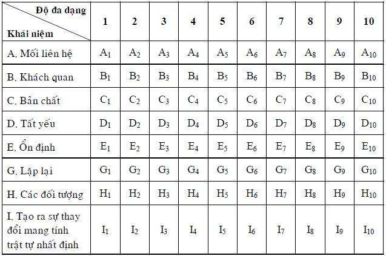
Hình 338: Bảng (ma trận) hình thái về sự đa dạng của các quy luật
Mỗi một công thức hình thái Aa–Bb–Cc–Dd–Ee–Gg–Hh–Ii với a, b, c, d, e, g, h, i = 1÷10 là một loại quy luật có thể có.
Bảng hình thái trên Hình 338 cho chúng ta tới 108 (một trăm triệu) công thức hình thái, tức là, một trăm triệu loại quy luật với những đặc thù khác nhau có thể có.
Ở đây, người viết sử dụng phương pháp phân tích hình thái chỉ nhằm giúp bạn đọc hình dung rõ mức độ cực kỳ đa dạng của các quy luật. Từ đó, bạn đọc có được ý thức xây dựng “cách xử sự” đa dạng phù hợp với sự đa dạng của các quy luật, tránh hiểu và áp dụng như nhau đối với các loại quy luật khác nhau. Không chú ý đến điều này khi giải các bài toán, bạn có thể đưa ra các lời giải, quyết định sai.
- Nhằm minh họa điều vừa nói ở trên, người viết dẫn ra dưới đây một số lưu ý liên quan đến những loại quy luật được dạy trong trường phổ thông và đại học:
- Tất cả các quy luật đều mang tính trừu tượng, khái quát, hiểu theo nghĩa, “mối liên hệ”, “các đối tượng” có trong định nghĩa khái niệm “quy luật” đều được tách ra khỏi các mối liên hệ, các đối tượng khác, mà “mối liên hệ”, “các đối tượng” đề cập trong quy luật không tồn tại riêng rẽ, một mình trong các đối tượng cụ thể có trong thực tế. Việc “tách khỏi” này giúp các nhà nghiên cứu nhận thức sự vật một cách sâu sắc hơn. Tuy nhiên, cách làm này cũng có mặt trái của nó.
Ví dụ, các con số 1, 2, 3,… có trong các quy luật số học là các con số đã được trừu tượng hóa. Mối liên hệ giữa các con số đó (các phép tính cộng, trừ, nhân, chia chẳng hạn) cũng là mối liên hệ đã được trừu tượng hóa.
Trong thực tế, thông qua các giác quan, con người tiếp nhận những thông tin phản ánh các đối tượng cụ thể như lớp học có 40 người, 10 bộ bàn ghế, sân trường có 5 cây to, 10 cây nhỏ;… 40 người có khuôn mặt, chiều cao, trọng lượng, tính tình… khác nhau; 10 bộ bàn ghế có các vết bẩn, vết xước, tróc sơn… khác nhau. Tương tự như vậy đối với các cây trong sân trường.
Khi biến thành các con số toán học và mối liên hệ giữa chúng, các nhà nghiên cứu tách phần “lượng” ra khỏi các đối tượng cụ thể và đi tìm các mối liên hệ giữa những “lượng” này.
Điều này có nghĩa, các nhà nghiên cứu không quan tâm khuôn mặt, chiều cao, trọng lượng, tính tình… của các học sinh cụ thể, mà chỉ quan tâm con số 40. Tương tự như vậy đối với các đối tượng cụ thể khác như các bộ bàn ghế, cây ở sân trường. Tiếp theo, các nhà nghiên cứu đi phát hiện các mối liên hệ giữa các con số. Nắm được các mối liên hệ này, những người sử dụng sẽ áp dụng chúng vào thực tế. Chẳng hạn, lớp 40 người, hôm nay vắng 5 người, vậy số người có mặt ở lớp là 40 - 5 = 35 người mà không cần phải đếm. Hoặc, trường có 10 lớp, mỗi lớp có 40 người, vậy học sinh toàn trường là 10 x 40 = 400 người.
Rõ ràng, sử dụng các quy luật số học đem lại rất nhiều ích lợi trên thực tế. Tuy nhiên, những người chỉ làm việc với các con số, do tính trừu tượng của các con số (chỉ quan tâm khía cạnh “lượng” của các đối tượng), những người đó có thể bỏ qua rất nhiều các khía cạnh khác của đối tượng. Nếu đấy là những khía cạnh mang các giá trị nhân văn, nhân đạo, đạo đức, tinh thần, họ có thể trở nên quan liêu, vô cảm, thậm chí trở thành những kẻ tiếp tay hoặc gây tội ác một cách vô tình.
- Cũng do tính trừu tượng, các quy luật thường chỉ đúng hoàn toàn trong các trường hợp lý tưởng. Do vậy, khi áp dụng các quy luật vào thực tế cần có những điều chỉnh phù hợp.
Trong vật lý có khái niệm “chất điểm”, được hiểu là một đối tượng vật chất có khối lượng, vận tốc… nhưng kích thước bằng zêrô. “Chất điểm” như vậy không có trong thực tế, do vậy, các quy luật động học, động lực học… của “chất điểm” chỉ hoàn toàn đúng cho các trường hợp lý tưởng. Còn khi áp dụng thực tế, nếu kích thước của chiếc ôtô nhỏ hơn rất nhiều quãng đường đi được (chẳng hạn khoảng cách giữa Cao Bằng và Cà Mau) thì các quy luật liên quan chất điểm mới có thể sử dụng được. Nếu khác đi, bạn phải có các điều chỉnh phù hợp. Không chú ý những điều nói trên, bạn có thể sử dụng các quy luật vật lý ra ngoài phạm vi áp dụng của chúng.
Trong hình học có đường thẳng lý tưởng. Đấy là đường ngắn nhất nối hai điểm (điểm hình học cũng mang tính lý tưởng) và đường thẳng lý tưởng có độ dài nhưng độ rộng bằng zêrô. Nếu áp dụng điều này vào bài toán sau mà không phân biệt giữa lý tưởng và thực tế, bạn có thể ra quyết định sai.
Bài toán:
“Người ta cần đào một cái rãnh trên sàn nhà lót gạch hoa (bông) từ điểm A đến điểm B để lắp đặt ống nước có đường kính 3 cm (xem Hình 339). Hãy chỉ ra đường đi của rãnh cần đào nối từ điểm A đến điểm B sao cho số lượng các viên gạch bị đập vỡ phải thay thế là ít nhất?”
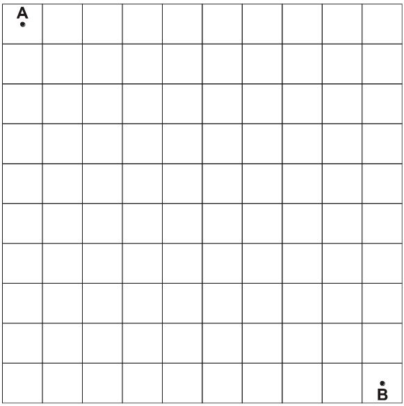
Hình 339: Sàn nhà lót gạch hoa với hai điểm A và B
Theo thói quen toán học, người giải có thể kẻ (hoặc hình dung trong đầu) ngay một đường thẳng lý tưởng nối điểm A với điểm B (xem Hình 340: “Giải pháp lý tưởng”) và suy ra số lượng viên gạch đập vỡ cần thay thế là 10.
Đoạn thẳng AB thực tế không phải là đoạn thẳng AB lý tưởng (có chiều dài nhưng không có chiều rộng) mà là ống nước đường kính 3 cm. Do vậy, nếu người giải ra quyết định vội vàng, làm theo những gì hình học mách bảo thì số lượng viên gạch đập vỡ cần thay thế là 28 chứ không phải là 10 (xem Hình 341: Áp dụng “giải pháp lý tưởng” vào thực tế).
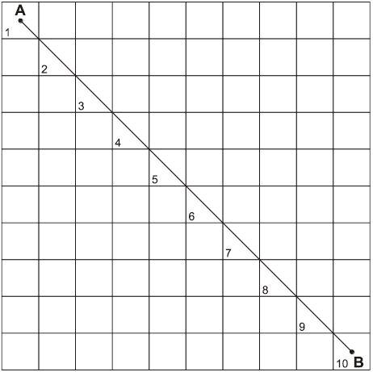
Hình 340: “Giải pháp lý tưởng” (10 viên gạch cần thay thế)
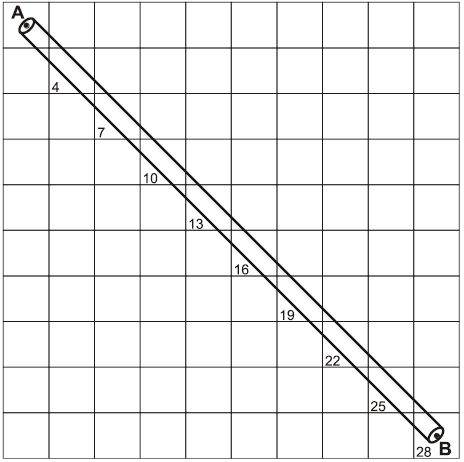
Hình 341: Áp dụng “giải pháp lý tưởng” vào thực tế (28 viên gạch cần thay thế)
Vậy giải pháp thực tế nào cho “số lượng các viên gạch bị đập vỡ phải thay thế là ít nhất?”.
Bạn cần phải tránh cho ống nước đi theo đường chéo của viên gạch vì tại mỗi điểm nút (đỉnh của hình vuông–viên gạch), ống nước với kích thước của mình đòi hỏi phải đập vỡ bốn viên gạch. Ống nước đi song song với cạnh viên gạch thì chỉ cần đập vỡ một viên gạch.
Hình 342 có đưa ra giải pháp thực tế với số lượng viên gạch bị đập vỡ phải thay thế là 19. Bạn kiểm tra xem, đây đã phải là phương án đúng nhất chưa?
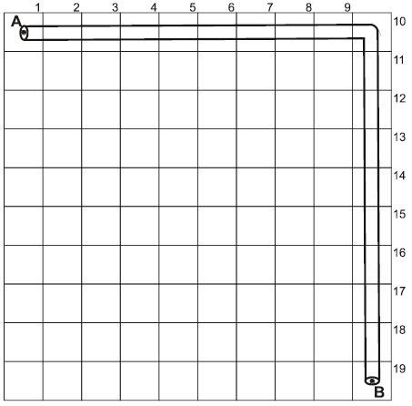
Hình 342: Giải pháp thực tế (19 viên gạch cần thay thế)
- Toán học có thể coi là một khoa học độc lập, đồng thời toán học được sử dụng rộng rãi trong nhiều ngành khoa học–kỹ thuật, trong công việc, đời sống. Như trên đã lưu ý bạn đọc, toán học tách phần “lượng” ra khỏi các đối tượng thực tế để nghiên cứu. Nếu bạn giải một bài toán thuần túy toán học thì không có vấn đề gì, nhưng nếu bạn phải giải bài toán thực tế có áp dụng toán học thì bạn cần phải tính đến những quy luật liên quan đến thay đổi về “chất” vì toán học chỉ tập trung chú ý phần “lượng”.
Người viết đã hỏi nhiều sinh viên:
“Các anh, chị đã học định luật Ohm
\[I=\frac{U}{R}\],
trong đó, U là hiệu điện thế, I ‑ cường độ dòng điện. Nếu chúng ta tăng U thì I cũng tăng theo. Giả sử chúng ta tăng U lên vô cực (∞) thì I sẽ thay đổi như thế nào?”
Tuyệt đại đa số họ trả lời rằng I cũng tăng lên vô cực. Một số nhỏ thì lưỡng lự một cách cảnh giác, cho là thầy định “bẫy” gì đây, vì một câu hỏi dễ trả lời như vậy mà thầy lại đem ra hỏi.
Thì ra, họ đều liên tưởng đến hàm số y = ax với a = 1/R > 0. Theo toán học x → +∞ thì y → +∞.
Trong khi đó, trên thực tế, sự vật lại diễn ra theo quy luật về lượng–chất (xem 9.2.2 Các quy luật của phép biện chứng của quyển ba).
Để tiện trình bày, người viết lấy một mạch điện cụ thể (xem Hình 343) gồm nguồn điện, một dây kim loại (làm bằng chì chẳng hạn), các đồng hồ đo hiệu điện thế và cường độ dòng điện.
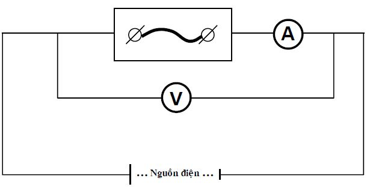
Hình 343: Mạch điện dùng để nghiên cứu mối liên hệ giữa cường độ dòng điện và hiệu điện thế dây kim loại
Khi tăng U (thay đổi về lượng) thì I tăng theo định luật Ohm, nhưng chỉ trong một khoảng thay đổi lượng nào đó của U.
Tăng U tiếp, vượt quá một giới hạn nào đó về lượng, điện trở kim loại không còn là hằng số nữa mà trở thành hàm số theo nhiệt độ (vì dây kim loại nóng lên). Lúc này bạn phải dùng công thức khác. Đó là 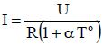.
Công thức vừa nêu cũng chỉ đúng trong một khoảng thay đổi nhất định của U. Nếu tăng U thêm nữa, dây kim loại nóng quá, chảy ra, mạch điện bị ngắt, I = 0.
Tiếp tục tăng U, I vẫn bằng zêrô. Khi U đạt giá trị đủ lớn làm ion hóa các phân tử khí, lại xuất hiện dòng điện trong mạch. Lúc này, cường độ dòng điện tuân theo quy luật dẫn điện trong chất khí chứ không phải là định luật Ohm nữa.
Tất cả những gì vừa trình bày được người viết thể hiện trên Hình 344.
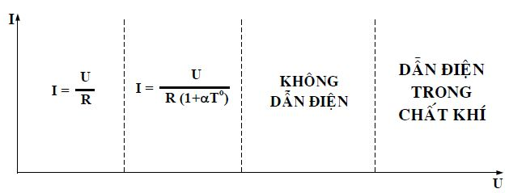
Hình 344: Sự thay đổi cường độ dòng điện khi tăng hiệu điện thế của mạch điện có trên Hình 343
- Nếu so sánh các quy luật với nhau, chúng khác nhau về mức độ trừu tượng, khái quát.
Ví dụ, các quy luật đại số, số ảo, số phức trừu tượng, khái quát hơn các quy luật số học. Các quy luật hệ thống trừu tượng, khái quát hơn các quy luật của các lĩnh vực chuyên ngành. Các quy luật mang tính trừu tượng, khái quát cao nhất là các quy luật triết học (xem Hình 101 và phần văn bản liên quan trong mục 9.1 Mở đầu của quyển ba).
Các quy luật cụ thể thường dễ hiểu, dễ nhớ, dễ áp dụng nhưng có phạm vi áp dụng hẹp, còn các quy luật trừu tượng, khái quát – khó hiểu, khó nhớ, khó áp dụng nhưng có phạm vi áp dụng rộng. Để khai thác được các mặt mạnh của hai loại quy luật, người áp dụng các quy luật vào thực tế cần luyện tập để có được khả năng chuyển từ cụ thể sang khái quát và khái quát sang cụ thể một cách dễ dàng. Về điều này, bạn đọc nên xem lại Hình 97 và phần văn bản liên quan trong mục nhỏ 8.6.1 Những nhận xét chung của quyển ba; các Hình 101, 102, 103 và các phần văn bản liên quan trong mục 9.1 Mở đầu cũng của quyển ba; Hình 215 và phần văn bản liên quan trong mục nhỏ 12.1.3 Diễn giải lôgích nhu cầu–hệ thống bằng các thủ thuật (nguyên tắc) sáng tạo cơ bản của quyển năm.
- Tất cả các hiện tượng xảy ra trên thế giới đều tuân theo các quy luật nhất định, tức là, chúng mang tính quyết định luận (tất cả đều được quyết định bởi các quy luật khách quan). Tồn tại các hình thức và quy luật mang tính quyết định luận khác nhau:
Nếu các trạng thái xảy ra trong hệ thống xác định định trước một cách đơn trị các trạng thái tiếp theo của hệ thống thì sự thay đổi của hệ thống đó tuân theo các quy luật tương ứng một–một hay còn gọi là các quy luật động lực. Ví dụ, các định luật của Newton, định luật Ohm và nhiều định luật khác của nhiều ngành khoa học–kỹ thuật.
Nếu các trạng thái xảy ra trong hệ thống xác định không đơn trị các trạng thái tiếp theo của hệ thống thì sự thay đổi của hệ thống đó tuân theo các quy luật xác suất–thống kê. Ví dụ, việc tung đồng tiền kim loại, bạn không biết trước một cách chắc chắn mặt quốc huy hay mặt ghi số tiền xuất hiện.
- Các quy luật xác suất–thống kê còn gọi là “các quy luật số lớn”. Điều này có nghĩa, giá trị của các quy luật xác suất–thống kê chỉ thể hiện ra khi bạn làm việc với số lượng lớn (thậm chí rất lớn) các trạng thái (sự kiện) xảy ra.
Ví dụ, đồng tiền kim loại có hai mặt: Mặt quốc huy và mặt số (ghi số tiền). Chúng ta biết rằng, nếu đồng tiền kim loại được làm đồng đều, thì khi tung đồng xu, khả năng xuất hiện hoặc mặt quốc huy hoặc mặt số là như nhau. Nói cách khác, xác suất (giá trị định lượng của khả năng xảy ra sự kiện) của việc xuất hiện mặt quốc huy, cũng như mặt số là 0,5.
Áp dụng vào thực tế, bạn cho rằng tung đồng tiền hai lần, nếu một lần bạn đã thu được mặt quốc huy, thì chắc chắn lần kia – mặt số. Trong trường hợp này, bạn đã hiểu và dùng ý nghĩa, giá trị của xác suất ra ngoài phạm vi áp dụng của nó.
Xác suất 0,5 của việc xuất hiện mặt quốc huy chẳng hạn, chỉ thể hiện ra sau số lượng lần tung đồng tiền vô cùng lớn. Cụ thể, nhà bác học Pháp J. Buffon (1707–1788) sau 4.040 lần tung đồng tiền thu được con số 0,5080. Nhà toán học thống kê người Anh K. Pearson (1857–1936) sau 12.000 lần tung đồng tiền thu được con số 0,5016, còn sau 24.000 lần – 0,5005. Điều này có nghĩa, số lượng lần tung đồng tiền càng lớn, tỷ số giữa số lượng lần xuất hiện mặt quốc huy và tổng số các lần tung đồng tiền càng tiến gần đến xác suất (0,5) xuất hiện mặt quốc huy cho một lần tung đồng tiền.
- Giá trị xác suất để xảy ra một sự kiện nào đó phụ thuộc vào các điều kiện nhất định. Nếu những điều kiện này thay đổi, giá trị xác suất cũng thay đổi.
Ví dụ, đồng tiền kim loại được chế tạo không đồng đều: Mặt quốc huy làm từ kim loại nặng, mặt số làm từ kim loại nhẹ hơn. Xác suất xuất hiện mặt quốc huy không còn là 0,5 nữa.
Nhân đây, người viết dẫn ra câu chuyện vui:
“Có một nhà thống kê thường xuyên phải di chuyển bằng máy bay. Ông lo đi phải chuyến bay có đặt bom của bọn khủng bố. Bằng nghiệp vụ của mình, ông đánh giá được xác suất có đặt một quả bom trên máy bay là một phần nghìn, còn xác suất có hai quả bom trên máy bay là một phần triệu. Thế là từ đó trở đi, mỗi lần phải đi máy bay, ông đều mang theo mình một quả bom”.
- Ngược lại, có những giá trị xác suất tìm ra ban đầu đúng trong nhiều trường hợp, nay hình như không còn đúng nữa. Nếu bạn đi ngược lại điều chỉnh điều kiện cho đúng như ban đầu, bạn sẽ tìm được lý do vì sao xác suất thay đổi.
Chuyện kể về nhà bác học Pháp P. Laplace (1749–1827) nghiên cứu quy luật sinh con trai, con gái và phát hiện ra rằng, theo các số liệu thống kê của London, Berlin, Petersburg, Pháp, số lượng con trai sinh ra chiếm khoảng 0,512 tổng số trẻ sơ sinh. Tuy nhiên, riêng Paris, tỷ số này có phần nhỏ hơn, chỉ là 0,510. Laplace tìm hiểu sự thiếu hụt (hai phần ngàn) này và phát hiện ra, con số trẻ em sinh ra ở thủ đô nước Pháp được tính bao gồm cả những đứa trẻ bị bỏ rơi. Thì ra, các nông dân ngoại ô thường bỏ rơi những đứa trẻ gái, vì chúng không phải là những người lao động chính trong tương lai. Chính điều này làm cho tỷ số sinh con trai giảm ở Paris. Sau khi bỏ đi con số các trẻ sơ sinh bị bỏ rơi, Laplace lại nhận được con số 0,512 đối với Paris. Rõ ràng, con số 0,512 là xác suất thực sự về việc sinh con trai.
- Các quy luật (kể cả các kết luận mang tính quy luật) được tìm ra như thế nào?
Về điều này, bạn đọc có thể đọc lại mục 8.5 Suy luận, đặc biệt, mục nhỏ 8.5.4 Quan hệ giữa suy luận diễn dịch và suy luận quy nạp của quyển ba. Dưới đây, người viết nhấn mạnh một số ý.
Quá trình tìm kiếm, xác định quy luật thường bắt đầu bằng ý tưởng, mô hình, giả thuyết hoặc lý thuyết (người viết gọi chung chúng là ý tưởng) nào đó, có được nhờ suy luận của những người tìm kiếm. Ý tưởng được chọn cần tuân theo hai quy tắc sau:
Ý tưởng phải là cách giải thích đơn giản nhất bằng chứng được mong đợi, như là ứng viên của quy luật cần tìm.
Ý tưởng phải có khả năng tiên đoán cao kiểu “Nếu đúng như thế thì các hiện tượng A, B, C phải được phát hiện ra trong tương lai”.
Ý tưởng và các thí nghiệm có mối quan hệ phản hồi đối với nhau (xem Hình 345).
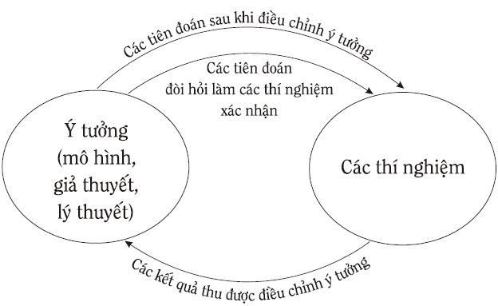
Hình 345: Quan hệ phản hồi giữa “ý tưởng” và “thí nghiệm” trong quá trình đi tìm quy luật
Các tiên đoán rút ra từ ý tưởng ban đầu giúp thiết kế các thí nghiệm cần thiết để kiểm tra những tiên đoán này.
Các kết quả thu được từ các thí nghiệm giúp củng cố, hoặc hoàn thiện thêm ý tưởng, hoặc cho thấy ý tưởng là sai, cần phải thay bằng ý tưởng khác.
Mối quan hệ phản hồi nêu trên được “xoay vòng” rất nhiều lần để xác nhận ý tưởng có thực sự phản ánh quy luật có trong thực tế hay không.
Phương pháp thực nghiệm (thực hiện các thí nghiệm) thường được dùng rộng rãi trong các ngành khoa học tự nhiên, khoa học kỹ thuật, còn trong các ngành khoa học xã hội, khoa học hành vi, y học thì dùng ở những nơi không ảnh hưởng xấu đến con người về mặt sức khỏe, đạo đức.
Ở những nơi không được phép làm thí nghiệm, các nhà nghiên cứu bắt buộc phải dựa trên những bằng chứng thu được sau khi sự kiện đã xảy ra. Các nhà nghiên cứu phải xem xét các ghi chép để tìm ra những tình huống sự kiện, ở đó các biến số không thay đổi, ngoại trừ biến số được quan tâm. Giá trị của các kết quả nghiên cứu phụ thuộc vào hai yếu tố:
Như trên vừa nói, chỉ có biến số được quan tâm thay đổi còn các biến số khác phải là hằng số.
Phải có số lượng rất lớn các ví dụ về tình huống sự kiện được ghi chép lại.
Bằng cách đó, các nhà nghiên cứu đi tìm mối liên hệ giữa biến số được quan tâm và sự kiện:
Mối liên hệ có thể là mối quan hệ nhân–quả trực tiếp, hiểu theo nghĩa, nếu thay đổi X thì dẫn đến thay đổi Y (xem Hình 346a).
Mối liên hệ giữa X và Y còn có thể là do thay đổi Z (biến số khác) dẫn đến thay đổi cả X và Y mà giữa X và Y không có mối quan hệ nhân–quả trực tiếp, tức là, nếu chúng ta thay đổi X thì Y không nhất thiết phải thay đổi (xem Hình 346b). Lúc này, mối liên hệ giữa X và Y có thể là mối quan hệ phụ thuộc (correlation) chứ không phải là mối quan hệ nhân–quả trực tiếp.
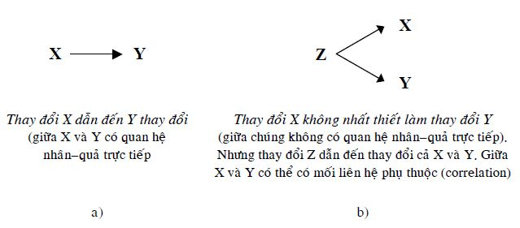
Hình 346: Hai loại liên hệ giữa các biến số X và Y
Khó khăn lớn đối với các nghiên cứu sự kiện sau khi sự kiện đã xảy ra thể hiện ở chỗ, mặc dù mối liên hệ nào đó giữa các biến số được tìm ra nhưng chưa chắc mối liên hệ đó là mối quan hệ nhân–quả. Bởi vì, không giống như các lĩnh vực cho phép làm thí nghiệm, ở đây, các nhà nghiên cứu không được can thiệp vào các giai đoạn trước, trong quá trình diễn ra sự kiện.
Ví dụ, một số nhà nghiên cứu y học thể thao muốn xem xét, liệu những người tập thể dục, thể thao có nguy cơ bị nhồi máu cơ tim thấp hơn những người không tập hay không?
Các nhà nghiên cứu không thể đưa các đối tượng nghiên cứu của mình vào phòng thí nghiệm trong các điều kiện được kiểm soát, rồi gây ra cho họ các cơn nhồi máu cơ tim để thực hiện các thí nghiệm mong muốn.
Trên thực tế, các nhà nghiên cứu đã phải đọc ghi chép bệnh sử của 1.250 trường hợp chết vì nhồi máu cơ tim trong vòng 14 tháng ở thành phố Seattle (Mỹ). Như vậy, các nhà nghiên cứu chỉ có thể tiến hành công việc nghiên cứu của mình sau khi sự kiện (nhồi máu cơ tim) đã xảy ra.
Các nhà nghiên cứu phải loại bỏ các ghi chép của những người đã mắc bệnh tim sẵn hoặc đã có những rắc rối trước đó liên quan đến tim mạch…
Các nhà nghiên cứu tìm ra rằng những người ít hoạt động (được định nghĩa là những người dành ít hơn 20 phút một tuần cho luyện tập thân thể) có nguy cơ đột tử vì nhồi máu cơ tim cao gấp khoảng ba lần so với những người thực sự tập thể dục, thể thao hơn hai giờ rưỡi mỗi tuần.
Như vậy, ở đây có mối liên hệ phụ thuộc khá mạnh giữa luyện tập thân thể và sức khỏe của hệ thống tim mạch. Do không phải là mối quan hệ nhân–quả trực tiếp, chúng ta không biết mối liên hệ này hoạt động như thế nào, theo cơ chế nào, cho nên chúng ta không thể điều khiển được mối liên hệ này.
Trong tương lai, khi có những phương pháp nghiên cứu hoàn thiện hơn, rất có thể, các nhà nghiên cứu tìm ra được những bằng chứng mới để xác định được mối quan hệ nhân–quả trực tiếp từ những mối liên hệ phụ thuộc mạnh đã biết.
- Trong trường học, chúng ta được dạy lần lượt từng quy luật một. Nhưng trong các bài toán (đặc biệt các bài toán thực tế) thường nhiều quy luật xảy ra cùng một lúc. Điều này có thể dẫn đến những trường hợp sau:
Người giải không phát hiện ra và do vậy, không tính đến hết tất cả các quy luật tác động đến hệ thống có trong bài toán. Khả năng đưa ra lời giải, quyết định sai có thể rất lớn.
Ngay cả khi người giải phát hiện ra hết tất cả các quy luật tác động đến hệ thống có trong bài toán, có những trường hợp, người giải không thể tìm ra lời giải. Vì, số lượng các biến số, nếu tính hết tất cả các quy luật, trở nên rất nhiều, vượt ra ngoài khả năng giải hiện có của toán học, của máy tính điện tử. Lúc này, người giải phải giải gần đúng bằng cách loại, không tính đến các quy luật không quan trọng, nhìn theo quan điểm mục đích cần đạt đề ra trong bài toán cần giải.
Nhiều quy luật hoạt động cùng một lúc có thể dẫn đến hiệu ứng hệ thống: Xuất hiện các tính chất mới không thể quy riêng cho từng quy luật đứng riêng rẽ. Không chú ý hiệu ứng hệ thống, người giải có thể đưa ra lời giải, quyết định sai.
- Khi áp dụng các quy luật vào thực tế, người giải có thể tạo ra “môi trường nhân tạo”, tại đó, các quy luật được đưa vào một cách có chọn lựa, mang tính mục đích rõ ràng. Nhờ vậy, “môi trường nhân tạo” nói trên có những tính chất, chức năng mà môi trường tự nhiên không có, hoặc có những tính chất, chức năng vượt trội so với môi trường tự nhiên. Các sáng chế của con người nói chung, các thiết bị, máy móc, công nghệ nói riêng là các “môi trường nhân tạo” theo nghĩa vừa nêu. Nói cách khác, con người tạo ra các sáng chế phục vụ con người dựa trên việc hiểu, nắm vững các quy luật. Về mối quan hệ giữa phát minh và sáng chế, bạn đọc có thể xem lại mục 1.3 Sáng tạo của con người: Nhìn từ nhiều góc độ của quyển một.
- Tóm lại, trong mục đầu tiên này của quyển bảy, người viết đã trình bày quy luật theo nghĩa chung nhất và một số điểm (chứ không phải tất cả các điểm) cần chú ý về quy luật.
Những phần tiếp theo của quyển bảy tập trung trình bày các quy luật phát triển hệ thống (hay còn gọi là các quy luật sáng tạo và đổi mới). Khi bạn thực hiện các giai đoạn của quá trình giải bài toán đến khi bài toán được coi là giải xong, bạn không chỉ sử dụng các quy luật sáng tạo và đổi mới mà bạn còn phải sử dụng các quy luật khác và những ý mang tính quy luật, được trình bày trong bộ sách “Sáng tạo và đổi mới”. Không chỉ dừng ở đó, bạn còn phải dùng các quy luật khác nữa, ví dụ các quy luật liên quan đến lĩnh vực bài toán nảy sinh… Trong ý nghĩa như vậy, mục đầu tiên này của quyển bảy sẽ giúp bạn có ý thức hiểu, sử dụng các quy luật đúng phạm vi áp dụng của chúng và có những cách xử sự thích hợp để khai thác tối đa các ích lợi của các quy luật, tránh những cái sai không đáng có.
14.2 CÁC QUY LUẬT PHÁT TRIỂN HỆ THỐNG (CÁC QUY LUẬT SÁNG TẠO VÀ ĐỔI MỚI) (1)
Trong mỗi mục nhỏ dưới đây, người viết sẽ đề cập một quy luật phát triển hệ thống theo thứ tự sau:
- Lời phát biểu quy luật.
- Diễn giải nội dung quy luật.
- Một số thí dụ minh họa quy luật.
Cho đến nay, trong TRIZ có chín quy luật phát triển hệ thống được trình bày. Các quy luật này được G.S. Altshuller đưa ra, trước hết, bằng việc kế thừa các nghiên cứu trước đó và khái quát hóa ở mức cao các thông tin về sáng tạo sáng chế (chúng cũng chính là các thông tin về sự phát triển của các hệ thống thuộc các lĩnh vực kỹ thuật khác nhau), sau đó, có so sánh với sự phát triển của các hệ thống thuộc các lĩnh vực không phải kỹ thuật, kể cả các hệ thống tự nhiên.
Với thời gian, số lượng quy luật phát triển hệ thống được tìm ra sẽ tăng thêm chứ không phải dừng lại ở con số “9”.
14.2.1 Quy luật về tính tự lập của hệ thống (quy luật về tính đầy đủ các thành phần của hệ thống)
LỜI PHÁT BIỂU QUY LUẬT:
Một hệ thống hoạt động tự lập phải bao gồm động cơ, bộ phận truyền động, bộ phận làm việc (công cụ) và bộ phận điều khiển. Trong đó, mỗi bộ phận phải có khả năng làm việc tối thiểu và ít nhất phải có một bộ phận điều khiển được. Hệ có khuynh hướng phát triển trở thành hệ tự lập và tăng tính tự lập.
DIỄN GIẢI NỘI DUNG QUY LUẬT:
Theo như lời phát biểu ở trên, hệ tự lập (hay còn gọi là hệ tự chủ) là hệ phải có đầy đủ bốn bộ phận (hệ dưới): Động cơ; bộ phận truyền động; bộ phận làm việc; bộ phận điều khiển, trong đó, mỗi bộ phận phải có khả năng làm việc tối thiểu và ít nhất, phải có một bộ phận điều khiển được.
Trong số bốn bộ phận hợp thành hệ tự lập, đầu tiên, người viết sẽ giải thích “bộ phận làm việc”.
Như bạn đọc đã biết (xem mục nhỏ 10.2.1 Một số khái niệm cơ bản và ý tưởng chung về hệ thống của quyển ba), hệ thống có tính hệ thống (tính toàn thể). Để tìm tính hệ thống của hệ cho trước, bạn cần trả lời câu hỏi:
“Hệ cho trước sinh ra hoặc được chế tạo, sản xuất ra để làm gì, có chức năng, mục đích, sứ mạng nào?”
“Bộ phận làm việc” của hệ cho trước là bộ phận trực tiếp thực hiện tính hệ thống (đóng vai trò “đại diện”) của hệ cho trước. “Bộ phận làm việc” của hệ cho trước còn được gọi là “công cụ” của hệ cho trước và hệ cho trước còn được gọi là “hệ công cụ”.
Ví dụ 1: Chọn máy tiện là hệ cho trước. Máy tiện được chế tạo ra để tiện các chi tiết của các máy móc khác. Như vậy, tính hệ thống (chức năng) của máy tiện là “tiện”. Bộ phận trực tiếp thực hiện việc “tiện” là lưỡi dao tiện, cho nên, lưỡi dao tiện là bộ phận làm việc (hay còn gọi là công cụ) của hệ thống máy tiện. Hệ thống máy tiện gọi là hệ công cụ. Các chi tiết bị lưỡi dao tiện (bộ phận làm việc) trực tiếp tác động. Các chi tiết được gọi là “sản phẩm” hoặc “hệ sản phẩm”.
Ví dụ 2: Chọn hệ thống báo cháy (hệ công cụ) là hệ cho trước. Hệ thống báo cháy được chế tạo ra để phát hiện nhiệt độ không khí cao vượt quá giá trị ngưỡng nhất định, rồi phát tín hiệu báo động (chuông reo, còi hú). Bộ phận làm việc hay còn gọi là công cụ của hệ thống báo cháy là đầu dò nhiệt độ (thu thông tin) và chuông, còi (phát thông tin). Không khí là đối tượng cung cấp thông tin (trạng thái nhiệt độ của mình) cho bộ phận làm việc và tiếp xúc trực tiếp với bộ phận làm việc của hệ thống báo cháy. Không khí được gọi là “sản phẩm” hoặc “hệ sản phẩm”.
Tinh thần chung là, đối tượng nào tương tác trực tiếp với bộ phận làm việc (công cụ) thì đều được gọi là “sản phẩm” hoặc “hệ sản phẩm”. Do vậy, bạn đọc cần phân biệt khái niệm “sản phẩm” nói đến ở đây với khái niệm sản phẩm vẫn dùng trong đời sống hàng ngày, thường được hiểu là “cái được tạo ra do lao động của con người hoặc như là kết quả tự nhiên của một quá trình nhất định”.
- Các hệ thống tự lập do con người tạo ra tuy đa dạng, nhưng tùy theo chức năng của bộ phận làm việc, nhiều hệ thống trong số đó có thể phân loại một cách khái quát thành:
Các hệ thống dùng để thay đổi sản phẩm.
Các hệ thống dùng để phát hiện, đo sản phẩm.
Các hệ thống, ở đó bộ phận làm việc có chức năng làm thay đổi sản phẩm (thay đổi hiểu theo nghĩa rộng nhất như thay đổi hình dạng, tính chất, vị trí, chức năng… của sản phẩm) được xếp vào loại các hệ thống dùng để thay đổi sản phẩm. Hệ thống máy tiện, trong ví dụ 1 nêu ở trên, thuộc loại hệ thống thay đổi sản phẩm.
Các hệ thống, ở đó bộ phận làm việc có chức năng thu thông tin từ sản phẩm nhằm phát hiện điều gì đó định tính hoặc định lượng của sản phẩm, mà không có mục đích thay đổi chính sản phẩm, được xếp vào loại các hệ thống dùng để phát hiện (định tính), đo (định lượng) sản phẩm. Hệ thống báo cháy trong ví dụ 2 nêu ở trên thuộc loại hệ thống này.
Bạn đọc hãy lập cho mình danh sách các hệ thống cụ thể thuộc hai loại theo các tiêu chuẩn vừa được trình bày, trong đó, kết quả tương tác của công cụ và sản phẩm gọi là thành phẩm.
Nếu như hệ một chức năng có một bộ phận làm việc thì hệ đa chức năng (đa tính hệ thống) thường có nhiều bộ phận làm việc. Tùy theo việc bạn xem xét chức năng nào, bạn sẽ xác định được bộ phận làm việc tương ứng với chức năng đó.
Hoạt động của bất kỳ hệ thống tự lập nào đều cần năng lượng. “Động cơ” của hệ tự lập là bộ phận có chức năng tạo ra dạng năng lượng, dạng lực, dạng vận động… thích hợp để hệ thống đó hoạt động.
Nội dung vừa nêu của khái niệm “động cơ” không chỉ bao gồm các động cơ quen thuộc đối với bạn như động cơ xe gắn máy, động cơ ôtô, động cơ máy bay, động cơ tàu thủy, động cơ đốt trong hai kỳ, bốn kỳ, động cơ diesel, động cơ điện các loại… mà còn rộng hơn nữa.
Ví dụ, xe do ngựa kéo. Ngựa là bộ phận tạo ra sức (lực) kéo, nhờ vậy xe mới chạy được, ngựa là động cơ.
Một ví dụ khác, hệ thống cơ thể người muốn hoạt động được cần phải có năng lượng thích hợp. Năng lượng đó do các bộ phận tiêu hóa, hô hấp và có thể tính thêm các hiện tượng thúc đẩy hoạt động của con người tạo ra. Vậy các bộ phận tiêu hóa, hô hấp và các hiện tượng nói trên là động cơ của con người.
Khi nói: “Động cơ… tạo ra dạng năng lượng, dạng lực, dạng vận động… thích hợp để hệ thống đó hoạt động”, bạn đọc cần hiểu rằng động cơ không phải là nguồn năng lượng khởi đầu và hệ không phải là hệ cô lập, khép kín. Trên thực tế, động cơ đóng vai trò bộ phận biến đổi năng lượng lấy từ các hệ thống khác hoặc môi trường, thành dạng năng lượng, dạng lực, dạng vận động… thích hợp, hiểu theo nghĩa, ở dạng đó, hệ tự lập cho trước mới có thể hoạt động được, dạng khác thì không.
Ví dụ, động cơ xe ôtô biến năng lượng xăng, dầu thành năng lượng cơ học dưới dạng chuyển động quay, từ đó, tạo nên lực kéo bánh xe chuyển động.
- Nếu năng lượng, lực, sự vận động… (để tránh dài dòng, người viết gọi chung chúng là năng lượng) do động cơ tạo ra chỉ nằm lại ở động cơ thì hệ tự lập cũng không hoạt động được. Ở đây cần một bộ phận làm nhiệm vụ truyền năng lượng đến tất cả những nơi cần năng lượng của hệ thống đó, đặc biệt, đến bộ phận làm việc, vì bộ phận làm việc đóng vai trò đại diện hệ thống, trực tiếp thực hiện tính hệ thống. Có như vậy, toàn bộ hệ thống mới hoạt động (làm việc). Bộ phận thực hiện chức năng vừa nêu gọi là “bộ phận truyền động”.
Ví dụ, bộ phận truyền động trong xe gắn máy là nhông, sên, mạng điện của xe gắn máy.
- Hệ thống tự lập cần phải ở các trạng thái khác nhau để duy trì tính hệ thống, để các bộ phận của mình tương tác tối ưu với nhau, với môi trường và bộ phận làm việc tương tác tối ưu với sản phẩm. Bộ phận làm nhiệm vụ duy trì tính hệ thống và tạo ra các trạng thái khác nhau này gọi là “bộ phận điều khiển”. Tùy theo mục đích đề ra của các hệ cụ thể, bộ phận điều khiển có thể điều khiển một, hai, hoặc cùng một lúc cả ba bộ phận kia: Động cơ, bộ phận truyền động, bộ phận làm việc.
Về “điều khiển”, bạn đọc nên đọc lại toàn bộ Chương 7: Điều khiển học: Điều khiển hành động và thế giới bên trong con người sáng tạo, hoặc ít ra, mục 7.2 Điều khiển học: Một số ý tưởng cơ bản chung của quyển hai.
Trong LỜI PHÁT BIỂU QUY LUẬT có yêu cầu “mỗi bộ phận phải có khả năng làm việc tối thiểu”. Bởi vì, bộ phận nào chỉ có khả năng làm việc dưới mức tối thiểu, có nghĩa bộ phận đó không có khả năng thực hiện chức năng của nó và nó được coi như không tồn tại. Lúc đó, hệ không còn hoạt động như là hệ tự lập nữa, do không có đầy đủ bốn bộ phận: Động cơ, bộ phận truyền động, bộ phận làm việc, bộ phận điều khiển.
Nếu như trước đây chúng ta thường biểu diễn hệ thống dưới dạng chung gồm các yếu tố liên kết với nhau (xem Hình 123 và phần văn bản liên quan trong mục nhỏ 10.2.1 Một số khái niệm cơ bản và ý tưởng chung về hệ thống của quyển ba) thì nay, đối với hệ tự lập, chúng ta cần nhóm các yếu tố, các mối liên kết của hệ theo bốn chức năng của bốn bộ phận một cách tương ứng, thành bốn hệ dưới.
Hình 347 biểu diễn loại hệ tự lập dùng để thay đổi sản phẩm.
Tuy chưa thể hiện tất cả các chi tiết có trong thực tế, Hình 347 cho chúng ta biết những điều cơ bản sau:
- Động cơ tạo ra dạng năng lượng thích hợp đối với hệ cho trước. Năng lượng thường không ở dạng thuần nhất một mình mà thường kèm với chất (vật chất) nhất định. Ví dụ, năng lượng điện chạy trong các dây dẫn kim loại (chất), năng lượng chuyển động quay đi kèm với rôto của động cơ.
- Năng lượng phát sinh từ động cơ được chuyển giao cho bộ phận truyền động để bộ phận truyền động phân phối đến tất cả các bộ phận cần năng lượng hoạt động.
- Bộ phận điều khiển có quan hệ phản hồi với các bộ phận bị điều khiển, do vậy, trên hình vẽ, thông tin chuyển động theo hai chiều (mũi tên hai chiều): Thông tin điều khiển chạy từ bộ phận điều khiển đến các bộ phận bị điều khiển và thông tin cho biết kết quả của điều khiển chạy theo chiều ngược lại. Nhờ vậy, bộ phận điều khiển sẽ ra các quyết định điều chỉnh lại thông tin điều khiển để đạt được mục đích điều khiển.
Hình 347 vẽ cho trường hợp bộ phận điều khiển, điều khiển cùng một lúc ba bộ phận kia. Trường hợp tối thiểu là bộ phận điều khiển, điều khiển một trong ba bộ phận còn lại: Động cơ, bộ phận truyền động, hoặc bộ phận làm việc.
- Bộ phận làm việc (công cụ) có thể tác động lên sản phẩm cùng một lúc bằng chất, năng lượng, thông tin, các tổ hợp của chúng nhằm thay đổi sản phẩm để đạt được mục đích đề ra: Nhận được thành phẩm.
Có thể nói kết quả tác động của bộ phận làm việc thay đổi sản phẩm là sự phản ánh tập trung hiệu quả làm việc của toàn bộ hệ thống cho trước. Điều này có thể hiểu được, ít nhất, bởi hai lý do:
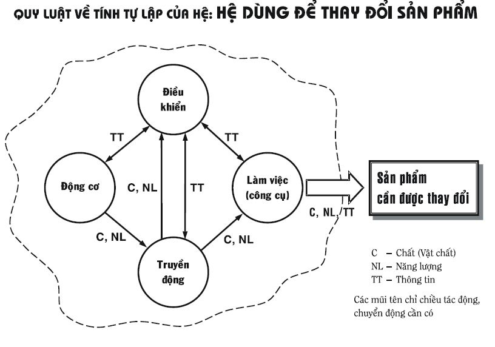
Hình 347: Quy luật về tính tự lập của hệ: HỆ DÙNG ĐỂ THAY ĐỔI SẢN PHẨM
Thứ nhất, bộ phận làm việc là bộ phận trực tiếp thực hiện tính hệ thống, mà tính hệ thống lại là chức năng, mục đích cần đạt của toàn bộ hệ thống. Trong ý nghĩa này, bộ phận làm việc được coi như là đại diện cho toàn bộ hệ thống.
Thứ hai, ba bộ phận kia (động cơ, truyền động, điều khiển) không có mục đích tự thân mà có mục đích phục vụ việc tạo ra tính hệ thống. Nói cách khác, chúng phải hỗ trợ, giúp bộ phận làm việc hoạt động tốt nhất.
- Hình 348 biểu diễn loại hệ tự lập dùng để phát hiện, đo sản phẩm.
Những gì người viết đã trình bày cho ba bộ phận (động cơ, truyền động, điều khiển) của trường hợp hệ dùng để thay đổi sản phẩm (xem Hình 347 và phần văn bản liên quan) đều đúng cho hệ dùng để phát hiện, đo sản phẩm (Hình 348). Ở đây, người viết chỉ đặc biệt nhấn mạnh các đặc thù của bộ phận làm việc và tương tác của nó đối với sản phẩm.
- Bộ phận làm việc của hệ dùng để phát hiện, đo sản phẩm không có mục đích tác động thay đổi sản phẩm, mà có mục đích thu thông tin quan tâm từ sản phẩm và thông báo thông tin này đến người cần biết.
- Trên Hình 348, chúng ta thấy thông tin xuất phát từ sản phẩm được đầu vào của bộ phận làm việc tiếp thu. Sau đó, thông tin này được biến đổi (mã hóa, khuếch đại, mã hóa lại…) thành thông tin đầu ra cho người cần biết. Liên quan đến quá trình truyền và biến đổi thông tin, bạn có thể xem lại mục 6.3 Quá trình truyền và biến đổi thông tin của quyển hai.
- Thông tin đầu ra phải ở dạng mà con người có thể tiếp thu được. Con người thu thông tin từ thế giới bên ngoài thông qua năm giác quan: Thị giác, thính giác, xúc giác, khứu giác và vị giác. Mỗi giác quan chỉ có thể tiếp thu loại thông tin thích hợp có phổ nhất định. Ví dụ, mắt người không nhìn thấy tia hồng ngoại, tai người không nghe được sóng siêu âm… Do vậy, thông tin đầu vào phải được biến đổi sao cho thông tin đầu ra phù hợp với các khả năng tiếp thu của các giác quan của con người.
- Trong nhiều trường hợp, bạn chỉ quan tâm thông tin đầu ra và xem thông tin đầu ra là thành phẩm, lúc đó, bạn có thể rút gọn, coi phần đầu vào của bộ phận làm việc là chính bộ phận làm việc của hệ dùng để phát hiện, đo sản phẩm.
- Trên Hình 348, cũng như Hình 347, để nhấn mạnh vai trò của thông tin trong các quá trình phát hiện, đo và điều khiển, người viết chỉ ghi TT (thông tin) cạnh các mối liên kết tương ứng, mà không viết thêm chất, năng lượng.
Trong khi đó, không có thông tin thuần túy, độc lập, mà thông tin thường đi kèm với vật chất, năng lượng. Do vậy, khi áp dụng quy luật vào thực tế, bạn cần tính đến cả vật chất, năng lượng đồng hành cùng với thông tin.
Trong nhiều trường hợp, thông tin về sản phẩm không tự thoát ra ngoài, mà dường như “ngủ yên” trong sản phẩm. Lúc này, người ta phải có những tác động thay đổi sản phẩm để “đánh thức” những thông tin này.
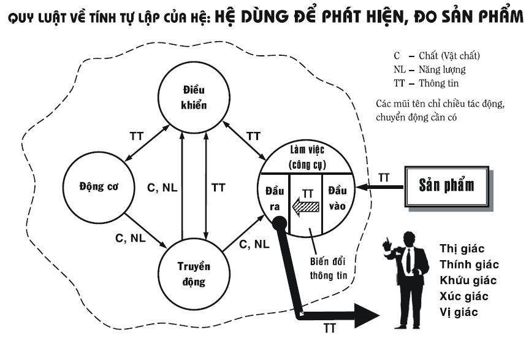
Hình 348: Quy luật về tính tự lập của hệ: HỆ DÙNG ĐỂ PHÁT HIỆN, ĐO SẢN PHẨM
Ví dụ, làm một phần sản phẩm trở nên trong suốt (hiểu cả nghĩa đen lẫn nghĩa bóng) để thu thông tin từ những phần còn lại: Vỏ bật lửa gas làm trong suốt; chụp xương bằng tia rơnghen; siêu âm thấy thai nhi trong bụng mẹ. Hoặc, kích thích sản phẩm bằng trường năng lượng, rồi thu phổ năng lượng sau khi kích thích. Phân tích phổ thu được có thể biết thông tin về sản phẩm: Các phương pháp huỳnh quang, quang điện…
- Trên các Hình 347, 348, bạn đọc cần chú ý đến sự tương tác giữa bộ phận làm việc và sản phẩm cùng kết quả của sự tương tác ấy:
- Bộ phận làm việc của loại hệ dùng để thay đổi sản phẩm tác động lên sản phẩm (xem Hình 347) để có được thành phẩm: Sản phẩm đạt các yêu cầu đề ra. Do vậy, đánh giá hoạt động của loại hệ dùng để thay đổi sản phẩm bạn phải đánh giá theo kết quả cuối cùng là thành phẩm thu được, chứ không phải đánh giá bộ phận làm việc hoặc hệ cho trước đứng riêng rẽ.
- Tương tự như vậy, việc đánh giá đối với loại hệ dùng để phát hiện, đo sản phẩm (xem Hình 348), bạn phải căn cứ vào kết quả cuối cùng: Các thông tin đầu ra có phản ánh đúng các thông tin về sản phẩm hay không.
- Việc xem xét tương tác giữa bộ phận làm việc và sản phẩm còn đem lại ích lợi: Giúp phát hiện các bài toán liên quan để hoàn thiện bộ phận làm việc nói riêng, hệ thống nói chung.
Ví dụ, nếu sản phẩm là đa dạng thì bộ phận làm việc cũng phải trở nên đa dạng, hoặc bộ phận điều khiển phải điều khiển bộ phận làm việc tốt hơn, sao cho bộ phận làm việc có thể có nhiều trạng thái đa dạng.
Người viết còn quay trở lại mối quan hệ giữa hệ công cụ và hệ sản phẩm trong mục nhỏ 14.2.5 Quy luật về tính lý tưởng của hệ thống, nhưng với cách nhìn khác.
- Nội dung của quy luật về tính tự lập (hay còn gọi là quy luật về tính đầy đủ) của hệ thống tập trung trong câu “Hệ có khuynh hướng phát triển trở thành hệ tự lập và tăng tính tự lập” của LỜI PHÁT BIỂU QUY LUẬT.
Hình 349 biểu diễn nội dung quy luật về tính tự lập (tính đầy đủ) của hệ thống.
Quy luật về tính tự lập (tính đầy đủ) của hệ thống cho thấy:
- Hệ thống cho trước nào còn chưa tự lập (chưa có đầy đủ bốn bộ phận đã nêu ở trên, mỗi bộ phận phải có khả năng làm việc tối thiểu, ít nhất, phải có một bộ phận điều khiển được) có khuynh hướng phát triển thành hệ tự lập để phát triển tính hệ thống. Tính hệ thống được tập trung thể hiện trong chức năng của bộ phận làm việc (công cụ).
- Tiếp theo, hệ tự lập phát triển về phía tăng tính tự lập, hiểu theo nghĩa, khả năng làm việc của mỗi bộ phận, sự phối hợp giữa chúng tốt hơn và tương tác của bộ phận làm việc với sản phẩm tốt hơn, hướng về phía phát triển tính hệ thống của chính hệ cho trước.
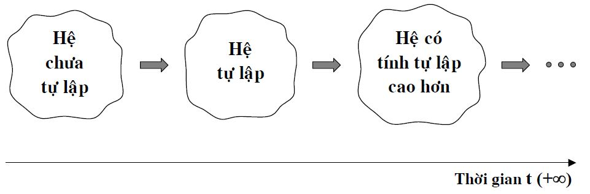
Hình 349: Quy luật 1: QUY LUẬT VỀ TÍNH TỰ LẬP (TÍNH ĐẦY ĐỦ) CỦA HỆ THỐNG
- Các sáng tạo và đổi mới giúp hệ thống phát triển theo quy luật về tính tự lập phải được chọn tuân theo tiêu chuẩn của quyết định tốt (xem mục nhỏ 10.5.1 Tiêu chuẩn của quyết định tốt: Nhìn theo quan điểm hệ thống phát triển bền vững của quyển ba).
- Trong quá trình phát triển theo quy luật về tính tự lập, chức năng của các bộ phận của hệ thống không chỉ được hoàn thiện dựa trên nguyên lý/hệ khung (paradigms) hiện có, mà còn có thể hoàn thiện bằng cách chuyển dịch sang nguyên lý/hệ khung mới (paradigms shift). Về điều này, người viết sẽ trình bày chi tiết hơn trong mục nhỏ 14.2.10 Quy luật về sự phát triển theo đường cong hình chữ S của quyển bảy này.
- Quy luật về tính tự lập giúp người sáng tạo nhìn hệ thống theo tính tự lập, chủ động đưa hệ mà mình đang làm việc với, phát triển theo quy luật về tính tự lập, không chờ đợi bài toán nảy sinh mới tìm cách giải.
14.2.2 MỘT SỐ THÍ DỤ MINH HỌA QUY LUẬT:
Thí dụ 1: Hệ thống xe do ngựa kéo
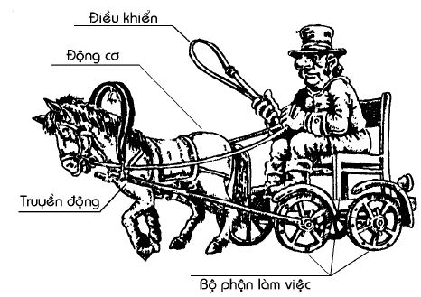
Hình 350: Xe ngựa kéo
Xe do ngựa kéo (xem Hình 350) có chức năng (tính hệ thống) di chuyển người và đồ vật từ nơi này đến nơi khác.
Bộ phận làm việc của xe do ngựa kéo là các bánh xe, ghế ngồi của người và chỗ đựng đồ.
Động cơ là con ngựa tạo ra lực kéo xe.
Bộ phận truyền động là cái ách và hai thanh nối ngựa với xe.
Bộ phận điều khiển là người đánh xe ngựa cùng với dây cương và cái roi của ông ta.
Xe do ngựa kéo có đầy đủ bốn bộ phận: Động cơ, bộ phận truyền động, bộ phận làm việc và bộ phận điều khiển. Bốn bộ phận này đều có khả năng hoạt động từ tối thiểu trở lên. Chúng liên kết, phối hợp với nhau cho kết quả của hoạt động toàn bộ hệ thống là tính hệ thống (chức năng): Di chuyển người và đồ vật từ nơi này đến nơi khác. Vậy, hệ thống xe do ngựa kéo là hệ tự lập.
Thí dụ 2: Hệ thống con người
Trên Hình 350 có người đánh xe ngựa. Khi xem xét con người trong các mối quan hệ có trong hệ thống xe do ngựa kéo của thí dụ 1, chúng ta coi người đó thuộc bộ phận điều khiển.
Bây giờ, chúng ta xem xét riêng một con người như là một hệ thống.
Con người là hệ thống đa chức năng (đa tính hệ thống), nên có nhiều bộ phận làm việc. Chẳng hạn, con người bóc chuối thì tay là bộ phận làm việc; con người di chuyển – chân là bộ phận làm việc…
Động cơ của cơ thể người là hệ tiêu hóa và hệ hô hấp.
Bộ phận truyền động là hệ tuần hoàn, xương, cơ.
Bộ phận điều khiển là hệ thần kinh.
Như vậy, nếu xét riêng con người thì con người cũng là hệ tự lập.
Thí dụ 3: Hệ thống con ngựa
Nếu tách con ngựa (động cơ) trên Hình 350 ra xem xét riêng, bằng phân tích tương tự như thí dụ 2, bạn đọc sẽ thấy con ngựa cũng là hệ tự lập.
- Thí dụ 2 và 3 cho thấy, trong thực tế, có những trường hợp cụ thể, nếu tách riêng một bộ phận nào đó của hệ tự lập ra xem xét như là một hệ thống, thì bộ phận đó có thể là hệ tự lập. Điều này có nghĩa, hệ tự lập mang tính tương đối: Trong cách xem xét này, đối tượng cho trước là một bộ phận của hệ tự lập; trong cách xem xét khác, chính đối tượng cho trước lại là hệ tự lập.
Thí dụ 4: Hệ thống xe ôtô
Động cơ là động cơ xe ôtô theo cách hiểu thông thường, kể cả thùng xăng hoặc dầu, máy phát điện.
Bộ phận truyền động: Cầu xe, các trục khuỷu, các bánh răng, mạng điện của ôtô…
Bộ phận điều khiển là người lái xe, tay lái, hộp số, bộ thắng (phanh)…
Bộ phận làm việc là các bánh xe, các chỗ ngồi cho hành khách và/hoặc cho hàng hóa.
Nếu so sánh thí dụ 1: Xe ngựa và thí dụ 4: Xe ôtô, chúng ta có thể thấy, từ xe ngựa đến xe ôtô, mỗi bộ phận của xe đã được phát triển cả bằng sự thay đổi nguyên lý/hệ khung (paradigms) hoạt động. Chẳng hạn, động cơ trước đây hoạt động dựa trên nguyên lý sử dụng cơ bắp của súc vật thì nay dựa trên các phản ứng cháy nổ của nhiên liệu; bánh xe trước đây làm bằng gỗ, đai sắt, nay là bánh hơi;…
Nhân đây, bạn đọc hãy quay lại Hình 137 và văn bản liên quan trong mục nhỏ 10.2.2 Những điểm cần lưu ý về tư duy hệ thống của quyển ba để phân tích sự tiến hóa và phát triển phương tiện giao thông đường thủy, nhìn theo quy luật về tính tự lập của hệ thống.
Thí dụ 5: Hệ thống kinh tế
Hai loại đối tượng tham gia vào các hoạt động kinh tế và có tiêu thụ năng lượng là người và máy móc. Từ đây, chúng ta có thể thấy, động cơ của hệ thống kinh tế chính là những ngành tạo ra lương thực, thực phẩm, nước uống cho con người; tạo ra điện, xăng, dầu, than đá, nhiên liệu nói chung cho máy móc hoạt động. Cụ thể hơn, động cơ của hệ kinh tế bao gồm những ngành nông nghiệp, ngư nghiệp, khai thác và sản xuất nước sạch; các nhà máy điện, các nơi khai thác, chế biến dầu mỏ, các mỏ than…
Bộ phận truyền động của hệ kinh tế là các ngành giao thông vận tải (đường bộ, đường thủy, đường hàng không), bưu điện, ngân hàng; các mạng lưới truyền tải điện, các đường ống xăng, dầu…
Bộ phận điều khiển là các cơ quan lãnh đạo, quản lý các cấp.
Hệ kinh tế là hệ đa chức năng. Tùy theo chức năng mà có bộ phận làm việc tương ứng. Ví dụ, hệ kinh tế cho trước có chức năng xuất khẩu hàng hóa, bộ phận làm việc chính là các công ty, cơ sở sản xuất làm hàng xuất khẩu.
Thí dụ 6: Các hệ kỹ thuật
Các hệ kỹ thuật (máy móc) do con người tạo ra. Quá trình tiến hóa và phát triển của chúng thường diễn ra như sau (xem Hình 351).
Khởi đầu con người lao động trực tiếp bằng tay không (tác động trực tiếp lên sản phẩm bằng tay không). Lúc này, tay là bộ phận làm việc của hệ con người (xem Hình 351a).
Tiếp theo, con người sáng chế ra các công cụ thủ công và tác động lên sản phẩm thông qua các công cụ đó. Lúc này, trong hệ con người–công cụ, bộ phận làm việc là công cụ thủ công, còn ba bộ phận kia (động cơ, truyền động, điều khiển) vẫn thuộc về cơ thể của con người (xem Hình 351b).
Sau đó ra đời máy sơ khai (kiểu như cối giã gạo dùng sức nước, bánh xe múc–tưới nước, cối xay gió…) có ba bộ phận được tách ra khỏi cơ thể người. Đó là động cơ, truyền động và bộ phận làm việc. Lúc này, con người đóng vai trò điều khiển hoàn toàn (xem Hình 351c).
Máy sơ khai được hoàn thiện tiếp bằng cách con người sáng chế thêm những chi tiết, tổ hợp các chi tiết, chuyển giao dần từng phần chức năng điều khiển cho máy (xem Hình 351d).
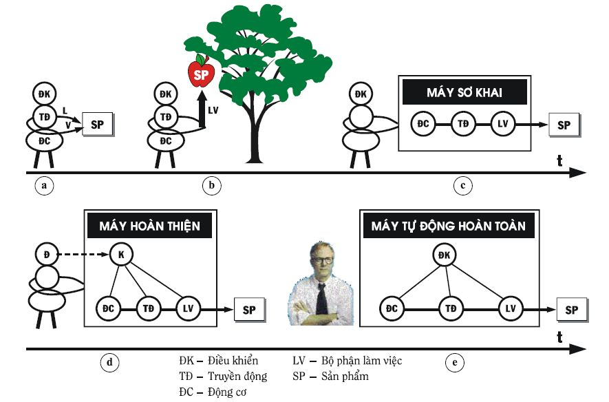
Hình 351: Quá trình hình thành và phát triển của các hệ kỹ thuật
Khi con người chuyển giao hết chức năng điều khiển cho máy, chúng ta có máy tự động hoàn toàn (xem Hình 351e).
Chẳng hạn, chiếc xe đạp ban đầu chỉ gồm hai bánh xe (bộ phận làm việc) và thanh ngang nối chúng. Các phần còn lại, người đi xe tự làm lấy: Dùng chân đạp xuống đường (động cơ), dùng thân mình để truyền chuyển động cho bánh xe và phải dùng sức làm nghiêng xe đi (điều khiển) khi đến chỗ rẽ (quẹo). Sau đó, pêđan, đĩa, xích được sáng chế ra để thực hiện chức năng truyền động từ chân người đến bộ phận làm việc. Tay lái (ghi-đông) xuất hiện làm công việc điều khiển trở nên dễ dàng hơn. Động cơ lắp vào xe đạp (xe gắn máy) giải phóng người đi xe khỏi phải sử dụng sức lực cơ bắp.
Ví dụ khác, chiếc máy tiện có đầy đủ các bộ phận: Động cơ để máy hoạt động; các trục, các bánh xe răng cưa, các khớp nối đóng vai trò truyền động; bộ phận làm việc là lưỡi dao tiện; các tay vặn, nút bấm, các tay đòn thực hiện chức năng điều khiển với sự tham gia của con người. Ở đây, bộ phận điều khiển còn “yếu” nên cần sự tham gia điều khiển của người thợ tiện. Trong các máy tiện tự động hóa cao, bộ phận điều khiển hoàn thiện hơn, người thợ chỉ còn làm công việc lắp ráp, chỉnh và theo dõi hoạt động của máy.
Quy luật về tính tự lập cho thấy khuynh hướng hệ kỹ thuật thay thế dần một số chức năng của con người. Sự hình thành một hệ kỹ thuật thực hiện chức năng mới thường bắt đầu từ việc sáng chế ra bộ phận làm việc. Các bộ phận còn lại do con người hoặc môi trường bên ngoài đảm nhiệm cho đến khi được thay thế bởi các bộ phận kỹ thuật tương ứng. Quy luật về tính tự lập cũng cho thấy, nếu ở đâu đó, nhà sáng chế còn bắt gặp máy móc chưa có đầy đủ bốn bộ phận: Động cơ, truyền động, bộ phận làm việc, bộ phận điều khiển, không chần chờ gì nữa, hãy làm cho chúng trở thành các hệ kỹ thuật tự lập.
Tóm lại, Hình 351 cho chúng ta thấy nội dung cụ thể của quy luật về tính tự lập của hệ thống dùng cho các hệ kỹ thuật. Đấy là:
Chưa có hệ kỹ thuật (lao động tay không) ⇒ Công cụ thủ công (bộ phận làm việc) ⇒ Cơ khí hóa ⇒ Tự động hóa ⇒ Tự động hóa hoàn toàn.
Sơ đồ trên cho sự định hướng: Ở đâu đang lao động bằng tay không, ở đó cần sáng chế ra công cụ thủ công (bộ phận làm việc). Ở đâu đang lao động bằng công cụ thủ công, ở đó cần sáng chế ra máy (bắt đầu tiến hành cơ khí hóa). Ở đâu quá trình cơ khí hóa đạt độ chín muồi nhất định, ở đó cần chuyển sang giai đoạn tự động hóa.
Ngoài các thí dụ nêu ở trên, bạn nên đọc lại các thí dụ trong mục 11.2 Lời phát biểu, các thí dụ minh họa và một số nhận xét về các thủ thuật (nguyên tắc) sáng tạo cơ bản của quyển bốn. Trong đó, bạn sẽ tìm được thêm các thí dụ minh họa quy luật về tính tự lập (tính đầy đủ) của hệ thống.
14.2.3 Quy luật về tính thông suốt của hệ thống
LỜI PHÁT BIỂU QUY LUẬT:
Bất kỳ hệ thống nào cũng là hệ tiêu thụ và biến đổi các chất, năng lượng, thông tin và các tổ hợp của chúng. Điều kiện cần cho sự phát triển hệ thống là phải có tính thông suốt của các quá trình tiêu thụ, biến đổi này. Với thời gian, hệ thống có khuynh hướng phát triển về phía tăng tính thông suốt.
DIỄN GIẢI NỘI DUNG QUY LUẬT:
Quy luật về tính thông suốt của hệ thống đề cập các hiện tượng, quá trình truyền, chuyển động, di chuyển, vận động, chuyên chở, biến đổi, chuyển từ trạng thái này sang trạng thái khác, chế biến, tiêu thụ… mà người viết gọi chung là các quá trình truyền. Do vậy, ở đâu bạn làm việc với quá trình truyền và muốn truyền tốt hơn, ở đó bạn phải nghĩ ngay đến việc áp dụng quy luật về tính thông suốt.
Đối tượng được truyền trong các quá trình truyền là chất (vật chất), năng lượng, thông tin và các tổ hợp của chúng.
Ví dụ, bạn vận chuyển gạch, cát, đối tượng truyền là chất. Bạn vận chuyển xăng, dầu, đối tượng truyền là tổ hợp của chất và năng lượng. Bạn gởi thư theo đường bưu điện, đối tượng truyền là tổ hợp của thông tin và chất. Bạn đánh fax, gởi e-mail, đối tượng truyền là tổ hợp của thông tin và năng lượng…
- “Thông suốt” được hiểu đồng thời các nghĩa sau:
- Đối tượng truyền luôn được truyền, không bị ách tắc, dừng lại.
- Truyền một cách tin cậy (bảo đảm chất lượng, số lượng, đến đúng nơi, đúng lúc).
- Truyền nhanh.
- Truyền nhiều.
“Tăng tính thông suốt” có nghĩa, khắc phục các ách tắc (nếu có), tăng mức độ tin cậy, truyền nhanh hơn trước, nhiều hơn trước.
- Hình 352 mô tả một cách chung nhất quy luật về tính thông suốt của hệ thống.
Đi vào cụ thể hơn, quy luật về tính thông suốt của hệ thống được biểu diễn trên các hình vẽ:
- Hình 353 dành cho loại hệ thống dùng để thay đổi sản phẩm.
- Hình 354 dành cho loại hệ thống dùng để phát hiện, đo sản phẩm.
- Hình 355 dành cho hệ thống có các quá trình truyền mà bạn thường biểu diễn hệ thống đó theo cách truyền thống: Hệ thống gồm các yếu tố liên kết với nhau (xem Hình 123 và phần văn bản liên quan trong mục nhỏ 10.2.1 Một số khái niệm cơ bản và ý tưởng chung về hệ thống của quyển ba).
Tinh thần chung là, ở đâu có quá trình truyền, bạn cần đặt cạnh kênh truyền mũi tên theo hướng truyền. Mũi tên có nghĩa, quá trình truyền đó phải tuân theo quy luật về tính thông suốt của hệ thống.
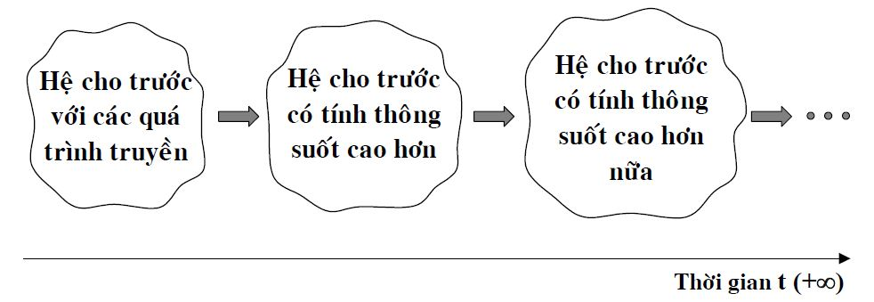
Hình 352: Quy luật 2: QUY LUẬT VỀ TÍNH THÔNG SUỐT CỦA HỆ THỐNG
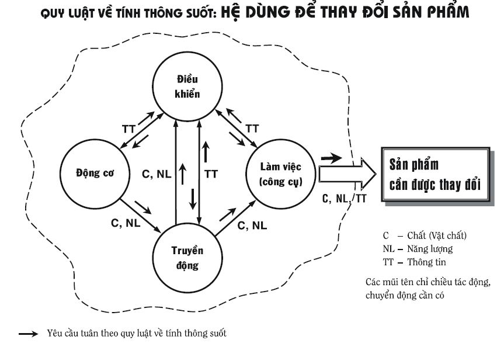
Hình 353: Quy luật về tính thông suốt: HỆ DÙNG ĐỂ THAY ĐỔI SẢN PHẨM
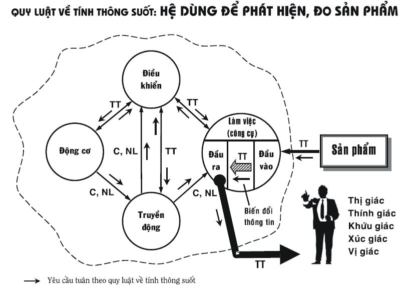
Hình 354: Quy luật về tính thông suốt: HỆ DÙNG ĐỂ PHÁT HIỆN, ĐO SẢN PHẨM
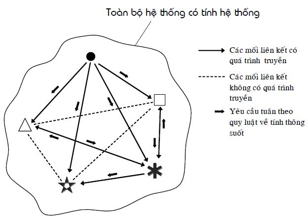
Hình 355: Quy luật về tính thông suốt dùng cho hệ thống được biểu diễn dưới dạng các yếu tố liên kết với nhau
- Tăng tính thông suốt không phải vị tăng tính thông suốt mà phải thỏa mãn yêu cầu kép sau:
- Tăng tính thông suốt để phát triển tính hệ thống của hệ cho trước.
- Các sáng tạo và đổi mới giúp tăng tính thông suốt, cũng có nghĩa, giúp phát triển tính hệ thống của hệ cho trước phải tuân theo tiêu chuẩn của quyết định tốt (xem mục nhỏ 10.5.1 Tiêu chuẩn của quyết định tốt: Nhìn theo quan điểm hệ thống phát triển bền vững của quyển ba).
Do vậy, những giải pháp tăng tính thông suốt nào không cùng lúc thỏa mãn hai yêu cầu nói trên là vi phạm quy luật về tính thông suốt của hệ thống, làm nảy sinh các vấn đề và cản trở sự phát triển bền vững của hệ thống.
Ví dụ, đưa phong bì “bôi trơn”, đút lót, đưa hối lộ… để công việc chạy nhanh hơn là những giải pháp vi phạm quy luật về tính thông suốt và làm nảy sinh các vấn đề kéo lùi sự phát triển.
- Bạn đọc có thể đặt câu hỏi: “Theo quy luật về tính thông suốt, tốc độ truyền phải càng ngày càng tăng. Như vậy, tốc độ truyền có khuynh hướng tiến đến tốc độ ánh sáng”.
Quả thật, trong các lĩnh vực truyền thông tin, năng lượng, khuynh hướng tiến đến tốc độ ánh sáng thể hiện khá rõ. Chẳng hạn, trước đây bạn gởi thư (thông tin) theo đường bưu điện với tốc độ chuyển thư nhanh nhất là tốc độ máy bay. Ngày nay, bạn gởi fax, e-mail, gọi điện thoại, điện thoại di động với tốc độ cỡ ánh sáng.
- Mục 6.3 Quá trình truyền và biến đổi thông tin của quyển hai chỉ đề cập quá trình truyền thông tin. Trong khi đó, quy luật về tính thông suốt của hệ thống, ngoài truyền thông tin ra, còn đề cập truyền chất, năng lượng và các tổ hợp của chúng. Tuy vậy, nếu hiểu các thuật ngữ của chuỗi truyền thông tin ở mức độ khái quát hóa cao, bạn đọc có thể áp dụng nhiều kiến thức của quá trình truyền thông tin cho các quá trình truyền chất, năng lượng và các tổ hợp của chúng để làm tăng tính thông suốt.
Chẳng hạn, về truyền năng lượng, đọc lại thí dụ 9 trong mục nhỏ 11.2.2 Nguyên tắc “tách khỏi” của quyển bốn, bạn đọc có thể thấy, năng lượng phát ban đầu là điện năng ở dạng dòng điện một chiều được “mã hóa” thành bức xạ điện từ tần số cao. Năng lượng đã được mã hóa (sóng điện từ) hoàn toàn thích hợp với kênh truyền là khoảng không gian từ mặt đất đến cánh máy bay không người lái trên không. Ăngten thu ở cánh máy bay “giải mã” bức xạ điện từ tần số cao thành dòng điện một chiều, công suất khoảng 30 KW dùng để chạy động cơ 25 – 40 mã lực, làm quay cánh quạt và cung cấp điện cho các máy móc thí nghiệm trên máy bay. Bằng cách truyền năng lượng vừa nêu, máy bay không người lái có thể ở trên không liên tục suốt 2 – 3 tháng.
Thí dụ 12 trong mục nhỏ 11.2.29 Sử dụng các kết cấu khí và lỏng của quyển bốn cho thấy cách “mã hóa” chất rắn (khoáng sản) thành bùn để có dạng thích hợp, được bơm tốt trong kênh truyền là các ống dẫn từ nơi khai thác về nhà máy chế biến, thay cho xe tải hoặc xe goòng có tính thông suốt kém hơn.
Tương tự, bạn đọc thử phân tích thí dụ 14 trong mục nhỏ 11.2.8 Nguyên tắc phản trọng lượng của quyển bốn về việc làm sao trẻ em khảnh ăn và đỏng đảnh sau khi ốm, ăn được nhiều các chất dinh dưỡng.
Tóm lại, sau khi đã khái quát hóa chuỗi truyền thông tin, chúng ta có chuỗi chung dành cho cả truyền thông tin, năng lượng, chất và các tổ hợp của chúng (xem Hình 356).
Tính thông suốt của toàn bộ một chuỗi truyền (hoặc nhiều chuỗi ghép lại) phụ thuộc vào các thông số (yếu tố) như:
- Tốc độ phát của bộ phận phát.
- Loại mã được chọn để sử dụng của bộ phận mã hóa, bộ phận mã hóa tiếp.
- Tốc độ mã hóa của bộ phận mã hóa, bộ phận mã hóa tiếp.
- Loại kênh truyền thích hợp cho loại mã nào.
- Tốc độ truyền trong kênh ứng với đối tượng truyền đã được mã hóa.
- Khả năng thông qua cực đại của kênh truyền ứng với đối tượng truyền đã được mã hóa.
- Nhiễu có bên trong chuỗi truyền và nhiễu bên ngoài ảnh hưởng đến chuỗi truyền.
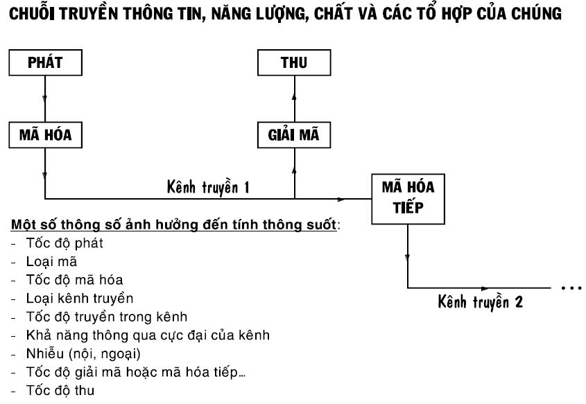
Hình 356: Chuỗi truyền thông tin, năng lượng, chất và các tổ hợp của chúng
- Tốc độ giải mã của bộ phận giải mã.
- Tốc độ thu của bộ phận thu.
- Thế giới luôn ở trong trạng thái vận động, thay đổi… nên quy luật về tính thông suốt liên quan đến một số lượng vô cùng lớn các hiện tượng, quá trình truyền, mà ở đó có đòi hỏi về tính thông suốt.
Dưới đây, người viết liệt kê một số quá trình truyền cụ thể để bạn đọc dễ hình dung sự đa dạng của chúng.
- Thức ăn, đồ uống chuyển hóa thành các chất dinh dưỡng thích hợp để có thể thấm qua màng ở ruột non vào máu.
- Sự lưu thông của máu trong hệ tuần hoàn.
- Sự truyền dẫn các xung điện thần kinh trong hệ thần kinh.
- Sự truyền các tác động lực trong các cơ bắp, xương khớp.
- Sự trao đổi chất nói chung.
- Quá trình truyền thông tin di truyền từ bố mẹ sang các con.
- Quá trình sinh sản của các sinh vật.
- Quá trình sống của một con người từ lúc thụ thai đến chết.
- Bạn giao tiếp trao đổi thông tin với những người khác.
- Bạn đọc sách, báo, xem TiVi, xem phim.
- Quá trình dạy và học (hiểu theo nghĩa rộng), ở đó có sự chuyển động của các thông tin, kiến thức, kỹ năng từ đối tượng này sang đối tượng khác.
- Quá trình suy nghĩ, biến đổi thông tin thành tri thức.
- Sự lưu thông của các phương tiện giao thông vận tải (đường bộ, đường thủy, đường hàng không).
- Sản phẩm trải qua các giai đoạn khác nhau của quá trình sản xuất.
- Sự dịch chuyển của hàng hóa trong các khâu lưu thông, phân phối.
- Sự chuyển động của các dòng tiền, tín dụng…
- Sự chuyển động của các dòng thông tin các loại với các quy mô khác nhau trong xã hội.
- Dòng điện được truyền trong các mạch, mạng điện các loại.
- Dòng chất lỏng (nước, xăng, dầu, hóa chất…) được truyền trong các ống dẫn.
- Sự chuyển động của các dòng nước (sông, ngòi, kênh, rạch, các hệ thống cấp, thoát nước, mưa, lũ, lụt, chất thải…)
- Chu trình nước bốc hơi thành mưa…
- Sự luân chuyển bốn mùa.
- Quá trình diễn ra các phản ứng hóa học các loại.
- Quá trình thực hiện các loại giấy tờ theo các thủ tục hành chính các loại.
- Quá trình điều tra, xét xử, thi hành án các loại.
- Quá trình phân hủy rác thải các loại.
- ….
Từ các quá trình truyền liệt kê ở trên, bạn đọc cũng thấy, số lượng và sự đa dạng của các bài toán liên quan đến tính thông suốt là cực kỳ lớn. Trong đó, có những bài toán nảy sinh do vi phạm quy luật về tính thông suốt, hoặc do tính thông suốt của hệ cho trước chưa đủ cao để đáp ứng mục đích cần đạt.
Trong quá trình phát triển theo quy luật về tính thông suốt của hệ thống, hệ cho trước không chỉ được hoàn thiện dựa trên các nguyên lý/hệ khung (paradigms) đang có mà còn có thể phải hoàn thiện bằng cách chuyển dịch nguyên lý/hệ khung (paradigms shift) khi cần thiết.
Ví dụ, máy tính cơ học được hoàn thiện đến một lúc nào đấy sẽ dẫn tới tốc độ tính toán giới hạn không thể vượt qua của nguyên lý/hệ khung cơ học này. Để vượt qua giới hạn và tiếp tục tăng tốc độ tính toán (tăng tính thông suốt), người ta phải dần chuyển sang các nguyên lý/hệ khung khác như điện, điện tử, quang điện tử.
- Ở đâu có sự vi phạm quy luật về tính thông suốt của hệ thống, ở đó có vấn đề, mà người giải cần phát hiện để giải quyết.
Tốt hơn nữa, khi làm việc với hệ có quá trình truyền, nhìn theo quy luật về tính thông suốt, người sáng tạo chủ động đưa hệ cho trước phát triển theo quy luật về tính thông suốt, không chờ đợi bài toán nảy sinh mới đi tìm cách giải một cách bị động.
MỘT SỐ THÍ DỤ MINH HỌA QUY LUẬT:
Thí dụ 1:
Bạn đọc sách, báo. Ở đây có quá trình truyền thông tin từ những gì bạn đọc đến các trung khu thần kinh tương ứng trong não bạn.
Đối với những quyển sách khổ nhỏ, người ta in một dòng văn bản suốt từ lề trái sang lề phải của trang sách.
Báo có kích thước lớn hơn nhiều so với sách. Nếu cũng in một dòng chạy suốt từ lề trái sang lề phải, trong lúc đọc, mắt bạn có thể nhảy từ dòng này sang dòng khác gây sự nhầm lẫn, làm tốc độ truyền thông tin chậm lại.
Để tăng tính thông suốt, báo được in thành nhiều cột.
Thí dụ 2:
Tại các giao lộ, các xe phải dừng lại chờ đèn xanh. Để tăng tính thông suốt, người ta xây dựng các cầu nổi, hầm chui.
Lúc này, các tuyến giao thông không cắt nhau nên các xe luôn chuyển động với tốc độ cao nhất.
Thí dụ 3:
Các phương tiện vận tải (xe ôtô, tàu thủy, máy bay…) có khuynh hướng làm càng ngày càng to để có thể chở được nhiều người, nhiều hàng hóa hơn. Do vậy, tính thông suốt của hệ thống giao thông vận tải cũng tăng lên.
Thí dụ 4:
Gói cà phê hòa tan (và không chỉ gói cà phê hòa tan) có mép được cắt trước một chút, giúp bạn tay không xé bao một cách dễ dàng, nhanh chóng để sử dụng.
Gói cà phê hòa tan không có cải tiến nói trên gây ra sự ách tắc: Bạn phải tìm kéo, dao để cắt, nếu không có, bạn phải dùng răng cắn.
Thí dụ 5:
Để các phản ứng hóa học xảy ra nhanh hơn, người ta sử dụng các chất xúc tác.
Ngoài các thí dụ vừa nêu, bạn nên đọc lại các thí dụ có trong phần DIỄN GIẢI NỘI DUNG QUY LUẬT của mục nhỏ này và tìm thêm các thí dụ về tính thông suốt có trong mục 11.2 Lời phát biểu, các thí dụ minh họa và một số nhận xét về các thủ thuật (nguyên tắc) sáng tạo cơ bản của quyển bốn.
14.2.4 Quy luật về tính tương hợp của hệ thống
LỜI PHÁT BIỂU QUY LUẬT:
Điều kiện cần để cho một hệ thống có sức sống, về mặt nguyên tắc, phải có sự tương hợp giữa các phần của hệ, ví dụ, theo các thông số sau: Dạng năng lượng và cách truyền tải, vật liệu, trạng thái vật lý của vật chất, thời gian, không gian, cách tương tác… Mức độ tương hợp càng cao thì khả năng làm việc của hệ càng lớn. Sự hoàn thiện bất kỳ hệ nào, ở mức độ này hay mức độ khác, đều liên quan đến việc nâng cao tính tương hợp giữa các phần của hệ và sau đó, với môi trường bên ngoài.
DIỄN GIẢI NỘI DUNG QUY LUẬT:
- Quy luật về tính tương hợp (viết tắt của hai từ “tương ứng” và “phù hợp”) của hệ thống đề cập đến các mối liên kết (hiểu theo nghĩa rộng nhất) giữa các phần của hệ. Các phần của hệ, đi theo thang bậc của hệ thống, có thể là các hệ dưới, các hệ dưới nữa,… cho đến các yếu tố.
Do vậy, trong cuộc sống, công việc, ở đâu bạn thấy có mối liên kết giữa đối tượng này với đối tượng khác, ở đó bạn phải nghĩ ngay đến việc áp dụng quy luật về tính tương hợp.
- Quy luật về tính tương hợp của hệ thống đòi hỏi phải xây dựng các mối liên kết giữa các phần của hệ sao cho các phần của hệ làm việc tương hợp với nhau và tính tương hợp ngày càng tăng. Sự tương hợp giữa các phần của hệ phải thỏa mãn yêu cầu kép:
- Tăng tính tương hợp để phát triển tính hệ thống của hệ cho trước.
- Các sáng tạo, đổi mới giúp tăng tính tương hợp, cũng có nghĩa, giúp phát triển tính hệ thống của hệ cho trước phải tuân theo tiêu chuẩn quyết định tốt (xem mục nhỏ 10.5.1 Tiêu chuẩn của quyết định tốt: Nhìn theo quan điểm hệ thống phát triển bền vững của quyển ba).
Do vậy, những giải pháp tăng tính tương hợp nào không cùng lúc thỏa mãn hai yêu cầu nói trên đều coi là vi phạm quy luật về tính tương hợp và làm nảy sinh các vấn đề và cản trở sự phát triển bền vững của hệ thống.
Ví dụ, những tên trộm lẻ tẻ liên kết lại thành băng nhóm, rồi luyện tập để có những hành động rất ăn ý với nhau (tính tương hợp cao). Nhờ vậy, chúng thực hiện các vụ trộm nhiều hơn trước, quy mô và hiệu quả lớn hơn trước. Rõ ràng, sự tương hợp nói trên của những tên trộm chỉ kéo lùi sự phát triển của xã hội.
Tương tự, những tương hợp làm tăng tính ích lợi cục bộ nhưng làm hại ích lợi toàn thể đều coi là những vi phạm đối với quy luật về tính tương hợp.
- Việc xây dựng các mối liên kết tương hợp giữa các phần của hệ không chỉ đòi hỏi sự cải tiến chính các mối liên kết, mà trong nhiều trường hợp còn đòi hỏi cải tiến cả các yếu tố. Bởi vì, trong những trường hợp đó, yếu tố và mối liên kết của nó không thể tách rời.
Ví dụ, giữa ôtô và mặt đường có sự liên kết: Ma sát chẳng hạn. Việc ôtô chạy như thế nào phụ thuộc vào ma sát giữa bánh xe và mặt đường. Trong trường hợp cụ thể này, mối liên kết (ma sát) không độc lập với các yếu tố (bánh xe và mặt đường). Do vậy, để tạo mối liên kết (ma sát) tương hợp giữa các yếu tố (bánh xe và mặt đường), bạn phải thay đổi cả các yếu tố (bánh xe và mặt đường): Bánh xe được tạo các vết khía thích hợp; mặt đường phủ bằng loại vật liệu tạo độ bám tối ưu khi tương tác với bánh xe.
- Trong LỜI PHÁT BIỂU QUY LUẬT có đoạn: “phải có sự tương hợp giữa các phần của hệ, ví dụ, theo các thông số sau: Dạng năng lượng và cách truyền tải, vật liệu, trạng thái vật lý của vật chất, thời gian, không gian, cách tương tác… Mức độ tương hợp càng cao thì khả năng làm việc của hệ càng lớn”.
Người viết muốn bạn đọc để ý từ “ví dụ” và dấu ba chấm (…) trong đoạn vừa trích. Chúng được hiểu các nghĩa sau:
- Không thể liệt kê hết tất cả các loại thông số (các mặt) cần có sự tương hợp giữa các phần của hệ trong trường hợp chung. Do vậy, các thông số được liệt kê trong LỜI PHÁT BIỂU QUY LUẬT chỉ là các gợi ý. Trong những trường hợp cụ thể, người giải bài toán phải tự mình xác định các thông số cần sự tương hợp của hệ thống có trong bài toán cho trước.
- Sự tương hợp giữa các phần của hệ thống, lúc đầu, có thể diễn ra theo một, vài thông số. Với thời gian, số lượng các thông số cần có sự tương hợp tăng lên. Trong trường hợp lý tưởng, cần có sự tương hợp về tất cả các thông số giữa các phần của hệ, mà người viết gọi là “sự tương hợp về mọi mặt”, “sự tương hợp toàn diện”.
Cụm từ “Mức độ tương hợp càng cao” được hiểu bao gồm các nghĩa như:
- Tăng tính tương hợp đã có giữa các phần của hệ theo số lượng thông số nhất định.
- Tăng số lượng các thông số mà các phần của hệ phải tương hợp với nhau theo những thông số đó.
- Tăng số lượng các phần của hệ phải tương hợp với nhau.
- Tăng tính tương hợp nhờ tính đến các mối liên kết ở các mức khác nhau của thang bậc hệ thống, nói cách khác, cần xem xét các phần của hệ như là các hệ dưới, các hệ dưới nữa, các hệ dưới dưới nữa,… cho đến tận các yếu tố.
- Đoạn: “Sự hoàn thiện bất kỳ hệ nào, ở mức độ này hay mức độ khác, đều liên quan đến việc nâng cao tính tương hợp giữa các phần của hệ và sau đó, với môi trường bên ngoài” trong LỜI PHÁT BIỂU QUY LUẬT cho thấy:
- Trong số các quy luật phát triển hệ thống, có thể nói, quy luật về tính tương hợp được áp dụng thường xuyên và có phạm vi áp dụng rộng nhất. Bởi vì: “Sự hoàn thiện bất kỳ hệ nào, ở mức độ này hay mức độ khác, đều liên quan đến việc nâng cao tính tương hợp…”.
- Sự tương hợp diễn ra từ “trong” ra “ngoài”. Điều này có thể hiểu được vì, sự tương hợp bên trong giữa các phần của hệ cần được thực hiện trước, để hệ tự khẳng định sự tồn tại và tính hệ thống của mình, khác biệt so với các hệ thống khác.
Tiếp theo, để củng cố sự tồn tại và tạo ra sự phát triển của mình, hệ cho trước phải là hệ mở để trao đổi chất, năng lượng, thông tin và các tổ hợp của chúng với các hệ khác (được gọi chung là môi trường).
Để sự trao đổi này đạt năng suất và hiệu quả cao, cần có sự tương hợp ngày càng cao giữa hệ cho trước và các hệ khác. Rõ ràng sự tương hợp ở đây phải là: Tất cả các bên (các hệ thống) đều thắng (xem mục nhỏ 10.5.1 Tiêu chuẩn của quyết định tốt: Nhìn theo quan điểm hệ thống phát triển bền vững của quyển ba).
- Hình 357 mô tả một cách chung nhất quy luật về tính tương hợp của hệ thống.
Đi vào cụ thể hơn, quy luật về tính tương hợp của hệ thống được biểu diễn trên các hình vẽ:
- Hình 358 dành cho loại hệ thống dùng để thay đổi sản phẩm.
- Hình 359 dành cho loại hệ thống dùng để phát hiện, đo sản phẩm.
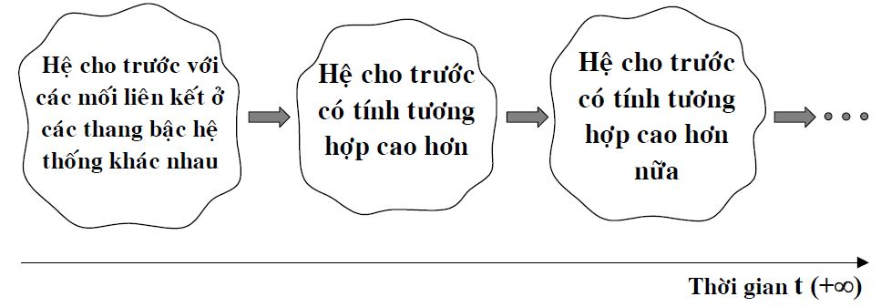
Hình 357: Quy luật 3: QUY LẬT VỀ TÍNH TƯƠNG HỢP CỦA HỆ THỐNG
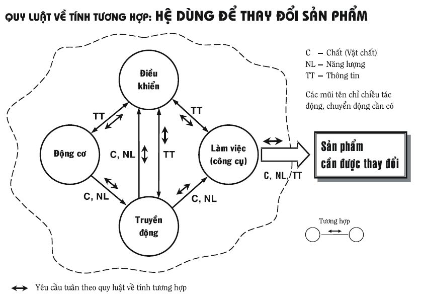
Hình 358: Quy luật về tính tương hợp: HỆ DÙNG ĐỂ THAY ĐỔI SẢN PHẨM
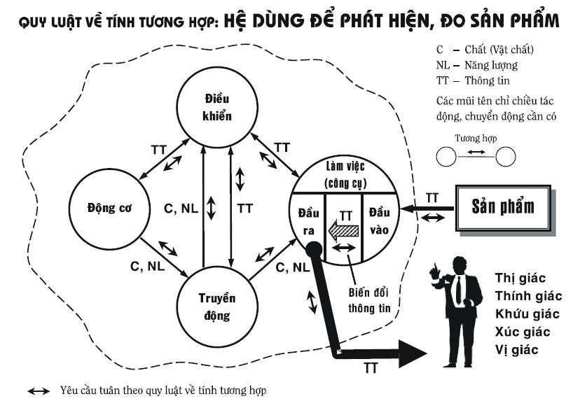
Hình 359: Quy luật về tính tương hợp: HỆ DÙNG ĐỂ PHÁT HIỆN, ĐO SẢN PHẨM
- Hình 360 dành cho hệ thống mà bạn thường biểu diễn hệ thống đó theo cách truyền thống: Hệ thống gồm các yếu tố liên kết với nhau.
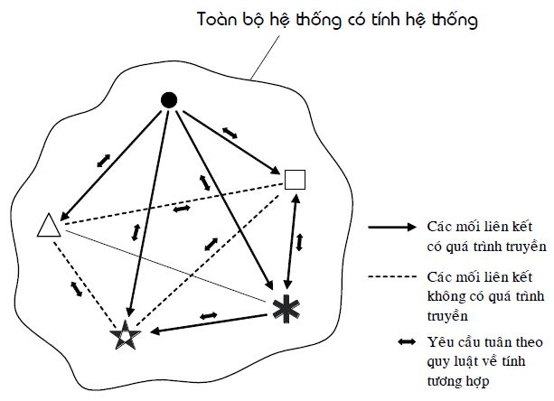
Hình 360: Quy luật về tính tương hợp dùng cho hệ thống được biểu diễn dưới dạng các yếu tố liên kết với nhau
Tinh thần chung là, ở đâu có mối liên kết, bạn cần đặt cạnh mối liên kết mũi tên hai đầu. Mũi tên hai đầu có nghĩa, hai yếu tố thuộc hai đầu phải liên kết với nhau tuân theo quy luật về tính tương hợp của hệ thống.
- Trong quá trình phát triển làm tăng tính tương hợp, hệ cho trước không chỉ được hoàn thiện dựa trên các nguyên lý/hệ khung (paradigms) đang có, mà còn có thể phải hoàn thiện bằng cách chuyển dịch nguyên lý/hệ khung (paradigms shift), khi cần thiết.
Ví dụ, ôtô chạy bằng xăng, dầu đã được cải tiến rất nhiều để tăng tính tương hợp. Tuy vậy, khí thải ôtô vẫn gây ô nhiễm môi trường. Để tương hợp với môi trường hơn, nhiều giải pháp đã được đưa ra. Trong đó, đáng chú ý là ôtô chạy bằng năng lượng mặt trời.
Bạn thử tưởng tượng, nếu tất cả các hệ thống trên thế giới đều hoạt động một cách tương hợp cao, thì thế giới này sẽ tốt đẹp thêm lên như thế nào?
Các bài toán liên quan đến tính tương hợp có thể nảy sinh do vi phạm quy luật về tính tương hợp; do tính tương hợp hiện nay của hệ cho trước chưa đủ để đáp ứng các mục đích cần đạt.
Để tránh làm nảy sinh các vấn đề, bạn cần chủ động đưa hệ của bạn phát triển theo hướng tăng tính tương hợp giữa các phần của hệ và với môi trường.
MỘT SỐ THÍ DỤ MINH HỌA QUY LUẬT:
Thí dụ 1:
Vali được lắp thêm bánh xe giúp người sử dụng kéo, đẩy nhẹ nhàng, thay vì xách, khiêng, vác nặng.
Thí dụ 2:
So với ghế ngồi cố định, ghế xếp trở nên thích hợp hơn khi cần giải phóng không gian hoặc chuyên chở từ nơi này đến nơi khác.
Thí dụ 3:
Ghế ngồi điều chỉnh được độ cao giúp những người khác nhau chọn độ cao phù hợp nhất đối với mình.
Thí dụ 4:
Trước đây phích cắm dẹt chỉ cắm được ổ cắm dẹt, phích cắm tròn chỉ cắm được ổ cắm tròn.
Sau này người ta đưa ra loại ổ cắm mà cả hai loại phích cắm dẹt, tròn đều có thể cắm được, làm tăng tính tương hợp giữa phích cắm và ổ cắm.
Thí dụ 5:
Cái điều khiển từ xa dùng cho T.V., máy lạnh, quạt máy… giúp người sử dụng ở một chỗ, không tốn công và thời gian đi lại để thay đổi trạng thái làm việc của các thiết bị nói trên.
Thí dụ 6:
Điện thoại di động so với điện thoại cố định (điện thoại để bàn, điện thoại công cộng chẳng hạn) tạo sự thuận tiện tối đa cho người sử dụng.
Thí dụ 7:
Micrô không dây có được sự linh động cao hơn nhiều so với micrô có dây.
Thí dụ 8:
Thang máy (kể cả thang cuốn) giúp người sử dụng di chuyển tiết kiệm sức lực và thời gian.
Thí dụ 9:
Lò viba rất phù hợp với những người có ít thời gian dành cho việc nấu ăn.
Thí dụ 10:
Máy tính xách tay và đĩa cứng (tổng cộng khoảng vài kilôgram) giúp lưu trữ khối lượng thông tin lớn (bằng cả thư viện), truy cập, trao đổi thông tin nhanh, dễ dàng… Điều này rất thích hợp với những người thường xuyên phải di chuyển.
Ngoài các thí dụ vừa nêu, bạn nên đọc lại các thí dụ trình bày trong mục 11.2 Lời phát biểu, các thí dụ minh họa và một số nhận xét về các thủ thuật (nguyên tắc) sáng tạo cơ bản của quyển bốn. Trong đó, bạn sẽ tìm được một cách dễ dàng không ít các thí dụ có thể dùng để minh họa quy luật về tính tương hợp của hệ thống.
14.2.5 Quy luật về tính lý tưởng của hệ thống
LỜI PHÁT BIỂU QUY LUẬT:
Hệ thống có khuynh hướng phát triển về phía tăng mức độ lý tưởng của mình, nói cách khác, về phía hệ lý tưởng của mình.
DIỄN GIẢI NỘI DUNG QUY LUẬT:
- Như chúng ta đã biết (xem mục nhỏ 12.1.2 Lôgích nhu cầu–hệ thống của quyển năm), lôgích hình thành hệ thống diễn ra như sau:
- Nhu cầu cần thỏa mãn dẫn đến việc đề ra mục đích cần đạt (đề ra tính hệ thống cần có) dưới dạng mong muốn thực hiện chức năng nhất định. Chẳng hạn: “Mình muốn cày khỏe gấp mười lần người khác”; “Mình muốn đi nhanh hơn”; “Mình muốn bay được”;…
- Mong muốn tự nó không biến thành hiện thực, con người phải sáng chế ra phương tiện (kết cấu hệ thống: Các yếu tố liên kết với nhau) để đạt được cái mong muốn: Cày khỏe; đi nhanh; bay được;… Các phương tiện tương ứng là máy cày, xe các loại, máy bay,…
Nói “con người phải sáng chế…” là vì, con người có nhiều nhu cầu, đặc biệt, nhu cầu tiết kiệm sức lực (xem mục 5.2 Các nhu cầu của cá nhân của quyển hai). Các phương tiện được sáng chế ra sẽ giúp con người thỏa mãn nhu cầu tiết kiệm sức lực và các nhu cầu khác.
Trên thực tế, cũng chính nhu cầu tiết kiệm sức lực không chỉ bắt buộc con người sáng chế ra các phương tiện mà còn phải cải tiến chúng sao cho một đơn vị sức lực bỏ ra xây dựng phương tiện đem lại ích lợi càng ngày, càng nhiều về mặt mục đích cần đạt.
Nhằm phản ánh những gì vừa trình bày, TRIZ đưa ra đại lượng dưới dạng tỷ số:
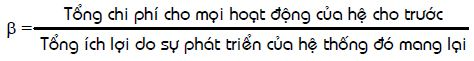
Có thể nói, các sáng tạo và đổi mới tạo ra sự phát triển đích thực của hệ thống là các sáng tạo và đổi mới làm cho càng ngày càng nhỏ. Lý tưởng nhất là không tốn chi phí nào cho hoạt động hệ thống mà mục đích đề ra (các ích lợi hệ thống đem lại) vẫn đạt được (β = 0).
- Tiếp theo, bạn đọc hãy làm quen với khái niệm mới “hệ lý tưởng”:
“Hệ lý tưởng là hệ không có (hoặc không có hệ), mà tính hệ thống (chức năng, mục đích) của hệ vẫn được thực hiện một cách tốt đẹp”.
Như chúng ta đã biết (xem mục nhỏ 10.2.1 Một số khái niệm cơ bản và ý tưởng chung về hệ thống của quyển ba):
- Hệ thống được định nghĩa là tập hợp các yếu tố liên kết với nhau và toàn bộ tập hợp đó có (những) tính chất không thể quy về thành (những) tính chất của từng yếu tố, từng mối liên kết đứng riêng rẽ.
(Những) tính chất nói trên được gọi là tính toàn thể hoặc tính hệ thống của hệ thống. Tính hệ thống phản ánh chức năng của hệ và mức độ phát triển của chức năng đó.
- Tính hệ thống của hệ cho trước thường thể hiện trong câu trả lời câu hỏi: “Hệ cho trước được sinh ra, chế tạo ra để làm gì?”, hoặc “Hệ cho trước có chức năng, mục đích gì?”, hoặc “Tính chất mà toàn thể hệ cho trước mới có là gì?”.
Như đã nhấn mạnh ở phần đầu của DIỄN GIẢI NỘI DUNG QUY LUẬT, cái mà người ta thực sự cần đối với một hệ thống là tính hệ thống (chức năng) của nó, chứ không phải kết cấu hệ thống (phương tiện tạo ra tính hệ thống). Do vậy, hệ thống lý tưởng sẽ là hệ thống thực hiện chức năng của mình một cách tốt đẹp (tính hệ thống có), còn bản thân (thực thể) của hệ thì biến mất (hệ không có, không có hệ, không có kết cấu của hệ, không có tập hợp các yếu tố liên kết với nhau). Hình 361 dưới đây mang tính chất tượng trưng, minh họa cho khái niệm “hệ lý tưởng”. Trong đó, Hình 361a mô tả nội dung khái niệm “hệ lý tưởng”, còn Hình 361b – ký hiệu “hệ lý tưởng”.
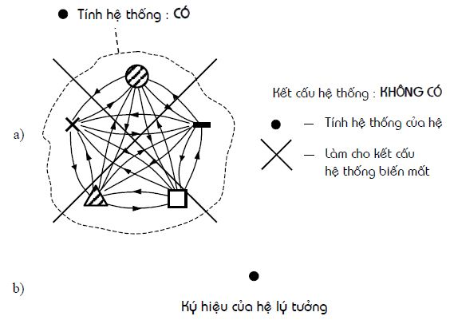
Hình 361: Minh họa tượng trưng khái niệm “hệ lý tưởng”
Người viết muốn nhấn mạnh rằng, Hình 361 chỉ là hình minh họa tượng trưng cho khái niệm “hệ lý tưởng”. Bởi vì từ “không có” trong cụm từ “hệ không có” hoặc “không có hệ”, tùy thuộc hệ cụ thể khác nhau, có thể có những nghĩa không hoàn toàn giống nhau. Về điều này, người viết sẽ còn quay trở lại trong các phần dưới.
Quy luật về tính lý tưởng của hệ thống chỉ ra khuynh hướng phát triển tăng tính lý tưởng của hệ, hiểu theo nghĩa, và hệ phát triển dần về phía hệ lý tưởng của mình. Nội dung quy luật về tính lý tưởng của hệ thống được phản ánh trên Hình 362. Nói chung, bạn cần kiểm tra sự tuân thủ quy luật về tính lý tưởng của hệ thống cả về lẫn mức độ tiệm cận hệ lý tưởng.
Đối với loại hệ dùng để thay đổi sản phẩm (xem Hình 347 và văn bản kèm theo trong mục nhỏ 14.2.1 Quy luật về tính tự lập của hệ thống (quy luật về tính đầy đủ các thành phần của hệ thống)) của quyển bảy này), bạn có thể hình dung (tưởng tượng) hệ lý tưởng sẽ là hệ không có bốn bộ phận động cơ, truyền động, điều khiển và bộ phận làm việc. Nhưng những gì tác động lên sản phẩm vẫn bằng hoặc tốt hơn trước.
Hệ dùng để thay đổi sản phẩm hiện tại phát triển về hướng tăng tính lý tưởng có nghĩa, cả bốn bộ phận càng ngày, càng được đơn giản hóa, thu nhỏ lại, tốn ít nguyên vật liệu hơn, xài ít năng lượng hơn, chi phí chế tạo càng ngày, càng giảm… cho một đơn vị sản phẩm, mà những gì tác động lên sản phẩm vẫn bằng hoặc tốt hơn trước.
Tùy theo hệ cụ thể dùng để thay đổi sản phẩm, tùy theo giai đoạn, quá trình phát triển tăng tính lý tưởng có thể diễn ra tập trung ở một bộ phận nào đó so với ba bộ phận kia, chứ không nhất thiết phải xảy ra ở cả bốn bộ phận cùng một lúc.
Những gì trình bày ở trên đối với loại hệ dùng để thay đổi sản phẩm cũng có thể dùng cho loại hệ dùng để phát hiện, đo sản phẩm (xem Hình 348 và văn bản kèm theo trong mục nhỏ 14.2.1 Quy luật về tính tự lập của hệ thống (quy luật về tính đầy đủ các thành phần của hệ thống) của quyển bảy này).
Tóm lại, để thuận tiện trong việc áp dụng quy luật về tính lý tưởng của hệ thống vào thực tế, bạn cần phát hiện mối quan hệ công cụ (bộ phận làm việc)–sản phẩm nói riêng, hệ công cụ–hệ sản phẩm nói chung có trong bài toán của bạn. Nếu có mối quan hệ công cụ–sản phẩm, hình ảnh lý tưởng sẽ là: Công cụ không có mà sản phẩm vẫn trở thành thành phẩm như trước đó, khi có công cụ.
Để tiệm cận và đạt đến hệ lý tưởng, trong nhiều trường hợp, ngoài những gì đã nói trong phần đầu của điểm này cho cả hai loại hệ thay đổi và hệ phát hiện, đo sản phẩm, bạn cần đầu tư (thực hiện các sáng tạo và đổi mới, tăng cường sử dụng các nguồn dự trữ có sẵn, đặc biệt các nguồn dự trữ không mất tiền) cho chính sản phẩm, để sản phẩm có thể tự mình trở thành thành phẩm mà không cần công cụ.
Ví dụ, trong các trại nuôi gà đẻ, người ta phải đi lần lượt từng chuồng, thò tay vào trong lấy trứng gà rồi để vào nơi tập trung. Ở đây có mối quan hệ công cụ–sản phẩm: Người lấy trứng là công cụ, trứng gà là sản phẩm. Hình ảnh lý tưởng sẽ là: Không có người lấy trứng mà trứng gà vẫn nằm ở nơi tập trung.
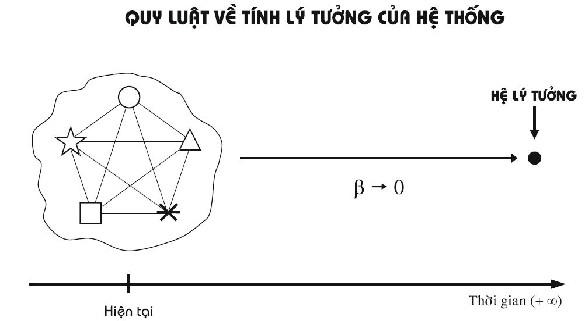
Hình 362: Quy luật về tính lý tưởng của hệ thống
Lời giải tiệm cận hệ lý tưởng như sau: Sàn chuồng gà làm nghiêng để quả trứng tự lăn ra máng đặt ngoài chuồng; máng cũng được làm nghiêng để quả trứng lăn tiếp về hướng nơi tập trung.
Người ta cải tiến làm sàn chuồng, máng đựng trứng nghiêng đi, thay vì nằm ngang như tiền thân. Các nguồn dự trữ không mất tiền được sử dụng ở đây là: Lực trọng trường; dạng hình cầu của quả trứng giúp dễ lăn.
Ví dụ khác là ly nhựa đựng kem: Loại ly này, sau khi ăn kem xong, người ta coi là rác và vứt đi. Tại những nơi công cộng như rạp hát, rạp chiếu bóng, sân vận động, công viên… công việc thu dọn đòi hỏi nhiều công sức, sau đó là quá trình tái chế nhựa không ít tốn kém.
Trong mối quan hệ ly và kem, ly là công cụ, còn kem là sản phẩm. Theo quy luật về tính lý tưởng của hệ thống, ly (công cụ) phải không có nhưng chức năng “đựng kem” của nó vẫn có.
Về sau, người ta đưa ra loại kem ly mà ly làm bằng loại bánh kiểu bánh quy. Lúc này, ly nhựa không có nhưng chức năng “đựng kem” của nó vẫn có, cả ly và kem đều là sản phẩm, hiểu theo nghĩa, cả hai đều ăn được và được người ăn kem ăn. Kết quả: Không có rác để phải dọn, phải tái chế.
Chúng ta có thể lý giải cách làm trong trường hợp này. Sau khi xác định hình ảnh lý tưởng của ly kem trong mối quan hệ công cụ–sản phẩm, người ta cho ly nhựa biến mất và đầu tư cho sản phẩm bằng cải tiến: Ly bằng bánh ăn được và ăn hợp với kem; cả ly, cả kem đều là sản phẩm. Loại bánh dùng để tạo hình chiếc ly là loại bánh có sẵn, do vậy, có thể coi nó là nguồn dự trữ có sẵn trong hệ.
- Cách nhìn sự vật theo mối quan hệ công cụ–sản phẩm để từ đó dễ dàng định hướng áp dụng quy luật về tăng tính lý tưởng của hệ thống vào thực tế, có ý nghĩa thực tiễn rất cao.
Cách suy nghĩ thông thường là, nếu xuất hiện đòi hỏi phải có chức năng mới thì người ta nghĩ ngay đến việc thành lập (hệ) công cụ mới để thực hiện chức năng đó và cứ như thế… Điều này dẫn đến các (hệ) công cụ càng ngày, càng nhiều, đi ngược với quy luật về tính lý tưởng của hệ thống là các công cụ phải dần biến mất mà các chức năng vẫn được thực hiện tốt đẹp.
Ví dụ, xuất hiện chức năng cần bảo đảm giao thông an toàn và thông suốt, người ta thành lập hệ cảnh sát giao thông, rồi hệ thanh tra giao thông. Hệ cảnh sát giao thông, hệ thanh tra giao thông có tiêu cực. Để thực hiện chức năng chống tiêu cực, người ta thành lập ban thanh tra cảnh sát giao thông, ban thanh tra thanh tra giao thông. Ai bảo đảm các ban thanh tra nói trên mãi mãi trong sạch. Nếu các ban đó tiêu cực thì sao? Lại lập các hệ (công cụ) mới?
Theo quy luật về tính lý tưởng của hệ thống, nếu xuất hiện đòi hỏi phải có chức năng mới để tương tác với sản phẩm nào đó thì nên đầu tư cho hệ sản phẩm để hệ sản phẩm tự thực hiện chức năng đó. Nếu điều kiện chưa cho phép thực hiện điều đó, thì đành thành lập hệ công cụ mới thực hiện chức năng tương tác với sản phẩm. Tuy vậy, khi đã có hệ công cụ rồi, cần tạo ra, khai thác và sử dụng các điều kiện để làm cho hệ công cụ đó tiến dần về phía zêrô.
Ví dụ, xuất hiện chức năng bảo đảm giao thông an toàn và thông suốt. Những người lưu thông trên đường là sản phẩm. Lời giải lý tưởng sẽ là không thành lập hệ cảnh sát giao thông (công cụ) mà tự những người lưu thông trên đường thực hiện việc bảo đảm giao thông an toàn và thông suốt. Nếu chưa làm được điều đó thì đành phải thành lập hệ cảnh sát giao thông.
Còn sau khi đành phải thành lập hệ cảnh sát giao thông (công cụ), cần phải làm cho hệ cảnh sát giao thông không những không phình to ra mà càng ngày, càng rút gọn, nhưng chức năng bảo đảm giao thông an toàn và thông suốt vẫn được thực hiện một cách tốt đẹp.
Ở đây, cần có những đầu tư nhất định để đưa hệ đi theo quy luật về tính lý tưởng của hệ thống. Ví dụ, đầu tư về giáo dục (dạy và học luật an toàn giao thông đến mức xúc cảm ngay từ trong nhà trường phổ thông); xây dựng và thực hiện các biện pháp phạt, thưởng có tác dụng thực sự; luôn bảo đảm đường xá đạt các tiêu chuẩn kỹ thuật, không có ổ gà, ổ voi, vật lạ nằm trên đường, vật chắn tầm nhìn…; các vạch trên đường, các biển báo, chốt đèn… đầy đủ, đúng nơi, rõ ràng, nhìn thấy từ xa.
Nhìn theo mối quan hệ công cụ–sản phẩm, ngoài cảnh sát giao thông – những người lưu thông trên đường, còn có nhiều cặp công cụ–sản phẩm khác nữa như bố mẹ–con cái; thầy, cô giáo–học sinh; các bác sỹ–các bệnh nhân; các nhà quản lý–những người chịu sự quản lý; tòa án–các vụ kiện; thanh tra–các vụ việc cần thanh tra…
Bạn thử hình dung như thế nào là bố mẹ, thầy cô, bác sỹ, nhà quản lý, tòa án, thanh tra lý tưởng? Cuộc sống sẽ tốt đẹp hơn nhiều như thế nào nếu chúng ta có xã hội, ở đó, bố mẹ, thầy cô, bác sỹ, nhà quản lý, tòa án, thanh tra là những con người, tổ chức lý tưởng?
- Nhằm mục đích giúp bạn dễ đánh giá trong thực tế một hệ nào đó có tăng mức độ lý tưởng hay không, các nhà nghiên cứu xây dựng được 11 dấu hiệu (chỉ báo, đặc trưng, thông số), mà nếu hệ đó có một hoặc đồng thời vài dấu hiệu, có nghĩa hệ đó có tăng mức độ lý tưởng. Dưới đây là nội dung 11 dấu hiệu:
Các kích thước của hệ tiến gần hoặc trùng với kích thước của chính sản phẩm mà nó phải chế tạo, xử lý hoặc vận chuyển và khối lượng của hệ nhỏ hơn rất nhiều khối lượng sản phẩm.
Khối lượng và kích thước của hệ hoặc các phần chức năng chính tiến dần đến zêrô (trong trường hợp giới hạn bằng zêrô).
Thời gian chế tạo, xử lý sản phẩm của hệ tiến tới zêrô hoặc bằng zêrô.
Hiệu suất của hệ tiến tới một hoặc bằng một còn chi phí năng lượng tiến tới zêrô hoặc bằng zêrô.
Tất cả các phần của hệ luôn luôn thực hiện công việc có ích một cách đầy đủ theo các khả năng thiết kế.
Hệ làm việc trong thời gian dài vô tận mà không cần phải sửa chữa hoặc dừng lại.
Hệ làm việc không cần có người hoặc với sự tham gia tối thiểu của con người.
Hệ không có bất kỳ ảnh hưởng xấu nào đối với con người và môi trường.
Hệ có thể thực hiện nhiều chức năng.
Giảm số lượng các chi tiết của hệ dần đến zêrô mà không ảnh hưởng đến chức năng của hệ.
Giá thành sản phẩm tiến tới zêrô.
Bạn đọc có thể kiểm tra từng dấu hiệu một để thấy, quả thật, chúng phản ánh được mức độ tăng tính lý tưởng của hệ: Kết cấu của hệ thống tinh giản về phía zêrô mà tính hệ thống của hệ vẫn có.
Chẳng hạn, dấu hiệu 1, bạn có thể thấy rất rõ, dùng cho loại hệ thay đổi sản phẩm. Những hệ này lúc đầu thường có kích thước, khối lượng lớn hơn sản phẩm (máy tiện lớn hơn và nặng hơn chi tiết cần tiện, ôtô vận tải có kích thước lớn hơn hàng hóa chuyên chở…). Rõ ràng, việc giảm kích thước hệ cho trùng với kích thước sản phẩm và giảm khối lượng hệ cho nhỏ hơn rất nhiều khối lượng sản phẩm có nghĩa tăng mức độ lý tưởng của hệ.
Tương tự như vậy đối với dấu hiệu 2.
Dấu hiệu 3 là cách nói khác của việc tăng năng suất lao động. Để dễ hiểu, vì sao tăng năng suất lao động có nghĩa tăng mức độ lý tưởng, người viết lấy ví dụ cụ thể sau:
Trước đây để làm ra số lượng A sản phẩm cần N người. Nhờ những cải tiến tăng năng suất lao động, bây giờ để có A sản phẩm, chỉ cần (N ‑ 10) người. Điều này có nghĩa, không có 10 người (kết cấu hệ rút gọn đi) nhưng tính hệ thống của hệ (A sản phẩm) vẫn có.
Dấu hiệu 4 cho thấy, tăng hiệu suất sử dụng năng lượng hoặc giảm chi phí năng lượng cũng có nghĩa tăng mức độ lý tưởng.
Ví dụ, nếu hiệu suất sử dụng điện là 10% thì cần 2 nhà máy điện cung cấp. Còn nếu hiệu suất sử dụng điện tăng thành 20%, chỉ cần một nhà máy điện. Nhà máy điện thứ hai không có nhưng chức năng cung cấp điện coi như vẫn có. Tương tự như vậy đối với giảm chi phí năng lượng.
Dấu hiệu 5 dành cho các hệ thống trước đó hoạt động “non tải”, sau những cải tiến trở thành hoạt động “đủ tải”.
Ví dụ, để vận chuyển lượng hàng hóa B, công ty ôtô vận tải đã dùng 40 xe, trong đó có những chuyến đi hoặc về không có hàng hóa. Sau các cải tiến, làm giảm các chuyến không tải, công ty chỉ còn cần 35 xe, 5 xe được điều đi làm công việc khác. Như vậy, sau các cải tiến, 5 xe coi như không có, nhưng nhiệm vụ vận chuyển lượng hàng hóa B vẫn hoàn thành.
Dấu hiệu 6 cho thấy, khuynh hướng làm tăng độ tin cậy, độ bền, tuổi thọ, giảm thời gian bảo trì, sửa chữa hệ cũng có nghĩa làm tăng mức độ lý tưởng của hệ.
Ví dụ, trước đây để bảo đảm công việc thực hiện liên tục trong 15 năm, công ty phải dùng 3 hệ, vì tuổi thọ của mỗi hệ là 5 năm. Nay người ta sản xuất ra những hệ có tuổi thọ 15 năm. Lúc này, công ty chỉ dùng một hệ. Tuy hai hệ kia không có nhưng “đóng góp” của chúng coi như vẫn có…
Dấu hiệu 7 thể hiện rõ trong quá trình cơ khí hóa, đặc biệt, tự động hóa. Việc số người giảm đi hoặc không còn người nữa mà hệ vẫn làm việc tốt như trước đó chính là sự phản ánh tăng mức độ lý tưởng của hệ.
Dấu hiệu 8 cho thấy, nếu như trước đây hệ có ảnh hưởng xấu đến con người và môi trường. Điều này có nghĩa, đã phải có những hệ chữa bệnh, khôi phục sức khỏe cho con người; những hệ khắc phục ô nhiễm môi trường. Những hệ nói trên biến mất khi người ta đưa ra hệ mới không có bất kỳ ảnh hưởng xấu nào đối với con người và môi trường.
Dấu hiệu 9: Một hệ thực hiện nhiều chức năng có nghĩa một số hệ thực hiện một chức năng không có nhưng các chức năng của chúng vẫn được thực hiện.
Không cần giải thích, bạn dễ dàng thấy, dấu hiệu 10 phản ánh mức độ tăng tính lý tưởng của hệ.
Dấu hiệu 11 chính là: tiến đến zêrô, hệ tăng mức độ lý tưởng (xem Hình 362 và văn bản kèm theo trong mục nhỏ này).
- Trong trường hợp chung, đối với một hệ cụ thể nào đó, bạn có thể hình dung (tưởng tượng) hệ lý tưởng và con đường tăng tính lý tưởng của nó bằng cách thực hiện các bước sau:
Bước 1: Tìm tính hệ thống của hệ cho trước bằng cách chọn trả lời câu hỏi thích hợp trong số các câu hỏi sau:
- Hệ cho trước được sinh ra, chế tạo ra để làm gì?
- Hệ cho trước có chức năng gì?
- Hoạt động của hệ có mục đích, sứ mạng gì?
- Tính chất mà toàn thể hệ cho trước mới có là gì?
Bước 2: Xác định những cái thực sự cần và những cái không thực sự cần của kết cấu hệ thống, dựa trên tính hệ thống được tìm ra ở bước 1, bằng cách trả lời các câu hỏi:
- Để có được tính hệ thống, những phần nào của kết cấu hệ thống không thể bỏ đi được, ngay cả khi bạn có trong tay điều ước: Muốn gì được nấy.
- Nếu có những phần của kết cấu hệ thống không thể bỏ đi được, bạn có thể đơn giản hóa chúng một cách tối đa không? Nếu có, bạn hãy thực hiện điều đó.
Thực hiện xong bước này, bạn có trong tay những phần kết cấu của hệ cho trước thực sự cần thiết và những phần kết cấu còn lại của hệ cho trước là những phần không thực sự cần thiết.
Đối với những trường hợp bạn không thấy có những phần kết cấu của hệ cho trước thực sự cần thiết để có được tính hệ thống, bạn hãy coi toàn bộ kết cấu hệ thống là không thực sự cần thiết.
Bước 3: Xác định hình ảnh hệ lý tưởng của hệ cho trước bằng cách chỉ giữ lại những phần kết cấu thực sự cần thiết và bỏ đi những phần kết cấu còn lại.
Đối với những trường hợp không có những phần kết cấu thực sự cần thiết, hãy bỏ đi toàn bộ kết cấu hệ thống. Lúc này, bạn coi như thay vì kết cấu hệ thống phải có, điều ước của bạn sẽ tạo ra tính hệ thống của hệ cho trước.
Bước 4: Xác định con đường tăng tính lý tưởng của hệ cho trước bằng cách chỉ ra sự biến mất dần, tiệm cận đến zêrô (tiệm cận đến hệ lý tưởng) những phần kết cấu không thực sự cần thiết của hệ cho trước.
- Dưới đây là vài thí dụ minh họa:
Thí dụ 1: Cái TiVi
Bước 1: TiVi được chế tạo ra để truyền đến người xem hình ảnh và âm thanh, được phát từ các đài truyền hình.
Bước 2: Màn hình TiVi không bỏ đi được vì hình ảnh phải được dàn trải trên diện tích bề mặt nhất định.
Có thể đơn giản hóa màn hình TiVi tối đa bằng cách cho nó có độ dầy bằng zêrô.
Bước 3: TiVi lý tưởng là TiVi còn lại mỗi màn hình với độ dầy bằng zêrô.
Bước 4: TiVi có khuynh hướng phát triển tăng tính lý tưởng về phía được làm càng ngày, càng mỏng.
Thí dụ 2: Cái bàn
Bước 1: Cái bàn được chế tạo ra để đặt các vật dụng lên đó ở độ cao phù hợp với người ngồi.
Bước 2: Mặt bàn và chân bàn không bỏ đi được vì mặt bàn phải có diện tích bề mặt nhất định để đặt các đồ vật; chân bàn tạo ra độ cao cần thiết.
Có thể đơn giản hóa mặt bàn tối đa bằng cách cho nó có độ dầy bằng zêrô; chân bàn – cho nó có tiết diện bằng zêrô.
Bước 3: Cái bàn lý tưởng là cái bàn chỉ có một chân, chân có độ cao chuẩn với tiết diện bằng zêrô và mặt bàn có độ dầy bằng zêrô.
Bước 4: Cái bàn có khuynh hướng phát triển tăng tính lý tưởng về phía cái bàn lý tưởng được mô tả ở bước 3, nghĩa là, mặt bàn càng ngày, càng mỏng; số chân bàn rút xuống tối thiểu và tiết diện chân bàn càng ngày, càng nhỏ.
Thí dụ 3: Cái rađiô
Bước 1: Rađiô được chế tạo ra để truyền âm thanh của các đài phát thanh đến người nghe.
Bước 2: Nếu có điều ước thì ước có âm thanh (tính hệ thống) mà không cần rađiô (kết cấu). Nói cách khác, toàn bộ kết cấu rađiô là không thực sự cần thiết.
Bước 3: Rađiô lý tưởng là kết cấu rađiô không có, còn âm thanh vẫn có.
Bước 4: Rađiô có khuynh hướng phát triển tăng tính lý tưởng về phía được chế tạo càng ngày, càng nhỏ hơn (các kích thước càng ngày, càng giảm).
Thí dụ 4: Cục pin
Bước 1: Cục pin được chế tạo ra để cung cấp điện cho những thiết bị cầm tay.
Bước 2: Điện năng (tính hệ thống) là cái thực sự cần còn kết cấu cục pin không thực sự cần.
Bước 3: Cục pin lý tưởng là kết cấu cục pin không có, còn điện năng cung cấp thì vẫn có.
Bước 4: Cục pin có khuynh hướng phát triển tăng tính lý tưởng về phía được chế tạo càng ngày, càng nhỏ hơn.
Thí dụ 5: Bao đựng các loại hạt như gạo, ngô (bắp), cà phê,…
Bước 1: Bao được chế tạo ra để đựng các loại hạt và chịu được sự di chuyển.
Bước 2: Bề mặt bao tiếp xúc với hạt không bỏ đi được vì đấy là chức năng đựng của bao.
Có thể đơn giản hóa bề mặt bao tối đa bằng cách cho độ dầy của bao bằng zêrô.
Bước 3: Bao lý tưởng là bao có diện tích bề mặt tiếp xúc vừa đủ với các hạt mà nó đựng và độ dầy bằng zêrô.
Bước 4: Bao có khuynh hướng phát triển tăng tính lý tưởng về phía được làm càng ngày, càng mỏng.
- Tiếp theo là một số nhận xét liên quan đến các thí dụ vừa trình bày:
- Từ “không có” trong định nghĩa khái niệm “hệ lý tưởng” có nghĩa cụ thể mà nghĩa đó phụ thuộc vào hệ cụ thể. Do vậy, nó có rất nhiều nghĩa.
Chẳng hạn, đối với các hệ thống cụ thể như rađiô, cục pin (xem Thí dụ 3 và 4), từ “không có” có nghĩa tuyệt đối (zêrô): Kết cấu rađiô, cục pin biến mất hoàn toàn.
Đối với các hệ thống cụ thể khác như TiVi, cái bàn, bao đựng (xem Thí dụ 1, 2 và 5), từ “không có” lại có nghĩa độ dầy bề mặt (và tiết diện của chân bàn) có giá trị bằng zêrô, chứ còn bản thân diện tích bề mặt (và chiều cao chân bàn) không bằng zêrô.
Bạn đọc cần xác định nghĩa của từ “không có” khi làm việc với các hệ cụ thể. Điều này giúp bạn xây dựng chính xác (hình ảnh) hệ lý tưởng và con đường phát triển của các hệ cụ thể đó theo quy luật về tính lý tưởng của hệ thống.
- Trong quá trình phát triển làm tăng tính lý tưởng, hệ cho trước không chỉ được hoàn thiện dựa trên các nguyên lý/hệ khung đang có, mà thường phải hoàn thiện bằng cách chuyển dịch nguyên lý/hệ khung.
Ví dụ, TiVi phát triển dựa trên nguyên lý đèn hình, TiVi plasma, TiVi tinh thể lỏng. Rađiô dùng bóng đèn điện tử chân không, bán dẫn (transistors), vi mạch.
- Như chúng ta đã biết (xem mục 10.2 Một số khái niệm cơ bản và ý tưởng chung về hệ thống của quyển ba), có thể xem bài toán là hệ thống và lời giải cũng là hệ thống. Một cách lôgích, có câu hỏi đặt ra: Như thế nào là bài toán lý tưởng? Lời giải lý tưởng?
Ở đây, người viết sẽ coi bài toán, lời giải là các thí dụ tiếp theo phần trên và áp dụng các bước xác định hệ lý tưởng, con đường tăng tính lý tưởng của nó.
Thí dụ 6: Bài toán.
Bước 1: Bài toán nảy sinh để giải được nó thì người ta đạt mục đích nào đó, thỏa mãn nhu cầu nào đó.
Bước 2: Cần đạt được mục đích, cần thỏa mãn nhu cầu chứ không cần bài toán.
Bước 3: Bài toán lý tưởng là không có bài toán, mà người ta vẫn đạt được mục đích, vẫn thỏa mãn nhu cầu: Nhu cầu hòa bình luôn luôn thỏa mãn, không có nguy cơ phải đánh nhau mới có được hòa bình.
Bước 4: Bài toán có khuynh hướng phát triển tăng tính lý tưởng về phía dự báo xa các mục đích cần đạt, các nhu cầu cần thỏa mãn. Người giải có những biện pháp với chi phí không đáng kể cho một đơn vị thời gian để, khi mục đích, nhu cầu xuất hiện thì chúng đạt được hoặc được thỏa mãn ngay mà không làm nảy sinh bài toán.
Nói cách khác, nếu như hiện nay, người ta chỉ tìm cách giải bài toán khi nó đã nảy sinh, thì trong tương lai, người ta dự báo trước các bài toán có thể nảy sinh và có những biện pháp để chúng không nảy sinh. Ở đây rất cần trí tưởng tượng phê phán.
Thí dụ 7: Lời giải
Bước 1: Lời giải được đưa ra để giải bài toán nào đó (đã nảy sinh rồi) nhằm đạt mục đích đề ra trong lời phát biểu bài toán đó.
Bước 2: Mục đích đề ra thì cần có, còn lời giải thì không cần.
Bước 3: Lời giải lý tưởng là không có lời giải mà mục đích đề ra trong bài toán vẫn đạt: Cần phải đánh thắng để có hòa bình, lý tưởng là không đánh mà thắng.
Bước 4: Lời giải có khuynh hướng phát triển tăng tính lý tưởng về phía càng ngày, càng đơn giản, chi phí càng ít cho một đơn vị hiệu quả, thời gian giải càng rút ngắn…
- Tương tự như các quy luật phát triển hệ thống khác, quy luật về tính lý tưởng của hệ thống cũng đòi hỏi sự thỏa mãn yêu cầu kép:
- Tăng tính lý tưởng để phát triển tính hệ thống của hệ cho trước, chứ không phải tăng tính lý tưởng vị tính lý tưởng.
- Các sáng tạo và đổi mới giúp tăng tính lý tưởng, cũng có nghĩa, giúp phát triển tính hệ thống của hệ cho trước phải tuân theo tiêu chuẩn quyết định tốt (xem mục nhỏ 10.5.1 Tiêu chuẩn của quyết định tốt: Nhìn theo quan điểm hệ thống phát triển bền vững của quyển ba).
- Các bài toán liên quan đến tính lý tưởng có thể nảy sinh do vi phạm quy luật về tính lý tưởng của hệ thống; do mức lý tưởng hiện nay của hệ cho trước chưa đủ để đáp ứng các mục đích cần đạt.
Để tránh làm nảy sinh các vấn đề, bạn cần chủ động đưa hệ của bạn phát triển theo hướng tăng tính lý tưởng của nó.
MỘT SỐ THÍ DỤ MINH HỌA QUY LUẬT:
Bạn hãy đọc lại các thí dụ đã cho trong DIỄN GIẢI NỘI DUNG QUY LUẬT.
Ngoài ra, bạn cũng nên đọc lại các thí dụ trình bày trong mục 11.2 Lời phát biểu, các thí dụ minh họa và một số nhận xét về các thủ thuật (nguyên tắc) sáng tạo cơ bản của quyển bốn. Trong đó, bạn sẽ tìm thêm được các thí dụ phản ánh quy luật về tính lý tưởng của hệ thống.
14.2.6 Quy luật về tính không đồng đều của hệ thống
LỜI PHÁT BIỂU QUY LUẬT:
Các phần của hệ phát triển không đồng đều, hệ càng phức tạp thì tính không đồng đều càng lớn.
DIỄN GIẢI NỘI DUNG QUY LUẬT:
- “Các phần của hệ” trong LỜI PHÁT BIỂU QUY LUẬT có thể là bốn bộ phận của hệ tự lập: Động cơ, truyền động, điều khiển, làm việc và các mối liên kết giữa chúng; các hệ dưới và các mối liên kết giữa chúng; các hệ dưới nữa cho đến các yếu tố và các mối liên kết giữa chúng.
Sự “phát triển” các phần của hệ cho trước được hiểu là: Các phần của hệ cũng có các tính hệ thống của mình và các tính hệ thống đó cũng cần phát triển để đóng góp vào sự phát triển tính hệ thống của toàn bộ hệ cho trước. Các phần của hệ cũng phát triển tuân theo các quy luật phát triển hệ thống.
“Không đồng đều” được hiểu là không giống nhau, không như nhau về một hoặc vài, hoặc nhiều mặt.
“Hệ phức tạp” là hệ có nhiều yếu tố, nhiều mối liên kết, nhiều thang bậc hệ thống, nhiều tính hệ thống.
- Nội dung quy luật về tính không đồng đều của hệ thống được mô tả trên Hình 363.
Tính không đồng đều trong sự phát triển các phần của hệ thể hiện ở chỗ: Các phần của hệ không phát triển cùng một lúc và đồng đều như nhau.
Chẳng hạn, Hình 363 cho thấy:
- Trong một thời kỳ nhất định, phần Δ của hệ thống phát triển trước, nhanh hơn các phần khác. Còn các phần khác dường như không thay đổi hoặc thay đổi ít hơn nhiều so với phần Δ.
- Sang thời kỳ khác, phần |(mối liên kết) của hệ thống được ưu tiên phát triển, còn các phần khác của hệ thống dường như không thay đổi, hoặc thay đổi không đáng kể so với mối liên kết |.
- Ở thời kỳ tiếp theo, sự phát triển tập trung ở phần □ của hệ thống, còn các phần khác, các thay đổi nếu có, ít hơn nhiều.
- Cứ như thế, theo thời gian, sự phát triển không đồng đều các phần của hệ diễn ra tiếp tục theo tinh thần người viết vừa mô tả.
- Trong quá trình phát triển các phần của hệ theo quy luật về tính không đồng đều của hệ thống, bạn đọc không nên hiểu, một phần nào đó của hệ chỉ được phát triển một lần cho mãi mãi, mà ngược lại, phần đó có thể được phát triển nhiều lần với các khoảng thời gian cách quãng nhau.
Ví dụ, phần Δ của hệ (tương tự như vậy với các phần khác của hệ) lại được phát triển tiếp, sau khi một số phần khác của hệ được phát triển. Điều này có thể lặp đi, lặp lại nhiều lần.
- Cũng như các quy luật phát triển hệ thống khác, quy luật về tính không đồng đều của hệ thống đòi hỏi cùng một lúc thỏa mãn hai yêu cầu sau:
- Các phần của hệ phát triển không đồng đều để phát triển tính hệ thống (chức năng) của toàn bộ hệ thống, chứ không phải phát triển cho riêng bộ phận đó của hệ thống.
- Các sáng tạo và đổi mới được chọn để giúp hệ phát triển theo quy luật về tính không đồng đều của hệ thống phải tuân theo tiêu chuẩn quyết định tốt (xem mục nhỏ 10.5.1 Tiêu chuẩn của quyết định tốt: Nhìn theo quan điểm hệ thống phát triển bền vững của quyển ba).
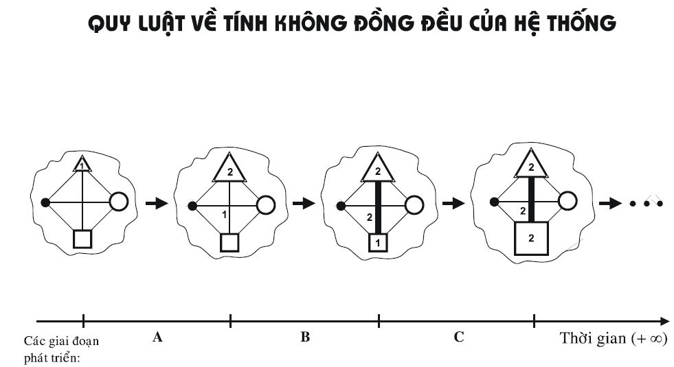
Hình 363: Quy luật về tính không đồng đều của hệ thống
- Từ nội dung của quy luật về tính không đồng đều của hệ thống và hai yêu cầu đòi hỏi phải thỏa mãn đồng thời nêu trên, người viết muốn nhấn mạnh một số ý sau:
- Hệ phải phát triển các phần không đồng đều vì:
Thứ nhất, sự phát triển phụ thuộc vào nguồn lực đầu tư. Trong một thời kỳ (giai đoạn) lịch sử–cụ thể của quá trình phát triển, nguồn lực đầu tư là hữu hạn, chứ không phải vô hạn, kiểu cần bao nhiêu cũng có.
Thứ hai, nếu đem nguồn lực đầu tư hữu hạn này chia đều cho tất cả các phần của hệ thì có nguy cơ: Tất cả các phần của hệ đều ở trạng thái trung gian, chứ chưa chuyển hẳn được sang trạng thái ②. Ở các trạng thái trung gian, các phần của hệ chưa thể phát huy tác dụng muốn có, làm lãng phí các nguồn lực đầu tư. Ví dụ, nhà máy điện đang xây thì chưa phát điện được.
Về điều này, bạn nên xem lại Hình 142 và đọc văn bản kèm theo trong mục nhỏ 10.3.2 Một số điểm cần lưu ý về tính ì hệ thống của quyển ba.
- Ở mỗi thời kỳ (giai đoạn) của quá trình phát triển của hệ cho trước, cần xác định chính xác phần nào của hệ cần được ưu tiên tập trung nguồn lực đầu tư phát triển.
Đây là bước đi rất quan trọng, bởi vì chọn ưu tiên sai, các nguồn lực đầu tư không đem lại ích lợi, là sự lãng phí lớn, thậm chí, làm nảy sinh các bài toán không đáng nảy sinh.
- Việc chọn phần ưu tiên đầu tư phát triển của hệ cho trước phải căn cứ vào tính hệ thống của toàn bộ hệ, khuynh hướng phát triển của nó và tình trạng cụ thể của hệ, chứ không phải chọn một cách cảm tính hoặc chọn do bị sức ép nào đấy.
- Sau khi chọn chính xác phần của hệ cho trước cần ưu tiên phát triển, việc thực hiện sự phát triển phải đưa được phần đó chuyển hẳn sang trạng thái ② trong thời gian ì tối ưu. Có như vậy, phần hệ thống được chọn ưu tiên phát triển mới phát huy hết các tác dụng của mình lên toàn bộ hệ thống để tính hệ thống của hệ cho trước đạt được mục đích đề ra.
Nếu đầu tư không đến nơi đến chốn, hiểu theo nghĩa, phần hệ thống được ưu tiên phát triển, dù được chọn chính xác trước đó vẫn còn ở trạng thái trung gian, không chuyển hẳn được sang trạng thái ②, thì không chỉ lãng phí nguồn lực đầu tư phát triển mà còn làm nảy sinh các vấn đề không đáng nảy sinh.
- Trong quá trình phát triển theo quy luật về tính không đồng đều của hệ thống, phần hệ thống được chọn ưu tiên phát triển không chỉ được hoàn thiện dựa trên các nguyên lý/hệ khung đang có, mà còn có thể phải được cải tiến bằng những đột phá, tạo ra sự dịch chuyển nguyên lý/hệ khung.
Bạn cần chủ động đưa hệ, mà mình làm việc với, phát triển theo quy luật về tính không đồng đều của hệ thống, bằng cách xác định đúng phần của hệ cần ưu tiên phát triển và đầu tư phát triển đủ để phần đó chuyển hẳn được sang trạng thái ②.
Đối với loại hệ dùng để thay đổi sản phẩm (xem Hình 347 và văn bản kèm theo trong mục nhỏ 14.2.1 Quy luật về tính tự lập của hệ thống (quy luật về tính đầy đủ các thành phần của hệ thống) của quyển bảy này), các phần của hệ là bốn bộ phận: Động cơ, truyền động, điều khiển và bộ phận làm việc.
Tùy hệ thống cho trước đang ở giai đoạn phát triển nào, một trong bốn bộ phận nói trên sẽ được ưu tiên tập trung đầu tư phát triển, chứ không phải tất cả các bộ phận cùng phát triển một lúc và đều như nhau.
Đi vào cụ thể hơn nữa, ngay cả khi một bộ phận nào đó trong bốn bộ phận được phát triển ưu tiên. Điều này không có nghĩa, tất cả các yếu tố, tất cả các mối liên kết của bộ phận đó phát triển cùng một lúc và đều như nhau, mà sự phát triển có khi chỉ tập trung ở phần nhất định của bộ phận đó.
Tương tự như vậy, sự phát triển không đồng đều của các bộ phận của hệ cũng xảy ra đối với hệ dùng để phát hiện, đo sản phẩm (xem Hình 348 và văn bản kèm theo trong mục nhỏ 14.2.1 Quy luật về tính tự lập của hệ thống (quy luật về tính đầy đủ các thành phần của hệ thống) của quyển bảy này)
- Theo quy luật về tính không đồng đều của hệ thống, có phần nào đó của hệ được ưu tiên tập trung đầu tư phát triển trước các phần khác. Do vậy, bạn đọc có thể đặt câu hỏi: “Liệu điều này có mâu thuẫn với lý tưởng công bằng xã hội không?”.
Người viết cho rằng có mâu thuẫn, nếu quan niệm công bằng xã hội là, tại mỗi thời điểm, phải chia đều nguồn lực phát triển cho tất cả mọi nơi, mọi người. Còn nếu trên cơ sở tôn trọng quy luật khách quan, người viết cho rằng ở đây không có gì mâu thuẫn cả vì, ít nhất, ba lý do sau:
- Phần được ưu tiên đầu tư phát triển, được chọn trên cơ sở khách quan nhằm phát triển tính hệ thống của toàn bộ hệ, chứ không phải chủ quan, do thân quen hoặc do được “lại quả” nhiều hơn các phần khác.
Ví dụ, tình trạng thiếu năng lượng là vấn đề ảnh hưởng xấu lên sự phát triển của toàn bộ hệ thống, thì ngành điện được chọn ưu tiên đầu tư phát triển.
- Phần được chọn ưu tiên đầu tư phát triển, khi chuyển hẳn sang trạng thái , phát huy tác dụng lên tất cả các phần khác của hệ chứ không phải chỉ đem lại ích lợi cho riêng mình.
Ví dụ, nhà máy điện mới được xây dựng cung cấp điện cho tất cả các phần khác của hệ.
- Nếu xem xét cả quá trình dài của sự phát triển chứ không phải từng thời kỳ (giai đoạn), lại càng không phải từng thời điểm, bạn sẽ thấy, rồi lần lượt tất cả các phần của hệ sẽ được đầu tư phát triển.
MỘT SỐ THÍ DỤ MINH HỌA QUY LUẬT:
Thí dụ 1: Quá trình tiến hóa và phát triển của phương tiện giao thông đường thủy (xem lại Hình 137 và văn bản kèm theo trong mục nhỏ 10.2.2 Những điểm cần lưu ý về tư duy hệ thống của quyển ba).
Thí dụ 2: Sự phát triển của cây bút chì nhờ những cải tiến theo thời gian (xem lại Hình 218 và văn bản kèm theo trong mục nhỏ 12.1.4 Chương trình phát hiện các thủ thuật và làm tái hiện quá trình suy nghĩ lôgích để có được hệ thống cải tiến cho trước của quyển năm).
Thí dụ 3: Sự hình thành và phát triển cơ thể người.
Những gì trình bày trong thí dụ 3 này, trừ phần nhận xét của người viết, về cơ bản, được trích tóm tắt từ quyển sách “Cơ thể người – thế giới kỳ diệu và bí ẩn” của Trần Phương Hạnh, Nhà xuất bản giáo dục, 2001.
“Năm 1625, Jose de Aromatari, nhà nghiên cứu người Ý, nhận xét rằng, một hạt nảy mầm (như hạt đậu, hạt lúa mì) đã có hình dáng một cái cây nhỏ gần như hoàn chỉnh, gồm đủ thân, rễ và cả vài ba lá nhỏ xíu. Điều này giống như toàn bộ cái cây nhỏ bé đã có sẵn trong hạt mầm.
Trên cơ sở nhận xét đó, Aromatari đã khái quát hóa thành kết luận cho rằng: Ở các động vật và ở cả người, trong phôi thai ngay từ ban đầu, các bộ phận, hình thái đều đã có sẵn từ trước ở một dạng nhỏ bé và tăng trưởng dần dần về lượng theo thời gian. Đó là luận thuyết phôi thai đã có sẵn từ trước, gọi là thuyết “Tiền mầm” (préformisme).
Như vậy, theo thuyết “Tiền mầm”, sự phát triển của hệ thống phôi thai là sự phát triển đồng đều. Nhưng những kết quả nghiên cứu chính xác hơn, sâu sắc hơn không cho thấy điều đó.
Năm 1759, Kaspar Friedrich Wolff, nhà khoa học Nga gốc Đức, khởi xướng thuyết “Tạo mầm” hay “Thượng tạo” (épigénésis) khi nghiên cứu quá trình phát triển của thực vật cũng như của phôi thai gà và nhiều loài động vật khác. Ông nhận thấy, các phủ tạng đều được hoàn thành dần dần chứ hoàn toàn không có sẵn từ trước. Ví dụ như ở gà, tim phôi thai được hình thành muộn, sau nhiều bộ phận khác đơn giản hơn.
Wolff xác định rằng, sự nảy sinh và phát triển của mỗi sinh vật không phải là việc nhân lên đơn thuần về lượng, một hiện tượng tăng trưởng giản đơn mà đó là quá trình biến đổi về chất để tạo nên một cơ thể ngày càng phức tạp hơn. Phôi thai biến đổi dần dần và những tạng bên trong phôi thai đều xuất hiện lần lượt, cái nọ sau cái kia. Không có hiện tượng phôi thai có sẵn từ trước trong trứng, mà trái lại mọi bộ phận đều được tạo nên trong quá trình phát triển.
Các nghiên cứu đầy đủ hơn sau này cho thấy, ngay sau khi hình thành, tế bào trứng đã thụ tinh (hợp tử) bắt đầu phân chia thành hai, bốn, tám, mười sáu, rồi ba mươi hai tế bào và cứ thế nhân lên mãi… hình thành phôi.
Những tế bào đầu tiên của phôi đều không có chức năng rõ rệt (chưa biệt hóa). Khi mười sáu tế bào phân chia để tạo nên ba mươi hai tế bào, bắt đầu có quá trình biệt hóa tế bào.
Từ tuần lễ thứ hai, các tế bào phát triển mạnh. Các tế bào ngoại vi gài sâu vào niêm mạc tử cung và tạo nên nhau thai. Các tế bào khác tạo nên ba lớp mô phôi sau:
- Lá phôi trong sẽ tạo nên tất cả các tạng có nhiệm vụ chuyển hóa, nuôi dưỡng cơ thể như dạ dày, gan, phổi…
- Lá phôi giữa sẽ hình thành các cấu trúc nâng đỡ như xương, cơ, mạch máu.
- Lá phôi ngoài tạo nên các tạng bảo vệ và cảm thụ dẫn truyền như da, giác quan, hệ thần kinh.
Vào tuần lễ thứ ba một sự kiện mới xảy ra: Một số tế bào xếp thành hình ống dài, mầm mống của mạch máu. Dần dần ống đó phình ra, bắt đầu co bóp và nhịp đập đầu tiên của trái tim được hình thành.
Vào cuối tháng đầu tiên bắt đầu xuất hiện hai tay và hai ngày sau là hai chân. Qua một tháng, phôi đã rõ tay, chân và những khe mang. Các khe mang lớn dần rồi biến đổi thành tuyến giáp, thành tai và các cơ mặt.
Lúc sáu tuần lễ, những mầm sinh dục đầu tiên chung cho cả hai giới xuất hiện dưới dạng những tế bào nguyên thủy. Dần dần, các tuyến nội tiết của phôi hoạt động ảnh hưởng đến các tế bào mầm và biến đổi chúng thành bộ phận sinh dục nam hoặc nữ. Lúc đó, phôi bắt đầu có hình thái là con trai hoặc con gái.
Qua hai tháng, phôi đã có hình hài của con người và chuyển sang giai đoạn thai nhi.
Tháng thứ tư, não của thai nhi bắt đầu thực hiện chức năng của mình.
Năm tháng, thai nhi lần đầu tiên biết biểu hiện thái độ riêng, biết nghe những tiếng động từ bên ngoài dội đến, biết phản ứng một cách tinh tế, sợ sệt hoặc giận dữ, đe dọa hoặc mút ngón tay.
Bảy tháng thai nhi mở mắt.
Chín tháng, tháng cuối cùng, thai nhi hoàn thiện mọi cái còn lại để chuẩn bị chào đời.
Khi em bé ra đời, cái dây nhau bị kẹp chặt, rồi bị cắt đứt, mối quan hệ nuôi dưỡng giữa mẹ và con ngừng hẳn, máu mẹ không cung cấp ôxy cho con nữa. Em bé phải tự thở. Lần đầu tiên, em bé hít vào thật mạnh, thở ra thật mạnh với miệng mở thật to. Cùng với tiếng khóc đầu tiên, không khí tràn ngập vào đường ống thông hô hấp làm dãn căng hai phổi. Lúc này, hô hấp là nhiệm vụ thiết yếu nhất của cơ thể.
Theo thời gian, lần lượt các bộ phận của cơ thể em bé được củng cố và phát triển: Mọc răng để có thể ăn được thức ăn rắn, dần biết lẫy, bò, đứng thẳng, đi, nói, suy nghĩ trừu tượng, lôgích… rồi bước vào thời kỳ nhổ giò, dậy thì.
Trong suốt quá trình phát triển của phôi thai cũng như sau lúc ra đời, hình thái và khối lượng tương đối của các phần của cơ thể không phải là bất biến. Vào ngày thứ hai của thời kỳ phôi thai, đầu và cổ chiếm tỷ lệ 43%, thân người 52% và chân 2% khối lượng cơ thể. Nhưng đến tuổi trưởng thành, đầu và cổ chỉ còn chiếm 10%, thân người 52% và chân 29%. Như vậy, bạn có thể hình dung được là ở thời kỳ phôi thai, đầu, cổ chiếm phân nửa khối lượng cơ thể, nghĩa là đầu và cổ rất to, chân rất ngắn; khi trưởng thành thì ngược lại, đầu và cổ ngắn còn chân lại dài”.
Thông qua những gì được trình bày ở trên, bạn đọc có thể thấy, quá trình hình thành và phát triển cơ thể người không phải diễn ra đồng đều như những nhà khoa học ở thế kỷ 17 tưởng lầm. Trên thực tế, các phần của cơ thể con người phát triển không đồng đều. Ở mỗi giai đoạn, phần nào đó của cơ thể được ưu tiên phát triển đều có lý do của nó, xuất phát từ đòi hỏi phát triển tính hệ thống của toàn bộ cơ thể.
Ví dụ, khi mới hình thành, các tế bào lớp ngoài của phôi dính vào bề mặt xốp mềm của tử cung và hình thành nên nhau thai.
Nhau là bộ phận bảo đảm nuôi dưỡng phôi thai suốt thời gian chín tháng mười ngày. Nhau thai vừa là phổi, dạ dày, lại vừa là gan, tim, thận. Qua nhau phôi cũng thải bỏ những cặn bã dư thừa, đồng thời nhau cũng là một màng lọc tuyệt diệu bảo vệ không cho vi khuẩn và các chất độc xâm nhập vào phôi.
Nếu như ở thời kỳ đầu, nhau thai đóng tất cả các vai trò đã nêu trên, thì rõ ràng cái phôi thai cần nhất lúc đó chính là có những ống dẫn để thực hiện tốt sự trao đổi chất giữa phôi và nhau thai (bộ phận truyền động)… Điều này được thực hiện vào tuần lễ thứ ba: Hình thành mầm mống của các mạch máu, rồi quả tim độc lập của phôi.
Khi đứa bé ra đời phải tự thở, hệ hô hấp được ưu tiên phát triển.
Nếu chỉ bú sữa mẹ và ăn thức ăn lỏng, năng lượng cung cấp cho sự phát triển của cơ thể sẽ không đầy đủ, phải chuyển sang ăn thức ăn rắn. Lúc này, răng được ưu tiên phát triển, mọc rất nhanh so với các bộ phận khác của cơ thể…
Việc hình thành và phát triển cơ thể người (và không chỉ cơ thể người) theo cách các phần cơ thể người phát triển không đồng đều là kết quả của quá trình chọn lọc tự nhiên nhiều triệu năm. Điều này cho thấy sự tối ưu và độ tin cậy cao của quy luật về tính không đồng đều của hệ thống.
Thí dụ 4:
Trên Hình 364 là sợi dây xích gồm nhiều mắt xích. Hệ thống dây xích được chế tạo ra để truyền lực kéo từ vật này sang vật khác, hay nói cách khác, chịu lực kéo căng hai đầu dây xích. Hệ thống dây xích gồm các yếu tố là các mắt xích liên kết với nhau.
Có câu hỏi đặt ra: “Đối với sợi dây xích cụ thể như trên_ Hình 364_, cần ‘đầu tư’ vào đâu (phần nào của hệ) để khả năng chịu lực (tính hệ thống) của toàn bộ sợi dây xích tăng lên với hiệu quả đầu tư cao nhất?”
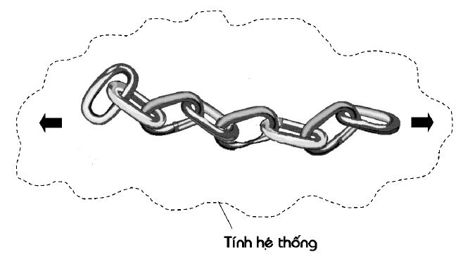
Hình 364: Tăng khả năng chịu lực kéo căng của sợi dây xích
Theo quy luật về tính không đồng đều của hệ thống, bạn không được đầu tư dàn đều cho các phần của hệ (cho tất cả các mắt xích) mà phải chọn chính xác phần cần được ưu tiên đầu tư.
Căn cứ vào tính hệ thống của sợi dây xích và tình trạng của các mắt xích, bạn nhận thấy mắt xích thứ năm từ trái sang là mắt xích yếu nhất cần được nhận sự đầu tư.
Quả thật, đầu tư vào mắt xích thứ năm, hiểu theo nghĩa gia cố (hàn đắp) làm tăng tiết diện của phần mắt xích bị thu nhỏ, hiệu quả đầu tư sẽ cao. Lúc này, hiệu quả đầu tư cao hơn nhiều so với đầu tư dàn đều cho mọi mắt xích.
Còn nếu bạn chọn mắt xích ưu tiên đầu tư lầm (không phải mắt xích thứ năm), có thể nói, toàn bộ đầu tư là vô ích.
Thí dụ 5:
Hình 365 cho thấy hệ thống các đường ống với đường kính khác nhau dùng để đưa chất lỏng từ địa điểm này sang địa điểm khác.
Ở đây có quá trình truyền và cần làm tăng tính thông suốt của quá trình truyền này.
Phân tích tương tự như trong thí dụ 4, bạn xác định phần của hệ cần phải được ưu tiên đầu tư (mở rộng đường kính của ống) chính là đường ống thứ năm từ bên trái qua.
Sau đó, nếu có tiếp các nguồn lực đầu tư đủ, các đường ống được đầu tư tiếp theo lần lượt sẽ là đường ống thứ bảy, thứ hai,…
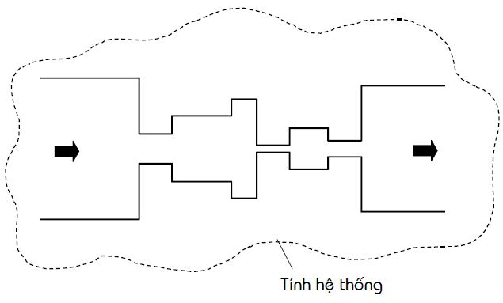
Hình 365: Hệ thống các đường ống dẫn chất lỏng
- Trong trường hợp chung của hệ thống, bạn cần căn cứ vào tính hệ thống, sự cần thiết phát triển tính hệ thống, xác định “khâu yếu nhất” của hệ thống và thường đấy là nơi cần ưu tiên đầu tư. Chẳng hạn, trên Hình 366, yếu tố ngôi sao sẽ được coi là khâu yếu nhất cần được chú ý đầu tư.
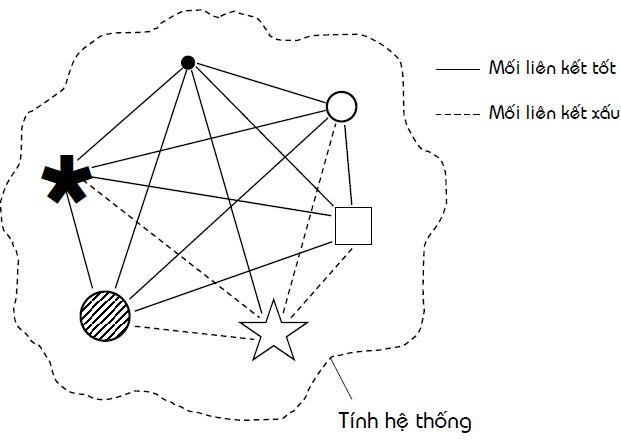
Hình 366: Ví dụ về “khâu yếu nhất” trong hệ thống
Ngoài các thí dụ vừa trình bày, bạn nên đọc lại các thí dụ trong mục 11.2 Lời phát biểu, các thí dụ minh họa và một số nhận xét về các thủ thuật (nguyên tắc) sáng tạo cơ bản của quyển bốn. Trong đó, bạn sẽ tìm được thêm các thí dụ minh họa quy luật về tính không đồng đều của hệ thống.
14.2.7 Quy luật về chuyển sự phát triển lên hệ trên
LỜI PHÁT BIỂU QUY LUẬT:
Khi cạn khả năng phát triển, hệ chuyển sang hệ trên với tư cách là một phần của hệ trên và sự phát triển sẽ diễn ra tiếp tục ở mức hệ trên…
DIỄN GIẢI NỘI DUNG QUY LUẬT:
- Trước hết, người viết muốn bạn đọc chú ý cụm từ “Khi (hệ cho trước) cạn khả năng phát triển” trong LỜI PHÁT BIỂU QUY LUẬT.
Từ “phát triển” được hiểu theo nghĩa truyền thống là “phát triển tính hệ thống” của hệ cho trước. Có thể phát triển tính hệ thống của hệ cho trước về nhiều mặt khác nhau.
Ví dụ, tính hệ thống ban đầu của máy bay là bay được. Sau này, người ta phát triển nó thành bay với độ an toàn, độ tin cậy cao hơn; bay nhanh hơn; bay cao hơn; bay dễ điều khiển hơn; bay tiết kiệm nhiên liệu hơn; bay chở nhiều hành khách, hàng hóa hơn; bay ít gây ô nhiễm môi trường hơn; bay với nhiều khả năng chiến đấu cao hơn…
Do vậy, “cạn khả năng phát triển” thường được hiểu theo nghĩa, mặt nào đó của tính hệ thống cạn khả năng phát triển, chứ không nhất thiết phải tất cả mọi mặt của tính hệ thống đều cạn khả năng phát triển.
Trong trường hợp chung, xác định một cách khách quan và chính xác khi nào hệ còn hay cạn khả năng phát triển mặt nào đó của tính hệ thống là công việc khó. Do vậy, việc xác định còn hay cạn khả năng phát triển mặt nào đó của hệ thường dùng cho hệ cụ thể, hoạt động dựa trên nguyên lý/hệ khung cụ thể, trong các điều kiện, các nguồn dự trữ có sẵn cụ thể và không tránh khỏi mang tính chủ quan nhất định.
Giả sử một hệ cụ thể (hệ cho trước) có vấn đề. Để giải quyết vấn đề, hệ cho trước cần phát triển một mặt nhất định của tính hệ thống. Dưới đây là một số trường hợp (dấu hiệu) cho thấy hệ cho trước có thể đang cạn khả năng phát triển mặt đó của tính hệ thống:
Mặt đó hiện nay của tính hệ thống của hệ cho trước không đáp ứng được yêu cầu giải bài toán, mà các sáng tạo cần thiết để phát triển mặt đó của hệ thống còn chưa xuất hiện hoặc không thấy có khả năng xuất hiện trong tương lai gần.
Các chỉ số phản ánh sự phát triển mặt đó của tính hệ thống của hệ cho trước không thay đổi (bão hòa) trong thời gian tương đối dài, mặc dù người ta đã thử khá nhiều cải tiến bên trong hệ, hiểu theo nghĩa, không đưa thêm các yếu tố, các mối liên kết mới từ bên ngoài vào hệ cho trước.
Hệ cho trước có nhược điểm nhất định mà nhược điểm đó không (hoặc rất khó) làm cho biến mất được, nếu khắc phục nhược điểm một cách trực tiếp đối đầu. Nhược điểm này gây cản trở sự phát triển tiếp tục mặt nào đó của hệ thống. Lúc này, hệ dường như đã cạn khả năng phát triển mặt đó của tính hệ thống.
Hệ cho trước cần phát triển một mặt mới nào đó mà tính hệ thống của hệ cho trước hiện nay chưa có và các nguồn dự trữ có sẵn trong hệ không đủ khả năng thực hiện điều đó. Trong nghĩa tương đối này, hệ cho trước cũng có thể được coi là cạn khả năng phát triển đối với mặt mới đó.
Trong tương tác của các hệ dưới của hệ cho trước có thể xảy ra trường hợp không thể (hoặc rất khó, hoặc chưa tìm ra trong thời gian tương đối dài) tạo mối liên kết cần thiết, trực tiếp giữa hai (hoặc nhiều) hệ dưới. Lúc này, bạn cũng có thể coi hệ cho trước cạn khả năng phát triển về mối liên kết đó.
Tại những nơi có sự cạnh tranh, hệ cho trước có khả năng cạnh tranh kém hơn các hệ khác. Điều này kéo dài thêm nữa có thể dẫn đến hệ cho trước bị phá sản. Ở đây, mặc dù có thể có nhiều nguyên nhân chủ quan như quản lý kém, nguồn nhân lực hạn chế, không đưa ra được những giải pháp sáng tạo cần thiết, tình hình này cũng có thể xem là hệ cho trước cạn khả năng phát triển.
Tồn tại mâu thuẫn kỹ thuật (xem mục nhỏ 9.4.2 TRIZ: Các loại mâu thuẫn trong giải quyết vấn đề và ra quyết định của quyển ba) căng thẳng đến mức: Phát triển mặt đó của tính hệ thống kéo theo (các) mặt khác xấu đi không thể chấp nhận được.
Người ta xác định được khá chính xác mặt đó của tính hệ thống của hệ cho trước đã đạt được (hoặc tiệm cận sát) giới hạn của sự phát triển, quy định bởi nguyên lý/hệ khung hiện có tương ứng với mặt đó. Trường hợp này sẽ được người viết đề cập chi tiết trong mục nhỏ 14.2.10 Quy luật về sự phát triển theo đường cong hình chữ S của quyển bảy này.
- Từ “hệ trên” trong LỜI PHÁT BIỂU QUY LUẬT được hiểu là hệ trên được thành lập mới, gồm hệ cho trước liên kết với (các) hệ khác, một mặt, có mục đích giúp hệ cho trước giải quyết vấn đề phát triển mặt cần thiết của tính hệ thống của hệ cho trước. Mặt khác, với tư cách là hệ trên, hệ trên đòi hỏi hệ cho trước, sau khi trở thành một phần của hệ trên, phải có những thay đổi, đóng góp phù hợp vào việc thực hiện và phát triển tính hệ thống của hệ trên.
Như vậy, quy luật về chuyển sự phát triển lên hệ trên phản ánh sự phát triển cả tính hệ thống của hệ cho trước và tính hệ thống của hệ trên mới, trong đó, nhìn về lâu dài, tính hệ thống của hệ trên mới thường được ưu tiên hơn.
- Hình 367 minh họa nội dung quy luật về chuyển sự phát triển lên hệ trên. Sau khi phát triển ở mức hệ trên đến cạn khả năng phát triển, hệ trên lại chuyển sang hệ trên nữa với tư cách là một phần của hệ trên nữa và sự phát triển diễn ra tiếp tục ở mức hệ trên nữa, và cứ như thế…
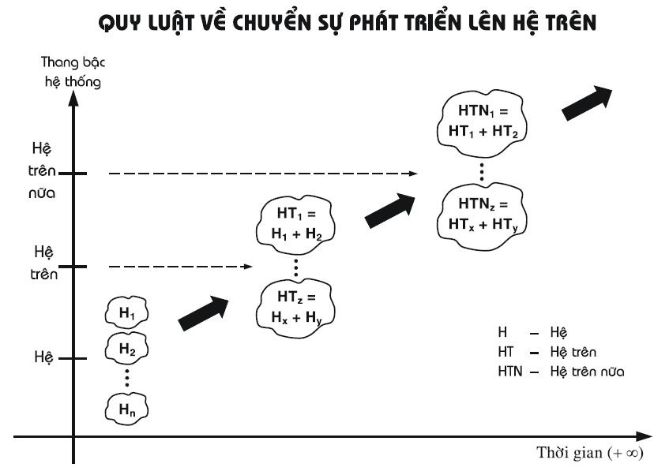
Hình 367: Minh họa quy luật về chuyển sự phát triển lên hệ trên
Bạn thử theo dõi sự tiến hóa của vũ trụ từ vụ nổ Big Bang cho đến quá trình toàn cầu hóa hiện nay, bạn có thấy quy luật về chuyển sự phát triển lên hệ trên phát huy tác dụng không?
Sau khi quá trình toàn cầu hóa trên Trái Đất hoàn tất, hệ trên tiếp theo sẽ là hệ nào?
- Tùy điều kiện, hoàn cảnh và hệ cụ thể, có thể có nhiều cách để hệ chuyển sang hệ trên. Hình 368 mô tả một số cách chuyển từ hệ sang hệ trên có thể có, mà Hình 367 mới minh họa cô đọng một cách trong số đó (xem Hình 368a). Chúng ta hãy cùng nhau xem xét lần lượt từng trường hợp.
Trường hợp thứ nhất (xem Hình 367 và Hình 368a) cho thấy, khi cạn khả năng phát triển, hệ cho trước có thể liên kết với (các) hệ khác tương đương đồng nhất với nó để tạo nên hệ trên mới. Hệ tương đương đồng nhất với hệ cho trước được hiểu là hệ có cùng thang bậc hệ thống và có chức năng (tính hệ thống) giống hệ cho trước.
Ví dụ, các hộ nông dân liên kết với nhau thành hợp tác xã nông nghiệp; những người cùng sở thích liên kết với nhau thành câu lạc bộ; các doanh nghiệp cùng lĩnh vực liên kết với nhau thành hội các doanh nghiệp của lĩnh vực đó…
Trường hợp thứ hai (xem Hình 368b) cho thấy, khi cạn khả năng phát triển, hệ cho trước có thể liên kết với các hệ khác tương đương không đồng nhất với nó để tạo nên hệ trên mới. Hệ tương đương không đồng nhất với hệ cho trước là hệ có cùng thang bậc hệ thống nhưng có các chức năng khác nhau, thậm chí, ngược nhau so với hệ cho trước và so với nhau.
Ví dụ, hôn nhân giữa đôi nam, nữ; các bộ phận động cơ, truyền động, làm việc, điều khiển liên kết với nhau thành hệ tự lập; sáp nhập công ty đóng tàu với công ty sản xuất ôtô; thành lập liên hiệp các xí nghiệp, trong đó có những xí nghiệp sản xuất các loại hàng hóa khác nhau…
Trường hợp thứ ba (xem Hình 368c) cho thấy, khi cạn khả năng phát triển, hệ cho trước có thể liên kết với các hệ dưới khác để tạo thành hệ trên mới. Hệ dưới khác được hiểu là hệ khác hệ cho trước, có thang bậc hệ thống tương đương với hệ dưới của hệ cho trước. Ở đây, có thể hạ thang bậc hệ thống thấp hơn nữa thành hệ dưới nữa, hệ dưới dưới nữa…
Ví dụ, thuyền chèo tay kết hợp với buồm; thuyền buồm kết hợp với động cơ hơi nước; công ty nhận thêm các nhân viên mới; gia đình bạn mua sắm thêm các đồ vật…
Trường hợp thứ tư (xem Hình 368d) cho thấy, khi cạn khả năng phát triển, hệ cho trước có thể liên kết với hệ trên khác để tạo thành hệ trên mới. Hệ trên khác được hiểu là hệ khác hệ cho trước, có mức thang bậc hệ thống cao hơn hệ cho trước. Do vậy, ở đây không chỉ có hệ trên mà còn có thể có hệ trên nữa, hệ trên trên nữa…
Ví dụ, bạn vào làm việc ở công ty; bạn gia nhập một tổ chức; một công ty nhỏ chuyên ngành bị một tập đoàn lớn đa ngành mua; một chi tiết mới được lắp thêm vào một thiết bị; hàng hóa nhập khẩu vào một quốc gia…
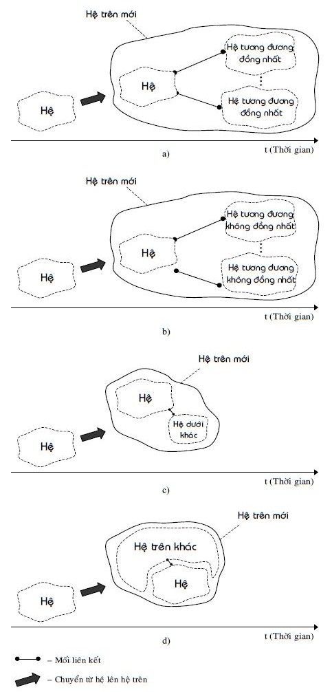
Hình 368: Một số cách chuyển từ hệ lên hệ trên
Ngoài những trường hợp được mô tả ở trên còn có những trường hợp là tổ hợp các cách chuyển từ hệ sang hệ trên. Bạn đọc có thể làm điều đó bằng cách tổ hợp các Hình 368a, b, c, d lại với nhau theo tổ hợp chập 2, chập 3, chập 4.
- Tính hệ thống của hệ trên mới so với hệ cho trước là sự thay đổi về chất và chất mới này sẽ làm thay đổi các thông số của các hệ thống tạo thành và bản thân hệ trên mới về lượng. Trong trường hợp chuyển sự phát triển lên hệ trên, chất mới và những thay đổi về lượng của hệ trên mới đóng vai trò phản ánh sự phát triển này. Nếu chúng tốt đẹp, thì có nghĩa quá trình chuyển lên hệ trên là tốt đẹp.
Ví dụ, khi cạn khả năng phát triển, một số công ty liên kết với nhau thành tổng công ty (hệ trên). Tổng công ty nghiên cứu và sản xuất ra loại mặt hàng mới mà, nếu đứng riêng rẽ, từng công ty không làm được (chất mới). Nhờ vậy, khả năng cạnh tranh, doanh thu tính theo đầu người của tổng công ty (bao gồm tất cả các công ty) tăng lên (thay đổi về lượng). Những chỉ số nói trên phản ánh quá trình chuyển lên hệ trên là tốt đẹp, là mở thêm đất (không gian) cho sự phát triển.
Ngược lại, nếu chất mới và những thay đổi về lượng của hệ trên mới phản ánh sự thụt lùi so với trước khi tiến hành quá trình chuyển lên hệ trên của các hệ tạo thành hệ trên mới, người giải bài toán cần tìm nguyên nhân:
- Hệ cho trước đã thực sự cạn khả năng phát triển chưa? Có sự đánh giá chủ quan, duy ý chí, nóng vội chuyển lên phát triển ở mức hệ trên không?
- Nếu hệ cho trước đã thực sự cạn khả năng phát triển, vậy các bài toán nào liên quan đến quá trình phát triển lên hệ trên và phát triển ở mức hệ trên chưa được giải tốt? Còn có những bài toán liên quan nào khác nữa không?
- Việc chuyển từ hệ lên hệ trên thường dẫn đến sự thay đổi nhiều, một mặt, liên quan đến việc đưa các yếu tố mới từ bên ngoài vào hệ (hệ cho trước hoặc/và (các) hệ khác). Mặt khác, ở đây có sự tái cấu trúc hệ (hệ cho trước hoặc/và (các) hệ khác). Nói cách khác, ở đây sự chống đối sự thay đổi (tính ì hệ thống) và khả năng làm nảy sinh các vấn đề trong tương lai cũng thường rất lớn.
Khi áp dụng quy luật về chuyển sự phát triển lên hệ trên vào thực tế, chứ không phải mang tính chất thử nghiệm, thí điểm, bạn cần chú ý xem hệ cho trước đã thực sự cạn khả năng phát triển chưa. Chính nhu cầu thiết thân, đồng thuận cần phát triển tiếp trong khi khả năng của hệ đã cạn sẽ tạo sự thuận lợi cho hệ tiếp nhận những thay đổi để chuyển sang hệ trên và giảm bớt sự chống đối. Không chú ý đến yêu cầu này, do đánh giá chủ quan, nóng vội, duy ý chí, bạn có thể hết nhập hệ cho trước với các hệ khác rồi lại tách chúng ra như cũ theo kiểu mò mẫm, thử và sai.
Ngoài ra, bạn cần thực hiện các lời khuyên khác liên quan đến việc giảm sự chống đối đến tối thiểu, tăng tốc độ chuyển trạng thái của hệ thống đến tối đa, giảm thời gian ì tối ưu nhiều nhất (xem mục 10.3 Tính ì hệ thống và những điểm cần lưu ý của quyển ba).
- Tương tự như các quy luật phát triển hệ thống khác, quy luật về chuyển sự phát triển lên hệ trên cũng đòi hỏi sự thỏa mãn yêu cầu kép:
- Chuyển sang hệ trên để phát triển tính hệ thống của hệ cho trước và hệ trên mới, về lâu dài, là tính hệ thống của hệ trên mới, mở rộng thêm đất phát triển.
- Các sáng tạo, đổi mới giúp phát triển theo quy luật về chuyển sự phát triển lên hệ trên phải tuân theo tiêu chuẩn quyết định tốt (xem mục nhỏ 10.5.1 Tiêu chuẩn của quyết định tốt: Nhìn theo quan điểm hệ thống phát triển bền vững của quyển ba).
- Áp dụng quy luật về chuyển sự phát triển lên hệ trên vào thực tế, làm việc với một hệ nào đó, bạn cần chú ý theo dõi khả năng phát triển của hệ đó. Khi chớm phát hiện, hoặc tốt hơn, khi có dự báo về khả năng phát triển của hệ đó bắt đầu cạn, bạn cần tìm kiếm cơ hội “mở cửa” hệ để chủ động tạo ra các mối liên kết mạnh giữa hệ với các hệ cần thiết khác để đưa hệ lên hệ trên và phát triển ở mức hệ trên.
Không chú ý điều này, các bài toán liên quan đến sự phát triển của hệ đó sẽ nảy sinh mà giải chúng phải trả giá đắt hoặc đã quá muộn vì bỏ lỡ cơ hội.
Trong quá trình phát triển lên hệ trên và ở mức hệ trên, hệ cho trước không chỉ được hoàn thiện dựa trên các nguyên lý/hệ khung đang có, mà còn có thể phải hoàn thiện bằng cách chuyển dịch nguyên lý/hệ khung.
Bạn không nên cho rằng, chuyển sự phát triển lên hệ trên là cách làm duy nhất khi hệ cho trước cạn khả năng phát triển. Trên thực tế, các quy luật phát triển hệ thống khác đều hàm chứa ý hệ đã cạn khả năng phát triển về điều gì đó ở mức độ và quy mô nhỏ. Còn quy luật về chuyển sự phát triển lên hệ trên đề cập toàn bộ hệ cùng tính hệ thống của nó. Trong nhiều trường hợp, sự phân định “nhỏ” và “lớn” không thật dễ dàng.
MỘT SỐ THÍ DỤ MINH HỌA QUY LUẬT:
Thí dụ 1:
Trước đây, trong nghiên cứu khoa học và phát triển công nghệ, các đề tài chỉ cần thực hiện trong một phòng thí nghiệm là đủ. Những đề tài phức tạp hơn đòi hỏi sự hợp tác nghiên cứu của nhiều phòng thí nghiệm trong một viện nghiên cứu, rồi sự hợp tác của nhiều viện nghiên cứu trong một quốc gia, rồi của nhiều quốc gia.
Ví dụ, nghiên cứu về thời tiết, khí hậu, sự nóng lên của Trái Đất; nghiên cứu biển, đại dương; nghiên cứu môi trường; nghiên cứu những dòng sông, dãy núi, các lớp địa tầng… đi qua nhiều quốc gia; nghiên cứu vũ trụ;…
Đây chính là khuynh hướng hệ nghiên cứu khoa học và phát triển công nghệ chuyển sang phát triển ở mức hệ trên, hệ trên nữa…
Thí dụ 2:
Lịch sử phát triển của nhân loại cho thấy, đã từng có thời kỳ, ở đó, kinh tế gia đình tự cấp, tự túc là phổ biến. Lúc này, mỗi gia đình phải tự lo cho mình hết tất cả mọi thứ như nước uống, củi đun, lương thực, thực phẩm, quần áo, đồ dùng gia đình, công cụ lao động, nhà ở, chăm sóc sức khỏe, dạy dỗ con cái…
Với thời gian, hình thành các mối liên kết về kinh tế giữa các gia đình trong phạm vi một vùng nhất định, hiểu theo nghĩa, họ trao đổi với nhau những sản phẩm mà gia đình này thừa, gia đình kia thiếu và ngược lại.
Các mối liên kết dần trở nên chặt hơn khi có sự chuyên môn hóa: Gia đình giỏi trồng trọt, chủ yếu, làm trồng trọt; gia đình chuyên làm chăn nuôi; gia đình chuyên dệt vải; gia đình chuyên sửa chữa và chế tạo công cụ lao động;… Họ sản xuất không chỉ cho chính mình mà còn cho các gia đình khác và nhận lại những gì mình không làm. Lúc này, các gia đình phụ thuộc vào nhau đến mức không thể thiếu nhau được (tạo thành hệ trên).
Sự chuyên môn hóa của từng gia đình và sự liên kết giữa các gia đình mở ra không gian phát triển mới.
Chẳng hạn, sự chuyên môn hóa giúp gia đình tập trung thời gian, sức lực, trí tuệ vào một công việc là mặt mạnh của mình. Nhờ vậy, gia đình không chỉ có tay nghề vững vàng, chuyên nghiệp hơn, mà còn có điều kiện để đưa ra, áp dụng các sáng tạo làm tăng năng suất, hiệu quả công việc và tạo thêm các loại sản phẩm mới trong lĩnh vực của mình.
Sự liên kết giữa các gia đình làm kết quả sự phát triển của từng gia đình (dưới dạng các sản phẩm trao đổi) không chỉ mang ích lợi đến các gia đình khác, giúp nâng cao, làm phong phú đời sống các gia đình đó, mà còn kích thích, thách thức, tạo ra nhu cầu cạnh tranh giữa các gia đình với nhau, thúc đẩy sự phát triển chung trong toàn hệ thống (hệ trên).
Ngoài ra, sự liên kết giữa các gia đình còn làm xuất hiện các nhu cầu mới, như nhu cầu vận chuyển sản phẩm đi xa, nhu cầu có những người làm công việc buôn bán chuyên nghiệp… Những nhu cầu này cũng đóng vai trò là những nguồn thúc đẩy sự phát triển tiếp tục, ảnh hưởng lên toàn bộ hệ thống.
Từ kinh tế gia đình tự cấp tự túc đến kinh tế vùng, kinh tế quốc gia, kinh tế liên quốc gia (khu vực), kinh tế toàn cầu chính là các quá trình chuyển sự phát triển lên hệ trên, hệ trên nữa…
Tình hình nói trên không chỉ xảy ra trong các lĩnh vực kinh tế mà còn các lĩnh vực khác như xã hội, chính trị…
Thí dụ 3:
Nước Nhật, đặc biệt là Singapore, sớm nhận ra các nguồn lực dùng để phát triển của quốc gia mình rất hạn chế và mức phát triển của mình thua kém nhiều so với các nước tiên tiến ở Phương Tây. Họ kịp thời thực hiện các cải cách mở cửa gắn kết với những nước phát triển nhất để chuyển lên phát triển ở mức hệ trên. Nhờ vậy, nước Nhật trở thành nền kinh tế đứng thứ hai trên thế giới với nền khoa học và công nghệ hùng mạnh. Còn Singapore thực hiện được cú nhảy ngoạn mục “từ thế giới thứ ba sang thế giới thứ nhất”.
Trong khi đó, một số nước có hoàn cảnh tương tự như Nhật và Singapore lại tiếp tục chính sách đóng cửa, cố gắng phát triển dựa theo nguyên lý/hệ khung của chế độ phong kiến và các công nghệ có sẵn đã trở nên cạn kiệt khả năng phát triển. Kết quả, những nước đó bị bỏ lại phía sau khá xa trên con đường phát triển. Họ bỏ lỡ cơ hội phát triển.
Một số nước khác, tuy có ý thức cải cách như Nhật và Singapore, đã không giải quyết tốt các bài toán nảy sinh trong quá trình chuyển sự phát triển lên hệ trên và phát triển ở mức hệ trên, nên vẫn thuộc các quốc gia tụt hậu. Họ nhìn thấy cơ hội phát triển, cố gắng nắm bắt cơ hội nhưng không có khả năng tiếp nhận được cơ hội đó một cách đầy đủ, ổn định và bền vững.
Thí dụ 4:
“Sau hơn một năm, từ tháng 1-1989 đến tháng 5-1990, quyết định sát nhập các xí nghiệp chế biến cung ứng xuất khẩu gỗ (CBCƯXKG) Phú Lâm, Long Bình, An Bình thành Xí nghiệp liên hiệp (XNLH) CBCƯXKG đã cho thấy việc sát nhập không đem lại hiệu quả. Ban lãnh đạo XNLH không đủ sức quản lý tự hạch toán, để lỗ lã nhiều tỷ đồng, nợ hàng triệu USD không có khả năng chi trả, có thể dẫn đến phá sản nếu Tổng công ty dịch vụ sản xuất và xuất khẩu lâm sản 3 (cơ quan chủ quản) không kịp thời cho ngưng hoạt động và sau một thời gian xem xét đánh giá đã cho tách ra và trả lại sự hoạt động độc lập của từng xí nghiệp.
Nhờ vậy, các xí nghiệp nói trên đã và đang dần dần khôi phục lại được khả năng làm ăn hiệu quả của mình. Riêng xí nghiệp CBCƯXKG Phú Lâm đã ký được hợp đồng xuất khẩu các mặt hàng gỗ thông theo mẫu mã của khách hàng nước ngoài trị giá hợp đồng 350.000 USD. Trước mắt, với hợp đồng này xí nghiệp có công ăn việc làm liên tục trong sáu tháng tới. Ban giám đốc mới của xí nghiệp đang tích cực tìm thị trường tiêu thụ để ký thêm được nhiều hợp đồng xuất khẩu, đảm bảo công việc làm lâu dài cho cán bộ công nhân xí nghiệp.
Có triển vọng hoạt động đạt hiệu quả cao, vừa qua xí nghiệp CBCƯXKG Phú Lâm được ngân hàng cho vay 17 tỷ đồng để thanh toán bớt một số nợ nần cũ.”
Thí dụ 5:
“Ở trang trại Bessy rộng 160 ha trong thung lũng Chevreuse, cách Paris khoảng 40 km, lúc năm giờ chiều, Nicolas Trébouta 32 tuổi bước vào phòng vắt sữa mới đặt nổi trên mặt nước, nằm cạnh chuồng nuôi gia súc. Con bò mang số 2012 xuất hiện trong dãy ngăn có 32 chỗ. Khi nó bước qua cánh cổng điện tử, một thiết bị điện tử gắn nơi cổ liền báo tin cho máy điện toán. Chỉ trong mười phút, tức là một chu kỳ vắt sữa, con bò đã cho 25 lít sữa, một năng suất trung bình khá. Rồi nó được trả về chuồng. Khi ra khỏi phòng, một hệ thống cửa sẽ cách ly nó nếu như người vắt sữa cần kiểm tra. Trong 1 giờ 40 phút, Nicolas đã vắt sữa xong 240 con bò cái (5.000 lít sữa đã được lưu trữ trong kho lạnh). Công việc này trước kia phải cần đến hai người đàn ông lao động trong bốn giờ đồng hồ. Một thiết bị dò tìm được gắn trên mỗi ngăn sẽ theo dõi lượng sữa của mỗi con bò. Các thông tin này được chuyển về máy điện toán và máy này lập tức lên các biểu thống kê về sản lượng: Con bò nào cho sữa ít sẽ lập tức được kiểm tra xem có bệnh tật gì không hay là sắp đẻ…
Chi phí xây dựng toàn bộ dây chuyền này vào khoảng 8 triệu franc.
Chàng nông dân thế hệ mới này sống tại Paris và đến trang trại của mình như người ta đến công sở làm mỗi ngày. Cũng giống như các nông dân trẻ khác, anh ta đã thành lập Cơ sở khai thác nông nghiệp trách nhiệm hữu hạn (EARL), một tư cách pháp nhân cũng giống như các khu vực kinh tế khác. Điều này cho phép anh ta điều hành cơ sở của mình giống như một xí nghiệp với một ngân sách rõ ràng và dựa trên một kế hoạch kinh doanh cụ thể.
Nếu như Nicolas còn làm ăn cá thể thì nhiều nông dân trẻ khác lại thích hợp tác với nhau để đảm bảo tương lai. Hơn một nửa nông dân Pháp hiện đã tham gia các hình thức hợp tác: Hợp tác về công cụ sản xuất, về đất đai, lao động…
Một trong những hoạt động nông nghiệp khác đầy hứa hẹn cho nông dân là… du lịch xanh. Mỗi năm có khoảng 7 triệu người Pháp đi nghỉ ở thôn quê. Sáu năm qua, Thierry, một nông dân vùng Dordogne, đã khai thác thành công việc đón khách du lịch tại các trang trại của mình. Lúc ấy, nguồn thu nhập từ việc chăn nuôi 900 con vịt và 200 con ngỗng của anh không là bao. Thierry quyết định mở ra các hoạt động ‘bán nông nghiệp’ và kinh doanh kèm việc phục vụ các món đặc sản từ vịt, ngỗng…
Là dân chơi nghiệp dư về hàng không du lịch, lại tốt nghiệp phi công, chàng nông dân 32 tuổi này đã biến một phần đất đai của mình thành một sân bay nhỏ. Giờ đây, số du khách đi máy bay đến cũng nhiều bằng số du khách đi xe đến. Tiếng lành đồn xa, nhiều du khách nước ngoài cũng đã tìm đến trang trại của anh.
Năm 1993, một phần ba các hộ nông nghiệp Pháp đã đa dạng hóa hoạt động nông nghiệp. Và giờ đây nó đã là một hoạt động nông nghiệp quan trọng thứ hai ngoài công việc chính tại trang trại.
Vào những năm 1960, số nông dân Pháp chiếm 20% lực lượng lao động. Hiện giờ, con số này chỉ còn chiếm 5%, nghĩa là còn một triệu người. Lúc ấy, cả nước Pháp có đến 2,3 triệu cơ sở nông nghiệp so với bây giờ chỉ còn lại 800.000.
Chính bằng con đường hiện đại hóa, hợp tác hóa và đa dạng hóa, nông nghiệp Pháp đã thích nghi và tìm ra con đường phát triển mới cho một nước vốn xuất khẩu sản phẩm nông nghiệp đứng hàng thứ hai thế giới sau Mỹ. Nó cũng giúp thu hút được lực lượng lao động trẻ tại chỗ và từ các khu vực khác. Một con số: Năm ngoái, 66% trong số 160.000 học sinh các trường nông nghiệp không xuất thân từ những gia đình có truyền thống làm nông nghiệp. Mặt khác, công việc nông nghiệp trong tương lai cũng không còn là công việc chỉ của nam giới. Số lao động nữ quản lý các cơ sở nông nghiệp ở Pháp đã tăng từ 9% vào năm 1979 lên hơn 20% vào năm 1996.”
(Bài “Những nông dân thế hệ mới ở Pháp” của Khắc Thành, đăng trên báo Tuổi Trẻ, ngày 12/3/1996).
Thí dụ 6:
Cho đến thời gian gần đây, Thụy Sĩ vẫn được coi là giàu có hơn phần lớn những nước khác, cho dù người ta tính theo mức lương bình quân, tổng sản phẩm trong nước tính theo đầu người hay giá cả thực phẩm.
Thế nhưng tình hình tốt đẹp đó đang có chiều hướng thay đổi và người Thụy Sĩ đang đứng trước ngã ba đường, phải chọn lấy lối đi.
Quay trở lại lịch sử, năm 1815, sau khi các cuộc chinh chiến của Napoleon kết thúc, các quốc gia châu Âu nhóm họp và ký hiệp ước Paris, trong đó quy định rằng Thụy Sĩ sẽ trở thành quốc gia “trung lập vĩnh viễn”. Năm 1848, Thụy Sĩ đưa điều khoản này vào Hiến pháp của mình, và thực tế cho thấy đây là quyết định đúng đắn. Thụy Sĩ là một trong số ít nước châu Âu không bị tàn phá qua hai cuộc thế chiến. Thụy Sĩ không gia nhập Liên Hiệp Quốc, EC, EU, NATO.
Tình hình kinh tế, chính trị thế giới dần thay đổi làm các thuận lợi của nước trung lập mất dần đi. Kinh tế Thụy Sĩ rơi vào thời kỳ trì trệ. Suốt những năm cuối 1990, tỷ lệ tăng trưởng chỉ ở mức 1% hoặc dưới nữa. Các ngân hàng lớn, biểu tượng của sự thịnh vượng Thụy Sĩ, đã phải giảm hàng ngàn việc làm và mất đi mức lãi suất cao hấp dẫn của nó. Chính phủ không cân bằng được ngân sách. Một điều tra của Quỹ khoa học quốc gia Thụy Sĩ kết luận: 10% dân số đang sống trong nghèo khổ! Giám đốc một công ty máy tính nói: “Dường như đất nước này đang ngủ li bì, mọi người đều lo âu chán nản”.
Quá trình toàn cầu hóa đang gây bất ngờ cho Thụy Sĩ – quốc gia đứng một mình, chỉ dựa vào mình. Kinh tế thế giới càng chuyển động nhanh đòi hỏi Thụy Sĩ cũng phải như thế. Điều đó khó khăn đối với một nước đã quen thay đổi chậm chạp. Theo các nhà phân tích, đã đến lúc chấm dứt “thời kỳ đặc biệt Thụy Sĩ” và khởi đầu thời kỳ “Thụy Sĩ hội nhập cùng thế giới”.
Liệu gia nhập Liên Hiệp Quốc, EU có giúp giải quyết vấn đề? Theo chính phủ Thụy Sĩ: Cần phải làm như vậy.
Năm 1986, Thụy Sĩ đã từng tổ chức trưng cầu dân ý xem có nên gia nhập Liên Hiệp Quốc không. Kết quả là 75% dân chúng không đồng tình và không bang nào ủng hộ ý kiến này.
Năm 2002, hơn 54% dân chúng và 12/23 bang ủng hộ Thụy Sĩ gia nhập Liên Hiệp Quốc.
Năm 1992, cử tri kiên quyết từ chối gia nhập EU, nhưng các thăm dò cuối những năm 1990 cho thấy sự dao động lớn, đặc biệt trong lớp trẻ.
Về nguyên tắc, Thụy Sĩ sẽ được coi chính thức gia nhập Liên Hiệp Quốc khi ít nhất 9/15 thành viên trong Hội đồng bảo an chuẩn y và không bị bất cứ một thành viên thường trực Hội đồng này (gồm Mỹ, Nga, Trung Quốc, Anh, Pháp) phủ quyết. Các nước hoan nghênh Thụy Sĩ gia nhập Liên Hiệp Quốc mà không gây bất kỳ khó khăn nào. Tuy vậy, chính tỷ lệ ủng hộ – phản đối gia nhập sít sao của dân chúng trong nước làm chính phủ Thụy Sĩ lo ngại. Thụy Sĩ cũng đã có kế hoạch gia nhập EU, và điều này có thể còn gặp sự chống đối mạnh mẽ hơn nữa.
Nicolas Hayek, giám đốc công ty SMH nổi tiếng chuyên sản xuất đồng hồ, khẳng định: “Nếu chúng ta không mở cửa thì chúng ta cũng phải chuẩn bị sẵn sàng để trở nên nghèo khó hơn”.
(Tổng hợp các bài báo “Thụy Sĩ đang mất dần những yếu tố thuận lợi để giữ vững sự phồn vinh” của Văn Long, đăng trên báo Sài Gòn Giải Phóng ngày 22/5/1992; “Cơn ác mộng của nước có mức thu nhập đầu người cao nhất thế giới” của Hiền Lê, đăng trên báo Sài Gòn Giải Phóng ngày 20/4/1997; “Tổng thư ký Annan hoan nghênh Thụy Sĩ gia nhập Liên Hiệp Quốc” của N.T.Đa, đăng trên báo Tuổi Trẻ ngày 5/3/2002; “Xung quanh việc Thụy Sĩ gia nhập Liên Hiệp Quốc” của Hà Nguyên, đăng trên báo Thanh Niên ngày 6/3/2002).
Ngoài các thí dụ vừa trình bày, bạn nên đọc lại các thí dụ trong mục 11.2 Lời phát biểu, các thí dụ minh họa và một số nhận xét về các thủ thuật (nguyên tắc) sáng tạo cơ bản của quyển bốn. Trong đó, bạn sẽ tìm thêm được các thí dụ minh họa quy luật về chuyển sự phát triển lên hệ trên.
14.2.8 Quy luật về chuyển sự phát triển từ mức vĩ mô xuống mức vi mô
LỜI PHÁT BIỂU QUY LUẬT:
Các bộ phận làm việc của hệ lúc đầu phát triển mức vĩ mô, sau đó chuyển sang phát triển ở mức vi mô.
DIỄN GIẢI NỘI DUNG QUY LUẬT:
- Không giống các quy luật khác đã trình bày ở các phần trước đề cập đến hệ thống nói chung, quy luật về chuyển sự phát triển từ mức vĩ mô xuống vi mô chỉ nói về bộ phận làm việc hay còn gọi là công cụ. Về bộ phận làm việc (công cụ), bạn có thể đọc lại phần liên quan trong mục nhỏ 14.2.1 Quy luật về tính tự lập của hệ thống của quyển bảy này.
Bộ phận làm việc mang tính tương đối, tùy theo cách xem xét. Ví dụ, cánh quạt là bộ phận làm việc của cái quạt điện, nhưng nếu bạn lấy động cơ của cái quạt điện riêng ra và xem xét nó như là một hệ thống thì đầu trục quay của rôto động cơ lại trở thành bộ phận làm việc của động cơ. Trong thực tế có nhiều trường hợp, ở đó bạn phải sử dụng nhiều cách xem xét để có thể phát hiện đầy đủ các bộ phận làm việc khác nhau có trong hệ cho trước.
- Trong các ngành khoa học tự nhiên như vật lý, hóa học và các ngành kỹ thuật, “vĩ mô” được hiểu là những vật có kích thước lớn hơn nhiều lần kích thước nguyên tử. Còn “vi mô” được hiểu là những hạt có kích thước từ kích thước nguyên tử trở xuống, kể cả các giả hạt (quasi-particles) như photon (quang tử), phonon (dao động tử)…
Trong các ngành khác, ví dụ trong kinh tế, kinh tế vĩ mô được coi là kinh tế của một quốc gia, kinh tế vi mô là kinh tế của một doanh nghiệp.
Theo nghĩa rộng nhất, nhìn theo quan điểm hệ thống, cụm từ “từ mức vĩ mô xuống mức vi mô” trong tên và nội dung của quy luật được hiểu là từ mức hệ xuống các mức dưới của thang bậc hệ thống, còn mức dưới cụ thể nào thì phụ thuộc vào bài toán cụ thể.
- Bộ phận làm việc, một mặt, là hệ dưới của hệ tự lập và là bộ phận trực tiếp thực hiện tính hệ thống của hệ tự lập. Xét về ý nghĩa nhất định, bộ phận làm việc đóng vai trò “đại biểu” của hệ tự lập.
Mặt khác, bộ phận làm việc lại thỏa mãn định nghĩa hệ thống (do vậy, thay vì gọi bộ phận làm việc như là một phần của của hệ tự lập, chúng ta còn có thể gọi nó là hệ làm việc) và có các thang bậc hệ thống của nó.
Ngoài ra, còn có các hệ thống khác không biểu diễn dưới dạng hệ tự lập nhưng vì vẫn có tính hệ thống, chúng vẫn có các bộ phận làm việc. Bạn cần tự xác định các bộ phận (hệ) làm việc của chúng, mỗi khi làm việc với các hệ thống đó.
Quy luật về chuyển sự phát triển từ mức vĩ mô xuống vi mô phản ánh khuynh hướng phát triển: Hệ làm việc chuyển xuống phát triển ở mức hệ dưới, hệ dưới nữa, hệ dưới dưới nữa…
Phát triển ở mức hệ dưới có nhiều nghĩa. Trong đó có các nghĩa như: Làm cho các mối liên kết giữa các hệ dưới càng ngày, càng lỏng lẻo, nếu trước đó là chặt hoặc ngược lại; có những cải tiến đối với các hệ dưới trong khuôn khổ, nguyên lý/hệ khung đang có; thay thế các hệ dưới cho trước thành các hệ dưới khác, thậm chí khác hẳn về nguyên lý/hệ khung;… Tương tự như vậy, nếu bạn đề cập phát triển ở mức hệ dưới nữa, dưới dưới nữa…
- Hệ dưới có tính hệ thống của mình và tính hệ thống của hệ dưới so với tính hệ thống của hệ cũng là sự thay đổi về chất, tương tự như khi đi lên phía trên của thang bậc hệ thống: Tính hệ thống của hệ trên là sự thay đổi về chất so với tính hệ thống của hệ.
Ví dụ, hệ là H2O có tính hệ thống là không cháy nhưng H2, O2 – các hệ dưới này lại cháy tốt.
Chính chất mới xuất hiện trong tính hệ thống của hệ dưới thích hợp tạo nên sự phát triển tính hệ thống của hệ làm việc về mặt nào đó như tăng năng suất, hiệu quả; dễ điều khiển hơn; tiết kiệm nguyên vật liệu, năng lượng hơn.
Ví dụ, từ sơn bằng chổi quét sơn sang sơn xì, sơn (bộ phận làm việc) được biến thành các hạt sương và được phun vào vật cần sơn, cho kết quả: Lớp sơn mịn hơn, sơn nhanh hơn. Từ sơn xì sang sơn tĩnh điện, các hạt sương tạo ra từ sơn được tích điện trái dấu với vật cần sơn làm lớp sơn thu được bền, chắc hơn.
- Áp dụng quy luật về chuyển sự phát triển từ mức vĩ mô xuống vi mô bạn cần:
- Xác định chính xác và đầy đủ tất cả các bộ phận làm việc của hệ cho trước.
Trong nhiều trường hợp, xác định chính xác và đầy đủ tất cả các bộ phận làm việc của hệ thống cho trước không phải đơn giản.
Nếu hệ cho trước là hệ tự lập, trước hết, bạn xác định được bộ phận làm việc tùy theo hệ cho trước là loại hệ nào: Hệ dùng để thay đổi sản phẩm hay là hệ dùng để phát hiện, đo sản phẩm (xem các Hình 347 và Hình 348 cùng văn bản liên quan trong mục nhỏ 14.2.1 Quy luật về tính tự lập của hệ thống của quyển bảy này). Tiếp theo, bạn cần đi vào các bộ phận khác như động cơ, truyền động, bộ phận điều khiển và phân tích xem, chúng có các bộ phận làm việc của riêng mình không. Nếu có, bạn cần phải tính đến các bộ phận làm việc này, vì các bộ phận làm việc này cũng có thể chuyển sự phát triển từ mức vĩ mô xuống mức vi mô.
Nếu hệ không phải hệ tự lập, hoặc được biểu diễn dưới dạng truyền thống quen thuộc (xem các Hình 355 và Hình 360 cùng văn bản kèm theo trong các mục nhỏ 14.2.3 Quy luật về tính thông suốt của hệ thống và 14.2.4 Quy luật về tính tương hợp của hệ thống của quyển bảy này), thì bạn cần tự tìm các bộ phận làm việc bằng cách đặt các câu hỏi:
- Tính hệ thống của hệ cho trước là gì?
- Có mấy tính hệ thống?
- Đối với tính hệ thống thứ nhất, tập hợp (hệ thống) các yếu tố, mối liên kết nào trực tiếp thực hiện tính hệ thống đó?
- Hãy coi tập hợp (hệ thống) đó là bộ phận làm việc của tính hệ thống thứ nhất.
Đặt các câu hỏi tương tự đối với các tính hệ thống thứ hai, thứ ba cho đến hết để tìm các bộ phận làm việc có thể có.
- Chọn bộ phận làm việc cần đưa xuống phát triển ở mức hệ dưới (vi mô) trong số các bộ phận làm việc được phát hiện ra ở trên.
- Xác định mức thang bậc dưới (vi mô) thích hợp cho bộ phận làm việc được chọn.
- Tìm cách phát triển bộ phận làm việc ở mức thang bậc dưới (vi mô) đó, kể cả cách thay thế các nguyên lý/hệ khung đang có của bộ phận làm việc.
- Kiểm tra, đánh giá xem tính hệ thống của bộ phận làm việc nói riêng, của toàn hệ cho trước nói chung có được phát triển không. Tùy kết quả, hãy đưa ra các biện pháp cần thiết để có được sự phát triển thực sự.
- Hình 369 minh họa quy luật về chuyển sự phát triển từ mức vĩ mô xuống vi mô.
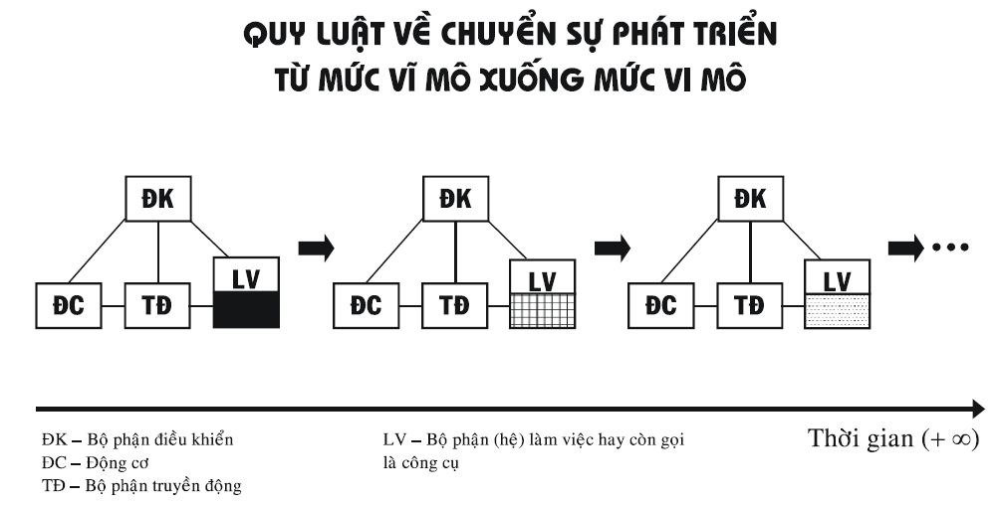
Hình 369: Minh họa quy luật về chuyển sự phát triển từ mức vĩ mô xuống mức vi mô
Người viết muốn lưu ý bạn đọc, Hình 369 mới minh họa tượng trưng quy luật về chuyển sự phát triển từ mức vĩ mô xuống mức vi mô của hệ (bộ phận) làm việc đối với hệ tự lập, chứ chưa phản ánh đầy đủ các cách chuyển từ hệ xuống hệ dưới, hệ dưới nữa… Do vậy, bạn đọc cần căn cứ vào hoàn cảnh, điều kiện và hệ cụ thể (kể cả các nguồn dự trữ có sẵn trong hệ) để ra quyết định xem, cách nào là tối ưu để chuyển sự phát triển từ mức vĩ mô xuống mức vi mô.
- Tương tự như các quy luật phát triển hệ thống khác, quy luật về chuyển sự phát triển từ mức vĩ mô xuống mức vi mô cũng đòi hỏi sự thỏa mãn yêu cầu kép:
- Chuyển sang các mức thang bậc dưới của hệ (bộ phận) làm việc để phát triển tính hệ thống của bộ phận làm việc và toàn hệ tự lập nói riêng, hệ thống nói chung.
- Các sáng tạo và đổi mới được chọn để giúp hệ phát triển theo quy luật về chuyển sự phát triển từ mức vĩ mô xuống mức vi mô phải tuân theo tiêu chuẩn quyết định tốt (xem mục nhỏ 10.5.1 Tiêu chuẩn của quyết định tốt: Nhìn theo quan điểm hệ thống phát triển bền vững của quyển ba).
- Áp dụng quy luật chuyển sự phát triển từ mức vĩ mô xuống mức vi mô vào thực tế, bạn cần, một mặt theo dõi hoạt động của bộ phận (hệ) làm việc, xem nó có đáp ứng đòi hỏi ngày càng tăng của nhu cầu thực tế không. Nếu không, bạn cần tìm cách cải tiến nó, mà một cách quan trọng là đưa nó chuyển xuống phát triển ở mức vi mô.
Mặt khác, bạn cần theo dõi các thông tin khoa học liên quan đến các hiệu ứng vi mô để có thể dùng chúng một cách có ý thức phát triển bộ phận (hệ) làm việc.
Không chú ý các lời khuyên trên, bạn sẽ phải giải các bài toán liên quan đến bộ phận (hệ) làm việc một cách thụ động và bỏ lỡ các cơ hội áp dụng những thành tựu của các khoa học nghiên cứu các hiện tượng thuộc thế giới vi mô.
MỘT SỐ THÍ DỤ MINH HỌA QUY LUẬT:
Thí dụ 1:
Thay vì chạy trên bánh xe, người ta sáng chế ra loại xe chạy trên đệm không khí hoặc đệm từ.
Thí dụ 2:
Thay vì sử dụng các loại dao cắt cơ học, người ta sử dụng tia nước mảnh (đường kính nhỏ) có trộn bột mài nhỏ, mịn, được nén dưới áp suất cao; tia plasma; tia laser.
Thí dụ 3:
Thay vì ghi âm và tái tạo âm thanh bằng các đường rãnh tạo bởi các dao động cơ học trực tiếp, người ta ghi âm bằng băng từ.
Thí dụ 4:
Thay vì cung cấp nhiệt cho thức ăn bằng củi, than, gas, người ta dùng bức xạ điện từ (lò vi ba).
Thí dụ 5:
Máy tính cơ học bị thay thế bằng máy tính điện, điện tử, quang điện tử.
Thí dụ 6:
Quá trình chuyển giao quyền tự chủ xuống các cấp dưới trong các tổ chức kinh tế, chính trị, xã hội.
Thí dụ 7:
Quá trình chuyển từ phong kiến, độc tài sang dân chủ, tôn trọng và bảo đảm quyền con người, quyền công dân.
Thí dụ 8:
Quá trình phi tập trung hóa, tư hữu hóa, cổ phần hóa.
Ngoài các thí dụ vừa trình bày, bạn nên đọc lại các thí dụ trong mục 11.2 Lời phát biểu, các thí dụ minh họa và một số nhận xét về các thủ thuật (nguyên tắc) sáng tạo cơ bản của quyển bốn. Trong đó, bạn sẽ tìm thêm được các thí dụ minh họa quy luật về chuyển sự phát triển từ mức vĩ mô xuống vi mô.
14.2.9 Quy luật về tính điều khiển của hệ thống
LỜI PHÁT BIỂU QUY LUẬT:
Hệ phát triển theo hướng tăng tính điều khiển và tăng sự ảnh hưởng lẫn nhau giữa các nguồn dự trữ có sẵn trong hệ (chất, năng lượng, thông tin và các tổ hợp của chúng) để tiến về phía tự điều khiển.
DIỄN GIẢI NỘI DUNG QUY LUẬT:
- Quy luật này đề cập sự điều khiển, do vậy, bạn nên đọc lại mục 7.2 Điều khiển học: Một số ý tưởng cơ bản chung nói riêng, và Chương 7: Điều khiển học: Điều khiển hành động và thế giới bên trong con người sáng tạo nói chung của quyển hai; các mục nhỏ 11.2.23 Nguyên tắc quan hệ phản hồi, 11.3.23 Nguyên tắc quan hệ phản hồi của quyển bốn.
Ở đây, người viết muốn lưu ý bạn đọc, từ “điều khiển” được dùng theo nghĩa rộng nhất. Nó bao gồm những nghĩa của những từ khác như quản lý, lãnh đạo, quản trị, dẫn dắt, kiểm soát… liên quan đến việc đưa hệ thống cho trước từ trạng thái này sang trạng thái khác… một cách tin cậy, với hiệu quả cao.
- Trong quá trình phát triển, xuất hiện nhu cầu cần điều khiển một hệ nào đó về một hoặc vài thông số nhất định. Hệ đó được gọi là hệ cần bị (hoặc được) điều khiển.
Ví dụ, xe đạp với một đĩa và một líp thích hợp với việc đi trên đường bằng. Khi leo dốc, người đi xe phải đạp rất vất vả, thậm chí không đạp nổi phải dắt xe đi bộ. Xuất hiện nhu cầu phải điều khiển xe để lực đạp xe khi leo dốc vừa sức với người đi xe. Người ta giải quyết bằng cách đưa ra loại xe có hai đĩa. Khi leo dốc, dây xích được điều khiển chuyển sang đĩa có bán kính nhỏ hơn. Tương tự như vậy, xe gắn máy, ôtô đều có những hộp số dùng để điều khiển lực kéo.
- Sau khi xuất hiện nhu cầu cần điều khiển hệ bị điều khiển, cách làm thông thường là thành lập hệ điều khiển thực hiện chức năng điều khiển hệ bị điều khiển. Có thể nói, đây là giai đoạn đầu tiên của sự phát triển theo quy luật về tính điều khiển của hệ thống. Lúc này quan hệ phản hồi giữa hệ điều khiển và hệ bị điều khiển được thiết lập.
Sự phát triển tiếp theo thể hiện trong những sáng tạo làm cho chức năng điều khiển của hệ điều khiển đối với hệ bị điều khiển càng ngày, càng tốt hơn (tính điều khiển tăng). Điều này có nghĩa, quan hệ phản hồi giữa hệ điều khiển và hệ bị điều khiển ngày càng được hoàn thiện.
Đỉnh cao sự phát triển theo quy luật về tính điều khiển của hệ thống, là hệ điều khiển biến mất, còn hệ bị điều khiển trở thành hệ tự điều khiển và các kết quả thu được tốt đẹp như khi vẫn còn hệ điều khiển. Để làm được điều đó, người ta phải tăng cường sử dụng các nguồn dự trữ có sẵn trong hệ (vật chất, năng lượng, thông tin và các tổ hợp của chúng), đặc biệt, các nguồn dự trữ không mất tiền, lập các mối liên kết mới giữa chúng, tái cấu trúc hệ thống để thiết lập quan hệ phản hồi ngay trong chính hệ thống, thực hiện việc hệ thống tự điều khiển.
Minh họa cho nội dung tóm tắt vừa trình bày của quy luật về tính điều khiển của hệ thống được thể hiện trên Hình 370.
- Tương tự như các quy luật phát triển hệ thống khác, quy luật về tính điều khiển của hệ thống cũng phải thỏa mãn yêu cầu kép:
- Từ chưa điều khiển đến điều khiển được, điều khiển ngày càng tốt hơn, rồi tự điều khiển, các sáng tạo và đổi mới đều nhằm phát triển tính hệ thống của toàn hệ cho trước, chứ không phải điều khiển là mục đích tự thân (điều khiển vị điều khiển).
- Các sáng tạo và đổi mới được chọn để giúp hệ phát triển theo quy luật về tính điều khiển của hệ thống phải tuân theo tiêu chuẩn quyết định tốt (xem mục nhỏ 10.5.1 Tiêu chuẩn của quyết định tốt: Nhìn theo quan điểm hệ thống phát triển bền vững của quyển ba).
- Điểm chung của các hệ thống điều khiển các loại là sự thiết lập quan hệ phản hồi. Tuy vậy, việc đưa ra giải pháp điều khiển phụ thuộc vào hệ cụ thể, các điều kiện, hoàn cảnh cụ thể, cần sử dụng các kiến thức, hiệu ứng chuyên môn cụ thể. Chưa kể, bản thân quan hệ phản hồi cũng có nhiều loại, chứ không phải một loại. Do vậy, bạn không nên hy vọng tìm ra giải pháp điều khiển chung cho mọi loại hệ cần điều khiển.
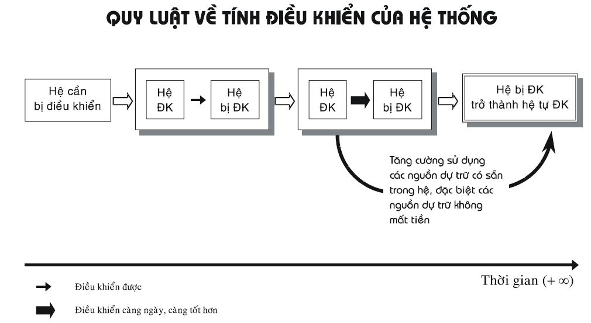
Hình 370: Minh họa quy luật về tính điều khiển của hệ thống
Các vấn đề liên quan đến quy luật về tính điều khiển của hệ thống nảy sinh khi nhu cầu thực tế đòi hỏi hệ phải điều khiển được hoặc cần tăng tính điều khiển mà hệ không đáp ứng được. Bạn phải giải các bài toán này một cách bị động.
Quy luật về tính điều khiển của hệ thống đòi hỏi bạn khi làm việc với hệ cho trước cần xem xét hệ cho trước đang ở thời kỳ nào:
- Nếu hệ cho trước chưa điều khiển được, bạn hãy nghĩ đến khả năng điều khiển nó.
- Nếu hệ cho trước đang được điều khiển, bạn hãy nghĩ cách hoàn thiện sự điều khiển đó. Hoặc,
- Nếu hệ cho trước đang được điều khiển, bạn hãy nghĩ cách biến nó thành hệ tự điều khiển.
Bằng cách như vậy, bạn chủ động đưa hệ phát triển theo quy luật về tính điều khiển của hệ thống.
- Bạn thử tưởng tượng mỗi người trong xã hội đều là người biết tự điều khiển chính mình. Chắc chắn, xã hội sẽ trở nên tốt đẹp hơn nhiều so với hiện nay.
MỘT SỐ THÍ DỤ MINH HỌA QUY LUẬT:
Thí dụ 1:
Điều khiển việc giữ lửa; tạo lửa.
Thí dụ 2:
Điều khiển việc chế tạo và sử dụng các công cụ lao động thủ công, vũ khí đơn giản như dao, búa, liềm, cày, bừa, giáo, mác, cung, tên.
Thí dụ 3:
Điều khiển để săn bắn thú rừng.
Thí dụ 4:
Điều khiển nhóm người (kể cả gia đình); bộ lạc;…
Thí dụ 5:
Điều khiển các công việc như trồng trọt, chăn nuôi, các nghề thủ công.
Thí dụ 6:
Điều khiển gia súc như là phương tiện dùng để đi lại, vận tải, kéo xe, kéo cày, bừa, chiến đấu.
Thí dụ 7:
Điều khiển việc chế tạo và sử dụng các loại máy móc (hiểu theo nghĩa rộng nhất) càng ngày càng phức tạp.
Thí dụ 8:
Điều khiển các tổ chức (hiểu theo nghĩa rộng nhất).
Thí dụ 9:
Điều khiển các chuyến bay thám hiểm vũ trụ.
Thí dụ 10:
Điều khiển các trận mưa.
Trên đây là một số thí dụ về những công việc, đối tượng đã được điều khiển khá tốt. Còn cần phải kể đến những công việc, đối tượng, mà người ta đang tìm cách điều khiển tốt như điều khiển chính bản thân mình; điều khiển khí hậu, thời tiết; điều khiển tư duy sáng tạo;…
Ngoài các thí dụ vừa trình bày, bạn nên đọc lại các thí dụ trong mục 11.2 Lời phát biểu, các thí dụ minh họa và một số nhận xét về các thủ thuật (nguyên tắc) sáng tạo cơ bản của quyển bốn. Trong đó, bạn sẽ tìm thấy các thí dụ minh họa cụ thể hơn quy luật về tính điều khiển của hệ thống.
14.2.10 Quy luật về sự phát triển theo đường cong hình chữ S
LỜI PHÁT BIỂU QUY LUẬT:
Sự phát triển của hệ thống hoạt động dựa trên nguyên lý/hệ khung nhất định diễn ra theo đường cong hình chữ S. Khi sự phát triển đó cạn, hệ bị thay thế bằng hệ hoạt động dựa trên nguyên lý/hệ khung khác, với đường cong hình chữ S khác có mức phát triển cao hơn…
DIỄN GIẢI NỘI DUNG QUY LUẬT:
- Như chúng ta đã biết (xem mục nhỏ 4.2.6 Các mức sáng tạo – các mức khó của bài toán của quyển một), bất kỳ hệ thống nào đều hoạt động dựa trên nguyên lý/hệ khung nhất định. Đấy là cơ chế hoạt động chủ đạo của hệ thống cho trước khác biệt cơ bản với các cơ chế hoạt động chủ đạo của các hệ thống khác, kể cả các hệ thống có cùng chức năng với hệ thống cho trước. Việc sáng chế ra được nguyên lý/hệ khung mới là sự hứa hẹn xuất hiện loại hệ thống mới trước đây chưa có. Những sáng chế loại này thường được xếp mức năm.
Ví dụ, cùng là phương tiện giao thông đường thủy, thuyền chèo tay có nguyên lý/hệ khung là sử dụng sức cơ bắp của con người; thuyền buồm – sử dụng sức gió; tàu thủy động cơ hơi nước – sử dụng năng lượng hơi nước ở nhiệt độ cao.
- Sau khi ra đời, hệ thống với nguyên lý/hệ khung mới được phát triển tiếp tục nhờ những sáng tạo và đổi mới vẫn nằm trong khuôn khổ của nguyên lý/hệ khung ban đầu.
Ví dụ, thuyền chèo tay được cải tiến như thay đổi vật liệu làm mái chèo, dạng hình học của mái chèo, tư thế chèo, số lượng người chèo…
Có thể lấy các chỉ số chính của hệ cho trước là các thông số phản ánh sự phát triển của hệ và theo dõi sự thay đổi các chỉ số đó theo thời gian. Chẳng hạn, đối với thuyền chèo tay, có thể lấy thông số “tốc độ” phản ánh sự phát triển làm chỉ số chính của hệ. Tương tự như vậy, cũng có thể lấy thông số “tốc độ” đối với thuyền buồm và tàu thủy động cơ hơi nước. Người ta thu được đường cong phản ánh sự phát triển theo thời gian như trên Hình 371:
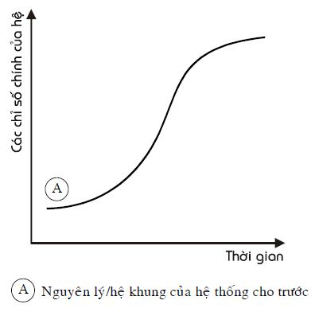
Hình 371: Đường cong phát triển hình chữ S (đường cong cuộc đời) của hệ thống hoạt động dựa trên nguyên lý/hệ khung Ⓐ
Đường cong trên Hình 371 có các đặc điểm sau:
- Nó có hình dạng giống chữ S, nên người ta gọi nó là đường cong hình chữ S hay gọi tắt là đường cong S (S-curve).
- Các nguyên lý/hệ khung khác nhau có các đường cong phát triển khác nhau về kích thước, nhưng xét về mặt hình dạng, chúng đều có hình dạng chữ S.
- Đường cong hình chữ S cho thấy sự phát triển trong khuôn khổ của nguyên lý/hệ khung nhất định không phải là đường thẳng kéo dài vô tận mà là hình chữ S. Điều này có nghĩa, bạn không thể phát triển hệ cho trước mãi mãi dựa trên nguyên lý/hệ khung đang có và bất kỳ nguyên lý/hệ khung cụ thể nào đều có giới hạn kết thúc sự phát triển của nó. Do vậy, người ta còn gọi đấy là đường cong cuộc đời của hệ thống.
Quy luật về sự phát triển theo đường cong hình chữ S chỉ tiếp rằng: “Khi sự phát triển đó (dựa trên nguyên lý/hệ khung đang có) cạn, hệ bị thay thế bằng hệ hoạt động dựa trên nguyên lý/hệ khung khác, với đường cong hình chữ S khác có mức phát triển cao hơn…”. Ba chấm (…) có nghĩa, sự thay thế các đường cong hình chữ S, mà thực chất là thay thế (dịch chuyển) các nguyên lý/hệ khung lại diễn ra tiếp tục để có thể có được các mức phát triển cao hơn nữa.
Nội dung của quy luật về sự phát triển theo đường cong hình chữ S được minh họa trên Hình 372.
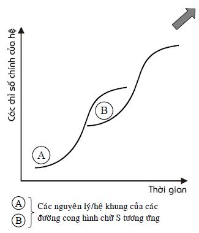
Hình 372: Minh họa quy luật về sự phát triển theo đường cong hình chữ S
- Các hệ khác nhau có những đường cong cuộc đời hình chữ S với những kích thước khác nhau. Tuy vậy, do có cùng hình dạng chữ S, trên bất kỳ đường cong hình chữ S nào, người ta luôn có thể tách ra được những đoạn mang tính đặc trưng (xem Hình 373):
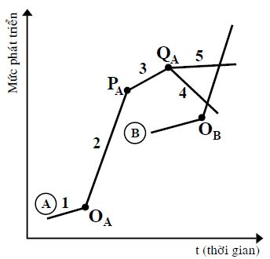
Hình 373: Các giai đoạn của cuộc đời hệ thống phát triển dựa trên nguyên lý/hệ khung nhất định
Thời “thơ ấu” (đoạn 1) của hệ hoạt động dựa trên nguyên lý/hệ khung Ⓐ (người viết sẽ gọi tắt là hệ Ⓐ) cho thấy hệ phát triển chậm. Đây là giai đoạn ra đời nguyên lý/hệ khung Ⓐ và hệ Ⓐ được nghiên cứu, phát triển, thử nghiệm trong phòng thí nghiệm. Các công nghệ sử dụng trong giai đoạn này được gọi là các công nghệ sáng chế ra sản phẩm mới về mặt nguyên lý/hệ khung.
Sau đó là giai đoạn “trưởng thành” (đoạn 2) – hệ Ⓐ bắt đầu được đưa ra sản xuất, bán, sử dụng đại trà và được hoàn thiện một cách nhanh chóng nhờ những cải tiến tiếp tục. Các công nghệ sử dụng trong giai đoạn này được gọi là các công nghệ sản xuất sản phẩm mới. Điểm OA đánh dấu hệ Ⓐ thoát khỏi phòng thí nghiệm, đi vào sản xuất với quy mô công nghiệp và được tung ra thị trường với tư cách là thành phẩm mới. Người ta tiếp tục thực hiện các sáng tạo và đổi mới để phát triển hệ Ⓐ.
Đến một lúc nào đó, hệ phát triển chậm lại (đoạn 3) – hệ bắt đầu “già” đi. Hệ phát triển chậm hơn so với đoạn 2, tính từ điểm PA, bởi vì hệ đang tiến gần tới giới hạn của sự phát triển dựa trên nguyên lý/hệ khung Ⓐ. Mức phát triển có giới hạn cao nhất không vượt qua được của nguyên lý/hệ khung Ⓐ là điểm QA.
Tiếp theo, xuất hiện hai khả năng (sau điểm QA): Hệ Ⓐ hoặc thoái hóa và bị thay thế hẳn bởi hệ Ⓑ (thí dụ thuyền buồm không có được vận tốc như trước và phương tiện giao thông đường thủy hiện nay chủ yếu dùng tàu thủy có động cơ) – đoạn 4; hoặc hầu như giữ nguyên các chỉ số phát triển mà không có tiến bộ thêm nào đáng kể và vẫn tiếp tục tồn tại – đoạn 5 (thí dụ, xe đạp suốt hơn nửa thế kỷ qua không có gì thay đổi lớn về nguyên tắc).
- Nghiên cứu đường cong cuộc đời thực tế của các hệ khác nhau cho thấy, chúng khác với các đường cong phát triển, được dự đoán bằng lý thuyết mang tính lý tưởng (xem Hình 374). Sự tương quan giữa các đoạn trên đồ thị phụ thuộc những yếu tố nào? Nói cách khác, vị trí của các điểm O, P, Q được xác định bởi cái gì?
Về mặt lý thuyết phát triển bền vững cần có, trong khi đường A’ tiến đến mức 1A, là mức phát hiện hệ Ⓐ bắt đầu có những tác động xấu đến các hệ khác và môi trường, thì có ai đó phải phát triển hệ Ⓑ sao cho điểm O’B trùng với điểm P’A của đường cong A’. Có như vậy mới bảo đảm được sự phát triển liên tục và không tạo ra các vấn đề đối với các hệ khác và với môi trường.
Trên thực tế, điểm O”A (bắt đầu áp dụng đại trà) xảy ra chậm hơn và ở mức phát triển thấp hơn lý thuyết (điểm O’A).
Thời kỳ phát triển nhanh của hệ lẽ ra phải kết thúc tại 1A (điểm P’A), là lúc nguyên lý/hệ khung Ⓐ, trên cơ sở đó xây dựng hệ thống, đã được khai thác hết ích lợi và bắt đầu phát hiện ra sự bất lợi về mặt kinh tế–xã hội nếu tiếp tục phát triển hệ Ⓐ. Bởi vì hệ Ⓐ ảnh hưởng xấu đến các hệ khác và môi trường.
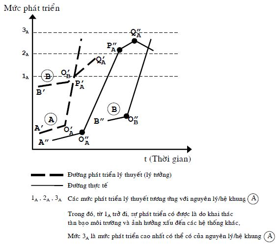
Hình 374: Sự tương quan giữa phát triển lý tưởng (lý thuyết) và phát triển thực tế
Điểm P”A thực tế luôn luôn cao hơn P’A lý tưởng. Khi đường A” đạt đến mức 1A thì có nhiều người, vì các lợi ích cục bộ, vẫn quan tâm đến việc tiếp tục phát triển hệ Ⓐ. Họ có những đòi hỏi về quyền lợi như tài chính, danh vọng, cơ hội khoa học (giả khoa học) và có những nguyên nhân thuần túy về tâm lý của cả những người đầu tư phát triển hệ Ⓐ và những người sử dụng hệ Ⓐ. Hệ thống vẫn được đầu tư và tiếp tục đem lại lợi nhuận, ích lợi cho những người quan tâm cho đến trên mức 2, làm thiệt hại các hệ khác và môi trường. Ở đây, người ta hành động theo kiểu: Bây giờ cái đó có lợi cho tôi, còn lại thì mặc kệ nó, bất chấp hậu quả.
Thí dụ, người ta càng ngày càng đóng lớn các tàu chở dầu mặc dù đã có nhiều tai họa về sinh thái, môi trường do dầu tràn ra biển.
Cuối cùng, hệ thực tế đạt được đến mức phát triển cao nhất là gần mức 3A (điểm Q”A), được xác định bởi các giới hạn khách quan của chính nguyên lý/hệ khung Ⓐ, không thể vượt qua.
Trên thực tế, đường B” bắt đầu phát triển thấy rõ khi và chỉ khi A” đã cao hơn mức 2A và đến gần mức 3A (thí dụ, việc nghiên cứu, chế tạo loại ôtô mới thay thế ôtô gây ô nhiễm môi trường). Còn B” phát triển nhanh chỉ sau khi đường cong A” đã đi qua điểm Q”A và bắt đầu đi xuống (hệ Ⓐ bắt đầu chịu đầu hàng trước hệ Ⓑ sẽ thay thế nó). Như vậy, phần đường cong từ mức 1A trở lên của A” không cho sự phát triển bền vững vì nó tạo ra các vấn đề đối với các hệ khác và với môi trường.
- Dưới đây người viết trình bày sự tương quan giữa đường cong cuộc đời (đường cong S) và các thông số khác như số lượng các sáng tạo, mức sáng tạo và ích lợi, lợi nhuận của một sáng tạo đem lại (xem Hình 375).
Hình 375a là đường cong cuộc đời (đường cong S) của hệ với các điểm O, P, Q đặc trưng.
Hình 375b là số lượng các sáng tạo và đổi mới được áp dụng để phát triển hệ đó. Đường cong này có hai cực đại. Tùy theo hệ cụ thể, cực đại thứ nhất có thể cao hơn cực đại thứ hai hoặc ngược lại, cực đại thứ nhất thấp hơn cực đại thứ hai. Cực đại thứ nhất ứng với điểm O: Số lượng các sáng tạo tăng lên trong giai đoạn hệ chuyển từ nghiên cứu, phát triển, thử nghiệm trong phòng thí nghiệm sang sản xuất đại trà và sử dụng rộng rãi. Điều này có thể hiểu được vì, trước đó người ta đã đầu tư rất nhiều vào hệ, nay nhìn thấy khả năng có thể biến hệ thành thương phẩm để hoàn vốn và có lãi, người ta cố gắng rút ngắn thời gian của giai đoạn này bằng cách tăng số lượng các sáng tạo, tạo nên cực đại thứ nhất.
Cực đại thứ hai ở gần điểm Q. Lúc này, một mặt, hệ tiến gần đến giới hạn phát triển của nguyên lý/hệ khung cho trước nhưng nhiều người không biết điều ấy. Mặt khác, hệ hoạt động dựa trên nguyên lý/hệ khung mới ra đời và trở thành mối đe dọa đối với hệ hoạt động dựa trên nguyên lý/hệ khung cũ. Trong khi đó, những người có quyền lợi đối với hệ cũ vẫn muốn hệ cũ tồn tại và cạnh tranh với hệ mới. Họ thể hiện các nỗ lực của mình bằng cách tăng số lượng các sáng tạo, tạo nên cực đại thứ hai. Có nhà nghiên cứu cho rằng, cực đại thứ hai phản ánh sự giãy chết của hệ đã trở nên lạc hậu trước khi bị thay thế bởi hệ khác có nguyên lý/hệ khung tiên tiến hơn.
Sự thay đổi mức sáng tạo được minh họa trên Hình 375c. Những sáng tạo đầu tiên, đặt nền móng cho nguyên lý/hệ khung của hệ luôn là những sáng tạo ở mức cao. Dần dần, mức sáng tạo giảm đi. Cực đại trên Hình 375c (ở gần điểm O) ứng với những sáng tạo, bảo đảm cho hệ thống nhanh chóng chuyển từ giai đoạn phòng thí nghiệm sang giai đoạn sản xuất và áp dụng đại trà. Tuy vậy, cực đại này vẫn ở mức sáng tạo thấp hơn so với những sáng tạo đầu tiên. Sau cực đại này là sự đi xuống: Mức sáng tạo giảm liên tục, dần đến không. Trong khi đó, bắt đầu xuất hiện những sáng tạo mức cao, liên quan đến hệ mới Ⓑ.
Cuối cùng Hình 375d cho biết hiệu quả trung bình (ích lợi, tiết kiệm, lợi nhuận) của một sáng tạo. Những sáng tạo đầu tiên, mặc dù chúng ở những mức cao nhưng
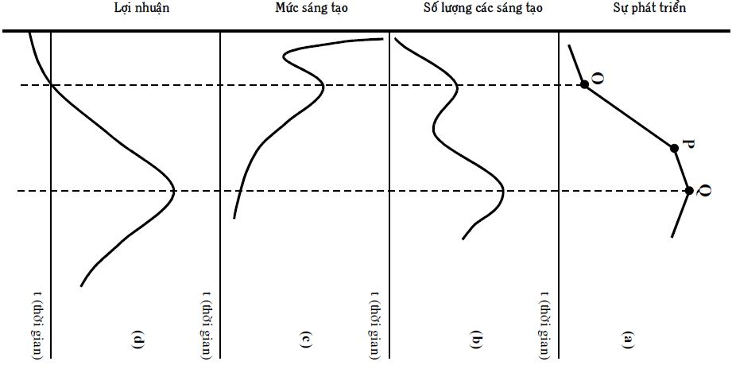
Hình 375: Sự tương quan giữa đường cong hình chữ S và các đại lượng như số lượng các sáng tạo, mức sáng tạo và lợi nhuận
chưa đem lại ích lợi, lợi nhuận: Hệ mới tồn tại trên giấy dưới dạng các sơ đồ, hình vẽ hoặc mới có vài mẫu chế thử còn chứa nhiều nhược điểm nhỏ. Giai đoạn đầu (trước điểm O) cần đầu tư, nên lợi nhuận có giá trị âm. Đây chính là giai đoạn nghiên cứu, phát triển, thử nghiệm trong quy mô phòng thí nghiệm. Ích lợi, lợi nhuận bắt đầu xuất hiện khi hệ được sử dụng rộng rãi (các thành phẩm bán được sau điểm O). Ở giai đoạn này, ngay một sự hoàn thiện không lớn (mức sáng tạo thấp) cũng đem lại lợi nhuận cao và do đó, tác giả sáng tạo cũng được thưởng nhiều hơn. Lợi nhuận cao nhất đạt được vào lúc hệ đã đến giới hạn của sự phát triển dựa trên nguyên lý/hệ khung cho trước (điểm Q).
Nhà sáng tạo phải biết những đặc điểm đường cong cuộc đời (đường cong S) của hệ thống. Điều này cần thiết để trả lời câu hỏi rất quan trọng trong hoạt động sáng tạo: “Liệu cần phải giải bài toán cho trước để phát triển hệ có trong bài toán đó hay cần đưa ra và giải bài toán khác để thay thế hệ đang có bằng hệ mới về mặt nguyên lý/hệ khung?”.
Ở đây, ngoài các yếu tố khách quan có tính quy luật của sự phát triển hệ thống còn có nhu cầu, động cơ của người giải như nhu cầu sáng tạo, tiền bạc, danh vọng… Trong nhiều trường hợp việc lựa chọn bài toán còn phụ thuộc vào những tiêu chuẩn đạo đức, không còn đơn thuần là kinh tế–kỹ thuật.
Ví dụ, khi hệ vượt quá mức phát triển 1A (xem Hình 374, đường thực tế A”) hệ bắt đầu tác động xấu đến các hệ khác và môi trường… Bạn sẽ tiếp tục phát triển hệ Ⓐ hay giải bài toán khác: Nguyên lý/hệ khung nào sẽ thay thế nguyên lý/hệ khung Ⓐ? Cần làm những gì và như thế nào để phát triển nguyên lý/hệ khung Ⓑ sẽ thay thế nguyên lý/hệ khung Ⓐ? Bạn có thể hình dung được bạn sẽ bị chống đối mạnh như thế nào không? Bạn sẽ đối phó với những chống đối đó như thế nào?
Lịch sử cho thấy không ít tài năng bị vùi dập, thậm chí mất mạng bởi sự chống đối của những thế lực ủng hộ hệ nguyên lý/hệ khung cũ.
- Tương tự như các quy luật phát triển hệ thống khác, quy luật về sự phát triển theo đường cong hình chữ S cũng đòi hỏi thỏa mãn yêu cầu kép:
- Phát triển trong khuôn khổ nguyên lý/hệ khung đang có và chuyển sang nguyên lý/hệ khung khác phải phát triển tính hệ thống của hệ.
- Các sáng tạo và đổi mới được chọn để giúp hệ phát triển theo quy luật về sự phát triển theo đường cong hình chữ S phải tuân theo tiêu chuẩn quyết định tốt (xem mục nhỏ 10.5.1 Tiêu chuẩn của quyết định tốt: Nhìn theo quan điểm hệ thống phát triển bền vững của quyển ba).
Hiện nay chúng ta đang sống chung với sự phát triển theo “đường thực tế” (xem Hình 374 và phần văn bản liên quan trong mục nhỏ này) và phải trả giá cho sự phát triển khi hệ Ⓐ đi từ mức 1A đến 3A. Với thời gian, sự trả giá này càng ngày, càng lớn, quy mô càng ngày, càng rộng, trở thành các vấn đề toàn cầu như ô nhiễm môi trường, Trái Đất nóng lên, nghèo đói, bệnh tật… Hy vọng rằng, sau những lần trả giá, số lượng người liên quan hiểu sự trả giá một cách xúc cảm càng ngày, càng đông, tạo ra sự đòi hỏi của xã hội đối với những người có trách nhiệm: Phải chuyển sự phát triển theo “đường thực tế” thành sự phát triển theo “đường lý tưởng” (còn mang tính lý thuyết hiện nay) để có được sự phát triển thực sự bền vững.
Áp dụng quy luật về sự phát triển theo đường cong hình chữ S vào thực tế, bạn cần xác định: Hệ cho trước đang phát triển dựa trên nguyên lý/hệ khung nào?; Đánh giá xem hệ cho trước đang nằm trên đoạn nào của đường cong hình chữ S?; Dự báo xem nguyên lý/hệ khung nào sẽ thay thế nguyên lý/hệ khung hiện nay?; Cần chuẩn bị những gì để hệ cho trước có thể chuyển sang phát triển dựa trên nguyên lý/hệ khung mới một cách tốt đẹp?
Để trả lời những câu hỏi nói trên, ngoài việc hiểu biết tốt hệ cho trước, bạn cần theo dõi các thông tin, kiến thức khoa học–kỹ thuật, liên quan đến việc phát minh các hiệu ứng khoa học mới và sáng chế ra những nguyên lý/hệ khung kỹ thuật, công nghệ mới trên phạm vi toàn thế giới.
Không chú ý các lời khuyên trên, bạn sẽ phải giải các bài toán liên quan đến việc vi phạm quy luật về sự phát triển theo đường cong hình chữ S một cách bị động, thậm chí, bạn đang là người đi trước những người khác bỗng trở thành người đi sau, thậm chí, phá sản. Bởi vì, nguyên lý/hệ khung của bạn dùng để phát triển trong quá khứ, tuy mang cho bạn nhiều thành công hơn những người khác, nay đã trở nên lạc hậu (ở mức phát triển thấp hơn) so với nguyên lý/hệ khung mới, mà những người khác chuyển sang một cách kịp thời và hiệu quả.
- Quy luật về sự phát triển theo đường cong hình chữ S mở ra cơ hội đi tắt, đón đầu, đổi ngôi cho những người dự báo chính xác đường cong hình chữ S mới, biết chuyển sang đường cong hình chữ S mới một cách kịp thời và hiệu quả.
MỘT SỐ THÍ DỤ MINH HỌA QUY LUẬT:
Thí dụ 1:
Các công cụ lao động, vũ khí, đồ dùng, đồ trang sức khởi đầu được làm từ đá (thời kỳ đồ đá), sau chuyển sang các vật liệu khác như đồng, sắt,… đến những loại vật liệu ngày càng hiện đại như bán dẫn hữu cơ, nano, vật liệu sinh học…
Thí dụ 2:
Thuyền chèo tay bị thay thế bởi thuyền buồm; thuyền buồm bị thay thế bởi tàu thủy động cơ hơi nước…
Những chiếc tàu thủy động cơ hơi nước đầu tiên ra đời vào thế kỷ 19, giữa lúc các hạm đội hải quân và các đội thương thuyền của các nước vẫn sử dụng thuyền buồm một cách phổ biến. Với thời gian, hệ thuyền buồm cảm thấy áp lực ngày càng tăng từ hệ hoạt động dựa trên nguyên lý/hệ khung mới (hệ tàu thủy động cơ hơi nước).
Để cố gắng tiếp tục tồn tại và giữ được vị trí của mình, những công ty chế tạo thuyền buồm thực hiện nhiều cải tiến, mà không biết rằng nguyên lý/hệ khung của thuyền buồm đã tới sát giới hạn của sự phát triển dựa trên nguyên lý/hệ khung đó. Kết quả, những cải tiến trở nên vô ích: Thuyền buồm phải nhường chỗ cho tàu thủy động cơ hơi nước và các công ty sản xuất thuyền buồm phải trả giá, thậm chí, phá sản.
Ví dụ, năm 1902 người ta cho hạ thủy chiếc thuyền buồm Thomas W. Lawson khổng lồ có tới bảy cột buồm. Thuyền buồm này được thiết kế để chống lại các tàu thủy động cơ hơi nước đang chiếm thị phần ngày càng lớn trong lĩnh vực vận chuyển hàng hóa. Thuyền được chế tạo và sản xuất bởi các công ty Fall River Ship và Engine Building Company. Thuyền buồm Thomas Lawson có thể chạy với tốc độ 22 hải lý nếu gió thuận. Tuy nhiên, tốc độ nhanh làm thuyền trở nên kém linh hoạt, khó điều khiển và độ ổn định giảm, dễ đổ.
Rạng sáng thứ sáu, ngày 13 tháng 12 năm 1907, con thuyền Thomas Lawson gặp tai nạn, gây ra bởi chính các nhược điểm thiết kế và chìm trong eo biển Măngsơ (English Channel). Trừ thuyền trưởng và một thủy thủ, tất cả mọi người còn lại đều chết.
Sau Thomas Lawson, không còn ai thiết kế thuyền buồm chở hàng chạy nhanh nữa. Các nhà chế tạo, sản xuất, các công nhân của các công ty đóng thuyền buồm phải kiếm việc làm khác. Thời kỳ của các đội thương thuyền sử dụng thuyền buồm chấm dứt cùng với Thomas Lawson, tàu thủy máy hơi nước bắt đầu chiếm lĩnh mặt biển (Theo R. Foster).
Thí dụ 3:
Vào tháng 5 năm 1971, Cơ quan National Cash Register ở Dayton, bang Ohio đã làm bàng hoàng các nhân viên, các nhà quản lý, các nhà đầu tư của mình bằng tuyên bố: Những giấy tờ có giá trị 140 triệu đôla tiền mặt không thể bán được và phải bỏ. Những tháng sau đó, hàng ngàn công nhân và các cán bộ quản lý bị mất việc. Giá cổ phiếu tụt giảm từ 45 xuống còn 14 trong suốt bốn năm liền.
Chuyện gì đã xảy ra?
Vấn đề ở chỗ, các máy móc sử dụng các chi tiết điện–cơ không thể cạnh tranh được với các máy móc điện tử (nguyên lý/hệ khung mới) có giá thành rẻ hơn và dễ sử dụng hơn. (Theo R. Foster).
Thí dụ 4:
Điện tử sử dụng bóng đèn chân không (vacuum tubes) bị thay thế bằng điện tử sử dụng các bóng bán dẫn (transistors), hay còn gọi là điện tử chất rắn (solid state electronics).
Khi xuất hiện các bóng bán dẫn đầu tiên ở Mỹ, các công ty sản xuất bóng đèn chân không như National Video, Rawland, Eimac and Lansdale Tube quyết định không đầu tư vào công nghệ mới, dẫn đến phá sản. Các công ty Hughes, Transitron and Clevite tuy quyết định đầu tư vào công nghệ mới nhưng chọn chất bán dẫn lầm: Thay vì Silicium (Si) họ lại chọn Germanium (Ge) nên thất bại.
Trong số các nhà sản xuất bóng đèn chân không thành công trong những năm 1950, chỉ RCA và Philips chuyển đổi thành công sang công nghệ các chất bán dẫn (semiconductors).
Trong khi đó, các công ty Nhật như NEC, Fujitsu, Toshiba, Hitachi chuyển đổi sang công nghệ mới (bán dẫn) nhanh hơn, do vậy, tạo được ưu việt trong cạnh tranh với các công ty Mỹ. (Theo G. Pearson).
Thí dụ 5:
Sự phát triển của giao thông vận tải đường không: Khinh khí cầu → Máy bay cánh quạt → Máy bay phản lực.
Thí dụ 6:
Sự phát triển của phương tiện thắp sáng: Nến → Đèn dầu hỏa → Bóng đèn điện dây tóc → Đèn huỳnh quang.
Thí dụ 7:
Sự phát triển của máy tính: Máy tính cơ học → Máy tính điện → Máy tính điện tử → Máy tính quang điện tử.
Thí dụ 8:
TiVi đèn hình → TiVi plasma → TiVi tinh thể lỏng (LCD) → TiVi dùng điôt phát quang (LED).
Thí dụ 9:
Từ truyền thông tin hữu tuyến chuyển sang truyền thông tin vô tuyến (không dây).
Thí dụ 10:
Từ thư thường sang thư điện tử.
Thí dụ 11:
Kinh tế tự cấp tự túc → Kinh tế sản xuất hàng hóa, thị trường.
Thí dụ 12:
Sự thay đổi các hình thức xã hội: Cộng sản nguyên thủy → Phong kiến → Tư bản.
Chế độ độc tài → Chế độ cộng hòa, dân chủ.
Ngoài các thí dụ nêu ở trên, bạn nên đọc lại các thí dụ trong mục 11.2 Lời phát biểu, các thí dụ minh họa và một số nhận xét về các thủ thuật (nguyên tắc) sáng tạo cơ bản của quyển bốn. Trong đó, bạn sẽ tìm thêm được các thí dụ minh họa quy luật về sự phát triển theo đường cong hình chữ S.
14.2.11 Một số thí dụ về việc không tuân thủ các quy luật phát triển hệ thống
Trong các mục nhỏ trước, khi trình bày lần lượt từng quy luật phát triển hệ thống, người viết đã dẫn ra nhiều thí dụ minh họa. Các thí dụ này, chủ yếu, cho thấy: Các hệ thống phát triển theo các quy luật phát triển hệ thống đều thành công.
Trong mục nhỏ này, người viết, chủ yếu, dẫn ra các “phản thí dụ” và các nhận xét, hiểu theo nghĩa, nếu không tuân theo các quy luật phát triển hệ thống, thì hệ thống có thể hoạt động lãng phí, trả giá, làm nảy sinh các vấn đề, có thể tụt hậu, suy thoái như thế nào.
Các phản thí dụ có thật này được người viết sưu tầm từ các báo trong một thời gian khá dài. Có những phản thí dụ đã có cách đây gần 20 năm nhưng người viết vẫn dẫn ra, vì những lý do sau:
- Để các bạn trẻ biết, những câu chuyện như thế đã từng xảy ra.
- Cần học, rút kinh nghiệm từ quá khứ.
- Hình như những thí dụ loại này và các biến tướng của chúng không cũ. Chúng vẫn dai dẳng tồn tại chỗ này, chỗ khác cho đến nay và còn tiếp tục.
Thí dụ 1:
“Phan Ngọc Hiển là con đường hai chiều thuộc dạng đẹp nhất nhì thành phố Cà Mau. Nơi đây, công sở tọa lạc rất nhiều, nhà cao tầng thi nhau mọc lên làm trung tâm tỉnh lỵ thêm sầm uất. Thế nhưng trên con đường này đang tồn tại tình trạng “loạn” số nhà và hầu hết rơi vào các công sở. Đơn cử: Phân xã Cà Mau mang số 777, ngay kế bên Sở VH-TT lại có số 999D, cách đó không xa Phòng CSGT đường bộ nhảy qua số 444, Nhà thiếu nhi tỉnh gần đó mang số 333, kề bên Báo Cà Mau 333B, Cục Hải quan 333A. bên kia trục đường, các công sở khác cũng không kém cạnh: Sở LĐ-TB-XH 555A, TAND tỉnh 222A… Vì sao có tình trạng “loạn” số nhà với toàn số đẹp rơi vào công sở, không chỉ đường Phan Ngọc Hiển mà cả đường Trần Hưng Đạo?
Bàn về “số đẹp” của cơ quan mình – Giám đốc Sở VH-TT Phạm Bạch Đằng cho biết, khi ông về nhận nhiệm vụ thì cơ quan đã sở hữu dãy số 999D Phan Ngọc Hiển từ khá lâu rồi. Ai cấp, vì sao có số đó là những vấn đề mà ông đang quan tâm tìm hiểu. Ông băn khoăn: “Không biết Sở xây dựng và UBND thành phố Cà Mau quản lý thế nào mà để xảy ra tình trạng này. Công sở có số nhà đẹp như thế là không ổn. Số nhà công “đẹp” giống như chọn số xe coi kỳ quá. Người dân sẽ nghĩ sao về chuyện tùy tiện này”.
Phó chủ tịch UBDN tỉnh Cà Mau Dương Tiến Dũng cho hay tỉnh đã giao Sở xây dựng sớm triển khai việc chấn chỉnh lại số nhà. “Tôi không hiểu vì sao có những công sở mang số đẹp này? Trật tự số nhà phải sớm được lập lại. Tỉnh cương quyết không chấp nhận việc các công sở tự tiện đặt cho mình số đẹp, tự chia nhau số đẹp theo kiểu 333, 333A, 333B một cách vô tội vạ như thế” – ông Dũng khẳng định. Trao đổi nhanh với PV Thanh Niên, ông Nguyễn Việt Hùng, giám đốc Sở xây dựng cho hay cơ quan ông đang chuẩn bị triển khai việc chỉnh sửa lại số nhà trên địa bàn tỉnh lỵ. “Tất cả phải tuân thủ theo quy định chung. Những công sở tự tiện đặt cho mình số đẹp thì phải sửa lại hết! Ai cũng ham số đẹp thì chắc chắn sẽ xảy ra tình trạng “loạn số nhà”.
Hiện tượng quan chức chạy công xa biển số đẹp, ở trụ sở có biển số đẹp không chỉ xảy ra ở Cà Mau. Cái sự “sính đẹp” này nếu cứ bùng phát tùy tiện thì mọi trật tự sẽ bị đảo lộn. Đã đến lúc, các quan chức lẫn cơ quan công quyền thể hiện chuyện “nêu gương” trong việc xóa các số đẹp kỳ quái này.”
(Bài “Loạn” số nhà đẹp ở các công sở Cà Mau” của Quang Minh Nhật, báo Thanh Niên, ra ngày 13/11/2006)
14.2.11.1 NHẬN XÉT:
- Cách đánh số nhà theo kiểu “các công sở phải có số nhà đẹp” đã vi phạm quy luật về tính tương hợp của hệ thống một cách nghiêm trọng:
- Không tương hợp với cách đánh số nhà truyền thống được dùng ở các thị trấn, thị xã, thành phố khác của nước ta và phổ biến ở trên thế giới suốt nhiều thế kỷ qua.
- Các số đẹp “tương hợp” với sự mê tín của các quan chức lãnh đạo các công sở nhưng không tương hợp với tính hệ thống của toàn bộ hệ thống là thành phố Cà Mau, rồi còn hệ trên, hệ trên nữa… cùng với các nghị định, thông tư, quy định liên quan về quản lý đô thị. Điều này vi phạm yêu cầu kép: Tương hợp để phát triển tính hệ thống và quyết định phải tốt hết với tất cả các hệ (tiêu chuẩn quyết định tốt).
- Không tương hợp trong tương tác với người dân và những đối tác không có số đẹp: Các công sở có số đẹp dường như có đặc quyền, đặc lợi.
- ……
- Qua thí dụ này còn có thể thấy:
- Quản lý kém (vi phạm quy luật về tính điều khiển của hệ thống) mới có thể cho ra quyết định đánh loạn số nhà và để tình trạng các công sở có số nhà đẹp tồn tại lâu như vậy.
- Không có sự tương hợp giữa chức vụ và tinh thần trách nhiệm, trình độ, cái tâm của các quan chức liên quan đến việc ra quyết định nói trên.
- Các hậu quả có thể nảy sinh:
- Việc tìm đúng địa chỉ của các số nhà đẹp trở nên khó khăn, tốn nhiều thời gian, gây ách tắc (vi phạm quy luật về tính thông suốt của hệ thống) đối với người dân nói chung, khi cần phải đến những công sở đó.
- Góp phần làm suy giảm lòng tin của nhân dân đối với các cấp quản lý liên quan của chính quyền địa phương.
- Gây ngạc nhiên, lạ lùng, khó hiểu cho những người biết chuyện.
- Vì tò mò, có thể có thêm nhiều khách du lịch đến tham quan thành phố Cà Mau.
Thí dụ 2:
“Đã gần 3 năm nay, người dân ở ấp Long Phú, xã Phước Thái, huyện Long Thành rất bức xúc về việc một ngôi chợ mới không được đưa vào sử dụng vì nó được thiết kế không hợp lý, khiến ngôi chợ phải bỏ hoang. Vào năm 2005, do chợ Long Phú (chợ cũ) xuống cấp và chật hẹp, nằm ngay cạnh Quốc lộ 51 làm cho tình hình giao thông và việc ra vào chợ của người dân gặp nhiều khó khăn. UBND huyện Long Thành đã quyết định cho đầu tư xây dựng một ngôi chợ mới cũng có tên “Long Phú” nằm cách đó khoảng vài trăm mét, có khoảng không gian thoáng hơn. Khi ngôi chợ chính thức được khởi công, người dân địa phương đã vô cùng phấn khởi sắp có một ngôi chợ mới khang trang ở địa phương mình, có người không hết lời khen ngợi bởi chính quyền đã quan tâm sâu sát đến đời sống của người dân. Các tiểu thương buôn bán cũng hy vọng được kinh doanh trong một ngôi chợ sạch đẹp, không phải ngồi ọp ẹp ở ngôi chợ bầy hầy kia nữa.
Thế nhưng ngôi chợ xây xong đã gần 3 năm, đến nay vẫn chưa đưa vào sử dụng bởi nó được thiết kế chỉ thích hợp cho bán… rau và cá. Chợ có nhà lồng rất khang trang, diện tích hơn 1.000 m², thế nhưng các sạp chỉ thiết kế có một kiểu là đúc những tấm bêtông phẳng lì tạo thành một mặt phẳng rộng khắp bằng với mái nhà lồng. Một tiểu thương bức xúc: “Chợ gì mà xây không có cái cửa, cái ô để bà con còn chứa hàng, đã là chợ thì phải được bày bán nhiều thứ chứ không thể chỉ bán rau và cá, xây kiểu đó thì ai mà dám vào đó kinh doanh”.
Sau khi nhận được phản ánh của người dân, chúng tôi thật sự bức xúc cho kiểu làm cẩu thả này, hiện ngôi chợ đã bỏ hoang không người trông giữ, các bóng đèn, dây điện, nhà vệ sinh bị trẻ em vào đập phá hư hỏng nhiều thứ. Chi ra gần 3 tỷ đồng xây một công trình để rồi có nguy cơ phải đập bỏ vì không thể nào sử dụng được. Trong khi đó, người dân vẫn phải tiếp tục chịu cực khổ chen chúc nhau ở ngôi chợ cũ ọp ẹp bên lề đường. Không biết lãnh đạo tỉnh Đồng Nai có biết hay không về việc làm cẩu thả gây lãng phí ngân sách nhà nước ở ngôi chợ này?”
(Bài “Xây chợ gần 3 tỷ đồng rồi… đập bỏ” của Minh Thắng, báo Công An Tp.HCM, ra ngày 12/4/2008).
14.2.11.2 NHẬN XÉT:
Thiết kế không tương hợp thể hiện ở chỗ, các sạp chỉ có thể bán rau và cá, không thể dùng cho các mặt hàng khác.
Quản lý kém (vi phạm quy luật về tính điều khiển) dẫn đến thiết kế sai, suốt 3 năm không có quyết định điều chỉnh.
Lãng phí lớn: “Chi ra gần 3 tỷ đồng xây một công trình để rồi có nguy cơ phải đập bỏ vì không thể nào sử dụng được”.
Làm giảm sút lòng tin của người dân.
Thí dụ 3:
“Công trình sân vận động Đồng Hới (Quảng Bình) là công trình cấp 2, gồm sân bóng đá 110×68 m, đường chạy dài 400 m, rộng 7,5 m với sáu làn và sân bóng rổ, nhảy cao, nhảy xa. Bốn khán đài A, B, C, D có sức chứa 12.000 người. Vốn đầu tư duyệt ban đầu 4,95 tỉ đồng. Năm 1995 công trình khởi công xây dựng. Năm 1998, UBND tỉnh đã quyết định (418QĐ-UB) phê duyệt cho nâng tổng dự toán lên 9,072 tỉ đồng (trong đó phần xây lắp là 8,164 tỉ đồng). Năm 1999, sân vận động đã cơ bản hoàn thành phần xây lắp. Nhưng cũng từ đây sự cố kỹ thuật đã xảy ra. Các khán đài C, D qua mưa gió đã bị nứt hở, bong vữa bêtông, có nguy cơ gãy đổ hoàn toàn và ảnh hưởng trực tiếp liên kết của khán đài A, B. Vì vậy, công trình đã bị tạm ngưng để xem xét nguyên nhân và chờ sửa chữa.
Năm 2000, UBND tỉnh đã thành lập đoàn kiểm tra liên ngành. Nguyên nhân sự cố được xác định chủ yếu do thiết kế, kiến trúc sư đã tính thiếu kết cấu; khâu thẩm định kỹ thuật qua loa, không phát hiện sai sót của thiết kế; thi công không bảo đảm chất lượng; năng lực giám sát của chủ đầu tư (Sở TDTT) quá yếu; các cơ quan quản lý nhà nước (tỉnh) ngay từ đầu chưa xác định đúng tầm quan trọng của công trình nên thiếu vốn vẫn cứ làm, vốn cấp nhỏ giọt…
Đầu năm 2001, UBND tỉnh quyết định phân bổ tiếp nguồn vốn để sửa chữa (có ý kiến là nên di dời sân vận động để làm mới nhằm bảo đảm chất lượng hơn, nhưng nếu di dời phải xây lại từ đầu với nguồn vốn lên tới 28-30 tỉ đồng và toàn bộ công trình cũ với số vốn trên 9 tỉ đồng đã bỏ ra phải bị đập phá).
Ông Trần Văn Diệm – giám đốc Sở TDTT, kiêm trưởng ban quản lý công trình sân vận động Đồng Hới – cho biết: Theo tính toán của các cơ quan chức năng, để sửa chữa được sân vận động này tỉnh phải tiếp tục bỏ ra trên 10 tỉ đồng nữa. Trong số tiền này sẽ có 6-7 tỉ đồng dành cho khắc phục sự cố, số tiền còn lại là để làm tiếp các hạng mục chưa làm.
Quảng Bình là một tỉnh nghèo ở miền Trung với ngân sách hằng năm thu được 145-180 tỉ đồng. Chi thường cao hơn thu và phải trông chờ vào trung ương cấp. Vì vậy, để có công trình sân vận động Đồng Hới, người dân đã phải nộp thuế để tỉnh có ngân sách chi tiêu.”
(Bài “Chuyện một công trình…” của Lam Giang, báo Tuổi Trẻ Chủ Nhật, ra ngày 11/11/2001).
14.2.11.3 NHẬN XÉT:
Không tương hợp về thiết kế, thẩm định kỹ thuật, thi công, giám sát, cấp vốn.
Quản lý kém (vi phạm quy luật về tính điều khiển) ở nhiều khâu.
“Với ngân sách hàng năm thu được 145–180 tỷ đồng”, đầu tư nhiều tiền như vậy cho sân vận động Quảng Bình đã chọn đúng đối tượng ưu tiên đầu tư chưa? Chưa kể, cuối cùng, sân vận động vẫn không chuyển sang được trạng thái . Ở đây có sự vi phạm quy luật về tính không đồng đều của hệ thống.
Lãng phí lớn, làm giảm sút lòng tin của người dân.
Thí dụ 4:
“Cơn ác mộng bắt đầu từ giữa thập niên 1950. Mèo bỗng nhiên bị điên, chim đang bay bỗng rơi xuống như những hòn đá. Ngày 21/4/1956, một em bé không đi lại, không nói năng, thậm chí không ăn được nữa đã phải đưa vào bệnh viện cấp cứu. Mấy ngày sau, lại có ba bệnh nhân nữa được đưa vào bệnh viện Minamata. Tiếp theo là mười, rồi hai mươi bệnh nhân nữa nhập viện với những triệu chứng tương tự, cộng thêm hiện tượng run rẩy và mê sảng. Thai nhi nhiễm bệnh từ trong bụng mẹ, mới sinh ra đã bị rối loạn thần kinh vô phương cứu chữa, bị dị dạng, bàn tay và thân hình co quắp trông thật khủng khiếp. Người ta bắt đầu nghi ngờ chất thải của công ty hóa chất Chisso là nguyên nhân gây ra tình trạng trên.
Khi tình trạng nhiễm độc xảy ra tại địa phương, công ty Chisso chối bỏ mọi trách nhiệm. Nhưng đến năm 1959, bác sĩ Hajime Hosokawa, một người làm công cho công ty, qua các thí nghiệm tiến hành trên cơ thể mèo, đã phát hiện nguyên nhân bệnh là do nhiễm độc thủy ngân. Tuy nhiên, theo lệnh của công ty, ông này đã phải lặng im, không dám tiết lộ sự thật và nhà máy vẫn tiếp tục đổ chất thải chết người ra biển, với sự mặc nhiên đồng tình của chính quyền thành phố.
Khi căn bệnh phát triển và lan rộng, những nạn nhân và gia đình họ đã tập hợp nhau lại thành từng nhóm để tự vệ, chống lại ban giám đốc nhà máy, khước từ mọi khoản tiền mà giới chủ đưa ra để mua sự im lặng của họ. Cuộc đấu tranh kéo dài nhiều năm cho tới khi Chisso phải ra hầu tòa trên ghế bị cáo vào năm 1969. Sau 13 năm im lặng, bác sĩ Hajime Hosokawa trước khi chết đã đưa ra những bằng chứng xác thực để tòa luận tội. Mãi đến năm 1995, lần đầu tiên, Thủ tướng Nhật mới ngỏ lời xin lỗi những nạn nhân đã bị chính quyền bỏ mặc trong bao nhiêu năm với nỗi đau đớn và bệnh tình của họ.”
(Trích bài “Vụ nhiễm độc kéo dài 40 năm” của N.A theo Tạp chí Science et Vie, báo Sài Gòn Giải Phóng, ra ngày 11/12/1997).
“Sau khi xác định được Chisso là thủ phạm gây ô nhiễm biển Shiranui, làm cho nhân dân ở trong vùng mắc chứng bệnh Minamata (đặt theo tên địa phương, nơi xảy ra bệnh), tòa án tỉnh Kunamoto có quyết định buộc công ty này phải bồi thường cho những người mắc bệnh Minamata. Tính đến cuối tháng 3/1991 đã có 2.248 người được xác nhận mắc bệnh này, trong đó có 1.004 người đã chết. Cũng tính đến thời gian đó, công ty Chisso đã phải bồi thường cho nạn nhân Minamata 9,08 tỷ yên và ngoài ra, hiện nay hàng năm vẫn phải tiếp tục bồi thường cho các bệnh nhân này 3 tỷ yên. Cũng phải nói thêm rằng, ngoài những người đã được xác nhận mắc bệnh Minamata và được bồi thường, vẫn còn hàng ngàn người khác kiện lên tòa án, mà cho đến nay chưa được giải quyết.
Ngoài những tác hại trực tiếp tới sức khỏe con người, công ty Chisso còn bị kết tội làm thiệt hại to lớn cho các ngư dân vùng biển Shiranui. Trước kia dân cư quanh bờ biển sống nhờ nghề đánh bắt hải sản. Nhưng do nước biển bị ô nhiễm, hải sản nơi đây tàn lụi, điều đó cướp đi kế sinh nhai của ngư dân. Tòa án Kunamoto buộc công ty Chisso phải bồi thường cho ngư dân trong vùng mỗi năm khoảng 690 triệu yên (theo thời giá của năm 1989).
Mặt khác, Chisso còn phải đóng góp để cùng với tỉnh Kunamoto nạo vét xử lý bùn dưới đáy biển, mở mang gần 60 ha đất lấn biển, làm nồng độ thủy ngân ở biển Shiranui giảm xuống mức cho phép, nghĩa là 4,65 ppm.
Toàn bộ những chi phí bồi thường cho bệnh nhân Minamata, nạo vét bùn đáy biển và bồi thường cho ngư dân, hiện nay hàng năm công ty Chisso phải chi 12,632 tỷ yên (tính theo thời giá năm 1989).
Các chuyên gia Nhật Bản tính toán rằng nếu công ty Chisso ngay từ đầu quan tâm, lắp đặt các thiết bị nhằm tránh gây ô nhiễm môi trường, thì hàng năm cũng chỉ tốn kém khoảng 125 triệu yên.
Quả thật đây là bài học đau đớn cho công ty Chisso và cũng là sự cảnh báo cho tất cả các nhà công nghiệp, cũng như tất cả các nước đang công nghiệp hóa phải đặc biệt quan tâm tới môi trường, tới sức khỏe con người, tới các thế hệ tương lai.”
(Trích bài “Một bài học đau đớn của một công ty Nhật Bản về gây ô nhiễm môi trường” của Ngọc Linh, báo Sài Gòn Giải Phóng, ra ngày 1/7/1996).
14.2.11.4 NHẬN XÉT:
Không tương hợp với môi trường (gây ra thảm họa, tội ác môi trường), dẫn đến không tương hợp với sức khỏe của con người (hàng ngàn người chết và mắc bệnh).
Thông tin bị giấu diếm (cố ý gây ách tắc) trong thời gian dài (vi phạm quy luật về tính thông suốt).
Gây ra sự xung đột gay gắt giữa công ty Chisso, chính quyền và nhân dân địa phương bị ảnh hưởng bởi sự ô nhiễm thủy ngân (không tương hợp).
Quản lý kém cả về phía công ty Chisso lẫn chính quyền (tính điều khiển kém).
Tuy phát triển sau, Việt Nam đã không rút được bài học từ những nước đi trước. Tình trạng ô nhiễm môi trường, gây ra bởi các nhà máy khá phổ biến, trong đó, vụ “Công ty Vedan giết sông Thị Vải” chỉ là một trong những vụ tương đối điển hình.
Thí dụ 5:
“Anh Trần Văn Sơn ngụ tại nhà số 238 Điện Biên Phủ, phường 17, quận Bình Thạnh, TPHCM, là bộ đội giải ngũ, làm nghề sửa xe, dành dụm được ít tiền mua được một máy xe hai bánh để về ráp xe. Máy xe mà anh Sơn mua là loại máy rời, không số, được Hải quan cảng Sài Gòn làm thủ tục nhập ngày 12/01/94. Sau đó, anh Sơn mua thêm một sườn xe trong nước, ráp hoàn thành và đem xe đến Đội cảnh sát giao thông đường bộ tại 282 Nơ Trang Long, TPHCM để đăng ký xe. Nhưng không may cho anh, tờ khai Hải quan của anh để trong nhà bị mưa dột làm nhòe một phần con dấu của Hải quan cảng Sài Gòn. Anh Sơn được nơi đăng ký xe chỉ dẫn đến Hải quan cảng Sài Gòn để xin đóng lại con dấu (rất may là anh còn giữ được bản photocopy còn rõ nguyên dấu). Thiết nghĩ với hoàn cảnh và những giấy tờ anh còn lưu giữ, Hải quan cảng Sài Gòn sẽ giúp đỡ anh chóng làm xong việc đóng dấu mới, nhưng “vô cuộc” mới hiểu được sự gian truân của nó. Anh Sơn viết:
“Tôi đến Hải quan cảng Sài Gòn tổng cộng là 4 lần với thời gian kéo dài là 4 tháng để xin đóng một dấu mộc. Lần đầu (vào tháng 10/94) tôi gặp ông Trần Duy Dũng – Phó giám đốc Hải quan cảng Sài Gòn – cũng là người ký vào tờ khai Hải quan của tôi trước đây. Ông Dũng nói: “Tôi không giải quyết. Lỗi này là do anh gây ra, anh cứ về năn nỉ chỗ mấy ông công an đi. Chữ ký của tôi công an nào cũng biết (!!!)”. Tôi cố giải thích là đã nhiều lần năn nỉ mấy anh cảnh sát quản lý xe nhưng không được nên mới đến làm phiền các anh. Ông Dũng không nói nữa và bỏ ra ngoài. Tôi lại trở về và đến Phòng cảnh sát giao thông để trình bày lại nhưng các anh cảnh sát vẫn không đồng ý.
Vào khoảng đầu tháng 11/94, tôi lại lên gặp ông Dũng để trình, ông Dũng nói như la mắng: “Tại sao anh lại cứ lên đây hoài? Tôi đã nói là việc của anh không giải quyết được! Anh đừng có lên đây nữa…”. Lần này, ông Dũng cũng không cho tôi trình bày. Máy thì tôi đã mua, đã trả tiền, nếu không cho tôi đăng ký xe thì tôi phải làm sao đây? Với những đồng tiền dành dụm từ khi xuất ngũ trở về, không lẽ tôi lại không được sử dụng nó một cách hợp pháp? Nghĩ như vậy nên tôi lại lên năn nỉ ông Dũng lần thứ ba, và lần này tôi không được gặp ông.
Bí quá, tôi đem sự việc trình bày với một cơ quan báo chí, tòa soạn báo chuyển đơn của tôi đến Hải quan cảng Sài Gòn. Tôi cầm giấy báo tin của báo đến Hải quan cảng Sài Gòn vào ngày 23/01/1995, tại đây tôi được gặp ông Dũng. Ông Dũng bảo tôi gặp một ông Hùng B nào đó, ông Hùng B này vỗ bàn nói lớn: “Tại sao anh lại nhờ báo chí? Tôi cũng là dân làm báo đây nè! (?) Đừng có chuyện hở một chút đã đưa cho báo chí!…”. Tôi trình bày về hoàn cảnh của tôi, về việc kẹt giấy tờ nên báo chí có giới thiệu tôi đến để mong các anh giúp đỡ. Ông Hùng B bảo tôi qua ‘ông Đội trưởng’ giải quyết. ‘Ông Đội trưởng’ nói là không giải quyết được nên bảo tôi qua “Văn phòng”. “Văn phòng” chỉ tôi qua gặp một anh tên Thắng. Sau khi giảng giải cho tôi nghe là không nên gởi đơn cho báo chí mà nên lên thẳng các anh để giải quyết, anh Thắng mới lấy giấy tờ của tôi, bảo tôi viết đơn xin đóng lại dấu mộc và sau đó anh ấy đóng lại dấu mộc cho tôi (Tôi đến lúc 7h30 và đến hơn 12h trưa thì đóng xong mộc)…
Nay thì giấy tờ của tôi đã xong nhưng nghĩ lại việc đi xin đóng lại dấu mộc của mình, tôi bỗng thấy ngán ngẩm quá. Tôi biết tôi có lỗi trong việc để nhòe dấu đóng, nhưng điều đó tôi không cố ý, vì nhà nghèo nên mưa dột thì biết làm sao. Thiết nghĩ các anh Hải quan cũng thông cảm cho những trường hợp rủi ro như chúng tôi mà vui vẻ giúp đỡ, nào ngờ…”
Không lẽ những trường hợp như vậy phải ‘hành hạ’ người dân, kéo dài thời gian giải quyết đến thế sao?”
(Bài “4 tháng mới đóng được một con dấu” của PV, báo Thanh Niên, ra ngày 19/2/1995).
14.2.11.5 NHẬN XÉT:
Không tương hợp trong mối quan hệ giữa các viên chức nhà nước và người dân, giữa các cơ quan nhà nước với nhau.
Không thông suốt: 4 tháng mới đóng lại được con dấu.
Quản lý kém (tính điều khiển thấp).
Giảm sút lòng tin vào các viên chức nhà nước: Cửa quyền, hành dân.
Thí dụ 6:
“Ngày 30-3-2004, công ty chúng tôi có một lô hàng gia công phải xuất gấp cho đối tác bạn. Đã là hàng xuất gấp (đột xuất) thì thời gian bắt buộc phải tăng ba ca liên tục để hàng hóa ra kịp cửa khẩu trong ngày (theo đơn đặt hàng, lô hàng phải đến cửa khẩu Incheon, Hàn Quốc vào sáng 31-3-2004). Nhưng mọi nỗ lực của ban giám đốc và hàng trăm công nhân các khâu từ ngày hôm trước đến 21g đêm (vận chuyển đến cửa khẩu 21g35) ngày 30-3-2004 đã tan thành mây khói…
Có mặt túc trực tại cửa khẩu tiếp nhận hàng hóa xuất khẩu sân bay Tân Sơn Nhất (TCS), tôi (đại diện chủ hàng) và Phương (nhân viên giao nhận) vô cùng lo lắng khi biết hôm ấy đã gặp phải hai nhân viên TCS tên Khiêm và Hiệp trực chuyến bay Vietnam Airlines có tiếng là rất khó tính.
Thấy sự việc cực kỳ quan trọng, nếu hàng hóa bị rớt chuyến bay thì “toi mạng”, tôi và Phương đã đeo bám suốt mấy giờ liền để năn nỉ hai nhân viên TCS này. Khi thấy chúng tôi đeo theo như “đỉa” thì ông Khiêm móc cây viết trên ngực xuống ghi vào công văn xin phép của chúng tôi: “Tiếp nhận hàng hóa 21g”. Cầm tờ “phán xét cuối cùng” của nhân viên TCS trên tay, tôi không khỏi bàng hoàng vì thời điểm “phán xét” của hai ông là lúc xe tải đang vận chuyển trên đường, cho dù có mọc cánh bay cũng không đến đúng 21g được. Chúng tôi không ngại và cứ tiếp tục đeo bám năn nỉ (có thể nói là van xin) các anh cho thêm vài chục phút xe vận chuyển, và cũng hết lời phân tích chuyến hàng này là đột xuất, là rất quan trọng cho khách hàng ở Hàn Quốc nên đối tác yêu cầu xuất trước thời hạn… Quá bực mình cho sự nói dai, đeo như “đỉa” của chúng tôi, ông Hiệp ngồi trên xe chuyên dùng ngó xuống lạnh nhạt phán: “Đó là chuyện của các ông!”.
Thế là chuyện gì đến đã đến, khi xe tải chở hàng đến đúng 21g35 thì cũng là lúc các “ông trời ấy” đã biến mất, bỏ mặc cho sự khát khao mong đợi sự rộng lượng rất bình thường của hai ông nhân viên TCS, sự khát khao mong đợi đó có cả một tập thể ban giám đốc, hàng trăm con tim đầy nhiệt huyết vắt kiệt sức làm việc đến 21g đêm để cứu vãn tình thế cho công ty, và hơn thế nữa là sự sống còn của một doanh nghiệp và hàng trăm công ăn việc làm của công nhân.
Trong suốt thời gian đeo bám năn nỉ, chúng tôi rất trân trọng cảm ơn anh Lưu, một cán bộ của Hãng hàng không Vietnam Airlines, người trực tiếp tiếp nhận hàng hóa của chúng tôi. Thấy chúng tôi chạy ngược chạy xuôi, anh động lòng cũng tiếp hơi năn nỉ, vì anh và chúng tôi và tất cả những bộ phận khác biết rất rõ rằng thời gian vài chục phút ấy là hoàn toàn nằm trong tầm tay (100%) của hai ông nhân viên TCS.
Nói về nguyên tắc làm việc thì các “ông trời ấy” không sai, nhưng cái đáng nói ở đây là thái độ làm việc, cách cư xử của các ông rất “cửa quyền”, trong những trường hợp nhạy cảm ở những nơi “có một không hai” như ở TCS thì đạo đức nghề nghiệp, tác phong làm việc uyển chuyển là rất quan trọng. Một cú gật đầu, lắc đầu của nhân viên tiếp nhận hàng xuất TCS là một phán quyết thành bại của một vận mệnh làm ăn của các doanh nghiệp.
Khi về đến nhà đã nửa đêm, tôi không sao ăn nổi bữa cơm chiều đã nguội lạnh. Hình ảnh hai “ông trời con” ấy, hình ảnh hàng trăm công nhân lao động cật lực xen lẫn những lo lắng của ban giám đốc công ty, những nỗ lực của các đồng nghiệp trong ngày đen rủi này cứ chập chờn ẩn hiện trong tâm trí của tôi, rồi bất chợt tim tôi đau nhói khi nghĩ đến thất bại của ngày hôm nay. Mong sao đất nước chúng ta trong tương lai gần không còn những dịch vụ độc bá độc tôn sản sinh ra những con người độc quyền độc đoán như thế nữa.
Sau khi sự việc xảy ra, đúng như dự đoán, ngày 31-3-2004 và các ngày kế tiếp, phía đối tác bạn ở Hàn Quốc buộc công ty chúng tôi phải chịu trách nhiệm về mọi tổn thất và đòi chấm dứt hợp đồng trước thời hạn do thất tín không gửi hàng kịp yêu cầu, gây hậu quả nghiêm trọng, làm mất khách hàng của đối tác, trễ hạn thanh toán L/C của đối tác bạn với khách hàng. Nếu lô hàng trên đến cửa khẩu Incheon vào ngày 31-3-2004 thì phía bạn sẽ giao hàng cho khách hàng của mình kịp chuyến tàu đi Dubai (mỗi tuần một chuyến từ Incheon đi Dubai). Như vậy, rớt chuyến hàng tại cửa khẩu sân bay Tân Sơn Nhất vào đêm 30-3-2004 và đến Incheon vào ngày 1-4-2004, có nghĩa là phải mất một tuần nữa mới có chuyến kế tiếp. Nhưng trên thực tế cho đến ngày hôm nay 9-4-2004, lô hàng trên vẫn còn nằm tại Hàn Quốc vì phía khách hàng của đối tác đã từ chối nhận hàng. Để khắc phục hậu quả cay nghiệt này, bằng mọi giá công ty chúng tôi phải chấp nhận đền bù mọi thiệt hại do phía bạn đưa ra, để giữ được mối quan hệ lâu dài.
Ôi, tất cả những thiệt hại nặng nề ấy – không chỉ cho riêng chúng tôi mà còn cho cả nền kinh tế của đất nước – cũng chỉ vì một thái độ làm việc của hai cán bộ quá “quyền uy”! ”
(Bài “Quá lạnh lùng!” của Bảo Ân, báo Tuổi Trẻ, ra ngày 10/4/2004).
14.2.11.6 NHẬN XÉT:
- Xem NHẬN XÉT của Thí dụ 5.
Thí dụ 7:
“Tôi nhớ đến một chiều cuối năm 1994 ở Hà Nội, trời rét và mưa phùn lất phất. Trẻ tuổi như tôi mà còn phải run và mệt lả người khi phải leo lên đến tầng 7 của một tòa nhà để dự buổi họp mặt các bà mẹ Việt Nam anh hùng thì huống hồ gì các má, nhân vật chính trong buổi họp mặt ấy. Mệt quá, chẳng còn bà má nào cất nổi lời than phiền, tôi chỉ thấy các má lặng lẽ ngồi, rồi lặng lẽ đứng lên khi nghe đọc đến tên mình và lặng lẽ đưa hai tay ra đỡ lấy món quà từ tay một lãnh đạo cao cấp trao cho.
Sự tôn vinh những bà mẹ Việt Nam anh hùng tuy có muộn nhưng vẫn không đáng trách nếu những hành động tri ơn không mang dáng vẻ của sự ban ơn. Có lẽ sẽ có người cho rằng tôi quá khắc nghiệt khi nhìn nhận vấn đề… Nhưng tôi biết có những bà mẹ đã cống hiến năm, ba người con cho Tổ quốc để rồi một ngày kia, một ngày cuối đời, phải lội ba cánh đồng để đến một nơi trang trọng nhận những món quà và sau đấy mẹ lại lội ba cánh đồng trở về… Tất nhiên, lại sẽ có người bào chữa “công việc của các lãnh đạo nhiều quá, họ không thể nào làm khác hơn”; nhưng còn các bà mẹ thì sao – có những mẹ một ngày phải đến dự ở ba nơi: phường, quận và đơn vị. Có những bà mẹ được trao món quà buổi sáng ở một cơ quan, buổi chiều lại được mời đến một cơ quan cấp cao hơn cùng lời dặn nhớ đem theo món quà ấy để lãnh đạo trao một lần nữa cho báo đài quay phim, chụp ảnh.
Một bà má ở Củ Chi đã cười độ lượng bảo tôi: “Má ăn trầu từ thuở nhỏ, trầu thì cay, cau thì chát, vôi thì nồng… Má chịu đựng quen rồi”.
Vâng, sự chịu đựng của má là thế, nhưng lẽ nào trái tim chúng ta không mách bảo rằng sự chịu đựng ấy bắt nguồn từ nỗi vô tình của chúng ta?”
(Bài “Xin đừng vô tình như thế!” của Đặng Công Luận, báo Phụ Nữ TPHCM, ra ngày 01/4/1995).
14.2.11.7 NHẬN XÉT:
Không tương hợp về không gian: Địa điểm họp mặt các bà mẹ Việt Nam anh hùng ở tầng 7 của tòa nhà không có thang máy.
Không tương hợp về cách đối xử với các bà mẹ Việt Nam anh hùng: Những hành động tri ân mang dáng vẻ của sự ban ơn, cùng một món quà trao đi, trao lại ở nhiều nơi chỉ để thỏa mãn yêu cầu ích kỷ của lãnh đạo.
Các bà mẹ Việt Nam anh hùng không phản ứng lại mà chịu đựng để góp phần làm các vị lãnh đạo tiếp tục vô tư, không điều chỉnh cách đối xử của mình cho tương hợp. Điều này liên quan đến quy luật về tính điều khiển của hệ thống, vì thiếu quan hệ phản hồi.
Thí dụ 8:
“Công ty chúng tôi đã được UBND TPHCM cấp phép thành lập vào tháng 4/1995 với chức năng xây dựng. Theo hướng dẫn của Ủy ban kế hoạch (UBKH) thành phố, chúng tôi phải xin phép hành nghề xây dựng trước khi đăng ký kinh doanh. Nhưng khi chúng tôi đến Sở xây dựng (SXD) để xin giấy phép này thì nơi đây lại không nhận hồ sơ, với lý do chỉ xét cấp phép hành nghề khi đơn vị đã có giấy chứng nhận đăng ký kinh doanh và có con dấu hoạt động. Chúng tôi đã chạy tới chạy lui nhiều lần vì hai cơ quan này cứ chỉ qua chỉ lại và mỗi cơ quan đều cương quyết không nhận hồ sơ nếu chưa có giấy phép của cơ quan kia. Chúng tôi chẳng biết phải làm sao để đơn vị có thể đi vào hoạt động?
Trên đây là tiếng kêu của công ty xây dựng Đ.P gởi đến báo Tuổi Trẻ. Khi tìm hiểu về vấn đề này ở UBKH thành phố và SXD thành phố, chúng tôi mới biết đây không phải là một trường hợp cá biệt. Nhiều hồ sơ xin đăng ký kinh doanh ngành xây dựng cũng đang bị tắc ở dạng tương tự. Điều đáng ngạc nhiên là mặc dù thủ tục được hướng dẫn theo kiểu ‘ông nói gà, bà nói vịt’ nhưng cả hai cơ quan – UBKH thành phố và SXD thành phố – đều cho rằng họ làm đúng theo quy định. Ông Nguyễn Long Giang, Trưởng phòng đăng ký kinh doanh của UBKH thành phố, viện dẫn quyết định 46 của UBND thành phố, ban hành ngày 7/1/1995 với điều khoản quy định: “Việc cấp phép hành nghề phải được thực hiện trước khi cấp chứng nhận đăng ký kinh doanh”. Ông lý luận: UBKH thực hiện đúng theo quyết định của UBND thành phố thì làm sao nhận hồ sơ đăng ký kinh doanh mà chưa có giấy phép hành nghề? Quyết định 46 lại thể hiện đúng tinh thần của Luật công ty.
Còn Phó giám đốc SXD – Nguyễn Hoàng Ân – lại viện dẫn quyết định 22 ngày 26/1/1993 của Bộ xây dựng, ban hành quy chế hành nghề xây dựng, với một lập luận không kém phần thuyết phục: “Quy chế đòi hỏi đơn xin đăng ký hành nghề và các mẫu biểu kê khai phải được đóng dấu. Doanh nghiệp chỉ có thể có con dấu sau khi có chứng nhận đăng ký kinh doanh, nên SXD phải hướng dẫn đăng ký kinh doanh trước khi xin phép hành nghề. Mặt khác, ngành xây dựng muốn xét cấp hành nghề phải xem xét đơn vị có bao nhiêu kỹ sư, bao nhiêu lao động, tay nghề ra sao… Nếu doanh nghiệp chưa có tư cách pháp nhân thì các hợp đồng lao động này làm sao có đầy đủ cơ sở pháp lý để mà tin cậy? SXD cấp phép hành nghề khi các điều kiện năng lực không đảm bảo cơ sở pháp lý thì khi đơn vị thi công công trình bị sự cố, chúng tôi chỉ có nước ngồi tù!”.
Với lập luận của hai cơ quan thừa hành, rõ ràng việc xin đăng ký kinh doanh và đăng ký hành nghề xây dựng đã đi vào đường cụt. Để làm dịu bớt tình hình, Phòng đăng ký kinh doanh của UBKH thành phố đã “lách” bằng cách cho những đơn vị có phép thành lập và hoạt động nhiều ngành nghề (trong đó có ngành xây dựng) đăng ký kinh doanh những ngành nghề khác ngành xây dựng, để có cơ sở xin phép hành nghề xây dựng. Tuy nhiên, đơn thuốc này lại không giúp gì cho những đơn vị chỉ xin hoạt động mỗi một ngành xây dựng. Những đơn vị này đành phải bó tay ngồi nhìn tấm giấy phép thành lập và số vốn chuẩn bị đưa vào kinh doanh nằm bất động! Theo chúng tôi, ách tắc này cần được giải tỏa sớm bằng việc UBND TPHCM và Bộ xây dựng sớm tìm được tiếng nói chung”.
(Bài “Giấy phép hành nghề ‘hành’ nhà xây dựng” của NG.T., báo Tuổi Trẻ, ra ngày 17/6/1995).
14.2.11.8 NHẬN XÉT:
Xem NHẬN XÉT của Thí dụ 5.
Không tương hợp về mặt quản lý nhà nước, thể hiện dưới dạng các văn bản mâu thuẫn nhau, tính điều khiển kém.
Thí dụ 9:
“Ở cơ sở làm bánh ngọt nhãn hiệu “Phước Lộc Thọ” đặt tại số 224/20B Phạm Văn Chí, phường 4, quận 6, cuối tháng 10 đầu tháng 11/1994, có xảy ra một sự việc mới thoáng nghe qua tưởng chuyện khôi hài, thuộc dạng “tiếu lâm thời đại” nhưng khổ thay, lại có thật trăm phần trăm. Và điều đó có ý nghĩa hơn hết là sau khi nghe và xem xét kỹ nội vụ hẳn ai cũng đều thấy có thể rút ra từ đó nhiều suy nghĩ bổ ích về kinh tế, về hành chánh (đang giữa phong trào cải cách) và cả về một sự quan liêu trong điều hành, xử lý cụ thể…
Đầu đuôi câu chuyện như sau:
Ngày 28/12/1993, lúc 10 giờ 25 phút, cơ sở Ngô Ngọc Bình ở địa chỉ nêu trên, được cơ quan có chức năng kiểm tra hành chánh về hoạt động sản xuất kinh doanh.
Kết quả kiểm tra được ghi vào biên bản đề cùng ngày như sau:
“Căn cứ vào chỉ thị (…) về việc mở đợt kiểm tra xử lý việc sản xuất và mua bán hàng giả (…), tạm giữ các giấy tờ (đã ghi), tạm giữ niêm phong 9 kg bánh (ngọt) để kiểm nghiệm; giao cơ sở quản lý 150 kg bánh (ngọt) tại cơ sở, không được xuất bán chờ xử lý và 10 bao bột mì (mỗi bao 25 kg gồm 8 bao của Singapore và 2 bao của Pháp)”.
Mặt hàng bị lập biên bản và chờ xử lý là… bánh ngọt, vậy mà… phải chờ đến ngày 25/10/1994, nghĩa là 10 tháng sau, mới có quyết định về việc “xử lý việc sản xuất bánh ngọt không đạt tiêu chuẩn vệ sinh theo quy định của bà Ngô Ngọc Bình”.
Quyết định này xử phạt bà Bình 3 triệu đồng; tiêu hủy 150 kg bán thành phẩm không đảm bảo vệ sinh; đình chỉ sản xuất bánh đối với cơ sở cho đến khi sản xuất hội đủ điều kiện vệ sinh thực phẩm được cơ quan chức năng phê duyệt.
Việc xử phạt 3 triệu đồng đối với một cơ sở sản xuất 100 kg bánh (ngọt)/ngày, giá 4.500 đồng/kg – theo biên bản – có thể có ý kiến này khác nhưng xin được miễn bàn ở đây.
Riêng về việc tiêu hủy 150 kg bánh ngọt giao cho cơ sở quản lý từ… 10 tháng trước thì quả tình hơi khó lòng tưởng tượng nổi! Bánh ngọt là bánh ngọt, để dành một hai ngày chưa chắc còn ăn được, huống hồ 10 tháng, bởi đó là hàng mau hỏng, dễ ruồi bu kiến đậu, dễ thấm nước, mốc meo… Thử hỏi – câu hỏi này là do cơ sở đặt ra – để cả 10 tháng trời, đừng nói có dùng được hay không, thử coi ai dám để.
Ấy vậy nhưng vào lúc 9 giờ sáng ngày 30/10/1994, người ta vẫn đến cơ sở để thực hiện việc “xử lý 150 kg bánh (ngọt) này” bằng một cách cũng không kém… sách vở! Sau khi cơ sở, theo báo cáo, đã phải tiêu hủy đi số lượng bánh nêu trên từ đời nào, vì lẽ “không thể chờ đợi xử lý quá lâu!”.
- Chuyển trước 30 kg bánh ngọt (do cơ sở sản xuất ngày 31/10/1984) về cơ quan chức năng để xử lý!
- Còn lại 120 kg, cơ sở sẽ giao tiếp đủ số lượng vào ngày…!!!
Kỳ thật 30 kg bánh bị tịch thu kia lại là bánh đang sản xuất theo chỉ tiêu và mức chất lượng đã đăng ký, đã được cán bộ Chi cục Tiêu chuẩn–Đo lường–Chất lượng TPHCM lấy mẫu tình cờ trong lô hàng đang ra lò ngày 17/10/1994, sau đó có kết quả kiểm nghiệm qua phiếu số 1725 ngày 27/10/1994 của Chi cục, xác nhận có các chỉ tiêu vi sinh đạt yêu cầu…, bên cạnh phiếu xét nghiệm vi sinh thực phẩm ngày 15/10/1994 của Đội vệ sinh phòng dịch Trung tâm y tế quận 6, xác nhận đạt tiêu chuẩn!…
Một mớ lùng bùng, rối rắm tợ bòng bong, từ một biên bản kiểm tra từ 10 tháng trước đến một quyết định xử lý 10 tháng sau, họa may chỉ có những người trong cuộc mới hiểu được, lặp lại được trật tự lớp lang hợp lý!
Một ví dụ về quản lý sản xuất kinh doanh máy móc, cứng nhắc, hành chánh quan liêu, đang được để tâm rút ra những kết luận cần thiết…”
(Bài “150 kg bánh ngọt chờ 10 tháng để xử lý” của Trần Quang Thịnh, báo Sài Gòn Giải Phóng, ra ngày 8/11/1994).
14.2.11.9 NHẬN XÉT:
Xem NHẬN XÉT của Thí dụ 5.
Không tương hợp với loại hàng đặc biệt: Bánh ngọt dễ bị hư hỏng, gây ô nhiễm môi trường, trở thành ổ vi trùng gây bệnh.
Thí dụ 10:
“Căn nhà 23B Ngô Thời Nhiệm, quận 3, TPHCM thuộc diện Nhà nước quản lý, hiện do hai hộ bà Phạm Thị Trang và Nguyễn Mộng Oanh sử dụng. Trong quá trình sử dụng, bà Trang và bà Oanh có nhiều mâu thuẫn, không thể sống chung được. Trước thực tế này, vào ngày 29/1/1981, UBND TPHCM ra Quyết định số 31/QĐ-UB giao cho Sở QLNĐ và CTCC giải quyết ngăn chia nhà 23B NTN cho 2 hộ. Ngày 4/3/1983, tức hai năm sau đó, Văn phòng UBND TPHCM ra Công văn số 64/VP-UB đề nghị chia và xây ngăn cách nhà và cổng ra vào cho hai gia đình sử dụng. Căn cứ vào các ý kiến chỉ đạo này, Sở QLNĐ và CTCC ra Quyết định số 99/QĐ ngày 24/3/1983 cho bà Trang sử dụng toàn bộ tầng trệt (trừ gara xe), bà Oanh được sử dụng toàn bộ lầu 1 và có lối đi riêng và giao cho Công ty quản lý nhà có trách nhiệm thực hiện việc ngăn tường.
Công văn, quyết định đã ra nhưng không thực hiện được.
Cho dến ngày 26/3/1992, UBND TPHCM lại ra tiếp Công văn số 1410 chỉ đạo cụ thể cho Sở nhà đất và Công ty quản lý kinh doanh nhà tiến hành ngăn chia lối đi, kinh phí do Nhà nước chịu. Sự việc lại kéo dài thêm một năm. Vào ngày 6/2/1993, Sở nhà đất báo cáo lên UBND TPHCM không tiến hành việc ngăn nhà được, lý do “có sự khiếu nại của CLB những người kháng chiến cũ và hộ bà Phạm Thị Trang” và đề nghị cưỡng chế thi hành.
Trước đề nghị của Sở nhà đất, ngày 16/3/1993, Phó chủ tịch UBND TPHCM Võ Viết Thanh chỉ đạo cho UBND Q.3, Sở nhà đất TPHCM, Công ty QLKD nhà có trách nhiệm phải thi hành ngăn tường trong vòng 1 tháng!
Và… cho đến 2 tháng sau, việc ngăn nhà vẫn không thực hiện được, UBND TPHCM một lần nữa phải ra công văn nhắc nhở Chủ tịch UBND Q.3 và Sở nhà đất thực hiện quyết định của UBND TPHCM. Và… đến 2 năm sau, ngày 3/7/1995, UBND TPHCM ra công văn số 1773 tiếp tục chỉ đạo UBND Q.3 thực hiện việc ngăn tường nhưng vẫn không thực hiện được!?
Gần đây nhất, ngày 14/7/1995, Sở nhà đất TPHCM lại ra công văn số 656/CV-QLN giao cho Công ty QLKD nhà kết hợp với UBND Q.3 tiến hành việc phân chia căn nhà. Đến nay sự việc vẫn tiếp tục diễn ra như cũ…
Đã tốn quá nhiều thời gian và giấy bút cho một sự việc nhỏ, liệu UBND TPHCM có ra tay đẩy nhanh, mạnh và hiệu quả việc thực hiện quyết định của mình hay không? Người dân đã ngán đến tận cổ những việc làm chỉ bằng giấy tờ của các cơ quan chức năng. Đây là một cung cách làm việc kém hiệu quả và vô nguyên tắc. Rất mong UBND TPHCM xem xét và sớm giải quyết rốt ráo vụ việc. Có biện pháp thích đáng nếu cấp dưới không chấp hành quyết định.”
(Bài “Đã hơn 14 năm một số cơ quan chức năng tại TPHCM vẫn không xây nổi một bức tường ngăn nhỏ…!?” của P.V, báo Thanh Niên, ra ngày 7/9/1995).
14.2.11.10 NHẬN XÉT:
- Xem NHẬN XÉT của Thí dụ 5.
Thí dụ 11:
Ngày 20/3/1992, tại thành phố Hồ Chí Minh, đồng chí Phan Văn Khải, Phó chủ tịch thứ nhất HĐBT đã chủ trì hội nghị về QLTT và chống buôn lậu ở phía Nam. Hội nghị đã bàn nhiều biện pháp để ngăn chặn có hiệu quả tệ nạn buôn lậu. Trong các biện pháp ấy có việc lập các trạm kiểm soát trên các trục giao thông. Bài viết sau đây giới thiệu với bạn đọc các trạm kiểm soát đường sông giữa TPHCM và ĐBSCL.
“Mặc dù các địa phương đều cố gắng tổ chức triển khai lực lượng QLTT và chống buôn lậu nhưng kết quả đạt được, theo đánh giá của hội nghị, chưa vượt quá 1/10 số vụ buôn lậu. Trong khi đó, hầu hết các chủ phương tiện vận tải đường sông và bạn hàng buôn chuyến đều kêu ca về tình trạng các tỉnh, huyện lập quá nhiều trạm kiểm soát, trạm thu thuế cố định và lưu động, gây trở ngại cho việc lưu thông hàng hóa. Ba tuyến đường sông từ TPHCM đi hai tỉnh Đồng Tháp và An Giang có những trạm sau:
Tuyến kinh Nguyễn Văn Tiếp có đến 14 trạm: Thuế Cảng Hai, Bình Điền, Bến Lức, Cầu Rạch Chanh, Phú Mỹ, Vàm Bánh Tét, Mỹ Phước Tây, Phước Xuyên, Trạm CSGT đường sông tỉnh Đồng Tháp, Trạm CSGT huyện Chợ Mới, Trạm thuế vụ huyện Chợ Mới, Trạm CSGT đường sông huyện Phú Tân, Trạm Chợ Vàm, Tổ thuế tại bến Tân Châu.
Tuyến kinh Dương Văn Dương có 10 trạm: Thuế Cảng Hai, Bình Điền, Bến Lức, Thủ Thừa, Thạnh Hóa, Tân Thạnh, Phước Xuyên, Khu Tư, Chợ Vàm và Cảng Một Tân Châu.
Tuyến sông Tiền Giang có 9 trạm: Trừ hai trạm Cây Khô và Kinh Nước Mặn không có thuế vụ, các trạm còn lại thường có thuế vụ phối hợp với cảnh sát giao thông. Trên tuyến này còn có nhiều trạm kiểm soát lưu động, bất cứ lúc nào cũng có thể chặn kiểm soát ghe tàu và bắt đóng thuế.
Tuyến kinh Dương Văn Dương đi tắt trong ruột Đồng Tháp Mười, tàu chạy một mạch từ TPHCM đến Tân Châu chỉ mất mười, mười hai tiếng đồng hồ. Nhưng vì có quá nhiều trạm kiểm soát, mỗi nơi làm thủ tục xét hỏi mất một vài tiếng đồng hồ nên thường phải mất đến một ngày hai đêm mới đến nơi! Đó là chưa kể những lúc tàu bị neo lại để “trả giá” mức thuế hàng hóa buôn chuyến phải đóng “bổ túc” hoặc “chênh lệch”, có khi mất đến một vài ngày. Đã có tàu, vì kỳ kèo “trả giá”, bị neo đến hai ngày ba đêm!…
Chưa tin những điều phản ánh trên, chúng tôi quá giang một chuyến tàu từ TPHCM đến Tân Châu. Đúng như phản ánh của chủ phương tiện và bạn hàng, phải mất hai đêm, một ngày tàu mới đến Tân Châu. Chuyến này tàu bị neo lại tại Thạnh Hóa (Long An) để “trả giá” thuế “chênh lệch” mất trên mười tiếng đồng hồ.
Mỗi lần đến trạm, trong khi mọi người trên tàu mong sớm được giải thoát để được về đến nơi sớm thì chủ tàu phải tỏ ra thân tình vừa trò chuyện vừa cà phê cà pháo với cán bộ, nhân viên của trạm. Ở trạm nào chủ tàu cũng có quà biếu như thùng mì ăn liền, thùng nước ngọt, bột ngọt, đường, sữa… theo yêu cầu hoặc gợi ý của trạm. Có nơi, tàu vừa cặp bến, chủ tàu gọi người nhà mang hàng “mua giùm” cho cán bộ của trạm.
Mỗi lần xong thủ tục, bước chân xuống tàu để tách bến, nụ cười của chủ tàu tắt ngay và ông ta không giấu được nỗi bực mình. Ông ta than phiền về việc làm ăn ngày càng khó khăn, vừa tốn kém nhiều loại phí lại phiền nhiễu đủ điều.
Ông ta còn thắc mắc, tại sao cùng ngành thuế mà các vị ấy không tin nhau. Đã đóng thuế cho trạm đầu mối ở TPHCM hoặc Tân Châu rồi mà dọc đường trạm nào cũng có quyền bắt đóng “bổ túc”, đóng “chênh lệch” được. Ông ta cũng không hiểu vì sao các trạm kiểm soát thường dễ dãi với các loại ghe chài mà lại gắt gao với tàu khách. Ghe chài chở hàng trọng tải cả trăm tấn, mỗi lần qua trạm không phải ghé lại, chỉ cho người đáp đò ngang trình giấy. Ông cho rằng, nếu chở hàng lậu thì ghe chài thuận lợi, dễ dàng hơn tàu khách. Ông ta phân bì, trên đường bộ, nhờ có cán bộ lớn nhỏ thường qua lại nên tình trạng neo xe đỡ hơn neo tàu khách trên đường sông. Muốn neo bao lâu tùy thích!
Những chiếc tàu, chiếc ghe chài chở hàng chục, hàng trăm tấn hàng, nếu kiểm tra, kiểm soát cho ra hàng lậu trên dọc đường, phải mất nhiều thời gian bốc dỡ hàng. Chưa có tàu nào bốc dỡ hàng để kiểm tra mà chỉ neo để “trả giá”. Vì vậy, để ngăn chặn hàng lậu, biện pháp là nắm ngay từ điểm xuất phát thông qua trinh sát để bắt đúng hàng, đúng người chứ không nên tùy tiện ách phương tiện lại để kiểm soát vô căn cứ, gây ách tắc giao thông và hàng hóa lưu thông hợp pháp.
(Bài “Lập lại ‘ngăn sông cấm chợ’ để chống buôn lậu!?” của Song Cần, báo Tuổi Trẻ, ra ngày 9/4/1992).
14.2.11.11 NHẬN XÉT:
Không tương hợp về cách thức chống buôn lậu: Lập thật nhiều trạm kiểm soát, thà kiểm soát thừa còn hơn bỏ sót. Tạo điều kiện cho nạn phong bì bôi trơn phát triển.
Không tương hợp về quản lý nhà nước: Cùng ngành thuế nhưng không tin nhau.
Vi phạm nghiêm trọng quy luật về tính thông suốt: Giao thông, giao thương bị ách tắc.
Quản lý kém (tính điều khiển thấp).
Vi phạm nghiêm trọng quy luật về tính lý tưởng của hệ thống, vì đã thành lập quá nhiều hệ thống–công cụ (các trạm kiểm soát).
Thí dụ 12:
“Mỗi ngày TPHCM mất 7,3 triệu USD cho giao thông.
Đây là nghiên cứu của TS. Shizuo Iwata, giám đốc Công ty tư vấn Almec (Nhật Bản), công bố tại hội thảo “Quy hoạch và quản lý giao thông đô thị: Kinh nghiệm quốc tế và khả năng ứng dụng tại VN” do Trường ĐH GTVT tổ chức ngày 1-12 tại Hà Nội.
Cũng theo nghiên cứu của TS. Shizuo Iwata, chi phí mỗi hộ gia đình phải trả cho giao thông hằng tháng là 29 USD, bằng 17% thu nhập. Nếu đến năm 2020, giao thông đô thị không được cải thiện đáng kể, tình trạng ách tắc giao thông sẽ nghiêm trọng gấp 6 lần. Mỗi ngày, TPHCM sẽ mất 56-65 triệu USD và mỗi hộ gia đình phải trả 127 USD/tháng, chiếm 24% tổng thu nhập. Nghiên cứu của PGS-TS Nguyễn Văn Thụ, viện trưởng Viện quy hoạch và quản lý GTVT (Trường ĐH GTVT), cũng chỉ ra rằng cả Hà Nội và TPHCM đều thất bại trong điều hành giao thông đô thị do đặt ra mục đích, mục tiêu quá tham vọng; quy hoạch phụ thuộc vào nước ngoài, thiếu nguồn lực về công nghệ, tài chính, cơ cấu giao thông phức tạp…”
(Bài “Mỗi ngày, TPHCM mất 7,3 triệu USD cho giao thông” của T. Hà, báo Người Lao Động, ra ngày 02/12/2008).
“Không phải ngẫu nhiên mà năm 2002, TPHCM lại tiếp tục chọn là Năm trật tự đô thị. Và ai cũng thấy trong trật tự đô thị thì vấn đề giao thông đô thị là vấn đề hàng đầu. Ngày 7/3/2002, trong buổi làm việc của Thủ tướng Phan Văn Khải với lãnh đạo TPHCM, Bí thư thành ủy Nguyễn Minh Triết đã báo cáo: “Vấn đề bức xúc hiện nay là nạn kẹt xe. TPHCM đã rất cố gắng, đã dành 100 tỉ đồng để bù lỗ cho xe buýt, nhưng đường hầm như thế nào, đường sắt ra sao thì TP không đủ sức. Chỉ xin Chính phủ giúp vấn đề ấy thôi, còn các việc khác chỉ xin cơ chế”.
Thực tế là tại TPHCM hiện đã có hơn 20 vạn ôtô, hơn 3 triệu xe máy và con số đó đang tăng lên rất nhanh. Đó là chưa kể các phương tiện khác như xích lô, xe đạp, xe ba bánh… Với mật độ đường như hiện nay của TPHCM, chỉ cần đem các phương tiện trên xếp hàng cũng đã chật đường, chật vỉa hè rồi. Không ít khách nước ngoài tới TPHCM đều kinh ngạc: “Sao nhiều xe máy thế!”, “Sao không có vỉa hè cho người đi bộ?”…
Tính sơ bộ, TPHCM còn tới trên 100 tuyến đường trọng điểm cần phải lập lại trật tự giao thông.
Thực ra, vấn nạn kẹt xe không chỉ xảy ra ở TPHCM. Đó cũng là vấn đề đau đầu của thủ đô Hà Nội và một số thành phố khác. Ông Lê Ngọc Hoàn, bộ trưởng Bộ GTVT, cho biết bình quân một ngày chúng ta bị thiệt hại khoảng 8 tỉ đồng do ùn tắc giao thông. Nghĩa là một năm mất 2.920 tỉ đồng, một số tiền đủ làm gần bốn cây cầu như cầu Mỹ Thuận. Đó là chưa nói tới con số kinh hoàng: Mỗi năm nhiều nghìn người chết vì tai nạn xe cộ!
Để tháo gỡ tình trạng ùn tắc giao thông, Chính phủ, Bộ GTVT, hai TP. Hà Nội và TPHCM đã đề ra hàng loạt biện pháp, trong đó trước mắt là đầu tư mạnh phát triển xe buýt công cộng. Chúng ta phải trả giá đắt vì phá bỏ tàu điện, vì làm teo các phương tiện giao thông công cộng, phát triển vô tội vạ phương tiện cá nhân. Đến mức bây giờ nhận ra được quy luật rồi, chỉ mới dám tổ chức “xe buýt mẫu”.
Một việc làm đúng, một xu thế tất yếu là phải ưu tiên phát triển các phương tiện giao thông công cộng, tại sao bây giờ còn phải thí điểm, làm mẫu mà không làm đại trà? Về giao thông đô thị, Việt Nam đã tụt hậu mấy trăm năm so với các nước. Chúng ta bước đi theo kiểu “dẫn rượu” trong lễ tế thế này thì bao giờ mới kịp thiên hạ?”
(Bài “Tại sao không làm đại trà?” của Phan Đức, báo Người Lao Động, ra ngày 12/4/2002).
14.2.11.12 NHẬN XÉT:
Vi phạm nghiêm trọng quy luật về tính thông suốt: Giao thông bị ách tắc, từ đó dẫn đến nhiều hệ quả xấu khác.
Không kịp thời chuyển lên phát triển ở mức hệ trên (giao thông công cộng so với giao thông cá nhân).
Quản lý kém (tính điều khiển thấp).
Thí dụ 13:
“Anh bạn đồng nghiệp từ một tỉnh miền núi vừa kể câu chuyện rằng tỉnh này được trung ương “rót” cho mấy tỉ đồng để làm cơ sở hạ tầng. Tỉnh liền đem chia đều cho các huyện, mỗi huyện được khoảng 500 triệu đồng. Ai cũng cần, và khi có tiền thì… mừng, nhưng khổ nỗi số tiền ít ỏi đó lại chẳng đủ đâu vào đâu! Làm được dự án nước sinh hoạt thì lại thiếu dự án thủy lợi, và thiếu nên không phát huy được hiệu quả.
Cứ thế, như tấm chăn hẹp, che chỗ này thì lại hở chỗ kia, rốt cuộc vẫn… lạnh!
- Vậy thì đừng chia đều, hãy dồn vào một vài huyện thôi!
- Biết thế nhưng sẽ chọn ai, bỏ ai khi mà ai cũng cần hết?
Đồng vốn đặt đúng chỗ là đồng vốn đem lại hiệu quả cao. Bi tôi nhớ một vị chủ tịch một tỉnh ở đồng bằng sông Cửu Long từng tuyên bố sẽ đầu tư trước hết vào những nơi mà đồng vốn đổ vào sẽ đem đến việc làm mới, tăng thêm nguồn thu ngân sách… Và những nơi này sẽ kéo những nơi còn khó khăn đi lên. Cách làm này cũng đáng suy nghĩ đấy chứ?”
(Bài “Chia đều!” của Bút Bi, báo Tuổi Trẻ, ra ngày 11/6/2002).
14.2.11.13 NHẬN XÉT:
Vi phạm quy luật về tính không đồng đều của hệ thống: Chia đều nguồn đầu tư.
Lãng phí do không chọn đúng đối tượng cần đầu tư và đầu tư đến nơi đến chốn (chuyển hẳn đối tượng sang trạng thái ②).
Thí dụ 14:
“Hà Giang là một trong những tỉnh vùng cao, biên giới khó khăn nhất nước ta (tỉnh điểm về xóa đói giảm nghèo của Chính phủ). Thủ tướng Võ Văn Kiệt khi lên thăm Hà Giang đã từng nói: “Hà Giang xóa được đói, giảm được nghèo thì tỉnh nào trong cả nước cũng làm được”. Nghèo và khó khăn là vậy, song vẫn có những việc tỉnh tự làm cho tỉnh nghèo thêm. Là tỉnh mới chia tách, cơ sở hạ tầng còn nghèo nàn, thiếu thốn, nhà cửa, công sở còn tạm bợ. Mấy năm qua, được sự quan tâm của Nhà nước, Hà Giang cũng đã xây dựng được nhiều, nhưng so với các tỉnh bạn còn tụt hậu khá xa. Từ năm 1983 đến 1995, tỉnh đã xây dựng hội trường Ủy ban nhân dân khá khang trang với số vốn hơn chục tỉ đồng. Xung quanh cái hội trường bề thế, đầy đủ tiện nghi này cũng có khá nhiều ý kiến. Người thì cho rằng đã làm sau thì phải làm hiện đại để vài chục năm sau vẫn không lạc hậu. Có người lại bảo: “Tỉnh còn nghèo, làm phiên phiến thôi”.
Nếu chỉ có thế thôi, có lẽ cũng không có gì đáng phải bàn luận. Số là cách cái hội trường của UBND tỉnh, trên đoạn đường bảy phút đi bộ, có người đã quyết sửa cái hội trường của Tỉnh ủy với số vốn dự toán là 1.757 triệu và làm hết 1.557 triệu. Cái hội trường trên cũng đủ hệ thống điều hòa nhiệt độ, phông, quạt… Rất tiếc, hội trường này ở địa thế khá hiểm hóc (đồn Tây cũ) nên mỗi năm chỉ sử dụng nhiều lắm là 4 lần (vào các kỳ họp Ban chấp hành Tỉnh ủy mở rộng) còn lại đóng cửa để đấy. Ném một tỉ rưỡi cải tạo một cái hội trường to đùng dùng để… bỏ không, không biết những người quyết đáp có xót tiền của dân, của nước không? Hay quyền ta, ta cứ làm?”
(Bài “Quyền ta, ta cứ làm!” của Trực Ngôn, báo Lao Động, ra ngày 26/4/1997).
14.2.11.14 NHẬN XÉT:
Vi phạm quy luật về tính không đồng đều của hệ thống: Chọn đối tượng ưu tiên đầu tư không đúng.
Quản lý kém (tính điều khiển thấp).
Không tương hợp giữa chức vụ lãnh đạo và năng lực, trình độ lãnh đạo của những người ra quyết định.
Làm giảm lòng tin người dân.
Thí dụ 15:
“Chợ Tân Mỹ được xây dựng gần một năm nay với diện tích 5.808 m² (tại xã Phú Mỹ, huyện Nhà Bè) hầu như đã bị bỏ trống vì chỉ có 12/132 sạp và 1/75 kiosque mở cửa bán hàng. Sở dĩ chợ bỏ trống vì giá thuê sạp trong mười năm quá cao, trong đó sạp 5–5,5 triệu đồng, kiosque 9 m² giá 30–35 triệu đồng, kiosque 24 m² giá 90 triệu đồng. Được biết, kinh phí xây dựng chợ khoảng 3 tỉ đồng.
Trong khi đó, theo bà Nguyễn Thị Tiên, chủ tịch Hội đồng nhân dân xã Phú Mỹ, nhu cầu xây dựng trường học ở địa phương lại cấp bách hơn. Hiện xã tiếp nhận thêm 230 hộ dân giải tỏa từ khu chế xuất Tân Thuận về, trong đó nhiều hộ buộc phải cho con em cấp I đi học xa 3 km vì các trường tại địa phương quá tải. Cả xã có hai trường cấp I, trong đó trường Phú Mỹ 1 có hai phòng học sắp sập và các phòng còn lại đều hư dột; trường Phú Mỹ 2 bị ngập nước sân trường suốt mùa mưa.”
(Bài “Cái cần xây lại không xây” của N.Ẩn, báo Tuổi Trẻ, ra ngày 7/10/1995).
14.2.11.15 NHẬN XÉT:
Xem NHẬN XÉT của Thí dụ 14.
Không tương hợp giữa giá thuê sạp và doanh thu của sạp làm tiểu thương không có lời nên bỏ kinh doanh.
Thí dụ 16:
“Chúng tôi là một số giáo viên ở một xã vùng nông thôn sâu thuộc huyện Châu Thành, tỉnh Cần Thơ. Ở chỗ chúng tôi dân chúng nghèo quá nên trường sở còn ọp ẹp lắm. Tỉ lệ trường tre lá còn nhiều, cá biệt có điểm trường còn thiếu lá nên vách nhiều chỗ trống trơn. Bàn ghế học trò chỉ đóng tạm bợ bằng ván bìa, gỗ tạp chưa hết năm học đã xiêu vẹo. Khổ nhất là những giáo viên xa nhà như chúng tôi phải ở tạm trong một phòng trống nào đó mà người ta gọi là nhà tập thể giáo viên, kê bàn học làm giường, kê lò dầu làm bếp để “trường kỳ kháng chiến”. Nhiều lúc muốn đi xách nước, đi tắm giặt và cả đi… vệ sinh cũng phải “ém quân” chờ đến khi vắng học trò. Vậy mà nhiều học trò của chúng tôi, những đứa học trò chân mốc cời vì không mấy khi biết đến giày dép, vẫn chăm ngoan, học giỏi và nhiều đồng nghiệp chúng tôi vẫn dạy tốt.
Sau hôm 20/11, có dịp về dự hội nghị trên Sở GD-ĐT tỉnh, tôi thật ngỡ ngàng khi thấy người ta vừa xây một sân quần vợt sang trọng, che chắn gần hết mặt tiền dãy lầu hình vòng cung của sở. Nghe đâu kinh phí lên đến trên 300 triệu đồng. Ngồi trong phòng họp, nghe các quan chức trong ngành nói thao thao, nào là quan tâm hơn nữa đời sống giáo viên, nào là xóa sổ trường tre, lá, tất cả vì học sinh thân yêu… chợt nhìn ra dãy hàng rào sân quần vợt bằng lưới B40 cao vút, màu sơn bạch chói chang đến xốn con mắt, bỗng nhiên tôi thấy buồn quá!”
(“Bài “Trường học và sân quần vợt” của Nguyễn Nguyễn (Cần Thơ), báo Tuổi Trẻ Chủ Nhật, ra ngày 13/12/1998).
14.2.11.16 NHẬN XÉT:
- Xem NHẬN XÉT của Thí dụ 14.
Thí dụ 17:
“Vừa qua, Bộ giao thông vận tải đã ban hành Thông tư số 3330/1998/QĐ-BGTVT về việc sửa đổi bổ sung việc kiểm định an toàn kỹ thuật và bảo vệ môi trường các phương tiện cơ giới đường bộ. Theo thông tư này, từ nay, các phương tiện cơ giới đường bộ đang hoạt động ở các địa phương khác, ngoài nơi đăng ký chính thức, chỉ được phép đăng kiểm và cấp giấy phép đăng kiểm tạm thời có giá trị trong 15 ngày thay vì 3 tháng, 6 tháng, 1 năm như trước đây. Ngay sau đó, họ phải trở về địa phương để tới trạm đăng kiểm sở tại xin đăng kiểm và cấp giấy chứng nhận đăng kiểm chính thức.
Thông tư nêu trên đã gây ra phản ứng trong rất nhiều đơn vị bởi vì tính không hợp lý và sẽ dẫn đến tốn kém bạc tỷ vì trong cơ chế thị trường, rất nhiều đơn vị có phương tiện cơ giới đăng ký biển số ở địa phương này, nhưng lại thường xuyên hoạt động ở địa phương khác, xa hàng ngàn cây số. Ví dụ như Tổng công ty sông Đà ở Hòa Bình có hàng trăm xe máy đưa vào hoạt động tận công trình Yaly (Gia Lai) hay tại các tỉnh miền Tây Nam Bộ; Tổng công ty xây dựng 4 (Bộ NN và PTNT) có hàng trăm xe, máy mang bảng số TPHCM lại thường xuyên hoạt động ở miền Trung hoặc vùng Nam Bộ cũ, không lẽ cứ gần tới ngày hết hạn đăng kiểm lại phải nghỉ hoạt động và chạy về nơi đăng ký để làm công việc kiểm định, xin cấp giấy phép?
Thông tư này không những gây khó dễ cho các chủ phương tiện có xe máy hoạt động thường xuyên ở nơi xa mà còn buộc họ mất tiền kiểm định hai lần, mất thời gian và tiền bạc vô ích, làm ngưng trệ cả việc sản xuất, kinh doanh, sinh hoạt bình thường của họ. Trên cả nước, hiện thời có hàng triệu phương tiện cơ giới thường xuyên làm việc ở xa nơi đăng ký gốc. Nếu mỗi phương tiện phải ngưng hoạt động 3, 4 ngày và chạy vòng vòng về địa phương để lo kiểm định thì thử hỏi sẽ tốn biết bao nhiêu tiền bạc, công sức và thời gian?!
Còn nếu cho rằng các chủ phương tiện có phương tiện hoạt động ở xa nơi mình cư ngụ có thể móc ngoặc với các nhân viên ở trạm kiểm định kỹ thuật ngoài tỉnh để xin phép lưu hành hoạt động sai trái mà địa phương không quản lý nổi thì trước hết Bộ GTVT nên rà soát lại lực lượng kiểm định của mình, ngăn chặn những việc làm tiêu cực của họ chứ sao lại trút khó khăn lên các chủ phương tiện?
Tại sao chúng ta không nghiên cứu cách làm nào tốt nhất để áp dụng mà lại buộc các chủ phương tiện phải về địa phương mình đăng ký mới được kiểm định và cấp phép?
Khi được biết có thông tư này, có vị lãnh đạo một doanh nghiệp lớn của Nhà nước ở TPHCM đã phải than thở: “Phải chăng mấy ông lãnh đạo Bộ giao thông vận tải muốn trở lại kiểu quản lý làng xã ngày xưa nên mới có những quyết định ấm ớ hội tề như thế?!”.
Xin chuyển lời nhận xét này tới các quan chức ở Bộ giao thông vận tải và mong sớm bãi bỏ quyết định có nhiều điều bất hợp lý nói trên.”
(Bài “Một quyết định gây lãng phí bạc tỷ!” của Thùy Chi, báo Sài Gòn Giải Phóng, ra ngày 29/10/1998).
14.2.11.17 NHẬN XÉT:
Không tương hợp trong quản lý nhà nước giữa cấp quản lý và các cấp bị quản lý: Không tương hợp trong điều khiển.
Không tương hợp giữa chức vụ quản lý và trình độ, năng lực của người quản lý, ra quyết định.
Gây ách tắc, không thông suốt.
Lãng phí lớn về thời gian và tiền bạc.
Làm sút giảm lòng tin của cấp dưới đối với cấp trên.
Thí dụ 18:
“Ngày 2/10 tại Hà Nội, Tổng cục tiêu chuẩn–đo lường chất lượng Việt Nam đã tổ chức Hội nghị chất lượng Việt Nam lần thứ 5. Một vấn đề nổi bật trong hội nghị là sự hài hòa các tiêu chuẩn về chất lượng sản phẩm của Việt Nam với tiêu chuẩn của quốc tế và khu vực chưa cao. Hệ thống tiêu chuẩn Việt Nam hiện hành gồm 5.600 tiêu chuẩn và hầu hết được ban hành trước năm 1990 trên cơ sở tham khảo hoặc thống nhất với tiêu chuẩn của Liên Xô hoặc các nước xã hội chủ nghĩa trước đây. Các tiêu chuẩn này có các quy định và yêu cầu thường không thống nhất với các tiêu chuẩn quốc tế cũng như của các nước trong khu vực. Hiện nay chỉ có 1.200 tiêu chuẩn Việt Nam được ban hành trong mấy năm qua là hài hòa với các tiêu chuẩn quốc tế tương ứng.”
(Bài “Mới có 1.200/5.600 tiêu chuẩn của Việt Nam hợp với tiêu chuẩn quốc tế” của M.Q, báo Thanh Niên, ra ngày 3/10/2003).
14.2.11.18 NHẬN XÉT:
- Không tương hợp khi chuyển lên phát triển ở mức hệ trên.
Thí dụ 19:
“Theo ông Đàm Quốc Trụ – Phó cục trưởng Cục bảo vệ thực vật, từ đầu năm đến nay ít nhất đã có 50 lô hàng nông sản xuất khẩu bị thiêu hủy, tái xuất hoặc không thanh toán được, trong đó có lô hàng trị giá đến 1 triệu USD. Lý do là hiện nay phần lớn các nước nhập khẩu đều yêu cầu phải có giấy chứng nhận kiểm dịch thực vật (KDTV) của nước xuất. Tuy nhiên, nhiều doanh nghiệp lại chưa hiểu rõ quy định và yêu cầu của nước nhập. Do vậy, khi hàng đến nước nhập đã bị từ chối vì không có giấy chứng nhận KDTV của cơ quan KDTV Việt Nam. Lúc đó, doanh nghiệp mới đến cơ quan KDTV để xin giấy phép.
Trong khi đó, Cục bảo vệ thực vật cho biết không cấp giấy chứng nhận KDTV cho những lô hàng mà chủ hàng không yêu cầu kiểm dịch trước khi xuất, vì như vậy trái với thông lệ quốc tế và pháp lệnh bảo vệ và KDTV hiện hành của VN.”
(Bài “Thiếu giấy chứng nhận kiểm dịch, nhiều lô hàng nông sản xuất khẩu bị thiêu hủy” của Đ.Long, báo Tuổi Trẻ, ra ngày 13/6/2002).
14.2.11.19 NHẬN XÉT:
Xem NHẬN XÉT của Thí dụ 18.
Không tương hợp giữa cơ quan quản lý và các đối tượng bị quản lý.
Không thông suốt đối với hàng hóa xuất khẩu.
Quản lý kém (tính điều khiển thấp).
Lãng phí lớn.
Thí dụ 20:
“Cuộc triển lãm bộ sưu tập mang tên Aurora tại TPHCM từ 24/3 đến 31/3 được sự bảo trợ của AsiaLink và lãnh sự quán Úc tại TPHCM đã thu hút sự chú ý của giới mỹ thuật. Giáo sư Raymond Stebbins đã nói chuyện cùng sinh viên và giáo viên Trường mỹ thuật trang trí Đồng Nai, nơi giảng dạy mỹ thuật ứng dụng là ngành có ưu thế của phía Nam.
Đây là bộ sưu tập quý giá không chỉ vì giá trị vật chất của tác phẩm, mà còn do chúng được thai nghén và tổng hợp từ những yếu tố mỹ thuật của nhiều nền văn hóa. Những họa sĩ, các nhà thiết kế công nghiệp Úc đã tham dự chương trình “Nghệ sĩ sáng tác” tại một số nước như Nhật, Indonesia, Mỹ trong một thời gian do AsiaLink bảo trợ, và kết quả của thời gian làm việc đó là bộ sưu tập này.
Cuộc triển lãm này đã đi qua khoảng tám, chín thành phố ở nhiều nước và mọi sự đều suôn sẻ cho đến khi bắt đầu rời Việt Nam. Bảy trong số 50 tác phẩm nghệ thuật của cuộc triển lãm này đã bị hư hại nặng nề, vì những nhân viên hải quan kiểm tra hàng trước khi cho xuất cảnh khỏi Việt Nam đã dùng dao rạch vào những bao bì đóng gói, và để lại những vết xước không cách gì sửa chữa trên những tác phẩm nghệ thuật bằng vàng, bạc, platinum và sứ. AsiaLink đã tổ chức hơn 100 cuộc triển lãm khác nhau đưa đi khắp các nước trên thế giới và chưa hề có một sự thiệt hại nào xảy ra như vậy. Hiện AsiaLink đang tổ chức một trại sáng tác tại Trường đại học mỹ thuật Hà Nội và đã bảo trợ cho hai đạo diễn Úc đến làm việc, giảng dạy tại Trường sân khấu-điện ảnh TPHCM trong năm 1996-1997.
Alison Carroll, giám đốc chương trình AsiaLink, cho rằng đó là một vết đen trong quan hệ hợp tác về văn hóa mỹ thuật Úc–Việt. Bà cho biết sẽ đề cập chính thức vấn đề này với lãnh sự quán Úc tại TPHCM. Và thật đáng tiếc, bà nói AsiaLink khó lòng gởi những triển lãm khác đến Việt Nam trong thời gian sắp tới vì dấu ấn nặng nề này.”
(Bài “Một dư âm… đáng buồn” của Bội Trân, báo Tuổi Trẻ Chủ Nhật, ra ngày 17/5/1998).
14.2.11.20 NHẬN XÉT:
Xem NHẬN XÉT của Thí dụ 18.
Không tương hợp về cách tương tác giữa những nhân viên hải quan kiểm tra hàng và các tác phẩm nghệ thuật: Những người này làm việc không chuyên nghiệp nên làm hư hại nặng nề một số tác phẩm nghệ thuật.
Gây ách tắc (không thông suốt) đối với các cuộc triển lãm nghệ thuật của nước ngoài dự định tổ chức tại Việt Nam.
Quản lý kém (tính điều khiển thấp).
Thí dụ 21:
“Theo tin từ Tổng cục cảnh sát giao thông, Cục CSGT đường bộ và đường sắt (ĐB-ĐS) đã tuyển chọn 100 cán bộ, chiến sĩ thuộc các đơn vị trong cục, thành lập lực lượng kiểm tra, giám sát nhằm thực hiện chỉ thị của Bộ nội vụ về việc “chấn chỉnh công tác tuần tra kiểm soát giao thông đường bộ và chống tiêu cực trong khi thi hành nhiệm vụ”. Lực lượng này đã được tập huấn và triển khai hoạt động.
Đồng thời, Cục CSGT ĐB-ĐS cũng đã chỉ đạo tổ thanh tra pháp luật của Cục tăng cường kiểm tra hoạt động của lực lượng làm nhiệm vụ tuần tra kiểm soát giao thông trên các tuyến đường, đặc biệt trên hai tuyến quốc lộ 1A và quốc lộ 5.
Như vậy, hiện nay Cục CSGT ĐB-ĐS có hai lực lượng cùng làm nhiệm vụ kiểm tra, giám sát công tác tuần tra kiểm soát giao thông, chống tiêu cực trong khi thi hành nhiệm vụ của CSGT.”
(Bài “Thành lập lực lượng chống tiêu cực trong kiểm soát giao thông” của Đức Thọ, báo Tuổi Trẻ, ra ngày 18/9/1997).
“- Anh Bi, nghe nói bên cảnh sát giao thông họ lập ra lực lượng chống tiêu cực trong việc kiểm soát giao thông hả?
- Ừ, báo đăng rồi đó. Không phải một mà là hai lực lượng lận. Có tiêu cực thì phải chống tiêu cực chứ!
- Nói nôm na là kiểm soát của kiểm soát chứ gì. Mấy ông tuần tra kiểm soát giao thông kiểm soát mấy bác tài, còn hai lực lượng này kiểm soát lại mấy ông kiểm soát giao thông.
- Nhưng trên đường còn có một ông giao thông nữa, là thanh tra giao thông công chánh. Ông này, mấy bác tài cũng rét lắm à, mà đâu có ai kiểm soát mấy ổng?
- Tôi đề xuất lập thêm một lực lượng nữa: Thanh tra của thanh tra GTCC.
- Còn nếu thanh tra của thanh tra GTCC cũng ‘có vấn đề’?
- Ồ, đơn giản: lập tiếp lực lượng thanh tra của thanh tra của thanh tra GTCC. Còn nếu lại ‘có vấn đề’ nữa thì lập tiếp thanh tra của thanh tra của thanh tra của…
- Thôi, nếu như vậy thì bác tài ‘biết đường nào mà chạy’!”
(Bài “Thanh tra của thanh tra” của Bút Bi, báo Tuổi Trẻ, ra ngày 20/9/1997).
“Trong tập “Những người thích đùa”, nhà văn trào phúng Thổ Nhĩ Kỳ Azit Nêxin nói về ‘lịch sử’ hình thành một thị trấn sầm uất: Từ nơi chỉ có vài ngôi nhà, nhưng khi một tù chính trị được đưa đến quản thúc thì phát đạt ào ào, cư dân đông đảo, tiệm quán đua nhau mọc lên… Vì người tù chính trị kia bị cả tiểu đội canh giữ, nhà chức trách vẫn không an tâm, phái một trung đội đến giám sát tiểu đội, vẫn chưa yên tâm, phái thêm một đại đội, rồi một tiểu đoàn… Sĩ quan, binh lính, vợ con họ họp thành một thị trấn.
Tôi bỗng nhớ chuyện của ta. Giao thông có Thanh tra, và Thanh tra giao thông cần được thanh tra… Giáo dục có Thanh tra và Thanh tra giáo dục cần được thanh tra. Ấy thế mà giao thông không hết bê bối, giáo dục thì riêng việc ở TPHCM từ 1987 đến 1994, có 40 kỳ thi lậu phổ thông cấp III hệ Bổ túc văn hóa đã cho thấy chuyện thanh tra lại đáng được thanh tra!
Cái vòng xoáy quá phức tạp và bộ máy quản lý đương nhiên thành bộ máy gặm nhấm ngân sách (tiếng Pháp kêu là budgétivore).
Khi cái gốc – sự liêm khiết của công chức – chưa bảo đảm thì càng thanh tra càng thêm cơ hội.. tra mà không thanh! Và, ở đây không tạo ra thị trấn – cái “túi” chắc không nhỏ hơn thị trấn.”
(Bài “Tra mà không thanh” của Trần Bạch Đằng, báo Thanh Niên, ra ngày 22/10/1997).
14.2.11.21 NHẬN XÉT:
Không tương hợp giữa kiểm soát giao thông và người, phương tiện giao thông, thể hiện ở chỗ có việc đưa và nhận phong bì, hối lộ.
Không lý tưởng vì phải thành lập thêm nhiều lực lượng chống tiêu cực trong kiểm soát giao thông (thành lập nhiều hệ–công cụ).
Quản lý kém (tính điều khiển thấp).
Thí dụ 22:
“Orion–Hanel, liên doanh giữa VN và Hàn Quốc chuyên sản xuất đèn hình và phụ kiện cho tivi, máy tính với thời hạn hoạt động 50 năm tính từ 1993, sẽ tuyên bố phá sản vào tháng này sau nhiều năm dẫn đầu ngành sản xuất điện tử của Hà Nội.
Orion–Hanel đã đưa ra quyết định mở rộng hoạt động sản xuất đèn hình màu trong bối cảnh thị trường tivi xuất hiện sự thoái trào của công nghệ này với sự thay thế của dòng LCD và Plasma, cộng với suy thoái kinh tế, khiến khó khăn của Orion–Hanel tăng thêm bội phần và không thể tháo gỡ.”
(Bài “Orion–Hanel sẽ tuyên bố phá sản” của Hương Giang, báo Tuổi Trẻ, ra ngày 26/12/2008).
“Trong các vùng trồng cây công nghiệp của cả nước, cây đay đặc biệt thích hợp ở vùng đồng bằng Bắc Bộ và vùng chua phèn Long An. Những năm trước, cây đay phát triển rất mạnh, nhất là thời kỳ còn thị trường Liên Xô và Đông Âu. Ông Phan Như Thịnh, Phó chủ tịch Hiệp hội đay cho biết, vào thời kỳ hoàng kim, có năm sản lượng đay cả nước đạt tới 30.000 tấn. Diện tích trồng đay trên 14.000 ha. Cũng trong những năm đó, bằng nhiều nguồn vốn vay khác nhau, hàng loạt nhà máy mới đã ra đời với tổng số vốn đầu tư 30 triệu USD. Chưa kể 2 nhà máy cũ còn đang hoạt động là Đay Sài Gòn và Đay Thái Bình với tổng tài sản cố định trên 56 tỷ đồng. Theo thống kê của Bộ thương mại, sản phẩm đay đã có mặt ở hơn 20 thị trường khác nhau của thế giới.
Mọi chuyện bắt đầu trở nên khó khăn khi các thị trường truyền thống của cây đay Việt Nam không còn. Đã thế, nhu cầu sử dụng đay của thị trường trong nước cũng giảm sút một cách đáng kể. Hàng loạt các nhà máy và liên doanh sản xuất bao PP ra đời, đẩy cây đay đến chỗ không còn cơ phát triển. Theo thiết kế, công suất của 9 nhà máy thuộc Hiệp hội đay Việt Nam tới 40 triệu bao mỗi năm, song năm 1996 vừa qua chỉ sản xuất và bán được trên 9 triệu bao. Ông Thịnh nói: “Cả 9 nhà máy và khu vực dệt đay thủ công đều rất khó khăn. Hiện tại, hàng ngàn lao động phải nghỉ việc thường xuyên từ 3 đến 4 tháng hàng năm. Trong nhiều năm tồn tại, hầu hết các nhà máy này chưa bao giờ sản xuất quá 1/3 công suất”.
Trong bối cảnh sản xuất của các nhà máy khó khăn do bế tắc ở khâu tiêu thụ sản phẩm như vậy thì nhu cầu các loại bao bì dùng cho xuất khẩu và tiêu thụ trong nước lại không ngừng tăng lên. Chỉ riêng lĩnh vực xuất khẩu gạo, năm 1995, cả nước xuất hơn 2 triệu tấn. Nếu dùng bao 50 kg thì số lượng bao cần tới trên 40 triệu chiếc. Năm 1996, nhu cầu bao dùng cho xuất khẩu gạo tăng lên gấp 1,5 lần do sản lượng gạo xuất khẩu của cả nước đạt hơn 3 triệu tấn. Nhưng càng xuất khẩu gạo nhiều, ngành đay càng đi vào ngõ cụt. Một nghịch lý trớ trêu nhưng có thật. Nguyên nhân là trong cuộc chiến cạnh tranh với bao PP, bao đay đã bị đo ván một cách không thương tiếc. Các liên doanh sản xuất bao PP với công nghệ mới, sản lượng cao và giá thành hạ đã thắng điểm tuyệt đối các nhà sản xuất bao đay của Việt Nam. Một chuyên gia của Bộ thương mại cho hay: tính trung bình giá bao đay loại 100 kg là 10.800 đ/chiếc, loại 70 kg là 7.500 đ và loại 50 kg là 6.650 đ. Theo ông Thịnh thì với mức giá đó, tất cả các nhà máy đều không đủ bù đắp chi phí sản xuất thông thường. Thế nhưng đó đã là mức giá cao gấp 3 đến 4 lần so với bao PP cùng loại. Ông Nguyễn Văn Tĩnh, Tổng giám đốc liên doanh Vinapac chuyên sản xuất bao PP cho biết, giá bao PP loại 50 kg chỉ 1.600 đ/chiếc, bằng khoảng 24% giá bao đay cùng một dung tích chứa.
Các nhà sản xuất bao PP lại đi thêm được một bước dài trong việc làm hấp dẫn thêm tính ưu việt của bao PP. Trước đây, bao PP trơn, gây khá nhiều phiền phức khi bốc dỡ hàng lên xuống tàu và cả trong quá trình xếp hàng vào kho. Nay thì vỏ bao đã được tạo ra độ ma sát đáng kể. Kết cục là niềm hy vọng mong manh cuối cùng để bao đay có thể giành một thị phần khiêm tốn trên thị trường cũng đã tiêu tan.
Bao đay Việt Nam còn bị bao đay Trung Quốc tranh giành từng phần thị trường nhỏ nhoi cả về thu mua đay tơ và bán bao thành phẩm. Thông qua đường buôn bán tiểu ngạch, Trung Quốc mua đay tơ giá 4.600 đ/kg ngay tại Hà Nội. Ở Lạng Sơn, giá này vào khoảng 5.100 đồng, cao hơn cả giá mua của các đơn vị thuộc Hiệp hội đay Việt Nam. Giá thu mua đay tơ cao hơn, song giá bao thành phẩm của Trung Quốc bán tại Việt Nam lại thấp hơn giá của chính các đơn vị sản xuất bao đay Việt Nam bán tại thị trường của mình.
Theo ông Phan Như Thịnh thì ngoài 2 nhà máy cũ là Đay Thái Bình và Đay Sài Gòn có tổng giá trị tài sản cố định trên 56 tỷ đồng, trong những năm qua, chúng ta đã đầu tư thêm 5 nhà máy nữa với tổng số gần 30 triệu USD. Đó là khối lượng vốn đầu tư quá lớn và nếu tính đúng và đủ khấu hao thì chắc chắn là giá thành sản phẩm đay của ta rất cao, hầu như không thể cạnh tranh được với ai.
Rốt cuộc lại, ngành đay sẽ làm thế nào để sống? Thời gian qua, ngành đay đã được giảm thuế doanh thu từ 4% xuống còn 2%, thuế nhập bao ngoại tăng từ 30% đến 40%… Tuy nhiên, muốn ngành đay có cơ may phục hồi và phát triển tốt, phải xử lý đồng bộ hàng loạt các biện pháp từ khâu thu mua đay tơ đến tổ chức sản xuất lại. Cụ thể là năm 1997 này, sản lượng đay tơ theo dự tính khoảng 20.000 tấn, vừa đủ cung cấp cho 8 nhà máy trong cả nước. Vì thế, phải tăng thuế xuất đay tơ tiểu ngạch để hạn chế hữu hiệu việc xuất đay đi Trung Quốc, đồng thời cấp đủ vốn cho các nhà máy đay để thu mua hết số đay nguyên liệu của nông dân. Mặt khác, để tăng thêm tính cạnh tranh cho sản phẩm của Việt Nam, nên để cho các doanh nghiệp tự xác định tỷ lệ khấu hao tài sản cố định sát với thực tế và hợp lý hơn trong quá trình sản xuất kinh doanh…”
(Bài “Ngành đay Việt Nam sập tiệm?!” của Đàm Minh Thụy, báo Sài Gòn Giải Phóng Thứ Bảy, ra ngày 24/10/1997).
“Phải chi cây bô có đầu ra thì đâu đến nỗi. Chuột phàm ăn nhưng chúng hổng “mặn” với cây bô.
Tôi buột miệng hỏi: “Cây bô là cây gì vậy anh?”
“À, cây bô có người gọi là cây bố, cây đay đó!”
Vâng, cây đay và những bước thăng trầm của giống cây công nghiệp này thì tôi biết ít nhiều. Tình trạng thăng trầm của đay đã kéo dài nhiều năm nhưng năm 1998 ở miệt này vẫn còn giữ diện tích kha khá. Có lẽ chưa vụ nào cây đay “sa cơ thất thế” bằng vụ hè-thu năm nay!
Thạc sĩ Nguyễn Đức Thuận (Trung tâm nghiên cứu thực nghiệm nông nghiệp Đồng Tháp Mười) cho tôi biết:
“Cách nay vài năm, giá 1 kg đay bằng 3 kg lúa. Cây đay thích nghi, phát triển tốt trên đất xám-đất phèn bạc màu Đồng Tháp Mười, năng suất ổn định từ 2,5-3 tấn/ha. Cây đay theo bước chân người đi khai hoang đến đây và nó đã giúp nhiều hộ nông dân vượt qua những ngày gian khổ ở vùng đất mới. Nhưng rồi đay không tìm được đầu ra. Bà con nặng tình với nó nên đeo bám hoài mà đến năm nay thì hầu hết đành dứt bỏ ngoài ý muốn”.
PTS. Mai Thành Phụng – Giám đốc Trung tâm nghiên cứu thực nghiệm nông nghiệp Đồng Tháp Mười, điều phối viên chương trình ISA/FOS/DTM nói:
“Theo tôi biết, ở Việt Nam có 3 tỉnh trồng đay chuyên canh, đó là Hưng Yên, Cần Thơ, Long An. Riêng Long An, đang được trồng ở hai huyện Mộc Hóa và Thạnh Hóa. Trồng lúa, lỡ lúa xuống giá có thể kiên gan “ví bồ” chờ lúa lên giá. Trồng đay chẳng may không tiêu thụ được, nông dân điêu đứng nên lỗ sát ván vẫn phải bán để vớt vát đồng nào hay đồng nấy. Hiện nay diện tích trồng đay ở Đồng Tháp Mười đã tụt giảm từ trên 2.000 ha trước đây xuống còn khoảng 250 ha. Vụ hè-thu ở Đồng Tháp Mười, nếu trồng lúa thì độ rủi ro khá cao vì chuột cắn phá dữ dội quá. Trồng đay không có đầu ra, hàng trăm hộ nông dân đành để đất bị “hóa”, cỏ mọc um tùm. Thị trường bây giờ không chuộng dùng bao bố nặng nề bằng bao nylon nhẹ nhàng, giá rẻ. Nếu sử dụng cây đay làm nguyên liệu chế biến bột giấy được thì quá hay! Có đầu ra, được đầu tư và nhập giống đay thích hợp, diện tích đay Đồng Tháp Mười có thể lên đến 3.000 ha; giá đay có thể giảm mà nông dân vẫn có lãi nhờ chi phí sản xuất nhẹ mà năng suất cao”.
Chúng tôi đến thăm nhà anh chị Nguyễn Văn Hùng – Trần Thị Út ở ấp Cả Nổ, xã Tân Thành (Mộc Hóa – Long An). Năm trước, vụ đay hè-thu của anh chị lên xanh tốt, nay cũng trên đất ấy cỏ mọc, cánh đồng đìu hiu trong nắng lửa và những trận mưa mùa hạ. Anh Nguyễn Văn Hùng buồn bã nói:
“Gia đình tôi trồng cây bô truyền từ đời cha xuống đời con đã gần 20 năm. Nhà có 40 công đất, chúng tôi làm 1 vụ lúa đông-xuân, 1 vụ bô hè-thu. Theo thời giá bây giờ, đầu tư cho bô là 3,2 triệu/ha, còn lúa là 4,2 triệu/ha. Làm lúa hè-thu ở miệt này “run” lắm, có năm vét không đầy 1 tấn/ha nên với 3 tấn bô/ha, giá cả ổn định khoảng 2.800 đ/kg là ngon lắm. Nhưng chuyện đó xưa rồi! Mấy năm liên tiếp, gia đình tôi và các hộ trồng bô hè-thu đều thất bại đắng cay. Giá đã rớt xuống 1.760 đ/kg năm 1998 vào thời điểm 1 kg lúa bán được 2.300 đồng. Tính ra mỗi ký bô nông dân lỗ 540 đồng, chịu sao thấu! “Oải” quá, năm nay tôi làm lúa hè-thu. Bấm gan bỏ ra mấy triệu làm đất nhưng đến lịch xuống giống thì thấy bà con xung quanh bỏ nhiều quá, tôi run tay chỉ dám xuống giống 8 công, còn 32 công đành nhường cho cỏ mọc”.”
(Bài ““Cây bô” tiếng kêu cứu từ vùng đất xám” của Nguyễn Thị Kỳ, báo Sài Gòn Giải Phóng, ra ngày 1/7/1999).
14.2.11.22 NHẬN XÉT:
Không tuân theo quy luật về tính lý tưởng của hệ thống: Không hình dung rõ hệ lý tưởng của TiVi và bao đựng (xem Thí dụ 1 và Thí dụ 5 trong mục nhỏ 14.2.5 Quy luật về tính lý tưởng của hệ thống của quyển bảy này). Do vậy, khi cơ hội làm tăng tính lý tưởng đến, dưới dạng chuyển sang phát triển theo đường cong hình chữ S khác với nguyên lý/hệ khung mới, người ta đã bỏ qua: Trong trường hợp TiVi là TiVi plasma và TiVi màn hình tinh thể lỏng (LCD); trong trường hợp bao đựng là bao PP.
Quản lý kém (tính điều khiển thấp).
Sai lầm chiến lược, trả giá đắt, ảnh hưởng xấu đến cuộc sống của rất nhiều người, kể cả bà con nông dân và các gia đình của họ.
Thí dụ 23:
“Hãng Nikon của Nhật mới đây đã thử điều tra và phát hiện: Trong số các khách hàng sử dụng máy fax nhiều phím bấm, có tới 95% số người chưa bao giờ dùng đến ba phím chức năng vì họ không biết cách sử dụng chúng. Một hãng thăm dò của Mỹ cũng phát hiện có tới 90% số người Mỹ mua máy video chỉ biết dùng nó vào mỗi việc là chiếu băng video. Trên khắp thế giới hàng ngày có tới hàng chục vạn chủ nhà băng, chủ hãng buôn, giáo sư, tiến sĩ… ngỡ ngàng nhìn các máy điện thoại, máy fax có hàng mấy chục phím bấm trên bàn làm việc của mình.
Khi về đến nhà họ lại vấp phải những đồ dùng thao tác phức tạp như video, máy quay laser, đồng hồ điện tử số, máy điện thoại ghi hình có bộ nhớ… lại qua hàng đống phím bấm tìm ra mấy phím có những công năng thông dụng quá đủ để hoa cả mắt.
Ông Moger, một nhà thiết kế Mỹ đã nhận xét: Kỹ thuật tiêu dùng 10 năm vừa qua là một nền kỹ thuật xa rời thực tế. Ông cho rằng thứ mà chúng đem lại cho người tiêu dùng không phải là sự thuận tiện mà là những sức ép. Chúng đem lại cảm giác con người không phải là người chủ của máy móc.
Lindan, người phụ trách tài nguyên nhân lực của hãng IBM (Mỹ) đã nói thẳng: Trước đây, chúng tôi sùng bái những sản phẩm phức tạp, cho rằng phức tạp là thể hiện của kỹ thuật lành nghề. Kết quả là kỹ thuật cao trở thành ‘kẻ xâm lược’ chứ không phải ‘người cải thiện’ cuộc sống của chúng ta.
Còn hiện nay, quan niệm về kỹ thuật tiêu dùng đang thay đổi nhanh chóng, ‘phức tạp’ sẽ trở thành từ đồng nghĩa với ‘sự kém cỏi’.
Bảng điều khiển từ xa của Tivi Sony đời mới nhất đã rất đơn giản. Đầu video mới nhất của JVC đã có hệ thống tín hiệu trên màn hình hướng dẫn người sử dụng máy thao tác từng bước một, và cung cấp bản thuyết minh (catalogue) bằng ngôn ngữ địa phương của nước tiêu thụ. Hãng Philips (Hà Lan) gần đây cũng đã lập một tổ chuyên nghiên cứu phát triển sản phẩm điện tử tiêu dùng mang tên ‘dây chuyền nhẹ nhõm’. Mục đích của họ là thiết kế ra các sản phẩm đơn giản, gọn nhẹ, lâu bền.”
(Bài “Đơn giản hóa – xu hướng mới của kỹ thuật tiêu dùng” của Thu Thủy).
14.2.11.23 NHẬN XÉT:
- “Đơn giản hóa” trong trường hợp này chính là đưa hệ phát triển theo hướng tăng tính lý tưởng và do vậy, tăng tính tương hợp giữa máy móc và người sử dụng.
Thí dụ 24:
“Theo điều tra của Tổng liên đoàn lao động Việt Nam công bố năm 1995, hệ thống CO2 ở Liên doanh BGI Tiền Giang do Pháp chế tạo năm… 1979, đã lắp ở Cameroon năm 1980. Còn khảo sát của Vụ khoa học–kỹ thuật của Bộ công nghiệp qua 727 dây chuyền và thiết bị công nghiệp ở hơn 40 nhà máy trên cả nước cho thấy: Có 76% máy mới nhập là hàng thuộc thế hệ I (1950-1960), 2/3 số thiết bị đã hết khấu hao, 1/2 là đồ tân trang, 1/10 đã sử dụng 5 năm… Trước năm 1987, máy móc thiết bị của ta chủ yếu nhập từ Liên Xô và các nước Đông Âu. Sau này, ta có thêm nguồn máy móc, thiết bị qua các dự án của Chương trình phát triển Liên Hiệp Quốc (UNDP), ODA… và nguồn quan trọng hơn là được chuyển giao công nghệ qua đường thương mại và đi kèm với các dự án đầu tư, liên doanh sau khi ta ban hành Luật đầu tư nước ngoài và Pháp lệnh chuyển giao công nghệ.
Thế nhưng Bộ khoa học–công nghệ và môi trường khảo sát 42 DNNN thuộc 7 ngành kinh tế kỹ thuật (trong đó 22 DN của Trung ương, 20 DN của địa phương), các thiết bị đều lạc hậu so với thế giới 15-20 năm. Đây là cách đánh giá chung, chứ nếu so với các nước tiên tiến nhất thế giới thì công nghệ Việt Nam lạc hậu khoảng 50-100 năm. Qua 42 DN được khảo sát, cho thấy mức độ hao mòn hữu hình từ 30-50%, thậm chí có 38% số máy này ở dạng thanh lý, 52% đã qua bảo dưỡng, sửa chữa. Có nhiều xí nghiệp, công nghiệp địa phương còn sử dụng các loại thiết bị chế tạo từ những năm 1939-1945.
Theo báo cáo mới nhất của Bộ tài chính trình lên Chính phủ, qua kiểm tra 5.761 DNNN trong cả nước, cho thấy đa số thiết bị ở DNNN lạc hậu 2-3 thế hệ. Lạc hậu từ 3-5 thế hệ như: Đường sắt, đường bộ, đóng tàu, cơ khí…
Do thiết bị lạc hậu, năng suất lao động ở Việt Nam chỉ bằng 30% mức trung bình của thế giới. Vì vậy, về lâu dài, phát triển kinh tế trên cơ sở khoa học và công nghệ tiên tiến, thích hợp đã trở thành quy luật phát triển chung của thế giới, nên trước mắt, hướng nhập công nghệ sẽ vẫn là chủ đạo so với hướng tạo ra công nghệ nội sinh.”
(Bài “Thiết bị, máy móc ở các doanh nghiệp nhà nước quá lạc hậu” của V.G, báo Người Lao Động, ra ngày 26/10/1996).
“Nguồn tin từ Bộ khoa học–công nghệ và môi trường cho biết: Thiết bị khoa học ở nước ta hiện nay rất lạc hậu. Có tới 91,2% số lượng máy móc thiết bị được nhập khẩu thuộc thế hệ sản xuất những năm 1950-1970, trong đó gần 40% thuộc thập niên 50. Thiết bị khoa học hiện đại chỉ chiếm tỷ lệ xấp xỉ 9%, nhưng chỉ có 35% số này được sử dụng, phát huy hiệu quả và đặc biệt còn 52% không thể đưa vào sử dụng được do thiếu những phương tiện đồng bộ, cơ sở vật chất đảm bảo kèm theo.
(Bài “Hơn 90% lượng thiết bị khoa học hiện có thuộc loại lạc hậu” của Nguyên Tâm, báo Thanh Niên, ra ngày 5/12/1995).
14.2.11.24 NHẬN XÉT:
Vi phạm nghiêm trọng quy luật về sự phát triển theo đường cong hình chữ S: Thay vì sử dụng những hệ thống hoạt động dựa trên nguyên lý/hệ khung mới nhất thì lại mua về sử dụng những hệ thống hoạt động dựa trên các nguyên lý/hệ khung đã rất lạc hậu.
Thay vì phát triển hướng đến hệ lý tưởng thì “phát triển” ngược với hướng lý tưởng.
Quản lý kém (tính điều khiển thấp).
Sai lầm lớn, trả giá đắt.
14.3 HỆ THỐNG CÁC QUY LUẬT PHÁT TRIỂN HỆ THỐNG
Trong mục trước (xem 14.2 Các quy luật phát triển hệ thống (Các quy luật sáng tạo và đổi mới) của quyển bảy này), người viết đã trình bày lần lượt từng quy luật của chín quy luật phát triển hệ thống theo thứ tự: Lời phát biểu quy luật, diễn giải nội dung quy luật và một số thí dụ minh họa quy luật.
Thông qua những gì được trình bày, bạn đọc chắc nhận ra rằng, tuy từng quy luật được đưa ra riêng rẽ nhưng chín quy luật phát triển hệ thống không hoàn toàn độc lập với nhau. Điều này nói lên rằng giữa chúng có các mối liên kết nhất định.
Mục này có nhiệm vụ xem xét những đặc thù của các quy luật phát triển hệ thống và các mối liên kết giữa chúng với nhau nhằm giúp bạn đọc hiểu và áp dụng các quy luật phát triển hệ thống vào thực tế tốt hơn, so với việc bạn chỉ nắm từng quy luật phát triển hệ thống một cách riêng rẽ, không thấy sự liên quan giữa chúng với nhau và với các quy luật khác.
14.3.1 Một số điểm lưu ý về các quy luật phát triển hệ thống
- Áp dụng những gì đã trình bày trong phần đầu của quyển bảy này (xem mục 14.1 Quy luật và một số điểm cần chú ý về quy luật) cho các quy luật phát triển hệ thống, bạn đọc có thể thấy:
- Các quy luật phát triển hệ thống được tìm ra dựa trên suy luận quy nạp (xem mục nhỏ 8.5.3 Suy luận quy nạp của quyển ba) và được áp dụng vào thực tế bằng suy luận diễn dịch (xem mục nhỏ 8.5.2 Suy luận diễn dịch của quyển ba) nhằm giải thích các hiện tượng đã biết liên quan đến phát triển hệ thống và dự báo quá trình, kết quả phát triển của những hệ thống cụ thể. Trải qua thời gian dài, thực tế đã xác nhận những kết luận rút ra từ việc giải thích và dự báo sự phát triển của các loại hệ thống khác nhau là đúng. Điều này cho thấy, với việc thiết lập quan hệ phản hồi giữa suy luận quy nạp và diễn dịch, các quy luật phát triển hệ thống có độ tin cậy khá cao (xem mục nhỏ 8.5.4 Quan hệ giữa suy luận diễn dịch và suy luận quy nạp của quyển ba).
- Các quy luật phát triển hệ thống là các quy luật mang tính khái quát rất cao, vì bất kỳ đối tượng nào, trong cách xem xét nhất định, đều có thể coi là hệ thống.
- Tính khái quát rất cao của các quy luật phát triển hệ thống hứa hẹn chúng có phạm vi áp dụng rất rộng, đồng thời, cũng hứa hẹn nhiều khó khăn trong việc áp dụng các quy luật phát triển hệ thống vào thực tế.
Ở đây rất cần năng lực đi từ cụ thể lên khái quát và từ khái quát xuống cụ thể của người sử dụng các quy luật mang tính khái quát cao (xem Hình 97 và phần văn bản liên quan trong mục nhỏ 8.6.1 Những nhận xét chung của quyển ba; các Hình 101, 102, 103 và các phần văn bản liên quan trong mục 9.1 Mở đầu cũng của quyển ba; Hình 125 và phần văn bản liên quan trong mục nhỏ 12.1.3 Diễn giải lôgích nhu cầu–hệ thống bằng các thủ thuật (nguyên tắc) sáng tạo cơ bản của quyển năm).
Nhằm giúp bạn đọc áp dụng các quy luật phát triển hệ thống, người viết đã có những nỗ lực nhất định để cụ thể hóa các quy luật phát triển hệ thống, thể hiện trong các phần DIỄN GIẢI NỘI DUNG QUY LUẬT và MỘT SỐ THÍ DỤ MINH HỌA QUY LUẬT (xem mục 14.2 Các quy luật phát triển hệ thống (các quy luật sáng tạo và đổi mới) ở phần trước).
Về phía bạn đọc, một mặt, cần tự mình lấy các thí dụ minh họa các quy luật phát triển hệ thống có kèm theo phân tích, giải thích. Mặt khác, bạn chọn một, vài hệ thống mà bạn quan tâm, rồi đưa ra các dự báo về sự phát triển của chúng dựa trên các quy luật phát triển hệ thống. Sau giai đoạn học và luyện tập là giai đoạn bạn cần thực sự áp dụng các quy luật phát triển hệ thống vào việc giải các bài toán của bạn trong đời sống, công việc.
Do tầm quan trọng của việc áp dụng các quy luật phát triển hệ thống vào thực tế, người viết còn quay trở lại vấn đề này nhiều lần trong những phần trình bày sau.
- Các quy luật phát triển hệ thống không phải là các quy luật định lượng như trong toán học mà là các quy luật định tính. Hiện nay, áp dụng toán học vào việc sử dụng các quy luật phát triển hệ thống còn mang tính chất lẻ tẻ cho một số hệ thống cụ thể và hoàn toàn chưa có đối với hệ thống chung, trừu tượng.
- Các quy luật phát triển hệ thống không phải là các quy luật tương ứng một–một (các quy luật động lực), hiểu theo nghĩa, chúng không xác định một cách đơn trị các trạng thái tiếp theo của hệ thống. Bởi vì, phát triển có nhiều hướng với các xác suất khác nhau, cũng như bài toán có thể có nhiều lời giải khác nhau và tùy theo các điều kiện cụ thể, nơi này dùng lời giải này, nơi khác dùng lời giải khác.
- Chúng ta đã làm quen lần lượt với từng quy luật phát triển hệ thống (xem mục 14.2 Các quy luật phát triển hệ thống). Tuy nhiên, trong các tình huống thực tế, các quy luật phát triển hệ thống không tác động một cách đơn lẻ, lần lượt mà chúng có thể có mặt cùng một lúc. Điều này đòi hỏi người giải bài toán phải có cách xử lý thích hợp. Người viết còn quay trở lại vấn đề này trong mục nhỏ tiếp theo đây (xem 14.3.2 Các mối liên kết giữa các quy luật phát triển hệ thống).
- Thực hiện sáng tạo và đổi mới, bạn không chỉ dùng các quy luật phát triển hệ thống mà còn dùng các quy luật khác và những kiến thức mang tính quy luật, được trình bày trong bộ sách “Sáng tạo và đổi mới”. Mục 14.3.3 Các quy luật phát triển hệ thống và các kiến thức khác trình bày trong bộ sách “Sáng tạo và đổi mới” sẽ đề cập các mối liên kết giữa chúng một cách tổng quan.
Cũng trong ý nghĩa vừa nêu, mục 14.4 Các mối liên kết giữa các quy luật phát triển hệ thống và các phương pháp, thủ thuật (nguyên tắc) sáng tạo, được dành riêng trình bày khá chi tiết, nhằm giúp bạn thấy và sử dụng tốt mối quan hệ đặc biệt giữa các quy luật phát triển hệ thống và các thủ thuật (nguyên tắc) sáng tạo cơ bản. Mối quan hệ đặc biệt này thể hiện ở chỗ: Các thủ thuật (nguyên tắc) sáng tạo cơ bản, một mặt, là sự thể hiện cụ thể hơn các quy luật phát triển hệ thống và, mặt khác, được dùng để đưa ra những sáng tạo và đổi mới cụ thể, giúp hệ cho trước phát triển theo các quy luật phát triển hệ thống.
Ngoài ra, có thể bạn còn phải dùng các quy luật khác nữa thuộc các lĩnh vực chuyên môn liên quan đến bài toán cần giải. Tinh thần chung là, bạn cần tính đến các đặc thù của các loại quy luật và sự liên quan giữa chúng để đưa ra lời giải, quyết định đúng, khi giải các bài toán cụ thể.
- Trên đây là những nhận xét về các quy luật phát triển hệ thống, dựa trên những ý đã trình bày trong mục 14.1 Quy luật và một số điểm cần chú ý về quy luật.
Tiếp theo, người viết muốn bổ sung thêm những nhận xét về “tính phát triển” – đặc trưng làm nên sự khác biệt giữa các quy luật phát triển hệ thống nói riêng, các quy luật phản ánh sự phát triển nói chung với các loại quy luật khác:
- Nhìn theo quan điểm thời gian, phát triển có nghĩa hoàn thiện, tiến bộ hơn so với quá khứ và là quá trình xảy ra trong khoảng thời gian nhất định, chứ không phải tức thời. Do vậy, khi xem xét, đánh giá sự phát triển của một hệ thống, bạn phải so sánh hệ thống với quá khứ (tiền thân) của nó và theo dõi để thấy sự thay đổi, biến đổi, khác biệt của nó trong thời gian đủ dài (xem các Hình 349, 352, 357, 362, 363, 367, 369, 370, 372 và các phần văn bản liên quan trong mục 14.2 Các quy luật phát triển hệ thống (các quy luật sáng tạo và đổi mới) của quyển bảy này).
- Sự phát triển được đề cập trong các quy luật phát triển hệ thống là sự phát triển bền vững, hiểu theo nghĩa, sự phát triển đó của hệ thống cho trước không gây ảnh hưởng xấu đến các hệ khác và môi trường. Điều này được ràng buộc bằng yêu cầu kép đối với tất cả các quy luật phát triển hệ thống: Các sáng tạo và đổi mới được chọn thực hiện phải nhằm phát triển tính hệ thống của hệ cho trước và tuân theo tiêu chuẩn quyết định tốt (xem mục nhỏ 10.5.1 Tiêu chuẩn của quyết định tốt: Nhìn theo quan điểm hệ thống phát triển bền vững của quyển ba).
Rất tiếc, nhiều quá trình diễn ra trên thực tế được gọi là phát triển, thậm chí, được ca ngợi, tôn vinh, đánh giá cao, nhưng thời gian trôi đi, người ta mới nhận ra đấy là sự phát triển không bền vững, làm nảy sinh nhiều vấn đề mới, dẫn đến mâu thuẫn kỹ thuật không chấp nhận được (về mâu thuẫn kỹ thuật, xem các mục nhỏ 9.4.2 TRIZ: Các loại mâu thuẫn trong giải quyết vấn đề và ra quyết định; 9.4.3 Về mối quan hệ, vai trò, ý nghĩa của các loại mâu thuẫn trong giải quyết vấn đề và ra quyết định của quyển ba).
- Các quy luật phát triển hệ thống, một mặt, là sự khái quát hóa các khuynh hướng phát triển của các hệ cụ thể. Mặt khác, các quy luật phát triển hệ thống lại là sự cụ thể hóa các quy luật của phép biện chứng – các quy luật phản ánh quá trình vận động và phát triển ở mức khái quát cao nhất.
Như chúng ta đã biết (xem mục nhỏ 9.2.2 Các quy luật cơ bản của phép biện chứng của quyển ba), quy luật phủ định của phủ định (gọi tắt là quy luật về phủ định) chỉ ra sự thay thế sự vật cũ bằng sự vật mới, trong đó, có sự kế thừa những nội dung tích cực của sự vật cũ và có thêm những nội dung mới tiến bộ ở mức phát triển cao hơn. Tuy nhiên, quy luật về phủ định chỉ nói chung rằng, “mỗi sự vật có phương thức phủ định riêng”, mà không cho thấy đấy là những phương thức thay thế nào.
Các quy luật phát triển hệ thống cụ thể hóa các phương thức thay thế, chỉ ra khuynh hướng phát triển của các hệ thống:
Hệ tự lập thay thế hệ chưa tự lập; hệ có tính tự lập cao hơn thay thế hệ có tính tự lập thấp hơn.
Hệ có tính thông suốt cao hơn thay thế hệ có tính thông suốt thấp hơn.
Hệ có tính tương hợp cao hơn thay thế hệ có tính tương hợp thấp hơn.
Hệ có tính lý tưởng cao hơn thay thế hệ có tính lý tưởng thấp hơn.
Sự phát triển không đồng đều thay thế sự phát triển đồng đều: Hệ dưới này được ưu tiên phát triển trong thời kỳ này thay thế cho hệ dưới khác, được ưu tiên phát triển trong thời kỳ trước.
Hệ phát triển ở mức hệ trên thay thế cho các hệ phát triển ở mức hệ.
Bộ phận làm việc phát triển ở mức vi mô thay thế cho phát triển ở mức vĩ mô.
Hệ điều khiển được thay thế hệ chưa điều khiển được; hệ có tính điều khiển cao hơn thay thế hệ có tính điều khiển thấp hơn và bị thay thế bởi hệ tự điều khiển.
Sự phát triển theo đường cong hình chữ S có mức phát triển cao hơn thay thế sự phát triển theo đường cong hình chữ S có mức phát triển thấp hơn.
Nếu đi vào nội dung từng quy luật phát triển hệ thống, chúng ta còn có thể cụ thể hóa hơn nữa các phương thức thay thế. Ví dụ, có nhiều phương thức thay thế để chuyển lên phát triển ở mức hệ trên (xem Hình 368 và phần văn bản liên quan trong mục nhỏ 14.2.7 Quy luật về chuyển sự phát triển lên hệ trên của quyển bảy này).
- Phân tích tương tự như ở trên đối với hai quy luật cơ bản khác của phép biện chứng là quy luật chuyển hóa những thay đổi về lượng thành những thay đổi về chất và ngược lại, quy luật thống nhất và đấu tranh các mặt đối lập, bạn đọc cũng sẽ thấy, các quy luật phát triển hệ thống góp phần cụ thể hóa các quy luật cơ bản của phép biện chứng.
- Các khuynh hướng phát triển, được chỉ ra trong các quy luật phát triển hệ thống, là các khả năng. Khả năng là cái hiện chưa có, chưa tới nhưng sẽ có, sẽ tới, sẽ xảy ra (biến thành hiện thực) khi có những điều kiện tương ứng. Những điều kiện tương ứng có thể xuất hiện trong chính hệ thống cho trước hoặc/và trong sự tương tác của hệ thống cho trước với các hệ thống khác và với môi trường.
- Các quy luật phát triển hệ thống cho thấy (xem Hình 376 dưới đây), về mặt nguyên tắc, trước mặt hệ thống cho trước (gọi là hệ xuất phát) có nhiều khả năng phát triển: Hệ có thể phát triển theo quy luật này; có thể phát triển theo quy luật khác để trở thành hệ cải tiến.
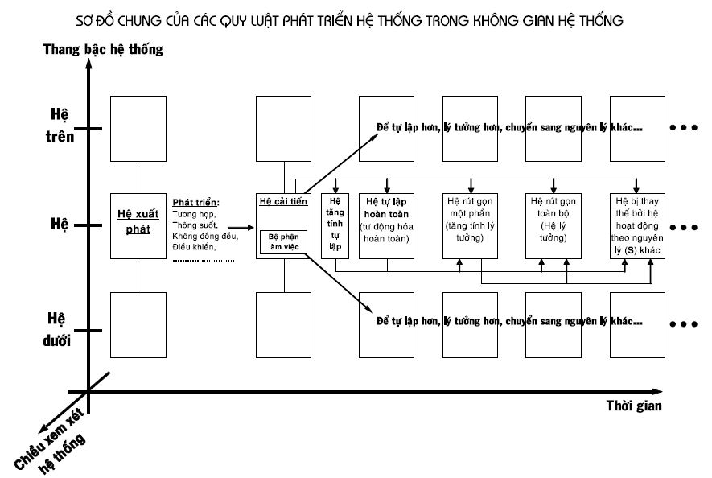
Hình 376: Sơ đồ chung của các quy luật phát triển hệ thống trong không gian hệ thống
Tuy nhiên, đối với hệ cụ thể, trong giai đoạn cụ thể, tồn tại những điều kiện cụ thể làm cho khả năng phát triển nhất định nào đó sớm trở thành hiện thực hơn các khả năng phát triển khác. Đối với các hệ cụ thể khác nhau, điều này lại xảy ra khác nhau. Một lần nữa, điều này giúp chúng ta nhớ lại: Chân lý luôn luôn là cụ thể.
- Việc tập hợp các quy luật phát triển hệ thống lại và biểu diễn chúng trong không gian hệ thống (về không gian hệ thống, bạn có thể xem lại Hình 133 cùng phần văn bản liên quan trong mục nhỏ 10.2.1 Một số khái niệm cơ bản và ý tưởng chung về hệ thống của quyển ba) như trên Hình 376, giúp bạn đọc thấy bức tranh toàn cảnh của sự phát triển hệ thống nói chung.
Trục thời gian giúp so sánh hệ cải tiến với hệ xuất phát (tiền thân của nó) để thấy hệ cải tiến tiến bộ, hoàn thiện hơn về những mặt nào.
Trục thang bậc hệ thống giúp thấy sự phát triển của hệ lên hệ trên, còn bộ phận làm việc của hệ chuyển sang phát triển ở mức hệ dưới (vi mô).
Trục chiều xem xét hệ thống nhắc nhở bạn cần sử dụng các cách nhìn, cách tiếp cận khác nhau đối với hệ xuất phát và từ đó, đối với các quỹ đạo phát triển có thể có của nó ứng với các cách xem xét. Trong nhiều trường hợp, chỉ sau khi phân tích, tổng hợp tất cả các chiều xem xét, bạn mới có thể xác định chính xác: Cần phải phát triển hệ xuất phát lần lượt theo những quy luật nào, hoặc tổ hợp những quy luật nào.
- Sau khi khả năng phát triển nào đó biến thành hiện thực thì hiện thực mới này có thể tạo ra các điều kiện tiền đề tương ứng để các khả năng phát triển khác có thể biến thành hiện thực, và cứ như thế… Điều này có nghĩa, hệ cụ thể cho trước lúc ở những điều kiện ban đầu phải phát triển theo quy luật nhất định nào đó. Sự phát triển này đem lại kết quả, tạo ra các điều kiện mới giúp hệ phát triển tiếp, theo những quy luật khác…
- Các quy luật phát triển hệ thống không phải là các quy luật động lực, mà là các quy luật mang tính xác suất. Tuy nhiên, xác suất nói đến ở đây không hoàn toàn giống ý nghĩa xác suất của các quy luật xác suất–thống kê thông thường.
Đối với các quy luật phát triển, xác suất chỉ là đặc trưng về lượng mức độ thực hiện biến thành hiện thực của khả năng mà thôi và xác suất này không cố định mà tăng lên khi các điều kiện tương ứng dần dần xuất hiện. Khi các điều kiện tương ứng xuất hiện đạt được mức độ cần và đủ, xác suất có giá trị bằng một. Lúc này, xảy ra sự biến đổi khả năng thành hiện thực một cách tất yếu, một cách không tránh khỏi.
- Bạn đọc nào muốn tìm hiểu kỹ hơn có thể tìm đọc, chẳng hạn, một trong các quy luật không cơ bản của phép biện chứng: Quy luật về quan hệ tương hỗ giữa khả năng và hiện thực (cặp phạm trù khả năng–hiện thực, xem Hình 104 trong mục 9.3 của quyển ba). Bạn đọc, một lần nữa sẽ thấy, các quy luật phát triển hệ thống còn giúp cụ thể hóa cả một số các quy luật không cơ bản của phép biện chứng.
14.3.2 Các mối liên kết giữa các quy luật phát triển hệ thống
- Mục 14.2 Các quy luật phát triển hệ thống (Các quy luật sáng tạo và đổi mới) của quyển bảy này đã trình bày nội dung lần lượt từng quy luật một. Tuy vậy, bạn đọc có thể thấy các quy luật phát triển hệ thống không hoàn toàn độc lập đối với nhau, mà giữa chúng có các mối liên kết: Chúng ảnh hưởng, phụ thuộc lẫn nhau.
Điều này thể hiện, chẳng hạn, trong “Thí dụ 2: Thuyền chèo tay bị thay thế bởi thuyền buồm; thuyền buồm bị thay thế bởi tàu thủy động cơ hơi nước…” dùng để minh họa quy luật về sự phát triển theo đường cong hình chữ S (xem mục nhỏ 14.2.10 của quyển bảy này), bạn còn có thể thấy các quy luật phát triển hệ thống khác:
- Quy luật về tính tự lập của hệ thống (xem Hình 351 cùng phần văn bản liên quan trong mục nhỏ 14.2.1 của quyển bảy này).
- Quy luật về tính thông suốt của hệ thống (xem mục nhỏ 14.2.3): Tốc độ di chuyển, lượng hàng hóa chuyên chở tăng lên.
- Quy luật về tính tương hợp của hệ thống (xem mục nhỏ 14.2.4): Đáp ứng nhu cầu chuyên chở nhiều và nhanh của ngành vận tải đường thủy.
- Quy luật về tính không đồng đều của hệ thống (xem mục nhỏ 14.2.6): Trong các phần của thuyền, động cơ được ưu tiên phát triển trước.
- Quy luật về chuyển sự phát triển lên hệ trên (xem mục nhỏ 14.2.7): Thuyền kết hợp với buồm, rồi động cơ hơi nước, mà buồm, động cơ hơi nước là những hệ thống bên ngoài của hệ thống thuyền chèo tay.
- Quy luật về tính điều khiển của hệ thống (xem mục nhỏ 14.2.9): Việc điều khiển con thuyền thông qua việc điều khiển động cơ trở nên thuận tiện, dễ dàng hơn khi đi từ tay chèo đến buồm, rồi động cơ hơi nước.
Tương tự như vậy, bạn đọc có thể tiếp tục phân tích các thí dụ khác có trong MỘT SỐ THÍ DỤ MINH HỌA QUY LUẬT của mỗi mục nhỏ từ 14.2.1 đến 14.2.10
Ngoài ra, các mối liên kết giữa các quy luật phát triển hệ thống còn thể hiện khá rõ trong mục nhỏ 14.2.11 Một số thí dụ về việc không tuân thủ các quy luật phát triển hệ thống. Tuy mục nhỏ này trình bày các phản thí dụ nhưng thông qua nội dung của chúng và phần NHẬN XÉT của người viết, bạn đọc có thể thấy: Việc vi phạm quy luật phát triển hệ thống này dẫn đến vi phạm quy luật phát triển hệ thống khác; nhìn theo chiều xem xét này thì quy luật phát triển hệ thống này bị vi phạm, nhìn theo chiều xem xét khác thì quy luật phát triển hệ thống khác bị vi phạm; một quyết định sai cùng một lúc có thể vi phạm nhiều quy luật phát triển hệ thống, chứ không phải mỗi lần sai chỉ vi phạm một quy luật… Tất cả điều này cho thấy các quy luật phát triển hệ thống có ảnh hưởng, phụ thuộc lẫn nhau. Nói cách khác, giữa các quy luật phát triển hệ thống có các mối liên kết.
- Chúng ta còn có thể coi tập hợp các quy luật phát triển hệ thống liên kết với nhau tạo nên hệ thống các quy luật phát triển hệ thống với tính hệ thống:
“Hệ thống các quy luật phát triển hệ thống dùng để giúp xác định khuynh hướng phát triển (cơ chế định hướng) của các hệ thống cụ thể và đưa ra các giải pháp sáng tạo, đổi mới giúp chúng phát triển bền vững một cách chủ động”.
Các yếu tố của hệ thống các quy luật phát triển hệ thống gồm chính các quy luật:
�① – Quy luật về tính tự lập của hệ thống; ② – Quy luật về tính thông suốt của hệ thống; ③ – Quy luật về tính tương hợp của hệ thống; ④ – Quy luật về tính lý tưởng của hệ thống; ⑤ – Quy luật về tính không đồng đều của hệ thống; ⑥ – Quy luật về chuyển sự phát triển lên hệ trên; ⑦ – Quy luật về chuyển sự phát triển từ mức vĩ mô xuống vi mô; ⑧ – Quy luật về tính điều khiển của hệ thống; ⑨ – Quy luật về chuyển sự phát triển theo đường cong hình chữ S.
Về mặt nguyên tắc, hệ thống có 9 yếu tố thì có thể có 9 x (9 - 1) = 72 các mối liên kết. Tác động của yếu tố m lên yếu tố n, người viết ký hiệu là mối liên kết Lmn; còn tác động của yếu tố n lên yếu tố m là mối liên kết Lnm; trong đó m, n = 1, 2, …, 9. Tóm lại, hệ thống các quy luật phát triển hệ thống có thể có 72 mối liên kết kiểu Lmn.
Nếu cùng một lúc xem xét tương tác giữa yếu tố m và yếu tố n, có nghĩa cùng một lúc xem xét Lmn và Lnm (tương tác qua lại giữa yếu tố m và yếu tố n), số lượng các mối liên kết kiểu đó giảm còn một nửa so với tổng số 72 các mối liên kết: 72/2 = 36. Để đơn giản, người viết ký hiệu kiểu liên kết này là Lmn (=Lnm).
36 mối liên kết cặp đôi các yếu tố (xem Hình 377 dưới đây) là:
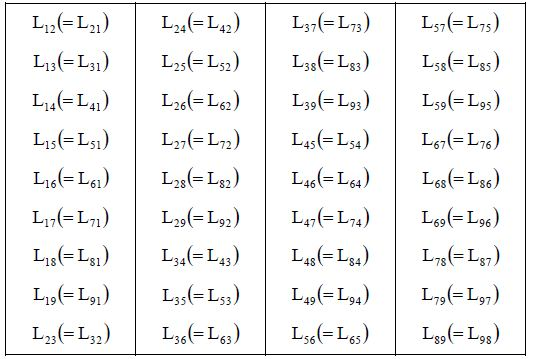
Hình 377: Danh sách các mối liên kết cặp đôi các yếu tố của hệ thống các quy luật phát triển hệ thống
Để gọn hơn nữa, từ nay về sau nếu không có lưu ý đặc biệt, người viết sẽ sử dụng ký hiệu Lmn để chỉ mối liên kết cặp đôi tương tác Lmn (= Lnm).
Mô hình hệ thống các quy luật phát triển hệ thống dựa trên những gì vừa trình bày được biểu diễn trên Hình 378 tiếp theo đây.
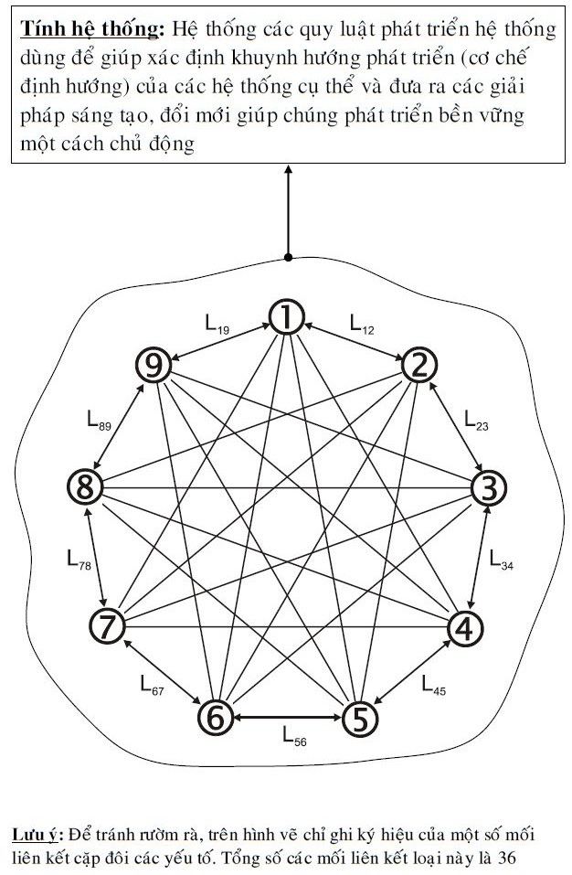
Hình 378: Mô hình hệ thống các quy luật phát triển hệ thống
- Hệ thống các quy luật phát triển hệ thống, trước hết, dành cho con người sử dụng. Do vậy, người viết đặc biệt nhấn mạnh những hệ thống và những giải pháp sáng tạo, đổi mới do con người tạo ra.
Mối quan hệ giữa con người và các hệ thống, các giải pháp cải tiến hệ thống là mối quan hệ tuân theo lôgích nhu cầu–hệ thống (xem mục nhỏ 12.1.2 Lôgích nhu cầu–hệ thống của quyển năm). Chúng ta cần sử dụng lôgích nhu cầu–hệ thống làm cơ sở để phân tích các mối liên kết giữa các quy luật phát triển hệ thống, mặc dù về nguyên tắc, chúng ta có thể xem xét lần lượt cho đến hết 36 mối liên kết cặp đôi các quy luật phát triển hệ thống (xem Hình 377, Hình 378 cùng các phần văn bản liên quan trong mục nhỏ này).
- Nói một cách tóm tắt, lôgích nhu cầu–hệ thống chỉ ra các giai đoạn của quá trình hình thành và phát triển hệ thống mới: Nhu cầu của con người → Mong muốn có chức năng nào đó (đề ra tính hệ thống mới cần có) → Tìm nguyên lý/hệ khung mới, thiết kế, chế tạo kết cấu, mà kết cấu đó thực hiện được tính hệ thống mới cần có.
Đối với việc phát triển hệ thống đã có, lôgích nhu cầu–hệ thống cũng cho thấy các giai đoạn tương tự: Nhu cầu của con người → Mong muốn hệ thống cho trước hoặc phần nào đó của hệ thống cho trước có thêm cái gì đó (định tính, định lượng) mới (phát triển tính hệ thống đã có) → Tìm thông tin, kiến thức, giải pháp; thực hiện giải pháp, mà giải pháp đó giúp đạt mục đích đề ra.
- Như vậy, lôgích nhu cầu–hệ thống đòi hỏi sự tương hợp (tương ứng và phù hợp) giữa con người và hệ thống nói chung; tương hợp giữa các phần của hệ, tương hợp giữa công cụ (bộ phận làm việc) và sản phẩm…, nói một cách chi tiết hơn.
Với thời gian, cùng với việc học trên sai lầm của chính mình và nhận thức cao hơn về sự phát triển bền vững, con người đòi hỏi thêm: Hệ thống cho trước (ngoài những tương hợp liệt kê ở trên) còn cần tương hợp với các hệ khác và với môi trường, hiểu theo nghĩa, sự phát triển của hệ không ảnh hưởng xấu đến các hệ khác, môi trường.
- Tóm lại, đòi hỏi “tương hợp” là đòi hỏi xuyên suốt và bao trùm lên toàn bộ lịch sử sáng tạo và đổi mới của con người. Quy về các quy luật phát triển hệ thống, điều này cũng có nghĩa, quy luật về tính tương hợp của hệ thống (quy luật ③) là quy luật chứa tất cả tám quy luật còn lại và hơn thế nữa. “Hơn thế nữa”, đấy là còn có những giải pháp tương hợp không thể xếp vào các quy luật phát triển hệ thống khác, mà là các giải pháp của riêng quy luật về tính tương hợp.
Nói cách khác, tám quy luật phát triển hệ thống còn lại là sự thể hiện cụ thể hơn của quy luật về tính tương hợp của hệ thống và quy luật về tính tương hợp của hệ thống rộng hơn tám quy luật còn lại gộp lại. Trong ý nghĩa này, quy luật về tính tương hợp đóng vai trò hỗ trợ các quy luật khác: Nó cung cấp cách nhìn tổng quát lên toàn bộ hệ thống, để từ đó, người giải bài toán xác định, xem, cần sử dụng quy luật nào tiếp theo trong số các quy luật phát triển hệ thống.
Bạn đọc có thể tự kiểm tra điều vừa nói bằng cách xem xét các mối liên kết giữa quy luật về tính tương hợp ③ với các quy luật khác như L13, L23, L34, L35, L36, L37, L38, L39 (xem các Hình 377 và 378 ở phần trên). Còn các mối liên kết giữa các quy luật �①, ②, ③, ④, ⑤, ⑥, ⑦, ⑧, ⑨ và với nhau thể hiện sự bổ sung lẫn nhau để có được sự tương hợp (quy luật ③).
- Phạm vi áp dụng rộng của quy luật về tính tương hợp còn thể hiện ở chỗ, nó vừa thuộc loại quy luật phản ánh chức năng, vừa thuộc loại quy luật phản ánh kết cấu, bởi vì yêu cầu tương hợp đối với hệ thống cho trước là yêu cầu tương hợp cùng một lúc cả hai mặt đó: Tương hợp giữa các phần của hệ cả về chức năng và kết cấu; tương hợp giữa công cụ (bộ phận làm việc) và sản phẩm cả về chức năng và kết cấu; tương hợp giữa toàn bộ hệ cho trước với người sử dụng, khai thác hệ, với các hệ khác và môi trường cả về chức năng và kết cấu; tương hợp giữa kết cấu với chức năng. Ngoài ra, nhìn theo không gian hệ thống (xem Hình 133 và văn bản liên quan trong mục nhỏ 10.2.1 Một số khái niệm cơ bản và ý tưởng chung về hệ thống của quyển ba, Hình 376 cùng văn bản liên quan trong mục nhỏ 14.3.1 Một số điểm lưu ý về các quy luật phát triển hệ thống của quyển bảy này) cần có cả sự tương hợp về thời gian (quá khứ, hiện tại, tương lai), về các chiều xem xét hệ thống và về các thang bậc hệ thống.
Trong khi đó, đối với tám quy luật phát triển hệ thống còn lại, người ta có thể phân loại tách bạch hơn:
- Các quy luật về tính thông suốt ②, tính lý tưởng ④ và ⑧ tính điều khiển của hệ thống thiên về phản ánh sự phát triển chức năng của hệ thống.
- Các quy luật về tính tự lập ①�, tính không đồng đều ⑤, chuyển sự phát triển lên hệ trên ⑥, chuyển sự phát triển từ mức vĩ mô xuống mức vi mô ⑦ và sự phát triển theo đường cong hình chữ S ⑨ của hệ thống thiên về phản ánh sự phát triển kết cấu của hệ thống.
Tinh thần chung của mối liên kết giữa chức năng (tính hệ thống) và kết cấu hệ thống là: Chức năng quy định kết cấu hệ thống và kết cấu hệ thống có nhiệm vụ phục vụ, bảo đảm chức năng được thực hiện tốt. Đây là mối quan hệ đòi hỏi, bổ sung, hỗ trợ lẫn nhau. Như vậy các mối liên kết giữa các quy luật như L12, L14, L18, L25, L26, L27, L29, L45, L46, L47, L49, L58, L68, L78, L89 (xem các Hình 377 và 378 cùng phần văn bản liên quan trong mục nhỏ 14.3.1 Một số điểm lưu ý về các quy luật phát triển hệ thống của quyển bảy này) phản ánh tinh thần nói trên.
Như vậy, chúng ta có bốn quy luật thiên về phản ánh sự phát triển chức năng (tính hệ thống) là ② ‑ quy luật về tính thông suốt, ③ ‑ quy luật về tính tương hợp, ④ ‑ quy luật về tính lý tưởng, ⑧ ‑ quy luật về tính điều khiển của hệ thống và sáu quy luật thiên về phản ánh sự phát triển kết cấu: ① �‑ quy luật về tính tự lập, ③ ‑ quy luật về tính tương hợp, ⑤ ‑ quy luật về tính không đồng đều, ⑥ ‑ quy luật về chuyển sự phát triển lên hệ trên, ⑦ ‑ quy luật về sự phát triển từ mức vĩ mô xuống mức vi mô, ⑨ ‑ quy luật về sự phát triển theo đường cong hình chữ S của hệ thống.
Nếu sắp xếp theo thứ tự từ khái quát xuống cụ thể, thì các quy luật phản ánh sự phát triển chức năng có thứ tự sau: ④, ⑧, ②, ③, còn các quy luật phản ánh sự phát triển kết cấu: ③, ⑤, �① , ⑥, ⑦, ⑨ (để tránh rườm rà, người viết sử dụng ký hiệu các quy luật dưới dạng các con số đặt trong vòng tròn mà không viết thành từ ngữ).
Người viết muốn lưu ý bạn đọc, việc sắp xếp các quy luật theo thứ tự nói trên chỉ mang tính tương đối dựa theo cách xem xét và kinh nghiệm nhất định của người viết. Bạn đọc có thể có cách sắp xếp khác.
Tinh thần chung là, bạn nên sắp xếp các quy luật phát triển hệ thống thế nào đó để khi phân tích, giải thích các sáng tạo và đổi mới đã có, bạn dễ thấy lôgích nhu cầu–hệ thống được phản ánh dưới dạng tổ hợp các quy luật phát triển hệ thống. Điều này cũng tương tự như đã làm trong mục nhỏ 12.1.3 Diễn giải lôgích nhu cầu–hệ thống bằng các thủ thuật (nguyên tắc) sáng tạo cơ bản của quyển năm. Ở đó, lôgích nhu cầu–hệ thống được phản ánh dưới dạng các tổ hợp của các thủ thuật (nguyên tắc) sáng tạo, được sắp xếp theo thứ tự lần lượt.
- Một sự thể hiện quan trọng mối liên kết giữa quy luật về tính tương hợp và các quy luật phát triển hệ thống khác là quan hệ không chỉ thống nhất (như đã trình bày ở trên) mà còn mâu thuẫn với chúng, tạo động lực cho sự phát triển.
Ví dụ, đối với hệ cụ thể nào đó, để tăng tính tương hợp giữa đầu tư và hiệu quả đầu tư, người ta áp dụng quy luật về tính không đồng đều của hệ thống: Chọn đúng phần hệ thống được ưu tiên đầu tư và đầu tư cho nó chuyển hẳn sang trạng thái ②, tức là làm đúng quy luật. Tuy vậy, ở đây có thể nảy sinh mâu thuẫn kỹ thuật.
Một mặt, phần được ưu tiên đầu tư phát triển khi chuyển hẳn sang trạng thái ② sẽ phát huy tác dụng tốt của mình lên toàn bộ hệ thống. Đấy là điểm có lợi. Mặt khác, sự thay đổi của phần hệ thống được đầu tư từ trạng thái ①� sang trạng thái ②, do hiệu ứng lan tỏa hệ thống (xem điểm 14, mục nhỏ 10.2.1 Một số khái niệm cơ bản và ý tưởng chung về hệ thống của quyển ba), có thể phá vỡ trạng thái cân bằng (tương hợp) cũ của hệ thống, dẫn đến việc làm nảy sinh các bài toán mới (điểm hại), mà giải được chúng mới có sự tương hợp mới.
Chẳng hạn, việc phát triển ngành điện làm cho các mạng lưới điện phủ rộng khắp các vùng nông thôn, miền núi (lợi) dẫn đến việc số người chết, bị thương, các tai nạn vì không biết cách sử dụng điện tăng vọt so với trước đây (hại).
Có hai thái độ đối với mâu thuẫn kỹ thuật nảy sinh trong trường hợp đầu tư phát triển ngành điện. Thái độ thứ nhất: Ngừng đầu tư phát triển ngành điện. Thái độ thứ hai: Xem các bài toán nảy sinh là các bài toán tất yếu của sự phát triển và chuẩn bị trước lời giải (ở đây rất cần trí tưởng tượng): Sự đầu tư phát triển ngành điện phải đi kèm với các biện pháp giáo dục, huấn luyện an toàn sử dụng điện cho những vùng sẽ được kéo điện đến…
Một ví dụ khác, để đáp ứng (tương hợp với) nhu cầu tăng vận tốc trong vận tải đường thủy, người ta chuyển từ buồm sang động cơ hơi nước (chuyển sang đường cong hình chữ S khác). Sự tương hợp này dẫn đến mâu thuẫn giữa động cơ hơi nước mới và những phần khác của con thuyền, làm nảy sinh các vấn đề. Các vấn đề này dần được giải quyết tạo nên sự tương hợp (trạng thái cân bằng) mới. Chẳng hạn, tàu thủy được làm bằng thép thay vì gỗ, được đóng với kích thước lớn cho phù hợp với công suất lớn của động cơ hơi nước, mạng lưới cung cấp nước, củi, than được thiết lập thuận tiện tại các bến đỗ, cảng, để tránh cho tàu thủy phải dự trữ chúng nhiều trên tàu, ảnh hưởng đến việc chở người và hàng hóa.
Những gì vừa trình bày cũng tương tự như những gì được chọn lọc tự nhiên giữ lại: Các cơn sốt, đi tướt của trẻ em do mọc răng (giai đoạn răng được ưu tiên phát triển) là các vấn đề tất yếu của sự phát triển và được cơ thể đã lập trình tự điều chỉnh giải quyết. Trong khi đó, sốt do bệnh tả, bệnh viêm màng não, sốt xuất huyết… lại là các vấn đề làm phương hại, suy thoái hệ thống, chứ không phải vấn đề tất yếu của sự phát triển. Tóm lại, tuy hình thức có vẻ giống nhau (cùng sốt), bạn cần phân biệt các vấn đề mình gặp (hoặc dự báo sẽ gặp) thành các vấn đề gây phương hại, suy thoái cho hệ hay là các vấn đề tất yếu của sự phát triển để có thái độ và cách giải quyết thích hợp. Quan hệ mâu thuẫn không chỉ xảy ra với quy luật tương hợp mà còn xảy ra với các quy luật khác.
- Trong nhiều trường hợp, mối quan hệ giữa quy luật về tính tương hợp của hệ thống với các quy luật phát triển hệ thống khác là mối quan hệ nhân–quả tuyến tính hoặc phi tuyến (về các mối quan hệ nhân–quả tuyến tính hoặc phi tuyến, bạn đọc có thể xem lại điểm 12 trong mục nhỏ 10.2.2 Một số điểm cần lưu ý về tư duy hệ thống của quyển ba).
Ví dụ, tạo ra sự tương hợp trong hoạt động truyền của các bộ phận phát, mã hóa, kênh truyền, giải mã, thu (xem Hình 356 cùng văn bản liên quan trong mục nhỏ 14.2.3 Quy luật về tính thông suốt của hệ thống của quyển bảy này) đóng vai trò nguyên nhân để thu nhận kết quả: Tính thông suốt của chuỗi truyền (thông tin, năng lượng, vật chất và các tổ hợp của chúng) tăng. Đến lượt mình, tính thông suốt của chuỗi truyền làm tăng tính tương hợp của chuỗi truyền với các bộ phận khác của hệ; hoặc làm tăng tính tương hợp của hệ với các hệ khác, với môi trường; hoặc làm tăng tính điều khiển đối với hệ bị điều khiển…
- Tùy theo các yêu cầu cụ thể trên thực tế, quy luật về tính tương hợp có thể đưa ra các giải pháp, mới thoạt nhìn, đi ngược với các quy luật khác. Nhưng có ngược như vậy mới có sự tương hợp cần thiết.
Ví dụ, hệ thống truyền tải điện cần có sự thông suốt. Để có sự thông suốt này, người ta đưa ra các giải pháp tạo sự tương hợp giữa các bộ phận truyền của hệ. Tuy vậy, còn có giải pháp sử dụng cầu chì hoặc rơle tự động ngắt dòng điện khi cường độ dòng điện vượt quá mức cho phép. Rõ ràng giải pháp gây ách tắc (không thông suốt) này, về mặt hình thức, ngược với yêu cầu của quy luật về tính thông suốt của hệ thống, nhưng cũng chính giải pháp gây ách tắc này lại bảo đảm sự tương hợp, hiểu theo nghĩa, các thiết bị được an toàn, không bị hỏng, cháy do cường độ dòng điện tăng.
Ví dụ khác, quy luật về tăng tính lý tưởng của hệ thống cho thấy, các phương tiện vận tải muốn tăng tính lý tưởng thì phải làm càng ngày, càng to. Chẳng hạn, bạn có thấy ôtô vận tải ngày nay to hơn nhiều so với ôtô vận tải ngày xưa. Tình hình tương tự cũng xảy ra với tàu thủy, máy bay…
Điều này không phải ngẫu nhiên, bởi vì ôtô được chế tạo ra để chở hàng nhưng đáng tiếc còn phải mất năng lượng để chở chính trọng lượng của ôtô. Một ôtô chở được 3 tấn hàng thì bản thân nó đã nặng 1,5 tấn. Nhưng một ôtô chở 15 tấn hàng lại chỉ nặng có 5 tấn và cứ như vậy. Ngày nay, người ta chế tạo loại ôtô có thể chở được hàng trăm tấn.
Tuy vậy, bạn vẫn thấy người ta chế tạo những xe ôtô vận tải loại nhỏ và rất nhỏ. Mới thoạt nhìn, điều này trái ngược với quy luật về tính lý tưởng của hệ thống dùng cho ôtô vận tải. Nhưng chính những ôtô vận tải loại nhỏ mới tương hợp với đường, phố, ngõ, hẻm của những khu phố cổ… (tương hợp với quá khứ).
- Trong phần DIỄN GIẢI NỘI DUNG QUY LUẬT của quy luật về tính tương hợp của hệ thống (xem mục nhỏ 14.2.4 Quy luật về tính tương hợp của hệ thống của quyển bảy này), người viết đã nhấn mạnh cần có “sự tương hợp về mọi mặt”, “sự tương hợp toàn diện” giữa các phần của hệ (giữa các hệ dưới, các hệ dưới nữa… đến tận các yếu tố), với các hệ khác và với môi trường, mà giữa chúng có sự tương tác (có các mối liên kết).
Không thể kể hết “mọi mặt” cần sự tương hợp. Trong LỜI PHÁT BIỂU QUY LUẬT của quy luật về tính tương hợp của hệ thống, người ta chỉ liệt kê một số mặt như “Dạng năng lượng và cách truyền tải, vật liệu, trạng thái vật lý của vật chất, thời gian, không gian, cách tương tác” và sau đó đành phải để ba chấm “…”.
Còn nếu cụ thể hóa “mọi mặt” cần sự tương hợp thì sự tương hợp sẽ bao trùm tất cả các đối tượng có trong thế giới vật chất và thế giới tinh thần.
Người ta suy nghĩ bằng ngôn ngữ. Dưới đây, người viết thử cụ thể hóa vài “mặt” dưới dạng các câu phản ánh sự tương hợp để bạn đọc phần nào hình dung phạm vi áp dụng rất rộng và tính thường xuyên sử dụng trong cuộc sống, công việc của quy luật về tính tương hợp của hệ thống.
Tương hợp về mặt thời gian:
- Xe đò (tàu hỏa, tàu thủy, máy bay…) khởi hành đúng giờ.
- Buổi họp (hội nghị, lớp học, tiệc cưới…) bắt đầu đúng giờ.
- Để bắt kịp chuyến xe, cậu phải xuất phát từ đây lúc 5 giờ sáng.
- Máy móc được bảo trì đúng định kỳ.
- Các hạng mục công trình được hoàn thành đúng tiến độ.
- Anh đến thật đúng lúc, chúng tôi đang cần sự giúp đỡ của anh.
- Chúng tôi phục chế thành công ngọn tháp này như nó đã có cách nay gần 500 năm.
- Các động tác múa đã rất ăn nhịp với điệu nhạc.
- Công việc trồng cây đã xong xuôi, bây giờ người ta mong trời cho mưa xuống. Cầu được, ước thấy, trời mưa thật.
- Các chuyên gia khuyên các bà mẹ không nên sinh con sát nhau quá mà nên cách nhau vài ba năm.
- Xây dựng nhà máy điện lúc này là sự đón đầu cần thiết vì xây xong cũng là lúc nhu cầu về điện tăng lên.
- Theo kế hoạch phối hợp với máy bay, đúng 2 giờ sáng chúng ta phải bắn pháo hiệu.
- ……
Tương hợp về mặt không gian:
- Địa điểm tổ chức hội nghị đã phù hợp với tất cả mọi người tham dự.
- Vị trí đặt tượng đài là vị trí đắc địa, được phần lớn người dân đồng tình.
- Ngôi nhà mới xây rất hài hòa với cảnh quan xung quanh.
- Hàng hóa các loại trong siêu thị được sắp xếp tại những chỗ thuận tiện cho người đi xem và đi mua hàng.
- Nồi tròn úp vung tròn, nồi méo úp vung méo.
- Bức ảnh được phóng to thành các kích thước chuẩn khác nhau để phù hợp với các khung ảnh dành cho các khách du lịch mua đồ lưu niệm.
- Bộ quần áo được may vừa vặn với thân hình của diễn viên A, làm chị ấy trông đẹp hẳn lên.
- …..
Tương hợp về cách tương tác:
- Hai thứ thuốc này cần phải dùng đồng thời thì tác dụng điều trị mới đạt yêu cầu.
- Đây là một tập thể sống và làm việc với nhau rất đoàn kết đã nhiều năm qua.
- Các thành viên của đội bóng chơi rất ăn ý nên họ đã giành chiến thắng trong giải vô địch.
- Thuận vợ, thuận chồng, tát cạn biển Đông.
- Cuộc tập trận hiệp đồng binh chủng hải, lục, không quân đã diễn ra xuất sắc.
- Món thịt này phải chấm với mắm nêm mới ngon.
- Cuộc giao lưu với các nhà thơ đã để lại những ấn tượng tốt đẹp đối với những bạn trẻ tham dự.
- Thay vì đánh, mắng con như trước, chị dành nhiều thời gian trò chuyện, tâm sự, chia sẻ với con như hai người bạn. Con chị dần thay đổi theo chiều hướng tiến bộ.
- …….
Bạn đọc hãy tự mình lấy các ví dụ khác cho ba mặt “thời gian”, “không gian”, “cách tương tác” tương tự như ở trên và lấy các ví dụ cho cả các mặt khác nữa.
- Sau quy luật về tính tương hợp của hệ thống, về mặt phạm vi áp dụng rất rộng và mức độ thường xuyên được sử dụng trong đời sống và công việc, có lẽ phải kể đến quy luật về tính thông suốt của hệ thống.
Điều này có thể hiểu được vì, quy luật về tính thông suốt liên quan trực tiếp đến các quá trình truyền, ở đó cần có sự thông suốt. Các quá trình truyền lại là các quá trình xảy ra thường xuyên ở mọi lúc, mọi nơi do mọi vật (hiểu theo nghĩa rất rộng) luôn ở trạng thái vận động, thay đổi. Còn trạng thái đứng yên chỉ là tương đối.
Mối quan hệ giữa quy luật về tính tương hợp của hệ thống và quy luật về tính thông suốt có thể rút ra từ sự so sánh Hình 360 (có trong mục nhỏ 14.2.4 Quy luật về tính tương hợp của hệ thống) với Hình 355 (có trong mục nhỏ 14.2.3 Quy luật về tính thông suốt của hệ thống) của quyển bảy này, bằng cách chồng chúng lên nhau để có được Hình 379 dưới đây:
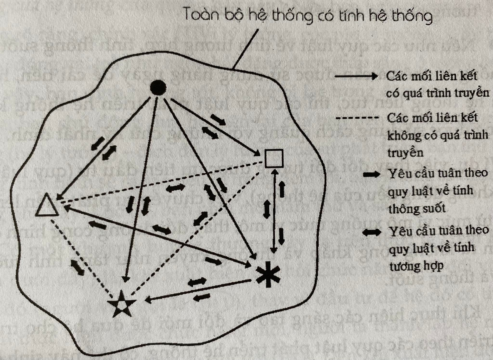
Hình 379: Mối quan hệ giữa quy luật về tính tương hợp của hệ thống và quy luật về tính thông suốt được biểu diễn dưới dạng các yếu tố liên kết với nhau
Hình 379 cho thấy:
- Ở đâu có mối liên kết, bất kể mối liên kết đó có quá trình truyền hay không có quá trình truyền, ở đó sự tương tác phải tuân theo quy luật về tính tương hợp của hệ thống.
- Đối với các mối liên kết có quá trình truyền cần thông suốt phải tuân theo quy luật về tính thông suốt của hệ thống.
Tại các mối liên kết có quá trình truyền cần sự thông suốt, mối quan hệ giữa quy luật về tính tương hợp và quy luật về tính thông suốt thể hiện ở chỗ:
- Sự tương hợp giữa các bộ phận có trong chuỗi truyền cùng các thông số của chúng (xem Hình 356 cùng văn bản liên quan trong mục nhỏ 14.2.3 Quy luật về tính thông suốt của hệ thống của quyển bảy này) giúp các mối liên kết đó phát triển tuân theo quy luật về tính thông suốt của hệ thống.
- Đến lượt mình, các mối liên kết có quá trình truyền được làm tăng tính thông suốt sẽ giúp làm tăng tính tương hợp trong tương tác của các yếu tố liên quan.
- Nếu như các quy luật về tính tương hợp, tính thông suốt của hệ thống có thể và cần được sử dụng hàng ngày để cải tiến, hoàn thiện hệ thống liên tục, thì các quy luật phát triển hệ thống khác thường được sử dụng cách quãng với những chu kỳ nhất định.
Ví dụ, việc thay đổi đối tượng được ưu tiên đầu tư (quy luật về tính không đồng đều của hệ thống), việc chuyển sự phát triển lên hệ trên, từ mức vĩ mô xuống mức vi mô, thay đổi đường cong hình chữ S diễn ra không rộng khắp và thường xuyên như tăng tính tương hợp và thông suốt.
- Khi thực hiện các sáng tạo và đổi mới để đưa hệ cho trước phát triển theo các quy luật phát triển hệ thống, có thể nảy sinh các yêu cầu điều khiển quá trình, đối tượng nào đó hoặc/và yêu cầu chuyển sang phát triển theo nguyên lý/hệ khung mới khi nguyên lý/hệ khung hiện tại đã gần tiến tới giới hạn phát triển của nó. Điều này có nghĩa, hai quy luật về tính điều khiển của hệ thống và về sự phát triển theo đường cong hình chữ S thường được dùng kết hợp với các quy luật phát triển hệ thống khác.
Ví dụ, khi thực hiện các sáng tạo và đổi mới theo quy luật về chuyển sự phát triển lên hệ trên, có thể xuất hiện yêu cầu điều khiển quá trình đó. Điều này đòi hỏi phải sử dụng thêm quy luật về tính điều khiển của hệ thống.
Ví dụ khác, khi thực hiện các sáng tạo và đổi mới theo quy luật về tính lý tưởng, có thể xuất hiện yêu cầu cần phải chuyển sang nguyên lý/hệ khung mới. Điều này có nghĩa phải kết hợp với quy luật về sự phát triển theo đường cong hình chữ S.
- Trong số các quy luật phát triển hệ thống, có thể nói, quy luật về tính lý tưởng của hệ thống có tính định hướng cao nhất (xem Hình 362 cùng văn bản liên quan trong mục nhỏ 14.2.5 Quy luật về tính lý tưởng của hệ thống của quyển bảy này). Nếu bạn tưởng tượng ra hệ lý tưởng rõ ràng, chính xác (TiVi lý tưởng, cục pin lý tưởng…), thì hệ lý tưởng đóng vai trò như ngọn hải đăng được thắp sáng ở tương lai xa. Nhờ vậy, bạn định hướng tốt, không bị lạc trong đêm tối, hiểu theo nghĩa, bạn chủ động đưa hệ hiện tại của bạn tiến về phía ngọn hải đăng (hệ lý tưởng) – đích đến lý tưởng của sự phát triển. Bạn thử hình dung, tình hình sẽ ra sao nếu đi trong đêm tối, bạn không có ngọn hải đăng như vậy. Lúc đó, bạn phải mò mẫm thử và sai.
Có một khuynh hướng thường xảy ra trên thực tế (xem Hình 380a dưới đây) là, khi xuất hiện đòi hỏi chức năng mới đối với hệ nào đó (người viết gọi là Hệ 1), thay vì đầu tư để hệ đó có thể tự mình thực hiện được chức năng mới, người ta thành lập hệ mới – Hệ 2, đóng vai trò công cụ đối với Hệ 1. Đến khi xuất hiện đòi hỏi chức năng mới đối với Hệ 2, người ta lại thành lập Hệ 3, đóng vai trò công cụ đối với Hệ 2… Điều này làm cho hệ thống các hệ càng ngày, càng trở nên cồng kềnh, phức tạp. Phần các hệ thống “phi sản xuất” càng ngày, càng phình to ra. Nhân đây, bạn có thể đọc lại Thí dụ 21 có trong mục nhỏ 14.2.11 Một số thí dụ về việc không tuân thủ các quy luật phát triển hệ thống của quyển bảy này.
Nếu nhìn sự vật theo mối quan hệ (hệ) công cụ–(hệ) sản phẩm (xem mục nhỏ 14.2.5 Quy luật về tính lý tưởng của hệ thống của quyển bảy này), thì công cụ lý tưởng là không có công cụ mà chức năng của công cụ đối với sản phẩm vẫn được thực hiện tốt. Để làm được điều này, người ta cần chuyển giao chức năng của công cụ cho sản phẩm bằng cách tập trung đầu tư cho sản phẩm, tăng cường sử dụng các nguồn dự trữ có sẵn, đặc biệt, các nguồn dự trữ không mất tiền nhằm có được những sáng tạo và đổi mới phù hợp. Phát triển như vậy, hệ thống các hệ càng ngày, càng trở nên tinh giản, rút gọn. Phần các hệ thống “phi sản xuất” càng giảm thiểu (xem Hình 380b). Nhân đây, bạn có thể đọc lại Thí dụ 23 có trong mục nhỏ 14.2.11 Một số thí dụ về việc không tuân thủ các quy luật phát triển hệ thống của quyển bảy này.
Đến đây, bạn đọc tinh ý sẽ phát hiện ra mối liên quan giữa quy luật về tính lý tưởng và quy luật về tính điều khiển của hệ thống. Xem lại Hình 370 cùng văn bản liên quan trong mục nhỏ 14.2.9 Quy luật về tính điều khiển của hệ thống của quyển bảy này, bạn có thể thấy mối quan hệ giữa “hệ điều khiển” và “hệ bị điều khiển” là mối quan hệ công cụ–sản phẩm. Vậy, tuân theo quy luật về tính lý tưởng của hệ thống, “hệ điều khiển” phải biến mất và “hệ bị điều khiển” trở thành “hệ tự điều khiển”.
Thông qua ví dụ vừa nêu, một lần nữa, bạn đọc thấy sự ảnh hưởng, phụ thuộc giữa các quy luật.
- So sánh với các quy luật phát triển hệ thống khác, như bạn đọc đã thấy (xem Hình 380b), quy luật về tính lý tưởng của hệ thống là quy luật mang tính định hướng cao nhất và có tác dụng chi phối trong khoảng thời gian dài nhất (từ hiện tại đến tương lai xa).
Khi TiVi đèn hình mới ra đời có độ dày vài chục xentimét, bạn đã có thể tưởng tượng được TiVi lý tưởng chỉ có màn hình với độ dày bằng zêrô và con đường phát triển là cần đưa ra và thực hiện các sáng tạo và đổi mới để làm TiVi càng ngày, càng mỏng. Điều này có nghĩa, xác định được hình ảnh của hệ lý tưởng, bạn thấy được đích cần đến (định hướng cao) cho có khi cả trăm năm tới (nhìn rất xa về phía tương lai). Do vậy, so với các quy luật phát triển hệ thống khác, có thể coi quy luật về tính lý tưởng của hệ thống là quy luật có ý nghĩa chiến lược cao nhất.
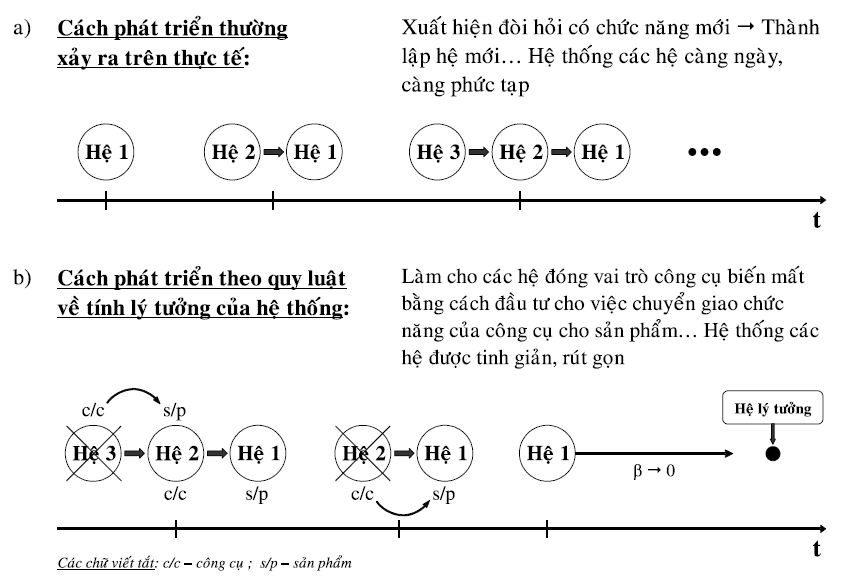
Hình 380: So sánh cách phát triển thường xảy ra trên thực tế và cách phát triển theo quy luật về tính lý tưởng của hệ thống
- Trong số các quy luật phát triển hệ thống khác, bạn cần đặc biệt lưu ý quy luật về sự phát triển theo đường cong hình chữ S. Bởi vì, trên đường tiến tới hệ lý tưởng, hệ hiện tại thường phải nhiều lần thay đổi nguyên lý/hệ khung, chứ không giữ nguyên mãi nguyên lý/hệ khung hiện tại. Chẳng hạn, để có TiVi càng ngày, càng mỏng, người ta phải chuyển từ nguyên lý/hệ khung đèn hình (dùng tia âm cực) sang plasma hoặc sang màn hình tinh thể lỏng (LCD).
Vì ý nghĩa chiến lược của quy luật về tính lý tưởng của hệ thống và sự song hành với nó là quy luật về sự phát triển theo đường cong hình chữ S, phát triển mà không chú ý tuân theo hai quy luật này sẽ là sai lầm chiến lược và phải trả giá, thường là rất đắt. Về điều này, bạn có thể đọc lại các Thí dụ 2, 3, 4 trong mục nhỏ 14.2.10 Quy luật về sự phát triển theo đường cong hình chữ S và Thí dụ 22 trong mục nhỏ 14.2.11 Một số thí dụ về việc không tuân thủ các quy luật phát triển hệ thống của quyển bảy này.
- Mới thoạt nhìn, quy luật về chuyển sự phát triển từ mức vĩ mô xuống mức vi mô có phạm vi áp dụng hẹp và ít liên quan đến các quy luật khác vì nó chỉ liên quan đến bộ phận làm việc (công cụ) của hệ thống. Tuy nhiên, sự thực không phải như vậy và quy luật về chuyển sự phát triển từ mức vĩ mô xuống mức vi mô của hệ thống rất quan trọng trong các ý nghĩa sau:
- Theo định nghĩa, bộ phận làm việc là bộ phận trực tiếp thực hiện tính hệ thống của hệ, nên nó đóng vai trò “đại diện” cho hệ.
- Hoạt động của các bộ phận khác như động cơ, truyền động, điều khiển là nhằm “phục vụ” cho hoạt động của bộ phận làm việc. Để phục vụ tốt, ba bộ phận nói trên phải tuân theo các quy luật về tính tương hợp, thông suốt và điều khiển. Như vậy, việc cải tiến bộ phận làm việc thường kéo theo những cải tiến các bộ phận khác.
- Bản thân bộ phận làm việc (công cụ) phải có những phẩm chất cần thiết riêng để càng ngày, càng tương tác tương hợp với sản phẩm, từ đó cho ra kết quả cuối cùng mong đợi là thành phẩm (xem các Hình 347, 348 và văn bản liên quan trong mục nhỏ 14.2.1 Quy luật về tính tự lập của hệ thống của quyển bảy này). Những phẩm chất này có được nhờ bộ phận làm việc chuyển sang phát triển ở mức vi mô. Trong nhiều trường hợp, ở đây có mặt của quy luật phát triển theo đường cong hình chữ S: Bộ phận làm việc chuyển sự phát triển từ đường cong hình chữ S của nguyên lý/hệ khung vĩ mô sang phát triển theo đường cong hình chữ S của nguyên lý/hệ khung vi mô. Ví dụ, chuyển từ dao mổ cơ học sang dao mổ laser.
- Hệ đa tính hệ thống có nhiều bộ phận làm việc chứ không phải một. Chúng cũng đều bị chi phối bởi quy luật về chuyển sự phát triển từ mức vĩ mô xuống mức vi mô. Chưa kể, mỗi bộ phận (hệ dưới) của hệ lại có thể có các bộ phận làm việc của mình. Do vậy, tổng số các bộ phận làm việc có trong một hệ không phải là ít.
14.3.3 Các quy luật phát triển hệ thống và các kiến thức khác trình bày trong bộ sách “Sáng tạo và đổi mới”
- Khi thực hiện các sáng tạo và đổi mới, người ta không chỉ sử dụng các quy luật phát triển hệ thống mà còn sử dụng các kiến thức khác, được trình bày trong bộ sách “Sáng tạo và đổi mới”.
Trong mục nhỏ này, người viết đề cập các mối liên hệ của các quy luật phát triển hệ thống với các kiến thức đó, trừ hai trường hợp:
- Với các thủ thuật (nguyên tắc) và các phương pháp sáng tạo (xem các quyển bốn, năm, sáu).
Bởi vì, các mối liên hệ liên quan sẽ được trình bày riêng trong mục 14.4 Các mối liên kết giữa các quy luật phát triển hệ thống và các phương pháp, thủ thuật (nguyên tắc) sáng tạo cơ bản của quyển bảy này.
- Với hệ thống các chuẩn dùng để giải các bài toán sáng chế và Algôrit giải các bài toán sáng chế (ARIZ) vì, chúng còn chưa được trình bày.
Theo kế hoạch, hệ thống các chuẩn dùng để giải các bài toán sáng chế sẽ được trình bày trong quyển tám, còn Algôrit giải các bài toán sáng chế (ARIZ) – trong quyển chín của bộ sách “Sáng tạo và đổi mới”.
- Phần lớn các sáng tạo và đổi mới có được cho đến nay là nhờ phương pháp thử và sai (xem Chương 2: Sáng tạo một cách tự nhiên của quyển một). Phương pháp thử và sai cho đến thời gian gần đây là cơ chế chính của sự tiến hóa và phát triển nói chung.
Các hệ thống trên thực tế càng ngày, càng nhiều và càng trở nên phức tạp về mặt nội tại, đồng thời càng liên kết nhiều hơn với các hệ khác và môi trường. Điều này làm nảy sinh nhiều hệ quả liên quan đến các loại vấn đề mà con người gặp phải (xem mục nhỏ 3.3.2 Các khuynh hướng, thách thức và hệ quả của quyển một). Những hệ quả nói trên cho thấy, phương pháp thử và sai tự nhiên, truyền thống không còn thích hợp để giải các bài toán hiện đại, mà cần thay thế nó bằng các phương pháp tư duy định hướng (xem mục nhỏ 4.2.3 Cơ chế định hướng và tư duy định hướng của quyển một), hiểu theo nghĩa, các phương pháp đó chỉ ra được các khuynh hướng phát triển của các hệ thống có trong bài toán, nhờ vậy, giúp khắc phục các nhược điểm của phương pháp thử và sai, với nhược điểm cơ bản của nó là thiếu cơ chế định hướng (xem mục nhỏ 2.3.2 Các nhược điểm của phương pháp thử và sai của quyển một).
Các quy luật phát triển hệ thống đóng vai trò cơ sở mang tính khái quát cao, từ đó xây dựng các phương pháp tư duy định hướng cụ thể hơn (xem mục nhỏ 4.2.1 Các quy luật sáng tạo phải tìm chính là các quy luật phát triển của quyển một).
- Nếu nhìn theo góc độ các hiện tượng, quy luật tâm lý nói riêng, các hiện tượng, quy luật thuộc thế giới bên trong con người nói chung một cách định tính, có thể nói, mọi người đều giống nhau. Mọi người đều có những nhu cầu cá nhân, xúc cảm, các thói quen, trí nhớ, tính liên tưởng, linh tính, trí tưởng tượng, tính ì tâm lý, cùng sử dụng ngôn ngữ để suy nghĩ… (xem những phần tương ứng trong quyển hai “Thế giới bên trong con người sáng tạo”).
Tuy nhiên, khi học một môn học hoặc một chuyên môn, nghiệp vụ nào đó, vật lý chẳng hạn, kết quả học tập của mọi người không giống nhau. Vậy những người học tốt môn vật lý và làm việc tốt trong lĩnh vực vật lý có thể khác những người không học tốt môn vật lý ở những điểm nào?
Theo người viết, sự khác biệt cơ bản cần phải kể ra là, những người học tốt môn vật lý và làm việc tốt trong lĩnh vực vật lý là những người thành công trong việc sử dụng và điều khiển các hiện tượng, quy luật thuộc thế giới bên trong mình (chủ quan) một cách có ý thức hoặc không có ý thức cho phù hợp với các khái niệm, quy luật, đặc thù, yêu cầu mang tính khách quan của khoa học vật lý. Điều này cũng đúng đối với các môn học (chuyên môn, nghiệp vụ) khác.
Điều vừa nói cũng giúp giải thích hiện tượng có người giỏi môn này, thành công trong lĩnh vực này nhưng lại không giỏi, không thành công trong lĩnh vực khác. Bởi vì, khi chuyển sang môn học khác, lĩnh vực khác, do nhiều nguyên nhân, người đó đã không sử dụng và điều khiển các hiện tượng, quy luật thuộc thế giới bên trong mình cho phù hợp với các khái niệm, quy luật, đặc thù, yêu cầu của môn học mới, lĩnh vực mới.
Ví dụ, nếu một người vẫn tiếp tục sử dụng cách học toán thành công cho môn học ngoại ngữ tiếng Anh, thì có thể không giỏi ngoại ngữ được. Bởi vì, cùng là sử dụng trí nhớ, ngôn ngữ, tính liên tưởng, trí tưởng tượng… nhưng các hiện tượng, quy luật bên trong này phải được điều khiển để phù hợp, trong trường hợp toán học, với các khái niệm, quy luật, đặc thù, yêu cầu của toán học, trong trường hợp tiếng Anh, với các khái niệm, quy luật, đặc thù, yêu cầu của tiếng Anh.
Chẳng hạn, trong toán học có thể sử dụng trí nhớ suy luận lôgích, hiểu theo nghĩa, chỉ cần nhớ một số định lý chủ chốt, từ đó có thể suy ra các kiến thức khác một cách lôgích mà không sợ sai; các khái niệm (từ ngữ) trong toán học được định nghĩa rõ ràng, ngữ pháp chặt chẽ, nghĩa mang tính đơn trị; sự liên tưởng, tưởng tượng trong toán học mang đặc thù lý tưởng hóa, trừu tượng hóa như điểm, đường thẳng, giá trị vô cực, tổng các đại lượng vô cùng bé, số ảo…
Trong khi đó, tiếng Anh thuộc ngôn ngữ tự nhiên, tuy có ngữ pháp (lôgích nhất định) nhưng có rất nhiều ngoại lệ, mà nếu bạn suy luận thuần túy theo ngữ pháp, bạn sẽ sai; nghĩa của từ ngữ, câu có khi phụ thuộc nhiều vào ngữ cảnh chứ không được hiểu một cách độc lập; tiếng Anh đời sống phản ánh những cái cụ thể, gần gũi chứ không trừu tượng, lý tưởng; sự liên tưởng, tưởng tượng tự do, có nhiều hướng hơn toán học; sử dụng ngôn ngữ thường phản ánh cách nhìn chủ quan, thiên về xúc cảm hơn là đòi hỏi bắt buộc khách quan, chặt chẽ, chính xác như toán học.
Có câu hỏi đặt ra: “Trong lĩnh vực sáng tạo và đổi mới, một người muốn học và thực hiện các sáng tạo, đổi mới tốt cần phải làm gì?”
Trong ý nghĩa của những gì vừa trình bày, bạn đọc có thể đoán ra câu trả lời: “Người đó cần sử dụng, điều khiển các hiện tượng, quy luật thuộc thế giới bên trong cho phù hợp với các khái niệm, kiến thức, quy luật phát triển hệ thống (quy luật sáng tạo và đổi mới), đặc thù, yêu cầu của lĩnh vực sáng tạo và đổi mới”.
Liên quan đến các quy luật phát triển hệ thống, câu trả lời trên có nghĩa, người đó phải điều khiển được các nhu cầu cá nhân, xúc cảm, thói quen (kể cả khắc phục tính ì tâm lý), cách sử dụng ngôn ngữ, ký hiệu, hình vẽ, tính liên tưởng, trí tưởng tượng, suy nghĩ và hành động cho tương hợp với các quy luật phát triển hệ thống. Công việc này cần được tiến hành một cách có ý thức cao.
Dưới đây là một số tình huống giúp bạn phần nào hình dung những khó khăn của công việc điều khiển làm chủ bản thân mình để suy nghĩ và hành động theo các quy luật phát triển hệ thống:
- Bạn ý thức được rằng, tình hình hiện nay đòi hỏi hệ của bạn phải chuyển lên phát triển ở mức hệ trên mới đúng. Nhưng nhu cầu (quyền lợi), xúc cảm (thích làm thủ trưởng) của bạn chống lại điều đó, vì bạn quan niệm thà rằng làm “đầu gà” còn hơn làm “đuôi voi”.
- Hệ của bạn dựa trên nguyên lý/hệ khung Ⓐ đang hoạt động tốt. Theo quy luật, bạn biết rằng đến một lúc nào đó nguyên lý/hệ khung Ⓐ sẽ bị thay thế bằng nguyên lý/hệ khung mới. Tuy vậy, bạn chưa hiểu quy luật về sự phát triển theo đường cong hình chữ S đến mức xúc cảm thúc đẩy hành động chuyển sang nguyên lý/hệ khung mới (xem mục nhỏ 6.4.2 Tiếp thu thông tin và các mức độ hiểu của quyển hai), cộng với tính ì tâm lý (xem mục 6.5 Tính ì tâm lý) không thấy các khả năng khác, bạn không có những hành động chuẩn bị trước và trở thành tụt hậu, thậm chí, phá sản.
- Hàng ngày nhận thông tin, căn cứ vào nội dung, ý nghĩa của chúng, bạn cần liên tưởng những thông tin này về phía nội dung các khái niệm của các quy luật phát triển hệ thống, từ đó, bạn nghĩ đến việc cần áp dụng các quy luật phát triển hệ thống như thế nào, hoặc rút được kinh nghiệm gì trên sai lầm của người khác. Công việc liên tưởng vừa nói đòi hỏi bạn phải có sự thường xuyên luyện tập.
Nếu đọc lại mục nhỏ 14.2.11 Một số thí dụ về việc không tuân thủ các quy luật phát triển hệ thống của quyển bảy này, bạn thấy, trong các bài báo đều không có các thuật ngữ là các khái niệm thuộc về các quy luật phát triển hệ thống. Nhưng bạn có thể phát hiện được chúng nhờ liên tưởng về mặt nội dung.
- Bạn cần luyện tập trí tưởng tượng, định hướng theo các quy luật phát triển hệ thống, chứ không phải tưởng tượng để mà tưởng tượng, tưởng tượng mông lung, lan man, hoặc tưởng tượng theo kiểu mơ tưởng hão huyền. Về điều này, ví dụ, bạn có thể đọc lại các bước trong phần tưởng tượng để xác định hệ lý tưởng như các hệ lý tưởng của TiVi, cái bàn, rađiô, cục pin… trong mục nhỏ 14.2.5 Quy luật về tính lý tưởng của hệ thống.
- Như trên đã nói, các quy luật phát triển hệ thống chỉ ra các khả năng với các xác suất khác nhau và các xác suất này thay đổi theo thời gian, tùy vào các điều kiện mới được hình thành. Bạn phải bỏ ra rất nhiều thời gian, công sức, suy nghĩ… để theo dõi, phân tích, xác định xem với hệ cụ thể của bạn, khả năng nào gần với hiện thực nhất, từ đó ra quyết định cho đúng. Chưa kể, ở đây còn rất cần những kỹ năng thu thập, hiểu, phân loại, xử lý thông tin để có thể phát hiện ra các ý nghĩa, giá trị thông tin cần thiết, mà những kỹ năng đó chỉ có thể có sau quá trình học tập, rèn luyện, tự rút kinh nghiệm (lập quan hệ phản hồi với chính mình) rất kiên trì trong thời gian dài. Những người với “tâm lý” ăn xổi ở thì, mì ăn liền, cưỡi ngựa xem hoa khó có thể có những hành động thực hiện các công việc nói trên.
- Ngay cả trường hợp bạn xác định đúng hệ cụ thể của bạn phải phát triển theo quy luật phát triển nào và bạn lập ra được kế hoạch các bước thực hiện sự phát triển đó, bạn chắc chắn sẽ gặp sự chống đối từ phía các đồng nghiệp, cấp dưới, cấp trên, đối tác…
Sự chống đối này là tự nhiên, phản ánh tính ì tâm lý của con người (xem mục 6.5 Tính ì tâm lý của quyển hai) và tính ì của hệ thống (xem mục 10.3 Tính ì hệ thống và những điểm cần lưu ý của quyển ba).
Cái mới luôn tạo ra sự chống đối, tính mới càng cao, sự chống đối càng lớn. Trong số chín quy luật phát triển hệ thống, kinh nghiệm cho thấy, các quy luật sau thường gặp sự chống đối nhiều nhất: Quy luật về sự phát triển theo đường cong hình chữ S, quy luật về chuyển sự phát triển lên hệ trên, quy luật về chuyển sự phát triển từ mức vĩ mô xuống mức vi mô, quy luật về tính lý tưởng và quy luật về tính không đồng đều của hệ thống.
Nhân đây, bạn có thể đọc lại sáu phẩm chất của nhân cách sáng tạo trình bày trong mục nhỏ 7.5.2 Giáo dục phát triển nhân cách sáng tạo của quyển hai để có sự chuẩn bị khi “dấn thân” vào lĩnh vực thực hiện các sáng tạo và đổi mới.
- Khi lập luận, suy luận, suy nghĩ theo (dựa trên) các quy luật phát triển hệ thống, trước hết, bạn cần sử dụng lôgích hình thức (xem Chương 8: Tư duy lôgích của quyển ba) để bảo đảm sự chặt chẽ, nhất quán.
Bạn cần nhớ rằng, lôgích hình thức chỉ phản ánh sự vật, hiện tượng ở trạng thái ổn định tương đối. Do vậy, sử dụng tư duy lôgích hình thức đến lúc gặp mâu thuẫn, cũng là lúc bạn cần chuyển sang sử dụng tư duy biện chứng khắc phục các mâu thuẫn (xem mục 9.4 Tư duy biện chứng trong lĩnh vực sáng tạo và đổi mới của quyển ba).
- Như tên gọi có từ “hệ thống”, các quy luật phát triển hệ thống đòi hỏi người áp dụng phải luôn luôn sử dụng tư duy hệ thống (xem Chương 10: Tư duy hệ thống của quyển ba) một cách chủ động, có ý thức và nhất quán.
Có rất nhiều ý của tư duy hệ thống cần được bạn áp dụng thường xuyên. Dưới đây, người viết chỉ nhấn mạnh một số ý:
- Không gian hệ thống (xem các Hình 132, 133 cùng văn bản liên quan có trong mục nhỏ 10.2.1 Một số khái niệm cơ bản và ý tưởng chung về hệ thống của quyển ba) được cấu thành từ ba trục: Thời gian, chiều xem xét (tính hệ thống) và thang bậc hệ thống. Đối với hệ thống có trong bài toán của bạn, bạn nên bắt đầu từ trục thời gian làm chuẩn. Tùy theo bài toán, bạn có thể sử dụng thời gian tuyệt đối, thời gian tương đối hoặc lần lượt cả hai loại thời gian.
Sau đó, bạn cần liệt kê các chiều xem xét hệ thống có thể có đối với hệ thống trong bài toán của bạn. Tiếp theo, bạn đi lần lượt từng chiều xem xét hệ thống. Ứng với mỗi chiều xem xét hệ thống, bạn xác định ít nhất 9 hệ: Hệ, hệ trên, hệ dưới hiện tại; hệ, hệ trên, hệ dưới quá khứ; hệ, hệ trên, hệ dưới tương lai (hệ 9 màn hình hoặc còn gọi màn hình 9 hệ).
- Bạn cần điền các thông tin, kiến thức, giả thiết, các câu hỏi nảy sinh cho từng hệ tương ứng trong không gian hệ thống. Đối với các giả thiết, bạn cần kiểm tra độ tin cậy, phạm vi áp dụng của chúng. Đối với các câu hỏi, bạn cần tìm các câu trả lời.
- Những việc làm nêu trên mới có mục đích thu thập thông tin (càng đầy đủ càng tốt) và tổ chức, sắp xếp những thông tin này một cách rõ ràng, rành mạch trong không gian hệ thống. Bây giờ bạn mới chính thức chuyển sang sử dụng quá trình suy nghĩ giải bài toán theo các giai đoạn (xem mục 12.3 Chương trình rút gọn dùng để giải quyết vấn đề và ra quyết định của quyển năm). Khác với lúc trước khi chưa biết các quy luật phát triển hệ thống, nay bạn cần sử dụng “Chương trình rút gọn” trong các mối liên kết với các quy luật phát triển hệ thống, được trình bày trong quyển bảy này.
Ví dụ, trong quá trình giải bài toán theo “Chương trình rút gọn”, bạn thấy, các nguồn dự trữ để phát triển của hệ còn dồi dào. Điều này có nghĩa, các quy luật về chuyển sự phát triển lên hệ trên, chuyển sự phát triển từ mức vĩ mô xuống mức vi mô và quy luật về sự phát triển theo đường cong hình chữ S chưa cần áp dụng ngay. Các giải pháp, quyết định được chọn là các giải pháp, quyết định dựa trên các quy luật khác của bài toán–mini làm hệ thống thay đổi ít nhất (xem điểm 4, 5 trong mục nhỏ 10.3.2 Một số điểm cần lưu ý về tính ì hệ thống của quyển ba).
Ngược lại, nếu bạn phát hiện các nguồn dự trữ của hệ đang dần cạn kiệt, bài toán–mini không còn thích hợp nữa, bạn cần tìm hiểu thêm các thông tin cần thiết, kể cả các thông tin dự báo để phải sử dụng các quy luật phát triển làm hệ thống thay đổi nhiều, thậm chí, thay đổi cả nguyên lý/hệ khung (bài toán thuộc loại bài toán–maxi).
- Trong toán tử KTG (xem điểm 16 trong mục nhỏ 10.3.2 Một số điểm cần lưu ý về tính ì hệ thống của quyển ba) có bước “e) Cho giá thành đối tượng (những chi phí cho phép để giải bài toán) tăng đến vô cực. Bài toán giải thế nào?”. Nói cách khác, khi người ta cho phép bạn sử dụng kinh phí lớn (10 tỷ USD chẳng hạn) để giải bài toán cho trước, bạn sẽ giải nó như thế nào?
Câu trả lời chung cho trường hợp này là: Hãy dùng số tiền đó để đưa hệ thống có trong bài toán cho trước phát triển theo các quy luật phát triển hệ thống. Bởi vì, thứ nhất, chỉ khi có nhiều tiền bạn mới có điều kiện đầu tư cho sự phát triển. Thứ hai, việc phát triển theo đúng các quy luật phát triển, đầu tư đúng hướng sẽ mang lại hiệu quả cao nhất (tiền đầu tư sinh ra nhiều tiền lãi nhất, tiền đầu tư tạo ra những ích lợi nhiều nhất).
Còn đi vào cụ thể, thực hiện bước này của toán tử KTG, bạn cần tưởng tượng dựa trên các quy luật phát triển hệ thống để phát các ý tưởng cần thiết.
- Có thể xếp các quy luật phát triển hệ thống vào các phương pháp dự báo mang tính khái quát cao và có thể xây dựng các phương pháp dự báo cụ thể hơn dựa trên các quy luật phát triển hệ thống (xem mục nhỏ 10.4.2 Một số phương pháp dự báo của quyển ba).
Các phương pháp dự báo truyền thống và các quy luật phát triển hệ thống có thể dùng bổ sung cho nhau, hiểu theo nghĩa, người ta sử dụng cùng một lúc cả hai loại phương pháp để dự báo về cùng một đối tượng, rồi so sánh và tổng hợp các dự báo này với nhau, nhằm làm tăng độ tin cậy của dự báo cuối cùng.
Theo ý kiến một số nhà nghiên cứu, các quy luật phát triển hệ thống cho các dự báo về sự phát triển cũng như các dự báo về những rủi ro, khủng hoảng trên con đường phát triển có độ tin cậy cao hơn các phương pháp truyền thống.
14.4 CÁC MỐI LIÊN KẾT GIỮA CÁC QUY LUẬT PHÁT TRIỂN HỆ THỐNG VÀ CÁC PHƯƠNG PHÁP, THỦ THUẬT (NGUYÊN TẮC) SÁNG TẠO CƠ BẢN
14.4.1 Các mối liên kết giữa các quy luật phát triển hệ thống và các phương pháp sáng tạo không phải của TRIZ
- Khoảng hơn hai chục phương pháp sáng tạo không phải của TRIZ đã được trình bày lần lượt một cách tóm tắt, kèm theo nhận xét của người viết trong mục 13.3 Các phương pháp sáng tạo không phải của TRIZ của quyển sáu.
Tuyệt đại đa số các tác giả của các phương pháp sáng tạo đó tin rằng, nếu người giải phát được càng nhiều ý tưởng khác nhau thì xác suất có ý tưởng dẫn đến lời giải càng lớn. Nói cách khác, các tác giả xây dựng các phương pháp sáng tạo nhằm giúp tăng năng suất phát ý tưởng, bằng cách đó, cải tiến phương pháp thử và sai (xem Chương 2: Sáng tạo một cách tự nhiên của quyển một). Nhân đây, bạn nên đọc lại phần văn bản liên quan có trong TỔNG KẾT CHƯƠNG 13 của quyển sáu.
Ngay từ điểm xuất phát, các tác giả của các phương pháp sáng tạo không phải của TRIZ đã không có ý định xây dựng các phương pháp sáng tạo khắc phục nhược điểm “thiếu cơ chế định hướng”, là nhược điểm cơ bản nhất của phương pháp thử và sai. Từ đây, họ lại càng không nghĩ đến đi tìm cơ chế định hướng, chưa nói gì đến việc cần phải phát hiện ra các quy luật phát triển hệ thống, mà những quy luật đó chính là cơ sở của cơ chế định hướng.
Các phương pháp sáng tạo không phải của TRIZ được xây dựng dựa trên các kinh nghiệm, một số yếu tố của lôgích hình thức hoặc/và một số hiện tượng (quy luật) tâm lý. Điều này có nghĩa, trong hai khía cạnh chủ quan và khách quan của sáng tạo (xem mục nhỏ 4.2.2 Sáng tạo của con người: Khía cạnh chủ quan và khía cạnh khách quan của quyển một), các phương pháp sáng tạo không phải của TRIZ tập trung tác động vào khía cạnh chủ quan mà không chú ý đến khía cạnh khách quan, thậm chí, có thể không biết rằng, có tồn tại khía cạnh khách quan của sáng tạo: Đấy là các quy luật phát triển nói chung, các quy luật phát triển hệ thống nói riêng.
Hiện thực khách quan có rất nhiều lĩnh vực có thể trái ngược nhau đến mức cực đoan. Ví dụ, có những lĩnh vực cực kỳ đa dạng như sự đa dạng sinh học, đa dạng kiến trúc, đa dạng mốt quần áo, đa dạng mẫu mã hàng hóa…
Đồng thời, ngược lại, có những lĩnh vực thuộc loại có một, duy nhất. Ví dụ, ôxy là loại khí duy nhất giúp duy trì sự sống của người và nhiều loại động vật. Hiện nay, người ta chưa thể thay ôxy bằng khí khác. Tương tự như vậy, đối với nước (H2O), hoặc là canxi (Ca) cấu tạo xương…
Như trên đã nhấn mạnh, các phương pháp sáng tạo không phải của TRIZ có mục đích giúp người sử dụng (chủ quan) phát thật nhiều các ý tưởng đa dạng mà không tính đến các quy luật phát triển của hiện thực khách quan. Do vậy, trường hợp thứ nhất, nếu may mắn gặp được hiện thực khách quan là lĩnh vực đa dạng cho phép có nhiều lời giải, dùng các phương pháp sáng tạo không phải của TRIZ, có khi, trung bình vài phép thử, thì có một phép thử đi đến lời giải (xem thí dụ cải tiến quyển sách trong 13.3.3.4 Phương pháp đối tượng tiêu điểm và thí dụ búp bê trong 13.3.3.9 Phương pháp phân tích hình thái của quyển sáu).
Trường hợp thứ hai, nếu hiện thực khách quan là lĩnh vực thuộc loại có lời giải duy nhất, có khi cả tỷ ý tưởng phát ra mới có ý tưởng đúng dẫn đến lời giải. Nhân đây, bạn có thể xem lại thí dụ về chiếc khóa số thể hiện trong các Hình 318, 319 cùng văn bản liên quan có trong mục nhỏ 13.3.3.9 Phương pháp phân tích hình thái của quyển sáu như là ví dụ minh họa cho trường hợp thứ hai vừa nêu.
Như vậy, các phương pháp sáng tạo không phải của TRIZ có phạm vi áp dụng là những lĩnh vực, ở đó có sự đa dạng lớn về lời giải và trở nên yếu khi giải các bài toán trong những lĩnh vực có số lượng các phép thử có thể có nhiều nhưng có số lượng lời giải ít vì, chúng không có cơ chế định hướng từ bài toán đến lời giải.
- Tóm lại, cơ sở, cách tiếp cận xây dựng các phương pháp sáng tạo của TRIZ khác cơ bản và độc lập với cơ sở, cách tiếp cận xây dựng các phương pháp sáng tạo không phải của TRIZ.
Lịch sử phát triển nhận thức, khoa học, công nghệ của xã hội loài người cho thấy, chỉ có những gì được hiểu, phát minh, sáng chế ra dựa trên các quy luật khách quan mới có độ lặp lại, độ tin cậy, sức sống cao và có tác dụng lớn. Trong ý nghĩa này, các phương pháp sáng tạo của TRIZ được xây dựng trên cơ sở các quy luật khách quan về sự phát triển của hệ thống có nhiều ưu việt hơn hẳn các phương pháp sáng tạo không phải của TRIZ.
14.4.2 Các mối liên kết giữa các quy luật phát triển hệ thống và các thủ thuật (nguyên tắc) sáng tạo của TRIZ
- Các thủ thuật (nguyên tắc) sáng tạo cơ bản của TRIZ đã được trình bày khá chi tiết trong các quyển bốn và năm; các tổ hợp của chúng tạo nên các phương pháp sáng tạo được trình bày trong mục nhỏ 13.2.2 Các phương pháp sáng tạo của TRIZ dựa trên các thủ thuật của quyển sáu.
Trong các phương pháp được trình bày trong mục nhỏ 13.2.3 Các phương pháp sáng tạo của TRIZ dựa trên các cơ sở khác của quyển sáu, nếu phân tích ra, cũng chứa không ít các thủ thuật (nguyên tắc) sáng tạo cơ bản.
- Trong bộ sách “Sáng tạo và đổi mới”, người viết đã nhiều lần nhấn mạnh, các thủ thuật (nguyên tắc) sáng tạo cơ bản đóng vai trò các yếu tố trong PPLSTVĐM như các nguyên tố hóa học trong lĩnh vực hóa học, hoặc các chữ cái trong lĩnh vực ngôn ngữ và thực tế cho thấy, người ta thường sử dụng tổ hợp các thủ thuật (nguyên tắc) sáng tạo cơ bản nhiều hơn là sử dụng các thủ thuật riêng rẽ. Điều này cũng tương tự như trong lĩnh vực hóa học: Người ta thường sử dụng các hợp chất nhiều hơn là sử dụng các đơn chất riêng rẽ; như trong lĩnh vực ngôn ngữ: Người ta thường sử dụng từ ngữ, mệnh đề, câu nhiều hơn là sử dụng các chữ cái riêng rẽ. Có thể coi những trường hợp dùng thủ thuật (nguyên tắc) sáng tạo cơ bản riêng rẽ là những trường hợp đặc biệt của việc dùng tổ hợp các thủ thuật.
Đến đây, người viết muốn đưa ra một tương tự nữa. Khi nghiên cứu hóa học như là một lĩnh vực bao gồm nhiều đơn chất, hợp chất, các nhà nghiên cứu không chỉ phát hiện các tính chất, công dụng cụ thể của chúng, mà còn phát hiện ra những cái chung dưới dạng các quy luật hóa học. Điều này cũng xảy ra trong ngôn ngữ học với việc phát hiện các quy luật ngôn ngữ học thông qua nghiên cứu các hiện tượng ngôn ngữ cụ thể.
Trong ý nghĩa vừa nêu, các quy luật phát triển hệ thống (các quy luật sáng tạo và đổi mới) là kết quả khái quát hóa những nghiên cứu rất nhiều các (tổ hợp) thủ thuật (nguyên tắc) sáng tạo cơ bản thường dùng để giải quyết vấn đề và ra quyết định.
Như vậy, có thể xem, một mặt, các quy luật phát triển hệ thống là sự cụ thể hóa các quy luật chung nhất về sự phát triển: Các quy luật cơ bản và không cơ bản của phép biện chứng (xem mục nhỏ 14.3.1 Một số điểm lưu ý về các quy luật phát triển hệ thống của quyển bảy này). Mặt khác, các quy luật phát triển hệ thống lại là sự khái quát hóa các (tổ hợp) thủ thuật (nguyên tắc) sáng tạo cơ bản (xem Hình 381 dưới đây).
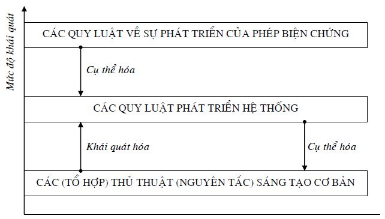
Hình 381: Sự tương quan giữa các quy luật phát triển hệ thống với các (tổ hợp) thủ thuật (nguyên tắc) sáng tạo cơ bản và các quy luật của phép biện chứng
- Hình 381 còn cho thấy nếu xem các quy luật phát triển hệ thống là sự khái quát hóa các (tổ hợp) thủ thuật (nguyên tắc) sáng tạo cơ bản, thì cũng có thể xét ngược lại: Các (tổ hợp) thủ thuật (nguyên tắc) sáng tạo cơ bản là sự cụ thể hóa các quy luật phát triển hệ thống.
Điều này có nghĩa, người ta phát hiện rất nhiều các (tổ hợp) thủ thuật khác nhau nhưng đều chung nhau ở điểm: Làm tăng tính tự lập của hệ thống; rất nhiều các (tổ hợp) thủ thuật khác nhau khác nhưng đều chung nhau ở điểm: Làm tăng tính thông suốt của hệ thống… Tương tự như vậy cho chín quy luật phát triển hệ thống.
Ngược lại, nếu xuất phát từ bất kỳ quy luật phát triển hệ thống nào, chẳng hạn quy luật về tính tự lập của hệ thống, người ta, về mặt nguyên tắc, có thể tìm được rất nhiều các (tổ hợp) thủ thuật có được tính chất làm tăng tính tự lập của các hệ thống cụ thể nhất định…
- Trường hợp đặc biệt của “tổ hợp các thủ thuật” là một thủ thuật, vậy nảy sinh câu hỏi: “Có thể sắp xếp 40 thủ thuật theo chín quy luật phát triển hệ thống như thế nào?” hoặc câu hỏi tương đương “Mỗi quy luật phát triển hệ thống có thể quy về (giúp nghĩ đến) những thủ thuật nào?”. Dưới đây là câu trả lời cho hai câu hỏi nói trên, chủ yếu, dựa trên kinh nghiệm sử dụng các thủ thuật và các quy luật phát triển hệ thống của người viết. Do vậy, bạn đọc không nên nghĩ rằng, những gì sắp xếp dưới đây đã hoàn hảo, trong khi, sự sắp xếp đó chỉ mang tính chính xác tương đối, có tính chất gợi ý.
①� Quy luật về tính tự lập của hệ thống:
1. Nguyên tắc phân nhỏ, 3. Nguyên tắc phẩm chất cục bộ, 5. Nguyên tắc kết hợp, 25. Nguyên tắc tự phục vụ (dùng để thành lập hệ tự lập).
Sau đó, hệ có thể tăng tính tự lập theo hướng phát triển không đồng đều, tăng tính thông suốt, tính tương hợp, tính điều khiển, chuyển lên phát triển ở mức hệ trên, chuyển xuống phát triển ở mức hệ dưới, chuyển sang phát triển theo đường cong hình chữ S khác. Do vậy, bạn hãy đọc tiếp các thủ thuật được xếp vào các quy luật phát triển tương ứng trình bày dưới đây.
② Quy luật về tính thông suốt của hệ thống:
Tất cả 40 thủ thuật.
③ Quy luật về tính tương hợp của hệ thống:
Tất cả 40 thủ thuật.
④ Quy luật về tính lý tưởng của hệ thống:
2. Nguyên tắc “tách khỏi”, 3. Nguyên tắc phẩm chất cục bộ, 6. Nguyên tắc vạn năng, 20. Nguyên tắc liên tục các tác động có ích, 21. Nguyên tắc “vượt nhanh”, 22. Nguyên tắc biến hại thành lợi, 25. Nguyên tắc tự phục vụ, 26. Nguyên tắc sao chép (copy), 27. Nguyên tắc “rẻ” thay cho “đắt”, 34. Nguyên tắc phân hủy hoặc tái sinh các phần.
⑤ Quy luật về tính không đồng đều:
1. Nguyên tắc phân nhỏ, 2. Nguyên tắc “tách khỏi”, 3. Nguyên tắc phẩm chất cục bộ, 4. Nguyên tắc phản (bất) đối xứng, 8. Nguyên tắc phản trọng lượng, 25. Nguyên tắc tự phục vụ, 32. Nguyên tắc thay đổi màu sắc.
⑥ Quy luật về chuyển sự phát triển lên hệ trên:
3. Nguyên tắc phẩm chất cục bộ, 5. Nguyên tắc kết hợp, 7. Nguyên tắc “chứa trong”, 8. Nguyên tắc phản trọng lượng, 11. Nguyên tắc dự phòng, 24. Nguyên tắc sử dụng trung gian, 25. Nguyên tắc tự phục vụ.
⑦ Quy luật về chuyển sự phát triển từ mức vĩ mô xuống mức vi mô:
1. Nguyên tắc phân nhỏ, 2. Nguyên tắc “tách khỏi”, 3. Nguyên tắc phẩm chất cục bộ, 18. Sử dụng các dao động cơ học, 25. Nguyên tắc tự phục vụ, 28. Thay thế sơ đồ (kết cấu) cơ học, 29. Sử dụng các kết cấu khí và lỏng, 30. Sử dụng vỏ dẻo và màng mỏng, 31. Sử dụng các vật liệu nhiều lỗ, 35. Thay đổi các thông số hóa lý của đối tượng, 36. Sử dụng chuyển pha, 37. Sử dụng sự nở nhiệt, 39. Thay đổi độ trơ, 40. Sử dụng vật liệu hợp thành (composite).
⑧ Quy luật về tính điều khiển của hệ thống:
1. Nguyên tắc phân nhỏ, 8. Nguyên tắc phản trọng lượng, 9. Nguyên tắc gây ứng suất (phản tác động) sơ bộ, 15. Nguyên tắc linh động, 23. Nguyên tắc quan hệ phản hồi, 25. Nguyên tắc tự phục vụ, 28. Thay thế sơ đồ (kết cấu) cơ học, 29. Sử dụng các kết cấu khí và lỏng, 34. Nguyên tắc phân hủy hoặc tái sinh các phần.
⑨ Quy luật về sự phát triển theo đường cong hình chữ S:
25. Nguyên tắc tự phục vụ, hiểu theo nghĩa, sử dụng các hiệu ứng khoa học đã biết hoặc vừa mới được tìm ra, mà những hiệu ứng đó có thể đóng vai trò như những nguyên lý/hệ khung mới cho hệ thống hiện tại.
28. Thay thế sơ đồ (kết cấu) cơ học, 40. Sử dụng các vật liệu hợp thành (composite).
- Sự cụ thể hóa các quy luật phát triển hệ thống dưới dạng 40 thủ thuật (nguyên tắc) sáng tạo cơ bản còn thể hiện ở chỗ, mỗi thủ thuật cũng chỉ ra khuynh hướng phát triển nhưng cụ thể hơn các quy luật phát triển hệ thống (xem phần KHUYNH HƯỚNG PHÁT TRIỂN có trong mỗi mục nhỏ từ mục nhỏ 11.3.1 đến mục nhỏ 11.3.40 của quyển bốn).
Ví dụ, khuynh hướng phát triển được “nguyên tắc phân nhỏ” chỉ ra là:
“Hệ thống cho trước có thể phát triển theo hướng làm các mối liên kết của mỗi thang bậc hệ thống từ trên xuống dưới lỏng lẻo dần, tăng mức độ độc lập hoặc trở nên tháo lắp được”.
Khuynh hướng phát triển “phân nhỏ” này cần được hiểu: Hệ thống phát triển về phía “phân nhỏ” không phải vị “phân nhỏ”, mà “phân nhỏ”, tùy theo hệ thống cụ thể, giúp hệ thống đó phát triển theo các quy luật phát triển hệ thống. Nói cách khác, khuynh hướng phát triển của nguyên tắc phân nhỏ phục vụ cho khuynh hướng phát triển của các quy luật phát triển hệ thống. Do vậy, bạn có thể đặt và trả lời câu hỏi: “Phân nhỏ để làm gì, phục vụ cho quy luật phát triển hệ thống nào?” cho từng trường hợp cụ thể.
Chẳng hạn, “phân nhỏ” giúp làm “tăng tính tự lập”, “tăng tính thông suốt”, “tăng tính tương hợp”, “phù hợp với tính không đồng đều”, “chuyển sự phát triển từ mức vĩ mô xuống mức vi mô”, “tăng tính điều khiển” của các hệ thống cụ thể có trong các bài toán cụ thể nhất định.
Các thủ thuật được phân ra thành nhiều loại (xem 11.4.3 Phân loại các thủ thuật (nguyên tắc) sáng tạo cơ bản của quyển bốn). Người viết muốn bạn đọc chú ý phân loại 7, trong đó, các thủ thuật được phân loại theo “phản ánh tính hệ thống” (a) và “đóng vai trò các yếu tố, các mối liên kết” (b và c). Điều này có nghĩa, có những thủ thuật đóng vai trò chức năng của hệ thống và có những thủ thuật đóng vai trò kết cấu của hệ thống (các yếu tố liên kết với nhau). Cũng có thể nói là, có những thủ thuật tác động lên chức năng của hệ thống và có những thủ thuật tác động lên kết cấu của hệ thống. Chức năng hệ thống quy định kết cấu hệ thống và kết cấu hệ thống được tạo ra là để thực hiện chức năng hệ thống.
Các quy luật phát triển hệ thống cũng có thể được phân loại theo tiêu chuẩn chức năng, kết cấu. Trong mục nhỏ 14.3.2 Các mối liên kết giữa các quy luật phát triển hệ thống của quyển bảy này, chúng ta đã xác định có bốn quy luật thiên về phản ánh sự phát triển chức năng là: Quy luật về tính thông suốt, quy luật về tính tương hợp, quy luật về tính lý tưởng và quy luật về tính điều khiển của hệ thống. Sáu quy luật thiên về phản ánh kết cấu là: Quy luật về tính tự lập, quy luật về tính tương hợp, quy luật về tính không đồng đều, quy luật chuyển sự phát triển lên hệ trên, quy luật về chuyển sự phát triển từ mức vĩ mô xuống mức vi mô và quy luật về sự phát triển theo đường cong hình chữ S của hệ thống.
Trong trường hợp nguyên tắc phân nhỏ, chúng ta thấy, nguyên tắc phân nhỏ, một mặt, phục vụ các quy luật về phát triển chức năng. Mặt khác, nguyên tắc phân nhỏ lại chính là sự cụ thể hóa quy luật về tính không đồng đều và quy luật về chuyển sự phát triển từ mức vĩ mô xuống mức vi mô, là những quy luật thiên về kết cấu.
Phân tích và rút ra các kết luận tương tự cũng có thể thực hiện đối với 39 thủ thuật (nguyên tắc) sáng tạo cơ bản còn lại.
- Bạn đọc có thể đặt câu hỏi tiếp: “Vậy còn đối với trường hợp “tổ hợp các thủ thuật” có từ hai thủ thuật trở lên thì mối quan hệ giữa tổ hợp các thủ thuật và các quy luật phát triển hệ thống như thế nào?”
Người viết trả lời câu hỏi này trên ví dụ cụ thể là que chỉ–bút (xem các Hình 294 và 295 cùng văn bản liên quan có trong mục nhỏ 13.2.2 Các phương pháp sáng tạo của TRIZ dựa trên các thủ thuật của quyển sáu).
Sau khi sử dụng “Chương trình lý giải lôgích” (xem Hình 219 cùng văn bản kèm theo trong mục nhỏ 12.1.4 Chương trình phát hiện các thủ thuật và làm tái hiện quá trình suy nghĩ lôgích để có được hệ thống cho trước của quyển năm) đối với hệ cải tiến là que chỉ–bút so với hệ tiền thân gốc được chọn là que chỉ nguyên khối, chúng ta thu được tổ hợp 9 thủ thuật sắp xếp theo trình tự lôgích nhu cầu–hệ thống sau:
- Nguyên tắc dự phòng.
- Nguyên tắc linh động.
- Nguyên tắc phân nhỏ.
- Nguyên tắc chứa trong.
- Nguyên tắc phẩm chất cục bộ.
- Nguyên tắc tự phục vụ.
- Nguyên tắc liên tục các tác động có ích.
- Nguyên tắc vạn năng.
- Nguyên tắc kết hợp.
Tổ hợp 9 thủ thuật này phản ánh ngắn gọn sự suy luận (quá trình suy nghĩ) theo lôgích nhu cầu–hệ thống để cải tiến que chỉ nguyên khối tiền thân thành que chỉ–bút:
“Que chỉ nguyên khối tiền thân dài, mang đi, mang lại dễ xảy ra va quẹt làm gãy que chỉ hoặc làm bị thương chính tôi và người khác. Điều này đòi hỏi tôi phải dự phòng.
Để dự phòng thì tôi muốn gì mà không nghĩ đến cách thực hiện?
Tôi muốn que chỉ lúc mang đi, mang lại hoặc không dùng thì ngắn còn lúc dùng thì dài như yêu cầu.
Như vậy, que chỉ phải trở nên linh động.
Để trở nên linh động thì que chỉ phải có kết cấu như thế nào?
Que chỉ phải được phân nhỏ ra thành từng đoạn ngắn, các đoạn này chứa trong nhau, hai đầu của mỗi đoạn phải có móc (phẩm chất cục bộ) để khi tôi rút các ống ra (tự phục vụ), chúng móc vào nhau và không bị tuột.
Sau khi cải tiến đến đây, que chỉ mang theo người trở nên rất thuận tiện. Tuy nhiên, để ý tôi thấy, mang theo que chỉ nhưng có khi cả ngày chỉ dùng một lần, có khi nhiều ngày không dùng. Làm sao tăng tính ích lợi của que chỉ đây?
Cho que chỉ có thêm chức năng mới, hiểu theo nghĩa, lúc không dùng để chỉ, tôi sẽ dùng chức năng mới của que chỉ thì tính ích lợi của nó sẽ tăng lên. Chức năng nào đây?
Đến đây, tính liên tưởng có thể gợi ý: Que chỉ cải tiến thường để trong túi áo bên cạnh cây bút, tại sao không cho que chỉ có thêm chức năng cây bút? Lúc đó, tôi chỉ cần mang một que chỉ–bút chứ không cần mang hai cái: Que chỉ và bút. Làm thế nào đây?
Hãy kết hợp ruột bút bi vào que chỉ.”
Bây giờ, chúng ta hãy nhìn quá trình suy nghĩ nói trên không phải theo góc độ các thủ thuật mà chuyển sang góc độ các quy luật phát triển hệ thống bằng cách đặt và trả lời câu hỏi: “Thủ thuật (tổ hợp thủ thuật) tìm ra được dùng để tăng tính gì của hệ thống cho trước? Để phục vụ cho quy luật phát triển hệ thống nào?”. Dưới đây là các câu trả lời:
- Dự phòng để tăng tính tương hợp của que chỉ với người sử dụng, với môi trường (những người và vật khác). Như vậy, thủ thuật dự phòng phục vụ cho quy luật về tính tương hợp của hệ thống, là quy luật phản ánh sự phát triển chức năng.
- Linh động để tăng tính điều khiển của que chỉ, đến lượt mình, tính điều khiển tăng sẽ làm tăng tính tương hợp đã nói ở trên. Còn các thủ thuật phân nhỏ, chứa trong, phẩm chất cục bộ, tự phục vụ là các thủ thuật tạo ra kết cấu thực hiện sự linh động.
Do vậy, có thể coi tổ hợp các thủ thuật linh động, phân nhỏ, chứa trong, phẩm chất cục bộ, tự phục vụ là tổ hợp các thủ thuật làm tăng tính điều khiển (linh động) của que chỉ (phục vụ quy luật về tính điều khiển của hệ thống) nhờ kết cấu tạo bởi các thủ thuật phân nhỏ, chứa trong, phẩm chất cục bộ, tự phục vụ.
- Nhìn dưới quan điểm kết cấu, các thủ thuật phân nhỏ, chứa trong, phẩm chất cục bộ, tự phục vụ phản ánh que chỉ (chính là bộ phận làm việc) chuyển xuống phát triển ở mức vi mô (hệ dưới).
- Phân tích tương tự như trên, tổ hợp các thủ thuật còn lại (liên tục các tác động có ích, vạn năng, kết hợp) phục vụ cho quy luật về tính lý tưởng của hệ thống và quy luật liên quan đến kết cấu ở đây là chuyển lên phát triển ở mức hệ trên (kết hợp que chỉ với ruột bút bi tạo thành hệ trên).
Qua việc đặt và trả lời câu hỏi: “Thủ thuật (tổ hợp thủ thuật) tìm ra được dùng để tăng tính gì của hệ thống cho trước? để phục vụ cho quy luật phát triển hệ thống nào?”, bạn đọc có thể thấy, các thủ thuật phản ánh tính hệ thống và các thủ thuật phản ánh các ý tưởng tạo nên tính hệ thống như dự phòng, linh động, liên tục các tác động có ích, vạn năng thường được chú ý trước so với các thủ thuật phản ánh các ý tưởng giải pháp (kết cấu) như phân nhỏ, chứa trong, phẩm chất cục bộ, tự phục vụ, kết hợp. Bởi vì, các thủ thuật giải pháp (kết cấu) đóng vai trò phục vụ cho các thủ thuật phản ánh các ý tưởng tạo nên tính hệ thống; đến lượt mình, các thủ thuật phản ánh các ý tưởng tạo nên tính hệ thống lại phục vụ cho các thủ thuật phản ánh tính hệ thống.
Phân tích kỹ hơn nữa ví dụ trên, bạn đọc còn có thể thấy mối liên kết giữa các quy luật phát triển hệ thống với nhau. Cụ thể, để tăng tính tương hợp của que chỉ với người sử dụng, với môi trường, cách giải quyết trong trường hợp này là làm tăng tính điều khiển của que chỉ. Hay nói cách khác, trong trường hợp cụ thể này, quy luật về tính điều khiển phục vụ cho quy luật về tính tương hợp của hệ thống. Trong trường hợp cụ thể khác, có thể quy luật phát triển hệ thống khác sẽ phục vụ cho quy luật về tính tương hợp của hệ thống…
Về mặt kết cấu, quy luật chuyển sự phát triển xuống mức vi mô (hệ dưới) phục vụ cho quy luật tăng tính điều khiển.
Sau đó, que chỉ chuyển sang giai đoạn phát triển mới: Phát triển làm tăng tính lý tưởng nhờ có thêm chức năng mới (vạn năng) là chức năng viết. Ở đây, quy luật liên quan đến kết cấu là quy luật chuyển lên phát triển ở mức hệ trên (kết hợp).
Nhìn tổng quát, que chỉ cải tiến không chỉ tạo ra sự tương hợp giữa que chỉ với người sử dụng, với môi trường mà còn làm tăng tính thông suốt của que chỉ khi chuyển động (truyền): Que chỉ nguyên khối tiền thân đòi hỏi người sử dụng khi mang đi, mang lại phải chú ý tránh tai nạn nên tốc độ di chuyển chậm; que chỉ cải tiến đút túi gọn, không ảnh hưởng gì đến sự di chuyển của người sử dụng.
Ngoài ra, bạn đọc còn có thể cho rằng, ở đây còn có quy luật về tính tự lập và quy luật về tính không đồng đều của hệ thống. Tăng tính tự lập thể hiện ở chỗ tăng tính điều khiển của bộ phận làm việc (que chỉ). Còn tính không đồng đều thể hiện ở chỗ, người ta tập trung cải tiến bộ phận làm việc, các bộ phận khác thì không.
Tuy nhiên, nếu xét theo hai tiêu chuẩn: Nhu cầu xuất phát thúc đẩy đưa ra cải tiến que chỉ nguyên khối tiền thân và mức độ đóng góp của các quy luật phát triển hệ thống vào việc cải tiến que chỉ của các quy luật phát triển, thì quy luật về tính tương hợp phù hợp với lôgích nhu cầu–hệ thống hơn các quy luật: Quy luật về tính thông suốt, quy luật về tính tự lập và quy luật về tính không đồng đều.
Tóm lại, trong ví dụ que chỉ–bút ta có sự phát triển tuân theo lôgích nhu cầu–hệ thống được thể hiện dưới dạng các quy luật như sau:
Giai đoạn phát triển một:
Quy luật về tính tương hợp của hệ thống.
Quy luật về tính điều khiển của hệ thống.
Quy luật về chuyển sự phát triển từ mức vĩ mô xuống mức vi mô.
Giai đoạn phát triển hai:
Quy luật về tính lý tưởng của hệ thống.
Quy luật về chuyển sự phát triển lên hệ trên.
Như vậy, trong giai đoạn phát triển một, que chỉ nguyên khối tiền thân phát triển về phía tăng tính tương hợp với người sử dụng, với môi trường (nguyên tắc dự phòng, nếu nhìn theo quan điểm thủ thuật) nhờ làm tăng tính điều khiển của nó (nguyên tắc linh động). Tính điều khiển tăng lên nhờ thay đổi kết cấu: Que chỉ chuyển xuống phát triển ở mức vi mô, hệ dưới (phân nhỏ, chứa trong, phẩm chất cục bộ, tự phục vụ).
Trong giai đoạn phát triển hai, que chỉ được cải tiến ở giai đoạn một phát triển về phía tăng tính lý tưởng (nguyên tắc liên tục các tác động có ích, vạn năng) bằng thay đổi kết cấu: Que chỉ chuyển lên phát triển ở mức hệ trên (kết hợp với ruột bút bi) để tạo nên que chỉ–bút.
Sau này, các nhà sản xuất cải tiến tiếp tục và đưa ra thị trường sản phẩm: Que chỉ laser–bút. Que chỉ laser–bút có thể coi là được phát triển từ que chỉ–bút thông thường theo quy luật về chuyển sự phát triển từ mức vĩ mô xuống mức vi mô (ở mức hệ dưới… dưới nữa) nhờ chuyển sang phát triển theo đường cong hình chữ S khác. Từ nguyên lý/hệ khung cơ học sang nguyên lý/hệ khung ánh sáng, cụ thể là sử dụng các hạt photon, thực sự vi mô theo nghĩa vật lý. Thủ thuật được sử dụng ở đây là: Thay thế sơ đồ (kết cấu cơ học). Que chỉ laser dựa trên nguyên lý/hệ khung mới (hiệu ứng phát xạ cưỡng bức) có thể dùng để chỉ xa tới vài trăm mét (về nguyên tắc còn có thể xa hơn nữa), còn que chỉ hoạt động trên nguyên lý/hệ khung cơ học thì chỉ được xa vài mét.
Ngoài ra, que chỉ laser có tính tự lập cao hơn que chỉ cơ học, bởi vì, nó có đầy đủ bốn bộ phận: Động cơ (pin), truyền động (các mạch điện tử từ pin đến các bộ phận khác), điều khiển (nút bấm), làm việc (chùm tia laser). Trong khi đó, đối với que chỉ cơ học, động cơ là sức người sử dụng, điều khiển cũng là người sử dụng (nguyên tắc tự phục vụ).
14.4.3 “Chương trình phát hiện các quy luật phát triển hệ thống” và một số thí dụ minh họa
Từ ví dụ cụ thể que chỉ–bút được trình bày trong mục nhỏ trước, bạn có thể khái quát hóa cho trường hợp chung để có được cách dưới đây phát hiện các quy luật phát triển hệ thống có trong hệ thống cải tiến (xem Hình 382):
CHƯƠNG TRÌNH PHÁT HIỆN CÁC QUY LUẬT PHÁT TRIỂN HỆ THỐNG DỰA TRÊN CÁC THỦ THUẬT ĐƯỢC TÌM RA TRONG HỆ THỐNG CẢI TIẾN CHO TRƯỚC
(gọi ngắn gọn là “CHƯƠNG TRÌNH PHÁT HIỆN CÁC QUY LUẬT PHÁT TRIỂN HỆ THỐNG”)
| Bước 1: | Chọn hệ thống cần phân tích. Hệ này được gọi là hệ cải tiến cho trước. |
| Bước 2: | Sử dụng “Chương trình lý giải lôgích” (xem Hình 219 và văn bản kèm theo trong mục nhỏ 12.1.4 Chương trình phát hiện các thủ thuật và làm tái hiện quá trình suy nghĩ lôgích để có được hệ thống cải tiến cho trước của quyển năm) cho hệ được chọn ở Bước 1. Chú ý diễn giải quá trình suy nghĩ theo lôgích nhu cầu - hệ thống |
| Bước 3: | Xem xét tổ hợp các thủ thuật đã được sắp xếp (là kết quả của Bước 2); nên chú ý trước các thủ thuật phản ánh tính hệ thống và ý tưởng tạo nên tính hệ thống; đặt và trả lời câu hỏi: “(Những) thủ thuật đó làm tăng tính gì của hệ thống cho trước? phục vụ quy luật phát triển hệ thống nào?” Tương tự như vậy, đặt và trả lời câu hỏi nói trên đối với các thủ thuật phản ánh các ý tưởng giải pháp (kết cấu). |
| Bước 4: | Sắp xếp các quy luật phát triển hệ thống được tìm ra ở Bước 3 theo thứ tự lôgích nhu cầu - hệ thống đã có |
Hình 382: “Chương trình phát hiện các quy luật phát triển hệ thống”
- Phần còn lại của mục nhỏ này sẽ trình bày các ví dụ minh họa việc sử dụng “Chương trình phát hiện các quy luật phát triển hệ thống”.
Để thuận tiện, người viết sử dụng ngay các thí dụ có trong mục nhỏ 12.1.5 Một số thí dụ áp dụng “Chương trình lý giải lôgích” của quyển năm. Đây là những thí dụ đã trải qua “Chương trình lý giải lôgích” nên tổ hợp các thủ thuật được sắp xếp theo lôgích nhu cầu–hệ thống và chúng ta có thể sử dụng chúng ngay. Nói cách khác, các bước 1 và 2 của “Chương trình phát hiện các quy luật phát triển hệ thống” đã được thực hiện. Do vậy, chúng ta sẽ làm tiếp các bước 3 và 4.
Thí dụ 1: (xem thí dụ 17, mục nhỏ 11.2.15 Nguyên tắc linh động của quyển bốn):
“W. Pepper, nhà sáng chế Mỹ đưa ra loại dù gồm 12 mảnh vải hình tam giác, giữa chúng có các khe hở. Khi ra khỏi máy bay, dù căng phồng lên, các dải vải làm quay chiếc dù và do lực ly tâm, dù trở nên phẳng hơn. Sức cản của dù tăng lên, dù rơi chậm lại, ổn định hơn. Dù “cối xay gió” này có ưu điểm nhẹ và gọn hơn dù thường.”
Bước 1:
Chiếc dù cải tiến được mô tả ở trên là hệ cải tiến cho trước.
Bước 2:
Nguyên tắc liên tục các tác động có ích và nguyên tắc dự phòng.
Nguyên tắc linh động.
Nguyên tắc cầu (tròn) hóa.
Nguyên tắc tự phục vụ.
Nguyên tắc phân nhỏ.
Bước 3:
Các thủ thuật cần chú ý trước là “liên tục các tác động có ích”, “dự phòng”, “linh động”.
Trả lời câu hỏi: “(Những) thủ thuật đó làm tăng tính gì của hệ thống cho trước; phục vụ quy luật phát triển hệ thống nào?”:
– Liên tục tác động có ích giúp tăng tính lý tưởng.
– Dự phòng giúp tăng tính tương hợp.
– Linh động giúp tăng tính điều khiển.
Đặt và trả lời câu hỏi trên đối với các thủ thuật còn lại:
– Các thủ thuật còn lại “cầu (tròn) hóa”, “tự phục vụ”, “phân nhỏ” là những thủ thuật kết cấu để tạo nên sự linh động. Nhìn dưới quan điểm các quy luật phát triển hệ thống, xét về mặt kết cấu, vải dù là bộ phận làm việc của cái dù được cải tiến. Cải tiến này đi sâu vào các hệ dưới (phân nhỏ vải dù thành nhiều mảnh…) của bộ phận làm việc. Do vậy, có thể coi các thủ thuật còn lại phục vụ cho quy luật chuyển xuống phát triển ở mức vi mô.
Bước 4:
Sắp xếp các quy luật phát triển hệ thống:
Quy luật về tính lý tưởng của hệ thống và quy luật về tính tương hợp của hệ thống.
Quy luật về tính điều khiển của hệ thống.
Quy luật về chuyển sự phát triển từ mức vĩ mô xuống mức vi mô.
Thí dụ 2: (xem thí dụ 9, mục nhỏ 11.2.20 Nguyên tắc liên tục các tác động có ích của quyển bốn):
“Công ty “Partek” (Phần Lan) chế tạo loại xe tải có thể làm việc suốt ngày vì có thể nhanh chóng thay đổi loại thùng chở hàng: thùng xe thường, thùng xe chở container, bồn đựng nhiên liệu…, một cách nhanh chóng, dễ dàng. Trong một ngày, xe có thể chở dầu madút, container, rác, máy kéo rơmoóc… Thời gian xe không làm việc giảm 60%.”
Bước 1:
Xe tải được mô tả ở trên là hệ cải tiến cho trước.
Bước 2:
Nguyên tắc liên tục các tác động có ích.
Nguyên tắc linh động (hoặc tương đương với nó trong trường hợp cụ thể này là nguyên tắc vạn năng).
Nguyên tắc phân nhỏ.
Nguyên tắc kết hợp.
Bước 3:
Các thủ thuật cần chú ý trước là “liên tục các tác động có ích”, “linh động” hoặc “vạn năng”.
Trả lời câu hỏi: “(Những) thủ thuật đó làm tăng tính gì của hệ thống cho trước; phục vụ quy luật phát triển hệ thống nào?”:
– Liên tục tác động có ích giúp tăng tính lý tưởng.
– Linh động giúp tăng tính điều khiển.
– Vạn năng giúp tăng tính lý tưởng.
Có thể ghép “vạn năng” vào “liên tục các tác động có ích” vì cả hai đều phục vụ cho quy luật về tính lý tưởng của hệ thống.
Đặt và trả lời câu hỏi trên đối với các thủ thuật còn lại:
– Hai nguyên tắc còn lại “phân nhỏ” và “kết hợp” phục vụ cho “linh động” hoặc “vạn năng”. Trong đó, “phân nhỏ” hiểu theo nghĩa tháo lắp được tạo tiền đề cho “kết hợp” các thùng xe loại khác. Còn “kết hợp” chỉ ra rằng hệ (thùng xe các loại) chuyển lên phát triển ở mức hệ trên.
Bước 4:
Sắp xếp các quy luật phát triển hệ thống:
Quy luật về tính lý tưởng của hệ thống.
Quy luật về tính điều khiển của hệ thống.
Quy luật về chuyển sự phát triển lên hệ trên (hệ các thùng xe so với từng thùng xe riêng rẽ trước đây).
Thí dụ 3: (xem thí dụ 11, mục nhỏ 11.2.20 Nguyên tắc liên tục các tác động có ích của quyển bốn):
“Tốc độ dỡ hàng tàu biển đối với những nguyên vật liệu dạng hạt là 370 tấn cho một ngày đêm. Cho nên, có những trường hợp, tàu đi mất bốn ngày nhưng phải nằm ở cảng tới bốn tuần lễ để bốc hàng. Ở Nhật, người ta thiết kế loại tàu biển vận tải lớn, gồm hai phần. Một phần gồm động cơ, các phòng của thủy thủ đoàn, đài chỉ huy. Phần kia, làm hầm tàu lớn chứa hàng. Khi tàu cập bến, tàu tách thành hai: Hầm tàu chứa hàng ở lại để dỡ hàng, phần có động cơ ghép với hầm tàu tương tự đã được chất hàng và có thể lên đường luôn, không mất thời gian chờ đợi.”
Bước 1:
Tàu biển vận tải được mô tả ở trên là hệ cải tiến cho trước.
Bước 2:
Nguyên tắc liên tục các tác động có ích.
Nguyên tắc linh động.
Nguyên tắc phẩm chất cục bộ.
Nguyên tắc phân nhỏ.
Nguyên tắc kết hợp.
Bước 3:
Các thủ thuật cần chú ý trước là “liên tục các tác động có ích”, “linh động”.
Trả lời câu hỏi: “(Những) thủ thuật đó làm tăng tính gì của hệ thống cho trước; phục vụ quy luật phát triển hệ thống nào?”:
– Liên tục các tác động có ích làm tăng tính lý tưởng. Trong trường hợp cụ thể này có quá trình truyền, do vậy, liên tục các tác động có ích còn được hiểu là làm tăng tính thông suốt.
– Linh động làm tăng tính điều khiển.
Đặt và trả lời câu hỏi trên đối với các thủ thuật còn lại:
– Ba nguyên tắc còn lại “phẩm chất cục bộ”, “phân nhỏ”, “kết hợp” phục vụ cho “linh động”.
Trong đó, việc kết hợp với các hầm tàu khác đã được chất hàng để tàu có thể lên đường ngay nói lên rằng, bộ phận động cơ và bộ phận điều khiển (thủy thủ đoàn, đài chỉ huy) chuyển lên phát triển ở mức hệ trên. Còn nguyên tắc “phẩm chất cục bộ” cho thấy, hệ con tàu phát triển không đồng đều.
Bước 4:
Sắp xếp các quy luật phát triển hệ thống:
Quy luật về tính lý tưởng của hệ thống + quy luật về tính thông suốt của hệ thống.
Quy luật về tính điều khiển của hệ thống.
Quy luật về tính không đồng đều của hệ thống.
Quy luật về chuyển sự phát triển lên hệ trên.
Thí dụ 4: (xem thí dụ 7, mục nhỏ 11.2.22 Nguyên tắc biến hại thành lợi của quyển bốn):
“Các kỹ sư thành phố Gdansk (Ba Lan) chế tạo thiết bị điều hòa khí hậu độc đáo cho những thủy thủ làm việc tại các vùng biển nhiệt đới, nơi độ ẩm rất cao. Thiết bị thu gió thổi, tách hơi nước và làm mát không khí. Không khí khô mát được thổi vào các phòng trên tàu còn nước tách ra là nước ngọt, được sử dụng phục vụ nhu cầu sinh hoạt trên tàu.”
Bước 1:
Thiết bị điều hòa khí hậu được mô tả ở trên là hệ cải tiến cho trước.
Bước 2:
Nguyên tắc liên tục các tác động có ích + Nguyên tắc dự phòng.
Nguyên tắc tự phục vụ.
Nguyên tắc biến hại thành lợi.
Nguyên tắc “tách khỏi”.
Bước 3:
Trả lời câu hỏi: “(Những) thủ thuật đó làm tăng tính gì của hệ thống cho trước; phục vụ quy luật phát triển hệ thống nào?”:
– Liên tục các tác động có ích làm tăng tính lý tưởng.
– Dự phòng làm tăng tính tương hợp.
– Tự phục vụ, biến hại thành lợi, “tách khỏi” phục vụ cho hai quy luật trên.
– Thiết bị điều hòa khí hậu đóng vai trò kết cấu của hệ thống, trong ví dụ này, rất tiếc, không được mô tả chi tiết, nên chúng ta không có điều kiện để phân tích tiếp. Tuy nhiên, việc tách hơi nước ra khỏi không khí ẩm có thể coi hệ làm việc ở mức hệ dưới (vi mô).
Bước 4:
Sắp xếp các quy luật phát triển hệ thống:
Quy luật về tính lý tưởng + quy luật về tính tương hợp.
Quy luật về chuyển sự phát triển từ mức vĩ mô xuống mức vi mô.
Thí dụ 5: (xem thí dụ 11, mục nhỏ 11.2.24 Nguyên tắc sử dụng trung gian của quyển bốn):
“Trước đây những ngôi sao băng chỉ đem lại ích lợi cho các nhà thơ lãng mạn. Ngày nay, người ta sử dụng hiện tượng này trong thông tin, liên lạc vô tuyến điện. Vệt iôn hóa, do các bụi sao băng ở độ cao 100 km, tồn tại được khoảng vài giây. Nhưng trong một ngày, một đêm có đến vài tỷ hạt như vậy lao vào khí quyển Trái Đất và chúng tạo thành tấm màn phản xạ sóng vô tuyến một cách liên tục. Ở Phần Lan, người ta sử dụng màn iôn này vào công việc của các máy truyền thông tin về thời tiết từ các trạm khí tượng tự động. Các sóng vô tuyến được hướng vào một vùng xác định trên bầu trời, bị phản xạ lại theo một góc, quay về Trái Đất. Bằng cách như vậy, khoảng cách liên lạc có thể tăng đến 2.000 km. Công ty “Veisala” là công ty chế tạo loại thiết bị truyền tin này.”
Bước 1:
Cách truyền thông tin vô tuyến điện được mô tả ở trên (gọi tắt là cách truyền cải tiến) là hệ cải tiến cho trước.
Bước 2:
Nguyên tắc liên tục các tác động có ích.
Nguyên tắc sử dụng trung gian.
Nguyên tắc tự phục vụ.
Nguyên tắc chuyển sang chiều khác.
Bước 3:
Trả lời câu hỏi: “(Những) thủ thuật đó làm tăng tính gì của hệ thống cho trước; phục vụ quy luật phát triển hệ thống nào?”:
– Liên tục các tác động có ích làm tăng tính lý tưởng.
– Thí dụ 5 này thuộc lĩnh vực truyền thông tin (xem Hình 45 và văn bản liên quan trong mục nhỏ 6.3.2 Chuỗi truyền thông tin của quyển hai và Hình 356 cùng văn bản liên quan trong mục nhỏ 14.2.3 Quy luật về tính thông suốt của hệ thống của quyển bảy này). Ở đây, người ta thành lập hệ tự lập mới để truyền thông tin bằng cách sử dụng kênh truyền mới: Sóng vô tuyến từ trạm phát truyền đến những vệt iôn hóa tạo bởi các bụi sao băng rồi phản xạ đến các trạm thu trên bề mặt Trái Đất.
Trên thực tế, hệ tự lập mới, chủ yếu, mới về kênh truyền còn các bộ phận khác được coi như không thay đổi. Như vậy, chúng ta có thể thấy ở đây có sự phát triển không đồng đều.
Bước 4:
Sắp xếp các quy luật phát triển hệ thống:
Quy luật về tính lý tưởng của hệ thống.
Quy luật về tính tự lập.
Quy luật về tính không đồng đều của hệ thống.
Thí dụ 6: (xem thí dụ 12, mục nhỏ 11.2.24 Nguyên tắc sử dụng trung gian của quyển bốn):
“Ở Anh, người ta đưa ra phương pháp làm hiện rõ những dấu tay mờ nhờ vi trùng. Người ta tìm được loại vi trùng, sống trên da người, có thể sinh sản nhanh trên một lượng tối thiểu chất bài tiết của các tuyến mỡ. Các vi khuẩn được nuôi trong điều kiện của phòng thí nghiệm và bảo quản trong tủ lạnh. Khi cần đến, người ta cấy chúng lên vết dấu tay. Sau một ngày đêm, các vi khuẩn tạo thành những tập đoàn vi khuẩn (khuẩn lạc) thấy được, dấu tay trở nên “đọc được”.”
Bước 1:
Phương pháp làm hiện dấu tay được mô tả ở trên là hệ cải tiến cho trước.
Bước 2:
Nguyên tắc liên tục các tác động có ích.
Nguyên tắc sử dụng trung gian.
Nguyên tắc phản trọng lượng.
Nguyên tắc thay thế sơ đồ (kết cấu) cơ học.
Nguyên tắc tự phục vụ.
Bước 3:
Trả lời câu hỏi: “(Những) thủ thuật đó làm tăng tính gì của hệ thống cho trước; phục vụ quy luật phát triển hệ thống nào?”:
– Liên tục các tác động có ích làm tăng tính lý tưởng, từ đó làm tăng tính tương hợp giữa các nhân viên điều tra và các dấu vân tay mờ, không “đọc” được nhờ phương pháp truyền thống.
– Dấu vân tay được “điều khiển” từ mờ trở nên rõ và phục vụ cho sự điều khiển này là các nguyên tắc sử dụng trung gian, phản trọng lượng, thay thế sơ đồ (kết cấu) cơ học, tự phục vụ.
Trong các nguyên tắc trên, thay thế sơ đồ (kết cấu) cơ học bằng cách sử dụng loại vi khuẩn thích hợp có thể coi là sử dụng nguyên lý/hệ khung mới.
Bước 4:
Sắp xếp các quy luật phát triển hệ thống:
Quy luật về tính lý tưởng của hệ thống + quy luật về tính tương hợp của hệ thống.
Quy luật về tính điều khiển của hệ thống.
Quy luật về sự phát triển theo đường cong hình chữ S.
Thí dụ 7: (xem thí dụ 10, mục nhỏ 11.2.25 Nguyên tắc tự phục vụ của quyển bốn):
“Các kỹ sư ở New Orleans (Mỹ) đưa ra phương pháp độc đáo, tận dụng những phần bỏ đi sau khi chế biến cá trong các nhà máy đồ hộp thành thức ăn gia súc. Những phần bỏ đi, chiếm tới 40% trọng lượng cá, được lên men để thu được protit cô đặc. Sau đó, người ta cho khối sệt này đi qua bộ phận lọc để tách xương ra, còn mỡ được tách bằng cách quay ly tâm. Bột đạm thu được, thích hợp làm thức ăn cho gia súc, gia cầm và rẻ hơn nhiều so với thức ăn làm từ cá theo phương pháp truyền thống.”
Bước 1:
Phương pháp tận dụng những phần bỏ đi sau khi chế biến cá trong các nhà máy đồ hộp thành thức ăn gia súc được mô tả ở trên là hệ cải tiến cho trước.
Bước 2:
Nguyên tắc liên tục các tác động có ích.
Nguyên tắc tự phục vụ.
Nguyên tắc thay thế sơ đồ (kết cấu) cơ học.
Nguyên tắc “tách khỏi”.
Nguyên tắc sử dụng các vật liệu nhiều lỗ.
Nguyên tắc cầu (tròn) hóa
Bước 3:
Trả lời câu hỏi: “(Những) thủ thuật đó làm tăng tính gì của hệ thống cho trước; phục vụ quy luật phát triển hệ thống nào?”:
– Liên tục các tác động có ích làm tăng tính lý tưởng.
– Các nguyên tắc còn lại như tự phục vụ, thay thế sơ đồ (kết cấu) cơ học, “tách khỏi”, sử dụng các vật liệu nhiều lỗ, có thể xem như, tạo ra kết cấu, cách làm để có được việc tăng tính lý tưởng.
– Nếu nhấn mạnh việc lên men (không phải sử dụng các kết cấu cơ học), thì chúng ta có thể coi đây là nguyên lý/hệ khung mới diễn ra ở mức vi mô.
Bước 4:
Sắp xếp các quy luật phát triển hệ thống:
Quy luật về tính lý tưởng của hệ thống.
Quy luật về chuyển sự phát triển từ mức vĩ mô xuống mức vi mô.
Quy luật về sự phát triển theo đường cong hình chữ S.
Thí dụ 8: (xem thí dụ 12, mục nhỏ 11.2.29 Sử dụng các kết cấu khí và lỏng của quyển bốn):
“Các kỹ sư Hungary đưa ra công nghệ mới khai thác khoáng sản, có tên là “Hydrop”. Họ cho rằng, khai thác khoáng sản ở dạng bùn tốt hơn ở dạng rắn. Tại những chỗ có khoáng sản, người ta đào một hố sâu (tức là bỏ phần đất trống trên bề mặt), sau đó, đổ nước vào và đặt máy hút bùn. Dòng bùn được bơm theo các ống dẫn về nhà máy làm giàu quặng thay cho xe tải hoặc xe goòng. Công nghệ này có thể được dùng khai thác các kim loại màu, cát xây dựng… Trong nhiều trường hợp, quá trình khai thác tiến hành nhanh hơn và chi phí thấp hơn một cách đáng kể.”
Bước 1:
Phương pháp khai thác khoáng sản được mô tả ở trên là hệ cải tiến cho trước.
Bước 2:
Nguyên tắc liên tục các tác động có ích.
Nguyên tắc sử dụng các kết cấu khí và lỏng.
Nguyên tắc kết hợp.
Nguyên tắc tự phục vụ.
Bước 3:
Trả lời câu hỏi: “(Những) thủ thuật đó làm tăng tính gì của hệ thống cho trước; phục vụ quy luật phát triển hệ thống nào?”:
– Liên tục các tác động có ích làm tăng tính lý tưởng.
– Đây là thí dụ về việc “truyền chất”: Khoáng sản, cho nên các cải tiến ở đây đã làm tăng tính thông suốt.
– Ở đây, người ta thành lập hệ tự lập mới thay cho hệ cũ là xe tải, xe goòng chở khoáng sản ở dạng rắn.
– Từ khoáng sản rắn gồm các khối thành khoáng sản dưới dạng bùn cho thấy có sự chuyển từ vĩ mô sang vi mô với nguyên lý/hệ khung mới.
Bước 4:
Sắp xếp các quy luật phát triển hệ thống:
Quy luật về tính lý tưởng của hệ thống + quy luật về tính thông suốt của hệ thống.
Quy luật về tính tự lập của hệ thống.
Quy luật về chuyển sự phát triển từ mức vĩ mô xuống mức vi mô.
Quy luật về sự phát triển theo đường cong hình chữ S.
Thí dụ 9: (xem quyển “Nghệ thuật kinh doanh: Hãy vận dụng trí não để làm giàu” của Takemura Keni):
“CM (Commercial Message) là phần quảng cáo xen vào giữa chương trình hay giữa hai chương trình trên Radio hay vô tuyến truyền hình. Ngân hàng quốc tế N (Mỹ) mua 10 giây và quảng cáo như sau:
‘Bắt đầu từ bây giờ chúng tôi sẽ truyền đến quý vị sự im lặng’
Mục quảng cáo kỳ cục này làm xôn xao thính, khán giả. Thế là ngân hàng N chỉ tốn 40 đôla mà tin này lan truyền khắp thành phố.”
Bước 1:
Cách quảng cáo của ngân hàng N được mô tả ở trên là hệ cải tiến cho trước.
Bước 2:
Nguyên tắc liên tục các tác động có ích.
Nguyên tắc gây ứng suất (phản tác động) sơ bộ.
Nguyên tắc phẩm chất cục bộ.
Nguyên tắc đảo ngược.
Bước 3:
Trả lời câu hỏi: “(Những) thủ thuật đó làm tăng tính gì của hệ thống cho trước? phục vụ quy luật phát triển hệ thống nào?”:
– Liên tục các tác động có ích làm tăng tính lý tưởng.
– Thí dụ 9 này thuộc lĩnh vực truyền thông tin, cho nên ở đây còn có sự tăng tính thông suốt.
– Việc gây ra sự khác biệt đối với các cách quảng cáo truyền thống nhờ các thủ thuật gây ứng suất (phản tác động) sơ bộ, phẩm chất cục bộ, đảo ngược, đã gây ấn tượng mạnh với người xem (tương hợp với người xem).
– Trong các thủ thuật liệt kê ở trên, nguyên tắc gây ứng suất (phản tác động) sơ bộ phản ánh sự chủ động, điều khiển.
Bước 4:
Sắp xếp các quy luật phát triển hệ thống:
Quy luật về tính lý tưởng của hệ thống + quy luật về tính thông suốt của hệ thống.
Quy luật về tính tương hợp của hệ thống.
Quy luật về tính điều khiển của hệ thống.
Thí dụ 10: (xem quyển “Nghệ thuật kinh doanh: Hãy vận dụng trí não để làm giàu” của Takemura Keni):
“Anh J mùa hè này tính đi câu, bơi thuyền. Khi anh viết thư hỏi chi nhánh công ty du lịch ở nơi anh muốn đến để nghỉ mát về việc thuê phòng, thì anh nhận được vô số những tập sách giới thiệu, quảng cáo. Anh J không biết được thật sự thì khách sạn nào tốt nhất. Cuối cùng, anh J bị một trang quảng cáo lôi cuốn và quyết định chọn khách sạn đó. Bạn có biết lời giới thiệu khách sạn đó hấp dẫn ở điểm nào không?
Phần giới thiệu khách sạn đó chỉ liệt kê tên và số điện thoại của những du khách New York đã từng trọ qua khách sạn dó. Bên cạnh viết thêm: ‘Bạn hãy hỏi cảm tưởng của họ sau khi trọ qua khách sạn chúng tôi’.
Anh J gọi điện thoại cho một trong số những người đó. Câu trả lời đương nhiên là ‘Tốt’. Bạn thấy thủ thuật mời khách của ông chủ khách sạn đó có ‘cao cường’ không?”
Bước 1:
Cách quảng cáo của khách sạn được anh J chọn (người viết gọi tắt là khách sạn X) là hệ cải tiến cho trước.
Bước 2:
Nguyên tắc liên tục các tác động có ích.
Nguyên tắc gây ứng suất (phản tác động) sơ bộ.
Nguyên tắc phẩm chất cục bộ.
Nguyên tắc sử dụng trung gian.
Nguyên tắc tự phục vụ.
Bước 3:
Phân tích và trả lời tương tự như bước 3 của Thí dụ 9.
Bước 4:
Tương tự như Thí dụ 9, ta có:
Quy luật về tính lý tưởng của hệ thống + quy luật về tính thông suốt của hệ thống.
Quy luật về tính tương hợp của hệ thống.
Quy luật về tính điều khiển của hệ thống.
Thí dụ 11: (xem quyển “Nghệ thuật kinh doanh: Hãy vận dụng trí não để làm giàu” của Takemura Keni):
“Sau hai năm làm trung gian, anh C đủ tiền dời văn phòng từ tầng hầm lên tầng trệt và mua một lượng lớn đồ chơi cùng sản phẩm thủ công nghệ của Nhật Bản.
Anh dốc hết vốn vào chuyến hàng này. Chuyện xảy ra vào năm 1940, nghĩa là ít lâu sau đó, Nhật Bản tấn công Trân Châu Cảng. Tinh thần bài Nhật ở Mỹ mạnh đến nỗi không một người Mỹ nào thèm mua hàng Nhật cả. Anh C sắp phá sản đến nơi.
Anh C nghĩ mãi mới ra được cách sau đây. Anh cho thêm vào bảng danh mục hàng hóa dòng chữ: ‘Mua hàng Nhật là biểu hiện của lòng yêu nước. Người Mỹ hiện nay chỉ nên mua hàng Nhật, vì như thế phần nguyên vật liệu đáng lẽ phải dùng để chế tạo những món hàng này sẽ được chuyển đến phục vụ những nhu cầu bức thiết của quân đội Mỹ’.
Kết quả thu được rất tốt đẹp. Bán hết mớ hàng tồn kho, anh C chuyển sang kinh doanh hàng nội hóa.”
Bước 1:
Cách quảng cáo của anh C được mô tả ở trên là hệ cải tiến cho trước.
Bước 2:
Nguyên tắc liên tục các tác động có ích.
Nguyên tắc gây ứng suất (phản tác động) sơ bộ.
Nguyên tắc biến hại thành lợi.
Nguyên tắc tự phục vụ.
Nguyên tắc chuyển sang chiều khác.
Bước 3:
Trả lời câu hỏi: “(Những) thủ thuật đó làm tăng tính gì của hệ thống cho trước? phục vụ quy luật phát triển hệ thống nào?”:
– Tuy ở đây có nguyên tắc liên tục các tác động có ích nhưng giải pháp của anh C không phải dùng để phát triển lâu dài mà mang tính chất chữa cháy: Bán hết hàng tồn kho (tăng tính thông suốt) để tránh phá sản. Do vậy, liên tục các tác động có ích được xem như giúp làm tăng tính tương hợp giữa hàng hóa của anh C và những người Mỹ yêu nước, dẫn đến bán hết hàng hóa (thông suốt về mặt vật chất).
– Nhìn tổng quát, các thủ thuật còn lại gây ứng suất (phản tác động) sơ bộ, biến hại thành lợi, tự phục vụ, chuyển sang chiều khác được hiểu như là cách làm phục vụ cho sự tăng tính tương hợp.
– Trong các thủ thuật nói trên, nguyên tắc gây ứng suất (phản tác động) sơ bộ đóng vai trò chủ động tìm và tác động lên nguyên nhân để có được kết quả. Chúng ta có thể coi nó phục vụ quy luật về tính điều khiển.
Bước 4:
Sắp xếp các quy luật phát triển hệ thống:
Quy luật về tính thông suốt của hệ thống.
Quy luật về tính tương hợp của hệ thống.
Quy luật về tính điều khiển của hệ thống.
Thí dụ 12: (xem quyển “Nghệ thuật kinh doanh: Hãy vận dụng trí não để làm giàu” của Takemura Keni):
“Học làm bánh Pháp ở thời buổi này, muốn tiến bộ nhanh chóng thì cách duy nhất là mời thầy dạy làm bánh Pháp từ Pháp đến dạy. Ai cũng biết là ở Nhật mà học làm bánh Tây tự mình dù có nghiên cứu, cải tiến… thế nào đi nữa, kết quả cũng chẳng đi tới đâu.
Chủ nhân tiệm F dù không đủ tiền và đủ thời giờ đi Pháp học vẫn không thất vọng. Ông ta nghĩ được cách không tốn một xu mà vẫn đạt được kết quả tương đương. Bạn có biết cách đó là cách gì không? Đương nhiên không phải là mua sách dạy làm bánh của Pháp vì nếu chỉ cần đọc sách mà làm thành công thì chẳng còn gì là cực khổ cả.
Ông F đi thăm các tàu Pháp dừng lại ở cửa khẩu. Ông học hỏi các đầu bếp phụ trách làm bánh trên các tàu sang trọng của Pháp. Các đầu bếp này không những thông thạo làm bánh Pháp mà vì tàu dừng lại khắp nơi trên thế giới, họ còn thông thạo đủ mọi thứ bánh khác nữa.
Người nghĩ ra phương pháp này cũng chính là người thành lập một trong những tiệm bánh nổi tiếng nhất của Nhật hiện nay. Mặc dù không có điều kiện đích thân đến ngoại quốc học hỏi, ông bổ sung bằng cách không ngừng học hỏi các đầu bếp ở các tàu Âu, Mỹ liên tục cặp bến Kobe và Yokohama. Muốn lên thăm tàu thì thủ tục rất đơn giản.”
Bước 1:
Cách học nghề làm bánh Pháp của ông F được mô tả ở trên là hệ cải tiến cho trước.
Bước 2:
Nguyên tắc liên tục các tác động có ích.
Nguyên tắc tự phục vụ.
Nguyên tắc phẩm chất cục bộ.
Bước 3:
Trả lời câu hỏi: “(Những) thủ thuật đó làm tăng tính gì của hệ thống cho trước? phục vụ quy luật phát triển hệ thống nào?”:
– Liên tục các tác động có ích làm tăng tính lý tưởng, hiểu theo nghĩa, không có thầy dạy làm bánh Pháp mà chức năng của thầy vẫn có, hoặc là không phải sang Pháp học làm bánh mà kết quả vẫn như sang Pháp học làm bánh.
– Nguyên tắc tự phục vụ và nguyên tắc phẩm chất cục bộ làm tăng tính tương hợp giữa ông F và các điều kiện mà ông có: Không đủ tiền, không đủ thời gian đi Pháp học.
Bước 4:
Sắp xếp các quy luật phát triển hệ thống:
Quy luật về tính lý tưởng của hệ thống.
Quy luật về tính tương hợp của hệ thống.
Thí dụ 13: (xem quyển “Nghệ thuật kinh doanh: Hãy vận dụng trí não để làm giàu” của Takemura Keni):
“Câu chuyện dưới đây xảy ra ở một tiệm bán sườn nướng rất đắt khách ở Nagoya.
Bốn năm trước, vì thiếu nhân viên phục vụ nên công việc trong tiệm rất bận rộn. Chỉ mỗi việc rửa muỗng, nĩa, dao… cũng tốn nhiều thì giờ (vì chúng dính đầy dầu mỡ).
May thay, một nhân viên trong tiệm đã nảy ra một sáng kiến. Sáng kiến này rất phù hợp với nguyên tắc nâng cao hiệu suất làm việc mà người Nhật luôn đề cao.
Sáng kiến đó là: Dùng đũa thay cho dao, nĩa. Thịt đã được máy cắt sẵn ở nhà bếp, khách chỉ cần dùng đũa gắp ăn. Như vậy, thực khách khỏi phải nghe tiếng ‘lách cách’ ồn ào của dao, nĩa chạm nhau, nhà hàng thì bớt được công rửa.”
Bước 1:
Sáng kiến được mô tả ở trên là hệ cải tiến cho trước.
Bước 2:
Nguyên tắc liên tục các tác động có ích.
Nguyên tắc “tách khỏi”.
Nguyên tắc thực hiện sơ bộ.
Nguyên tắc tự phục vụ.
Bước 3:
Trả lời câu hỏi: “(Những) thủ thuật đó làm tăng tính gì của hệ thống cho trước? phục vụ quy luật phát triển hệ thống nào?”:
– Liên tục các tác động có ích giúp làm tăng tính lý tưởng và tăng tính tương hợp giữa thức ăn, thực khách và nhà hàng.
– Các thủ thuật còn lại “tách khỏi”, thực hiện sơ bộ, tự phục vụ giúp tăng tính điều khiển, nhờ vậy làm tăng tính tương hợp.
Bước 4:
Sắp xếp các quy luật phát triển hệ thống:
Quy luật về tính lý tưởng của hệ thống + quy luật về tính tương hợp của hệ thống.
Quy luật về tính điều khiển của hệ thống.
Thí dụ 14: (xem quyển “Nghệ thuật kinh doanh: Hãy vận dụng trí não để làm giàu” của Takemura Keni):
“Cô B lớn lên ở nhà quê, lần đầu tiên đến làm việc cho tiệm cơm Tây S tại một thành phố lớn. Cô ta rất khốn khổ vì mấy mươi món ăn ghi trên thực đơn, cô ta không biết món nào là món nào. Thêm vào đó thực khách của tiệm S gồm đủ các thành phần già, trẻ, lớn, bé… Thanh niên gọi ăn thì còn đỡ, chứ gặp trẻ em hoặc các bà cụ gọi ăn mới làm cô B điên đầu.
Cuối cùng thì cô B nghĩ ra một cách. Cách này không những giúp cô B đỡ vất vả mà doanh thu của tiệm S nhờ đó tăng lên 30%.
Bí quyết đó là: Trên thực đơn, ngoài tên gọi món ăn còn kèm theo hình chụp (hình màu) món ăn. Như thế chỉ cần đọc qua là hiểu ngay, rất tiện lợi cho thực khách lẫn người phục vụ. Thông thường những việc đơn giản như thế rất ít được người ta chú ý đến.”
Bước 1:
Thực đơn có kèm theo hình màu chụp các món ăn là hệ cải tiến cho trước.
Bước 2:
Nguyên tắc liên tục các tác động có ích.
Nguyên tắc tự phục vụ.
Nguyên tắc sao chép (copy).
Nguyên tắc kết hợp.
Bước 3:
Trả lời câu hỏi: “(Những) thủ thuật đó làm tăng tính gì của hệ thống cho trước? phục vụ quy luật phát triển hệ thống nào?”:
– Liên tục các tác động có ích trong thí dụ này giúp làm tăng tính lý tưởng, hiểu theo nghĩa, doanh thu của tiệm cơm Tây tăng 30% trong khi chi phí để làm thực đơn có các hình màu các món ăn không là bao nhiêu (b rất nhỏ, xem b trong mục nhỏ 14.2.5 Quy luật về tính lý tưởng của hệ thống của quyển bảy này). Cách làm này tiếp tục được duy trì chứ không phải chỉ dùng một lần như trong Thí dụ 11.
– Các thủ thuật còn lại tự phục vụ, sao chép (copy), kết hợp tạo sự tương hợp giữa cô B và các thực khách nói riêng và giữa tiệm cơm Tây S và các thực khách nói chung. Nhờ vậy, sự ách tắc về thông tin trong giao tiếp, trả lời các câu hỏi của thực khách được khắc phục (tăng tính thông suốt).
Bước 4:
Sắp xếp các quy luật phát triển hệ thống:
Quy luật về tính lý tưởng của hệ thống
Quy luật về tính thông suốt của hệ thống.
Quy luật về tính tương hợp của hệ thống.
Thí dụ 15: (xem quyển “How to Win Friends and Influence People” của Dale Carnegie):
“Charles Schwab đi qua xưởng một nhà máy thép của mình, bắt gặp các nhân viên hút thuốc ngay dưới tấm biển đề ‘Cấm hút thuốc’. Liệu Schwab có chỉ tấm biển và nói với họ: ‘Các anh không biết đọc à?’. Schwab không phải là người như vậy. Ông tiến về phía các nhân viên của mình, đưa cho mỗi người một điếu xì gà và nói: ‘Tôi sẽ biết ơn, các chàng trai, nếu các bạn hút thuốc ở ngoài kia’. Các nhân viên hiểu rằng Schwab biết họ vi phạm nội quy và cảm phục ông vì ông không nói gì về điều đó mà còn tặng họ món quà nhỏ làm họ thấy mình được quan tâm. Liệu bạn có thể không yêu mến con người như vậy không?”
Bước 1:
Cách nhắc nhở nhân viên vi phạm nội quy của Schwab được mô tả ở trên là hệ cải tiến cho trước.
Bước 2:
Nguyên tắc dự phòng và nguyên tắc liên tục các tác động có ích.
Nguyên tắc “tách khỏi”.
Nguyên tắc Nguyên tắc tự phục vụ.
Nguyên tắc phản trọng lượng.
Bước 3:
Trả lời câu hỏi: “(Những) thủ thuật đó làm tăng tính gì của hệ thống cho trước? phục vụ quy luật phát triển hệ thống nào?”:
– Liên tục các tác động có ích trong thí dụ này được hiểu là phục vụ cho công tác quản lý (điều khiển), vì Schwab là sếp của các nhân viên. Ông cần các nhân viên phải chấp hành nội quy của nhà máy.
– Dự phòng, “tách khỏi”, tự phục vụ, phản trọng lượng nói lên giải pháp của Schwab đưa ra rất tương hợp với các nhân viên của mình.
Bước 4:
Sắp xếp các quy luật phát triển hệ thống:
Quy luật về tính điều khiển của hệ thống
Quy luật về tính tương hợp của hệ thống.
Thí dụ 16: (xem quyển “How to Win Friends and Influence People” của Dale Carnegie):
“Ông W.P. Gaw làm việc tại Công ty Wark, Philadelphia. Công ty Wark có hợp đồng xây dựng một tòa nhà văn phòng lớn tại Philadelphia. Mọi việc đang tiến hành tốt đẹp, tòa nhà hầu như đã hoàn thành thì bất thình lình nhà thầu phụ làm các đồ trang trí bằng đồng tuyên bố không thể giao hàng đúng tiến độ. Cái gì! Cả tòa nhà bị đình trệ! Bị phạt nặng! Mất mát sẽ nhiều! Tất cả chỉ vì một người!
Các cuộc điện thoại đường dài, tranh cãi, đối thoại gay gắt đều vô ích. Ông Gaw được cử đi New York để vuốt râu con hùm đồ đồng tận hang ổ của nó.
Sau khi chào nhau, ông Gaw hỏi ngay ông chủ tịch công ty thầu phụ: ‘Ông có biết ông là người duy nhất ở Brooklyn có họ như thế không?’. Ông chủ tịch ngạc nhiên: ‘Không, tôi không biết đấy’. Ông Gaw nói: ‘Sáng nay ra khỏi xe lửa tôi có xem danh bạ điện thoại để tìm địa chỉ của ông và phát hiện ra điều đó’. Ông chủ tịch lật xem danh bạ điện thoại với sự thích thú. ‘Đúng, họ của tôi là họ đặc biệt’. Ông nói một cách tự hào. ‘Dòng họ tôi từ Hà Lan đến sống ở New York đã gần hai trăm năm nay’. Ông tiếp tục kể về gia đình và tổ tiên của mình trong vài phút. Khi ông chủ tịch dừng lời, ông Gaw khen ông chủ tịch có nhà máy thật lớn và so sánh nó với một số nhà máy tương tự mà ông Gaw đã có dịp đi thăm: ‘Đây là một trong các nhà máy sản xuất đồ đồng sạch nhất và cẩn thận nhất mà tôi từng thấy’.
Ông chủ tịch nói: ‘Tôi dùng cả đời mình để xây dựng doanh nghiệp này và tôi tự hào về nó. Ông có muốn đi xem nhà máy không?’
Trong suốt chuyến tham quan, ông Gaw khen ông chủ tịch về hệ thống sản xuất của nhà máy, nói vì sao và như thế nào mà nhà máy này hơn các nhà máy của các đối thủ cạnh tranh. Ông Gaw chú ý đến một số thiết bị lạ và ông chủ tịch nói rằng chính ông đã sáng chế ra chúng. Ông chủ tịch dành nhiều thời gian chỉ cho ông Gaw xem những thiết bị đó hoạt động như thế nào và các ưu việt của chúng. Ông chủ tịch mời bằng được ông Gaw ăn trưa. Bạn đọc chú ý, đến tận lúc này, chưa hề có từ nào được nói ra về mục đích thực sự chuyến viếng thăm ông chủ tịch của ông Gaw.
Sau bữa trưa, ông chủ tịch nói: ‘Thôi, bây giờ quay trở lại công việc. Tất nhiên, tôi biết tại sao ông ở đây. Tôi không ngờ cuộc gặp của chúng ta lại thú vị như vậy. Ông có thể trở về Philadelphia với lời hứa của tôi rằng, các đồ đồng của ông sẽ được sản xuất và giao đúng hẹn, ngay cả khi các đơn đặt hàng khác phải lùi lại’.
Ông Gaw có được tất cả những gì mình muốn mà không cần phải đòi hỏi chúng.”
Bước 1:
Cách ông Gaw đòi hỏi ông chủ tịch công ty sản xuất đồ đồng phải thực hiện đúng hợp đồng đã ký kết, được mô tả ở trên là hệ cải tiến cho trước.
Bước 2:
Nguyên tắc dự phòng.
Nguyên tắc “tách khỏi”.
Nguyên tắc liên tục các tác động có ích.
Nguyên tắc gây ứng suất (phản tác động) sơ bộ
Nguyên tắc tự phục vụ.
Nguyên tắc phẩm chất cục bộ.
Bước 3:
Trả lời câu hỏi: “(Những) thủ thuật đó làm tăng tính gì của hệ thống cho trước? phục vụ quy luật phát triển hệ thống nào?”:
– Dự phòng ở đây được hiểu theo nghĩa phải có biện pháp tránh rủi ro, khi nhà thầu phụ làm các đồ trang trí bằng đồng tuyên bố không thể giao hàng đúng hẹn (ách tắc, không thông suốt).
– Biện pháp được chọn là khơi thông lại sự thông suốt. Ông Gaw gặp ông chủ tịch công ty thầu phụ với mục đích “điều khiển” (gây ứng suất (phản tác động) sơ bộ) ông chủ tịch khôi phục lại lời cam kết cung cấp các đồ trang trí bằng đồng đúng hẹn.
– Cách tiếp cận của ông Gaw trong tiếp xúc với ông chủ tích đã rất tương hợp, đến nỗi ông Gaw không đòi hỏi mà được tất cả những gì mình muốn. Các thủ thuật còn lại “tách khỏi”, liên tục các tác động có ích, tự phục vụ, phẩm chất cục bộ phục vụ cho cách tiếp cận này.
Bước 4:
Sắp xếp các quy luật phát triển hệ thống:
Quy luật về tính thông suốt của hệ thống.
Quy luật về tính điều khiển của hệ thống.
Quy luật về tính tương hợp của hệ thống.
Thí dụ 17: (xem quyển “How to Stop Worrying and Start Living” của Dale Carnegie):
“Trong nhiều năm, ông George Rona làm luật sư tại Vienna, nhưng trong Chiến tranh thế giới thứ hai, ông chạy sang Thụy Điển. Không có tiền, ông rất mong mỏi có việc làm. Vì ông có thể nói và viết vài ngoại ngữ, ông hy vọng nhận được vị trí giao dịch viên trong công ty xuất nhập khẩu nào đó. Phần lớn các công ty trả lời rằng, do chiến tranh, họ không có nhu cầu về giao dịch viên, tuy nhiên họ sẽ ghi tên ông vào hồ sơ để lưu ý… Tuy vậy, có một người viết thư trả lời ông: ‘Điều mà ông tưởng tượng về doanh nghiệp của tôi là không đúng. Ông vừa sai lầm vừa ngu ngốc. Tôi không cần giao dịch viên. Ngay cả khi tôi rất cần một người, tôi vẫn sẽ không mướn ông, bởi vì ông không thể viết nổi tiếng Thụy Điển cho tốt. Thư của ông đầy những lỗi’.
Khi ông George Rona đọc thư trên, ông tức điên lên như chú vịt Donald. Gã Thụy Điển này có ý gì khi nói rằng ông không thể viết tiếng Thụy Điển! Tại sao, chính lá thư của gã Thụy Điển viết cũng đầy lỗi! Ông viết cho gã một bức thư trả đũa. Sau đó ông dừng lại. Ông tự nhủ: ‘Hãy khoan. Làm sao mình biết rằng gã này sai? Mình đã học tiếng Thụy Điển, nhưng đấy đâu phải tiếng mẹ đẻ, cho nên có thể mình viết sai mà không biết. Nếu vậy, mình phải học tốt hơn để hy vọng có việc làm. Gã này đã giúp mình đấy, ngay cả khi thực tâm gã không có ý định đó. Những từ ngữ thô bỉ gã dùng cũng không vì thế xóa đi món nợ của mình đối với gã. Do vậy, mình sẽ viết cho gã và cám ơn gã về điều gã đã làm’.
George xé lá thư trả đũa đã viết và viết bức thư khác: ‘Ông thật tốt bụng, chịu phiền hà viết thư cho tôi, đặc biệt ngay cả khi ông không cần giao dịch viên. Tôi xin lỗi vì đã hiểu sai về công ty của ông. Nguyên nhân làm tôi đã viết thư cho ông là qua các thông tin tham khảo, tên ông được coi là người đứng đầu trong lĩnh vực này. Tôi đã không biết rằng tôi đã sai nhiều lỗi ngữ pháp như vậy trong thư của mình. Tôi rất tiếc và xấu hổ. Bây giờ tôi dành nhiều nỗ lực hơn để học tiếng Thụy Điển nhằm sửa các sai lầm của mình. Tôi muốn cám ơn ông vì đã giúp tôi khởi đầu trên con đường tự hoàn thiện bản thân’.
Mấy ngày sau, George Rona nhận được thư của ‘gã’ Thụy Điển mời đến gặp. Ông đến và được nhận vào làm việc.”
Bước 1:
Cách xử sự của George Rona sau khi nghĩ lại về bức thư của “gã” Thụy Điển là hệ cải tiến cho trước.
Bước 2:
Nguyên tắc liên tục các tác động có ích.
Nguyên tắc biến hại thành lợi.
Nguyên tắc chuyển sang chiều khác.
Nguyên tắc gây ứng suất (phản tác động) sơ bộ.
Nguyên tắc tự phục vụ.
Bước 3:
Trả lời câu hỏi: “(Những) thủ thuật đó làm tăng tính gì của hệ thống cho trước? phục vụ quy luật phát triển hệ thống nào?”:
– Ở đây, liên tục các tác động có ích được hiểu là ông Rona không còn bị thất nghiệp (ách tắc về việc làm không thông suốt).
– Ông Rona đã chiến thắng bản thân mình, thể hiện ở chỗ, xé lá thự trả đũa và viết lá thư khác biến hại thành lợi. Điều này nói lên ông điều khiển được chính mình.
– Lá thư sau của ông Rona có mục đích giúp người viết thư cho ông hiểu đúng bản chất của ông. Nói cách khác, ông Rona muốn điều khiển người viết thư cho ông chuyển từ trạng thái chưa hiểu ông sang trạng thái hiểu ông (gây ứng suất (phản tác động) sơ bộ).
– Các thủ thuật còn lại là chuyển sang chiều khác và tự phục vụ cùng với những gì đã nói ở trên đã tạo nên sự tương hợp giữa ông Rona và người viết thư nói riêng, giữa ông Rona và các tiêu chuẩn nhận người của công ty nói rộng hơn.
Bước 4:
Sắp xếp các quy luật phát triển hệ thống:
Quy luật về tính thông suốt của hệ thống.
Quy luật về tính điều khiển của hệ thống (trong mối quan hệ với chính mình của ông Rona).
Quy luật về tính điều khiển của hệ thống (trong mối quan hệ với người viết thư cho ông Rona và công ty của người ấy).
Quy luật về tính tương hợp của hệ thống.
14.5 THAY CHO TỔNG KẾT: CÁC ÍCH LỢI (CÔNG DỤNG) CỦA HỆ THỐNG CÁC QUY LUẬT PHÁT TRIỂN HỆ THỐNG
- Danh sách các ích lợi (công dụng) của PPLSTVĐM nói chung và của các phần tạo thành PPLSTVĐM nói riêng đã được liệt kê trong mục 3.2 Phương pháp luận sáng tạo và đổi mới (PPLSTVĐM) là gì? của quyển một.
Các ích lợi (công dụng) nói trên đã được trình bày chi tiết hơn đối với phần “Hệ thống các thủ thuật (nguyên tắc) sáng tạo cơ bản” của PPLSTVĐM (xem mục 12.4 Tổng kết hệ thống các thủ thuật (nguyên tắc) sáng tạo cơ bản của quyển năm.
Trong mục này, người viết sẽ nhấn mạnh một số ích lợi (công dụng) của hệ thống các quy luật phát triển hệ thống. Nói là “một số” vì hai lý do sau:
- Có những ích lợi đã được trình bày rải rác kèm theo các thí dụ minh họa trong các mục nhỏ của quyển bảy này.
- Một số ích lợi khác có trong “Danh sách các ích lợi” cũng tương tự như đã trình bày đối với trường hợp hệ thống các thủ thuật (nguyên tắc) sáng tạo cơ bản. Do vậy, bạn đọc hãy tự mình phân tích, lấy các thí dụ minh họa cho những ích lợi mà người viết không nhấn mạnh ở đây.
Cho đến nay, nội dung của bộ sách “Sáng tạo và đổi mới” đề cập các vấn đề theo trình tự: Từ giới thiệu tổng quan PPLSTVĐM (xem quyển một), các kiến thức khoa học–kỹ thuật là cơ sở xây dựng PPLSTVĐM (xem những phần tương ứng của quyển một và toàn bộ quyển hai và ba) đến các công cụ của PPLSTVĐM (xem các quyển bốn, năm, sáu và bảy). Trong đó, các công cụ của PPLSTVĐM được sắp xếp trình bày từ đơn giản đến phức tạp, từ cụ thể đến khái quát: Các thủ thuật (nguyên tắc) sáng tạo cơ bản → Các phương pháp sáng tạo (của TRIZ và không phải của TRIZ) → Các quy luật phát triển hệ thống (các quy luật sáng tạo và đổi mới).
Tuy vậy, khi áp dụng các công cụ PPLSTVĐM vào các hệ thống thực tế, muốn khai thác tối đa các ích lợi của chúng, bạn nên đi theo chiều ngược lại: Các quy luật phát triển hệ thống (các quy luật sáng tạo và đổi mới) → Các phương pháp sáng tạo (của TRIZ và không phải của TRIZ) → Các thủ thuật (nguyên tắc) sáng tạo cơ bản. Lời khuyên này có nghĩa, bạn cần thấy rừng trước rồi sau đó sẽ đi vào xem xét các khoảnh rừng, các cây cụ thể, nhằm giữ được tính định hướng, tránh lạc đường. Nói cách khác, bạn cần chú ý chiến lược trước rồi mới đi vào các sách lược, chiến thuật. Bởi vì, sai về chiến lược, có thể nói, sai ngay từ đầu, sai hết tất cả.
Các quy luật phát triển hệ thống cung cấp các cách xem xét (cách nhìn, cách tiếp cận) ở mức độ khái quát cao hơn các công cụ khác của PPLSTVĐM như các phương pháp sáng tạo, các thủ thuật (nguyên tắc) sáng tạo. Do vậy, các quy luật phát triển hệ thống giúp bạn nắm được tình hình tổng quan của hệ thống mà bạn quan tâm (người viết gọi là hệ cho trước).
Bằng cách so sánh tình trạng hiện nay của hệ cho trước với tình trạng cần có của nó theo yêu cầu của các quy luật phát triển hệ thống, bạn có thể phát hiện các bài toán liên quan. Các bài toán này, ít ra, được chia thành hai loại:
- Các bài toán nảy sinh do vi phạm các quy luật phát triển hệ thống. Người viết gọi tắt các bài toán này là các bài toán vi phạm.
- Các bài toán, mà nếu giải được chúng, sẽ giúp phát triển hệ cho trước theo các quy luật phát triển hệ thống. Người viết gọi tắt chúng là các bài toán phát triển. Điều này có nghĩa, tình trạng của hệ cho trước hiện nay là tốt, hệ vẫn “ăn nên làm ra”, nhưng bạn vẫn muốn tốt hơn.
Sau khi xác định đúng bài toán cụ thể cần giải, lúc đó, bạn xác định tiếp sẽ dùng phương pháp sáng tạo nào của TRIZ và không phải của TRIZ, các (tổ hợp) thủ thuật (nguyên tắc) sáng tạo nào cho thích hợp.
Trên đây là lời giải thích chung, vì sao khi áp dụng các công cụ PPLSTVĐM vào các hệ thống thực tế, bạn nên đi theo chiều: Các quy luật phát triển hệ thống (các quy luật sáng tạo và đổi mới) → Các phương pháp sáng tạo (của TRIZ và không phải của TRIZ) → Các thủ thuật (nguyên tắc) sáng tạo cơ bản.
- Đi vào cụ thể để thực hiện công việc áp dụng các công cụ của PPLSTVĐM một cách bài bản cho thời gian dài, bạn cần thực hiện các bước (giai đoạn) sau:
Bước 1:
Lựa chọn, xác định hệ thống (hệ cho trước) mà ở đó, bạn quan tâm áp dụng các công cụ của PPLSTVĐM.
Bước 2:
Xác định tính hệ thống (chức năng, mục đích, sứ mạng) của hệ cho trước.
Tùy hệ và các yêu cầu xem xét cụ thể, có thể xem xét hệ cho trước theo một tính hệ thống, có thể xem xét theo N tính hệ thống
Bước 3:
Căn cứ vào một tính hệ thống được chọn của hệ cho trước, xác định các hệ khác có trong màn hình 9 hệ và thu thập các thông tin tổng quan về chúng (xem Hình 135 cùng văn bản liên quan có trong mục nhỏ 10.2.2 Những điểm cần lưu ý về tư duy hệ thống của quyển ba).
Bước 4:
Xác định xem hệ cho trước đã là hệ tự lập chưa, trong ngữ cảnh của tính hệ thống được chọn để xem xét.
- Nếu hệ cho trước là hệ tự lập, kiểm tra xem các bộ phận (hệ dưới) động cơ, truyền động, điều khiển, làm việc (công cụ) và sản phẩm của hệ cho trước tương tác với nhau đã đạt tiêu chuẩn tương hợp chưa (hãy sử dụng các Hình 358, 359 và văn bản liên quan có trong mục nhỏ 14.2.4 Quy luật về tính tương hợp của hệ thống của quyển bảy này).
Tương tự như vậy, kiểm tra xem, các quá trình truyền đã đạt tiêu chuẩn thông suốt chưa (hãy sử dụng các Hình 353, 354 và văn bản liên quan có trong mục nhỏ 14.2.3 Quy luật về tính thông suốt của hệ thống của quyển bảy này).
“Tiêu chuẩn” (Standards) nói đến ở trên, chính là các tiêu chuẩn đề ra cần đạt trong quản lý chất lượng (xem 13.3.4.5 Phương pháp quản lý chất lượng toàn diện và Kaizen của quyển sáu) hoặc các tiêu chuẩn đăng ký theo các bộ ISO, được quy về cho tính tương hợp và tính thông suốt.
Ở đây có thể có hai trường hợp:
Không đạt được các tiêu chuẩn đề ra. Điều này có nghĩa, hệ thống cho trước có các bài toán vi phạm.
Đạt được các tiêu chuẩn hiện nay đề ra, nhưng để đáp ứng các đòi hỏi tiến bộ của tương lai, cần phải “nâng” các tiêu chuẩn này lên hoặc/và tạo lập các tiêu chuẩn mới. Điều này có nghĩa, hệ thống cho trước có các bài toán phát triển: Cần tăng tính tương hợp, tăng tính thông suốt, tăng tính tự lập.
Trong số các bài toán phát triển tăng tính tự lập của hệ cho trước, có những bài toán tăng tính điều khiển của bộ phận điều khiển. Lúc này, bạn cần xem xét theo quy luật về tính điều khiển của hệ thống. Cũng có thể có cả những bài toán phát triển bộ phận làm việc của hệ cho trước, bạn cần sử dụng quy luật về chuyển sự phát triển từ mức vĩ mô xuống mức vi mô.
- Nếu hệ cho trước chưa là hệ tự lập, bạn cũng làm tương tự như đối với hệ tự lập với điểm khác biệt: Bạn sử dụng Hình 355 cùng văn bản liên quan có trong mục nhỏ 14.2.3 Quy luật về tính thông suốt của hệ thống và Hình 360 cùng văn bản liên quan có trong mục nhỏ 14.2.4 Quy luật về tính tương hợp của hệ thống của quyển bảy này.
Bạn cũng sẽ thu được các bài toán vi phạm và các bài toán phát triển. Trong các bài toán phát triển có những bài toán phát triển hệ cho trước từ chỗ chưa tự lập thành hệ tự lập.
Kết thúc giai đoạn này, trong tay bạn có danh sách các bài toán vi phạm và các bài toán phát triển của hệ cho trước. Đây chưa phải là tất cả các bài toán có thể có trong hệ cho trước đã được phát hiện ra. Do vậy, bạn hãy khoan ra các quyết định phân tích, đánh giá, lựa chọn xem mình phải giải bài toán nào mới là đúng.
Bước 5:
Bước 4 mới xem xét hệ cho trước, các hệ dưới của nó ở thời kỳ hiện tại. Trong Bước 5 này, bạn cần xem xét hệ cho trước trong mối quan hệ của nó với hệ cho trước quá khứ, hệ trên hiện tại, hệ trên quá khứ. Hệ trên ở đây chính là hệ trên có trong màn hình 9 hệ, chứ không phải hệ trên đề cập đến trong quy luật về chuyển sự phát triển lên hệ trên.
Việc xem xét nói trên nhằm mục đích kiểm tra tính tương hợp của hệ cho trước với quá khứ và hệ trên của nó. Việc xem xét này đồng thời cũng giúp bạn hiểu hệ cho trước hơn, có thể phát hiện thêm các bài toán vi phạm và các bài toán phát triển.
Bước 6:
Quay trở lại hệ cho trước, bạn cần đánh giá khả năng phát triển của nó: Khả năng phát triển còn nhiều hay sắp cạn (xem phần tương ứng trong mục nhỏ 14.2.7 Quy luật về chuyển sự phát triển lên hệ trên của quyển bảy này), đặc biệt, đối với nguyên lý/hệ khung không chỉ của toàn hệ (đối với hệ chưa tự lập) mà cụ thể đến từng bộ phận động cơ, truyền động, điều khiển, làm việc (đối với hệ tự lập).
Xong bước này, bạn cũng có thể có thêm các bài toán mới.
Bước 7:
Bạn hãy tưởng tượng hệ lý tưởng của hệ cho trước theo cách đã trình bày trong phần tương ứng ở mục nhỏ 14.2.5 Quy luật về tính lý tưởng của hệ thống của quyển bảy này.
Hãy xem hệ lý tưởng được tìm ra như ngọn hải đăng được thắp lên ở tương lai xa mang tính định hướng, dẫn đường.
Bước 8:
Bạn hãy làm tương tự như Bước 7 để có hệ lý tưởng của hệ trên (hệ trên có trong màn hình 9 hệ) của hệ cho trước. Sau đó, bạn cần điều chỉnh sao cho có tính tương hợp giữa hệ lý tưởng của hệ trên và hệ lý tưởng của hệ cho trước.
Bước 9:
Sử dụng các quy luật phát triển hệ thống, bạn hãy dự báo trạng thái ② của hệ cho trước trong ngữ cảnh của hệ cho trước tiến về phía hệ lý tưởng của nó và tương hợp với sự phát triển của hệ trên (hệ trên có trong màn hình 9 hệ). Nói cách khác, bạn xây dựng các hình ảnh tương lai cần có trên màn hình 9 hệ.
Bạn hình dung trạng thái ② càng cụ thể bao nhiêu, bạn càng thấy rõ mình phải làm gì ở trạng thái ①� và các trạng thái trung gian, chuyển tiếp, quá độ từ trạng thái ①� sang trạng thái ② (xem Hình 142 cùng văn bản liên quan có trong mục nhỏ 10.3.2 Một số điểm cần lưu ý về tính ì hệ thống của quyển ba). Đây cũng chính là công việc sử dụng thì tương lai của thời gian như nguồn lực, nguồn tài nguyên lớn (xem phần tương ứng trong mục nhỏ 10.4.1 Dự báo và khoa học dự báo của quyển ba).
Xong bước này, bạn sẽ có thêm các bài toán mới.
Mặt khác, khi đề ra các dự báo, ngay cả khi bạn chưa biết cách thực hiện để biến dự báo thành hiện thực, bạn có được đường ①� trong đầu (xem các Hình 52, 53 cùng văn bản kèm theo trong mục nhỏ 6.4.5 Tính nhạy bén của tư duy của quyển hai). Đường �① giúp bạn tăng tính nhạy bén của tư duy, bắt và phát hiện ra các giá trị của thông tin theo đường ② để giải bài toán: Biến dự báo thành hiện thực. Các thông tin theo đường ② có thể là các thông tin về kinh tế, xã hội, khoa học, công nghệ… đóng vai trò cung cấp giúp bạn thỏa mãn nhu cầu: Thực hiện việc đưa hệ chuyển từ trạng thái �① sang trạng thái ②.
Bước 10:
Bạn cần thực hiện các bước từ bước 3 đến bước 9 cho (N-1) tính hệ thống còn lại, nếu hệ cho trước có N tính hệ thống.
Nếu N>1, xong bước này, bạn lại có thêm nhiều bài toán mới nữa.
Bước 11:
Bạn hãy liệt kê và phát biểu tất cả các bài toán khác nhau thu được trong các bước trước.
Sau khi phân tích, đánh giá, bạn cần phân loại các bài toán, ví dụ, theo tiêu chuẩn sau:
- Bài toán vi phạm.
- Bài toán phát triển làm hệ thay đổi ít.
- Bài toán phát triển làm hệ thay đổi nhiều.
Tiếp theo, bạn cần đánh giá các bài toán này theo cách xem xét của quy luật về tính không đồng đều của hệ thống. Cụ thể, bạn phải căn cứ vào dự báo trạng thái để lựa chọn các bài toán thực sự cần giải và sắp xếp chúng theo thứ tự ưu tiên: (Các) bài toán nào giải trước, (các) bài toán nào giải sau. Để thực hiện tốt công việc này, bạn cần căn cứ vào tình hình, các điều kiện, các hoạt động cụ thể của hệ cho trước. Ở đây không có đơn thuốc chung cho mọi loại hệ.
Dưới đây, người viết liệt kê vài trường hợp có thể có:
- Nếu hệ cho trước đang đi đúng đường về mặt chiến lược, khả năng phát triển còn dồi dào, bạn có thể giải lần lượt các bài toán vi phạm, rồi đến các bài toán phát triển làm hệ thay đổi ít.
- Nếu hệ cho trước đang đi đúng đường về mặt chiến lược nhưng khả năng phát triển chiến lược này của hệ cho trước sắp cạn, ngoài giải các bài toán vi phạm, bạn còn cần ưu tiên giải các bài toán mang tính chất chuẩn bị để đưa hệ cho trước chuyển sang phát triển theo chiến lược mới. Những bài toán loại này thường là những bài toán (tổ hợp các bài toán) làm hệ thay đổi ít và các bài toán làm hệ thay đổi nhiều.
- Nếu hệ cho trước sai về mặt chiến lược, ví dụ, nhiều hệ tương tự như hệ cho trước đã chuyển lên phát triển ở mức hệ trên, bộ phận làm việc của chúng đã chuyển xuống phát triển ở mức vi mô, hoặc chúng chuyển sang phát triển theo đường cong hình chữ S mới (xem lại các thí dụ 2, 3, 4 trong mục nhỏ 14.2.10 Quy luật về sự phát triển theo đường cong hình chữ S và thí dụ 22 trong mục nhỏ 14.2.11 Một số thí dụ về việc không tuân thủ các quy luật phát triển hệ thống của quyển bảy này), bạn cần phải ưu tiên giải các bài toán đưa hệ cho trước về chiến lược đúng. Những bài toán loại này thường là những bài toán làm hệ thay đổi nhiều, thậm chí, rất nhiều.
Bước 12:
Bây giờ, bạn hãy thực sự bắt tay vào giải các bài toán cần giải theo thứ tự ưu tiên.
Nếu bài toán thuộc loại có mức khó là mức zêrô, nhiều khi bạn không cần sử dụng các công cụ của PPLSTVĐM.
Nếu bài toán thuộc loại bài toán cho phép có nhiều lời giải đa dạng, bạn có thể dùng ngay các phương pháp tích cực hóa tư duy như phương pháp não công, đối tượng tiêu điểm, phân tích hình thái, Synectics… (xem các phần tương ứng trong quyển sáu của bộ sách “Sáng tạo và đổi mới”).
Nếu bài toán có mức khó thấp, bạn có thể sử dụng một hoặc kết hợp vài thủ thuật sáng tạo.
Nếu bài toán có nét tương tự, quen thuộc, bạn có thể sử dụng các phương pháp sáng tạo dựa trên tổ hợp các thủ thuật và các chuẩn (hệ thống các chuẩn sẽ trình bày trong quyển tám).
Nếu bài toán thuộc loại không quen thuộc, có mức khó không cao, bạn có thể sử dụng “Chương trình rút gọn” (xem mục nhỏ 12.3 Chương trình rút gọn để giải quyết vấn đề và ra quyết định của quyển năm).
Nếu bài toán thuộc loại không quen thuộc, có mức khó cao hoặc muốn nhận những lời giải mang tính lý tưởng cao, bạn cần sử dụng “Algôrít giải các bài toán sáng chế” (ARIZ). ARIZ sẽ được trình bày trong quyển chín.
- Trên đây là những bước mang tính chất gợi ý dựa trên lôgích của môn học và kinh nghiệm của người viết, được đưa ra nhằm giúp bạn đọc hình dung các công việc cần làm, nếu bạn muốn áp dụng các công cụ của PPLSTVĐM vào thực tế một cách bài bản cho nguyên một hệ (hệ cho trước) trong thời gian dài, chứ không phải giải các bài toán lẻ tẻ, kiểu “thủng đâu vá đó” một cách bị động, có khi đánh thắng vài trận nhưng thua nguyên cả một cuộc chiến tranh.
Sử dụng tốt các quy luật phát triển hệ thống, bạn sẽ chủ động, tự tin điều khiển sự phát triển của hệ thống cho trước. Bởi vì, các quy luật phát triển hệ thống giúp bạn nhìn thấy đích đến và con đường dẫn đến đích: Những hệ thành công là những hệ có tính tự lập, tính thông suốt, tính tương hợp, tính điều khiển, tính lý tưởng cao hơn những hệ khác; chọn phần ưu tiên đầu tư phát triển đúng chỗ, đúng lúc hơn các hệ khác; chuyển lên phát triển ở mức hệ trên, chuyển xuống phát triển ở mức vi mô (hệ dưới), chuyển sang phát triển theo đường cong hình chữ S mới kịp thời và hiệu quả hơn các hệ khác.
Các hệ thống trên thực tế rất đa dạng, do vậy, bạn không nên thực hiện các bước một cách cứng nhắc mà thực hiện theo tinh thần: Chân lý luôn luôn là cụ thể. Có những hệ cho trước không đòi hỏi bạn phải xem xét hết 9 hệ và có những hệ cho trước, bạn phải mở rộng thêm số lượng hệ: 10, 11,… trên màn hình các hệ thống mới giúp bạn ra quyết định chính xác. Tương tự như vậy đối với loại hệ có N tính hệ thống (N cách xem xét).
Trong khi thực hiện các bước, bạn cần chú ý thiết lập và duy trì thường xuyên quan hệ phản hồi để có những điều chỉnh cần thiết, chứ không nên nghĩ rằng, mỗi công việc chỉ cần thực hiện một lần là đủ cho thời gian dài hoặc cho mãi mãi.
- Như chúng ta đã biết (xem Hình 6 cùng văn bản liên quan trong mục 3.2 Phương pháp luận sáng tạo và đổi mới là gì? của quyển một): Tư duy sáng tạo là quá trình suy nghĩ giải quyết vấn đề và ra quyết định; sáng tạo không phải vị sáng tạo mà vị đổi mới hoàn toàn; tư duy không phải vị tư duy mà vị hành động.
Điều này có nghĩa, bạn không định giải bài toán thì thôi, đã định giải, bạn cần phải hướng tới giải xong bài toán: Lời giải bài toán được hệ thực tế tiếp nhận một cách đầy đủ, ổn định và bền vững. Có như vậy, bạn mới có sự phát triển hiện thực, đầy đủ, ổn định và bền vững.
Thực hiện đổi mới đòi hỏi phải có các hành động tương ứng, biến các ý tưởng sáng tạo thành hiện thực, chứ không được dừng ở các ý tưởng phát ra. Nói cách khác, tư duy cần thiết đối với PPLSTVĐM phải là loại tư duy hướng tới hành động, chứ không phải tư duy tự thân.
Loại tư duy hướng tới hành động là loại tư duy có được các xúc cảm đồng hành thúc đẩy các hành động thực hiện đổi mới, bởi vì, trong các hiện tượng tâm lý, xúc cảm là hiện tượng tâm lý tác động trực tiếp và mạnh mẽ nhất lên hành động (xem mục 5.4 Xúc cảm của quyển hai).
Do vậy, khi “lèo lái” hệ cho trước đi theo các quy luật phát triển hệ thống, ngoài những vấn đề thuộc về kỹ năng sử dụng các công cụ của PPLSTVĐM, bạn cần đặc biệt lưu ý trau dồi các xúc cảm cần thiết, mà thiếu chúng bạn sẽ không có những hành động tương ứng để giải xong bài toán.
Thiếu các xúc cảm cần thiết, bạn có thể trở thành “quân sư”, “nhà tư vấn” thông minh nhưng chính mình thì không hành động kiểu “Anh (chị) ấy nói thì khôn, làm thì dở”; bạn có thể bỏ dở những bài toán đang giải; bạn có thể đùn đẩy việc giải bài toán cho những người khác. Tệ hơn, bạn có thể đầu hàng những bài toán cần giải.
Nhân đây, bạn nên đọc lại quyển hai, đặc biệt, mục 7.5 Phát triển nhân cách sáng tạo: Vai trò của phương pháp luận sáng tạo và đổi mới.